Đòn Đánh & Chiến Thuật Quần Vợt (Tennis Strokes and Strategies)
Bản dịch Việt ngữ này chỉ dùng cho mục đích học tập cá nhân, phi thương mại. Bản quyền tác phẩm gốc thuộc về tác giả và nhà xuất bản.
Lời Giới Thiệu
Cuốn sách này được hình thành từ một quyết định được đưa ra cách đây vài năm tại tạp chí Tennis. Trước khi cuộc ''bùng nổ'' quần vợt hiện nay bắt đầu, tạp chí nhỏ hơn rất nhiều so với ngày nay, nhưng chúng ta có thể cảm nhận được vụ nổ sắp xảy ra. Chúng tôi cũng cảm nhận được rằng tương lai thực sự của quần vợt không nằm ở Wimbledon hay Forest Hills mà ở các công viên, câu lạc bộ, trung tâm trong nhà trên khắp đất nước. Vì lý do này, chúng tôi quyết định điều chỉnh kết hợp biên tập của mình không phải cho khán giả quần vợt mà cho người chơi quần vợt. Câu hỏi mà chúng tôi đã tự hỏi mình lúc đó—và câu hỏi mà chúng tôi tiếp tục tự hỏi mình trên tạp chí ngày hôm nay—là: chúng tôi nên xuất bản loại bài báo nào để giúp người chơi quần vợt tận hưởng tối đa môn quần vợt?
Chúng tôi đặc biệt quan tâm đến tài liệu giảng dạy và mối quan tâm này đã khiến chúng tôi hình thành khái niệm về danh mục hướng dẫn quần vợt—một chuỗi nội dung khép kín, thú vị về mặt hình ảnh về một khía cạnh duy nhất của môn quần vợt.
Ý tưởng rất đơn giản: lấy ví dụ như trái tay và chia nó thành các danh mục rõ ràng—kỹ thuật, chiến lược, tâm lý và điều hòa. Chúng tôi muốn danh mục đầu tư phản ánh kiến thức và kinh nghiệm của các chuyên gia hàng đầu trong môn quần vợt theo cách thu hút người chơi ở mọi cấp độ khả năng.
Trước đó, chúng tôi đã thành lập một ban cố vấn giảng dạy đặc biệt gồm các chuyên gia đã thành danh, những người có trách nhiệm điều phối và xác thực tất cả tài liệu giảng dạy xuất hiện trên tạp chí.
Ban giám khảo bao gồm Tony Trabert, Vic Seixas, George Lott, Bill Price và Ron Holmberg. Các danh mục đầu tư được viết bởi các ngôi sao hàng đầu của môn quần vợt—từ Kramer, Gonzalez và Marble đến Laver, Newcombe và Court— và được hội đồng này xem xét cẩn thận, hợp tác chặt chẽ với các biên tập viên của chúng tôi để đảm bảo rằng tài liệu trong mỗi danh mục đầu tư là hợp lý về mặt kỹ thuật và khu nghỉ dưỡng, nhưng vẫn được thể hiện bằng những thuật ngữ mà bất kỳ người đọc nào cũng có thể hiểu được.
Các cú đánh và chiến lược quần vợt là phần phát triển trực tiếp của loạt bài này. Nó đại diện cho danh mục hướng dẫn Quần vợt tốt nhất, cùng với những hướng dẫn tốt nhất đã xuất hiện trong các phần khác của tạp chí.
Nhìn chung, tôi không nghĩ có bộ sưu tập hướng dẫn quần vợt nào ấn tượng hơn trong một cuốn sách. Chẳng hạn, có hai người nào trên thế giới có trình độ để nói về kỹ thuật trái tay hơn Don Budge và Ken Rosewall, cả hai đều nêu bật phần của chúng ta về trái tay? Ai có trình độ nói về kỹ thuật thuận tay hơn Jack Kramer, người mở đầu phần về thuận tay? Và trong danh sách có: Rod Laver thực hiện cú lốp bóng xoáy lên; Arthur Ashe trong pha giao bóng bằng súng thần công; Dennis Ralston thực hiện cú vô lê thuận tay; John Newcombe trong cú giao bóng xoắn kiểu Mỹ; Jan Kodeš về việc trở lại giao bóng — cho đến nay, chưa có cuốn sách nào khác có nhiều tên tuổi hàng đầu của quần vợt tiết lộ nhiều về bản thân và kỹ thuật của họ như vậy.
Chúng tôi đã thêm một thứ khác: một tính năng thường xuyên của vận động viên trẻ tài năng người Úc John Alexander, người có nhiệm vụ trong mỗi danh mục đầu tư là liên hệ từng chủ đề với trận đấu chuyên nghiệp, chỉ ra các ví dụ mà độc giả của chúng tôi có thể làm theo khi xem các tuyển thủ chuyên nghiệp thi đấu trực tiếp hoặc trên truyền hình.
Ở đây một lần nữa mối quan tâm hàng đầu của chúng tôi là cung cấp cho độc giả những thông tin mà họ có thể sử dụng để cải thiện môn quần vợt của mình và từ đó làm phong phú thêm sự thích thú của họ đối với môn quần vợt.
Không phải chuyên gia quần vợt nào cũng nhất thiết phải là một tay vợt nổi tiếng. Khi giải quyết các vấn đề về chiến lược, tâm lý học và điều kiện hóa, chúng tôi đã có thể thu hút được tài năng của bốn nhà đóng góp xuất sắc. Bob Harman, nhân vật phụ xuất hiện trong nhiều tác phẩm trong cuốn Tennis Strokes and Strategies, được biết đến khắp thế giới quần vợt với tư cách là một ''bác sĩ quần vợt' có các 'bệnh nhân' chuyên nghiệp bao gồm Jack Kramer, Louise Brough và Bobby Riggs. Charles Lundgren và Allen Fox đều là nhà tâm lý học, được huấn luyện và huấn luyện chuyên nghiệp. Harry Hopman, cựu huấn luyện viên của đội tuyển Davis Cup Úc, đã viết phần lớn danh mục về điều hòa và được công nhận là bậc thầy về chủ đề này.
Như bạn có thể mong đợi, việc tập hợp tất cả những tài liệu này lại với nhau không phải là một nhiệm vụ đơn giản. Trong khi các chuyên gia mà chúng tôi làm việc không chỉ sẵn lòng mà còn háo hức nói về quần vợt và minh họa các kỹ thuật của họ, thì công tác hậu cần thường rất tuyệt vời. Ví dụ, phần xuất sắc của Don Budge về trái tay đã yêu cầu nhiều cuộc trò chuyện qua điện thoại đường dài trong giai đoạn biên tập giữa Budge, người thường trú sáu tháng trong năm tại Tres Vidas, ở Acapulco, Mexico, và biên tập viên Shep Campbell của chúng tôi, người có vấn đề lớn nhất là giao dịch với các nhà điều hành nói tiếng Tây Ban Nha. Nhưng những khó khăn này chỉ là nhỏ so với những cuộc điện thoại theo chân Jack Kramer đến nhiều nơi trên thế giới để hoàn thiện bài báo thuận tay của mình. Hành trình du lịch của ông khó theo dõi hơn của Henry Kissinger.
Một số ý kiến đa dạng nảy sinh giữa các tác giả của chúng tôi. Sự đa dạng này là có chủ ý. Chúng tôi tin rằng sự đa dạng của các phương pháp tiếp cận trong cuốn sách này thể hiện một trong những thế mạnh của nó.
Bất kỳ ai đã dành thời gian nghiên cứu phong cách và kỹ thuật của những tay vợt hàng đầu trong giải đấu chuyên nghiệp đều biết rõ rằng không có cách nào để đánh thuận tay hoặc trái tay hoặc thậm chí là cầm vợt, và thực tế này được phản ánh rõ ràng trong cuốn sách này.
Một lời cuối cùng về cách tổ chức phát lại - cuốn sách. Để thuận tiện cho người đọc, tài liệu trong Các cú đánh và chiến lược quần vợt được chia thành ba loại riêng biệt: 1) cú đánh, 2) chiến lược và 3) luyện tập và điều hòa. Chúng tôi đã thêm một số lượng đáng kể các bức ảnh mới. Ngoài ra, tất cả các bài viết đều đã được biên tập lại và cập nhật một cách cẩn thận, đặc biệt là những bài viết về các ví dụ từ môn quần vợt chuyên nghiệp. Tôi đánh giá cao điều này đối với biên tập viên đóng góp Barry Tarshis, biên tập viên sách Cal Brown và các biên tập viên Quần vợt Shep Campbell và Jeff Bairstow. Chúng tôi cảm thấy đây là loại sách mà người chơi ở mọi cấp độ của môn quần vợt sẽ muốn tham khảo đi tham khảo lại. Chúng tôi đã đặt nó cùng với mục đích này trong tâm trí.
ASHER J. BIRNBAUM Tổng biên tập, Tạp chí Quần vợt
Giới thiệu
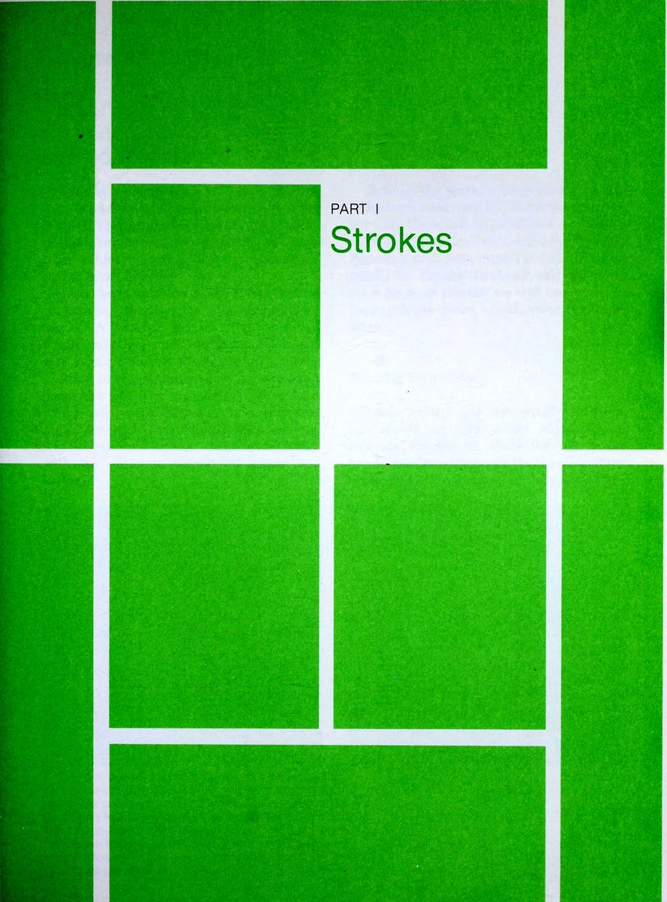
Chương 1: Cách Cầm Vợt
Bạn Nên Cầm Vợt Như Thế Nào?
Trong tất cả các nguyên tắc cơ bản của các cú đánh quần vợt, không có nguyên tắc cơ bản nào hơn cách bạn cầm vợt. Cách cầm vợt của bạn ảnh hưởng đến góc của mặt vợt, nơi bạn gặp bóng và quan trọng nhất là điều gì xảy ra khi mặt dây.
Cách cầm vợt đã là chủ đề gây tranh cãi liên tục kể từ khi môn quần vợt ra đời. Một cây vợt có tay cầm vát và các cạnh, và có nhiều cách để cầm vợt sao cho mặt vợt ở vị trí mà bạn muốn khi nó gặp bóng. Tuy nhiên, câu hỏi lớn là cách cầm vợt nào phù hợp nhất với từng người chơi trên mỗi cú đánh riêng lẻ—nghĩa là cách cầm vợt nào cho phép bạn đánh từng cú đánh với sự cân bằng tối ưu giữa sức mạnh và khả năng kiểm soát.
Gót chân Qua nhiều năm, rất nhiều kiểu cầm vợt đã được người chơi trong giải đấu sử dụng, nhưng chỉ có ba kiểu cầm vợt có thể được mô tả là ''cơ bản'':
phương Đông, lục địa và phương Tây.
Mặc dù hầu hết các chuyên gia, bao gồm cả tôi, đều khuyến nghị cách cầm vợt thuận tay và trái tay kiểu phương Đông cho hầu hết người chơi, nhưng ở đây chúng tôi sẽ quan tâm đến những ưu điểm và nhược điểm của cả ba kiểu cầm này.
Trước khi đi vào chi tiết cụ thể của từng loại, hãy làm rõ thuật ngữ. Hầu hết hướng dẫn cầm vợt đều tập trung vào vị trí của chữ "V"' trên bàn tay—nếp gấp giữa ngón cái và ngón trỏ—so với
Bên trái dưới góc xiên
Đúng rồi
Phần dưới dưới tay cầm vát. Vấn đề với cách tiếp cận này là các bàn tay của mỗi người khác nhau đáng kể, khiến cho chữ ''V'"' trở thành một điểm tham chiếu không đáng tin cậy. Để khắc phục vấn đề này, tôi sử dụng ba điểm kiểm tra:
gót bàn tay, đốt ngón trỏ và phần đệm ngón cái (xem hình vẽ). Các hướng dẫn được ban hành ở đây dành cho người thuận tay phải; người thuận tay trái nên áp dụng chúng vào phía đối diện của tay cầm.
Một lời giới thiệu cuối cùng về độ bám. Bất kể bạn sử dụng tay cầm nào, có một nguyên tắc vượt qua sự khác biệt về kiểu dáng. Đó là sự vững chắc. Trừ khi bạn cầm vợt đủ chắc để có thể cảm nhận được áp lực của các ngón tay lên cán vợt, nếu không cách cầm vợt sẽ không có hiệu quả. Bây giờ chúng ta hãy xem xét ba cách cầm vợt cơ bản của quần vợt.
Kiểu cầm vợt phía Đông Có hai kiểu cầm vợt kiểu Đông: một dành cho thuận tay và một dành cho trái tay. Bản thân kiểu cầm vợt này được đặt tên theo thực tế là nó lần đầu tiên được sử dụng rộng rãi trên các sân đất nện ở miền Đông Hoa Kỳ, nơi có bề mặt thường tạo ra độ nảy cao đến thắt lưng.
Hầu hết người chơi thích kiểu cầm vợt kiểu phương Đông hơn bất kỳ kiểu cầm vợt nào khác vì nó đặt tay ở phía sau cán vợt. Điều này làm cho kiểu cầm vợt Eastern trở nên lý tưởng để đánh bóng ở độ cao ngang thắt lưng từ cả trái tay và thuận tay. Nó có thể dễ dàng điều chỉnh cho những quả bóng cần đáp ứng thấp hơn hoặc cao hơn. (Như chúng ta sẽ thấy, cách cầm vợt kiểu Lục địa và kiểu Tây thiếu tính linh hoạt này.) Kiểu thuận tay kiểu Đông Cú thuận tay kiểu kiểu Đông (xem hình minh họa) đôi khi được gọi là kiểu cầm '''bắt tay''. Bạn có thể ước chừng nó bằng cách giữ mặt vợt vuông góc với mặt đất và sau đó siết chặt tay cầm như thể bạn đang ''bắt tay''.
Nói chính xác hơn: Đặt gót bàn tay phải của bạn lên góc xiên bên phải của tay cầm và miếng đệm ngón tay cái của bạn trên bảng dọc bên trái.
Sau đó, khép các ngón tay của bạn xung quanh tay cầm (như với hầu hết các tay cầm, ngón trỏ phải hơi tách ra khỏi các ngón còn lại, nhóm lại) với đốt ngón tay gốc của ngón trỏ nằm trên bảng dọc bên phải. Hãy tập xác định vị trí cách cầm này để bạn có thể thực hiện mà không cần nhìn. Trong một trận đấu, bạn nên quan sát quả bóng chứ không phải cán vợt.
Đốt ngón tay cơ sở 1. Gót bàn tay ở góc xiên bên phải 2. Ngón tay cái ở bảng dọc bên trái 3. Đốt ngón tay ở bảng dọc bên phải 1. Gót bàn tay một phần nằm ở góc xiên bên trái 2. Ngón tay cái mở rộng theo đường chéo 3. Đốt ngón tay cái ở bảng dọc bên trái ở bên phải Đốt ngón tay cơ sở Trái tay phía Đông Để đạt được cú đánh trái tay phía Đông, xoay bàn tay khoảng một phần tư vòng sang trái (ngược chiều kim đồng hồ) từ phía Đông thuận tay. Bạn có thể biết mình đúng khi gót bàn tay một phần nằm ở góc xiên bên trái và phần còn lại của bàn tay nhô ra khỏi các cạnh một chút.
Bây giờ đặt ngón tay cái theo đường chéo trên bảng dọc bên trái và đặt đốt ngón tay cái ở cạnh bên phải của bảng trên cùng.
Cha g! gG PSs hanain ri ed Mặc dù khoảng cách trên cán vợt giữa thuận tay kiểu phương Đông và trái tay không lớn, nhưng nó đủ quan trọng để yêu cầu thay đổi mỗi khi bóng đến phía đối diện của cơ thể. Việc thay đổi cách cầm bắt đầu ở vị trí sẵn sàng, với cổ vợt ở tay trái. Cách cầm vợt của bạn sẽ bắt đầu thay đổi ngay khi bạn bắt đầu rút vợt về phía sau để đánh. Việc điều chỉnh phải được hoàn thành tốt trước khi vợt vung về phía sau song song với cơ thể.
Một bài tập hay mà bạn có thể tự luyện tập là đứng trước gương, rút vợt Ce tức là về phía sau và dịch chuyển cán vợt sang cả hai bên. Tay cầm Continental Grip Tay cầm Continental được đặt tên như vậy vì nó có nguồn gốc từ lục địa Châu Âu— cụ thể là ở Pháp—nơi mặt sân đất mềm tạo ra độ nảy thấp. Không giống như trường hợp cầm vợt kiểu phương Đông, không có sự khác biệt giữa cú Continental thuận tay và cú Continental trái tay.
Không nghi ngờ gì rằng Continental rất thích hợp để xử lý bóng có độ nảy thấp.
Nó cũng phù hợp với những người có dáng người cao đến thắt lưng. Rắc rối xảy ra khi bóng nảy lên cao. Bản chất của cách cầm vợt là lòng bàn tay nằm trên tay cầm nên rất khó để kiểm soát tốt mặt vợt khi đánh bóng cao.
Để có kiểu cầm Continental thích hợp, hãy đặt vợt dọc theo mép vợt ở vị trí nằm ngang và nắm cán vợt từ phía trên, như thể nó là một cái búa. Nếu bạn nắm chính xác, gót bàn tay sẽ nằm ở mặt trên, ngón cái sẽ duỗi thẳng xung quanh tay cầm và đốt ngón tay gốc của ngón trỏ sẽ nằm ở góc xiên bên phải.
Mặc dù một số người chơi rất thành công—chẳng hạn như Rod Laver—sử dụng kiểu cầm Continental cho tất cả các cú đánh, nhưng nó không thực sự dành cho người chơi bình thường, ngoại trừ một ngoại lệ: dành cho volBase knuckle ee ae.
1. Gót bàn tay đặt trên mặt trên 2. Ngón tay cái duỗi thẳng quanh tay cầm 3. Đốt ngón tay đặt trên các rãnh xiên bên phải. Đánh các cú đánh trên mặt đất bằng cách cầm vợt kiểu Lục địa đòi hỏi cổ tay rất khỏe và thời gian chính xác hơn so với trường hợp cầm vợt kiểu phương Đông. Những yếu tố này, cùng với những khó khăn khi cầm bóng cao, là lý do khiến tôi ưa chuộng cách cầm vợt kiểu phương Đông dành cho những người chơi có trình độ trung bình.
Kiểu cầm vợt phương Tây Cái gọi là kiểu cầm vợt phương Tây lần đầu tiên được phát triển trên mặt sân xi măng cứng ở California, nơi bóng thường nảy cao. Tay cầm rất phù hợp với bóng cao và cũng phù hợp với bóng cao đến thắt lưng. Vấn đề của nó nằm ở chỗ bóng thấp. Vì tay nằm dưới cán vợt nên ở cả thuận tay và trái tay, rất khó để đưa đầu vợt xuống đối với những đường bóng thấp.
Cú thuận tay phương Tây Để thực hiện cú thuận tay kiểu phương Tây, hãy đặt vợt xuống sàn và nắm nó sao cho gót bàn tay và đốt ngón tay ở bên phải dưới góc xiên, với miếng đệm ngón tay cái ở bảng trên cùng. Có một biến thể của cách cầm này - thường được gọi là gót chân và đốt ngón tay nằm trên bảng dọc bên phải và ngón cái nằm ở góc xiên bên trái. Kiểu cầm vợt kiểu phương Tây này có lẽ là kiểu cầm thuận tay phổ biến nhất ở những người chơi chưa được đào tạo.
1. Gót bàn tay ở bên phải dưới góc xiên 2. Ngón tay cái ở mặt trên 3. Đốt ngón tay cũng ở bên phải dưới góc xiên kiểu phương Tây—trong The Western Backhand Một số người chơi sử dụng cú thuận tay của phương Tây chuyển sang trái tay bằng cách đơn giản lật ngược vợt và đánh bóng với cùng một mặt. Hầu hết đều sớm nhận ra rằng một cú đánh trái tay thấp lộn ngược khá khó chịu.
Một cách khác là lật vợt và lên dây bằng trái tay phương Tây gần giống với phiên bản phương Đông: gót bàn tay phẳng về phía góc xiên bên trái, ngón cái thẳng lên trên bảng dọc bên trái và đốt ngón tay ở mặt trên.
Dù thế nào đi nữa, mọi chuyện đều trở nên khá phức tạp.
Và đó chính là vấn đề với cách cầm vợt của phương Tây. Nó hoạt động đủ tốt với những quả bóng cao ở phía thuận tay, nhưng lại gặp rắc rối khi liên quan đến việc thay đổi cách cầm vợt. Nói tóm lại, tôi hoàn toàn không khuyến khích cách cầm vợt của phương Tây và hầu hết các chuyên gia cũng vậy.
1. Gót bàn tay ngang với góc xiên bên trái 2. Ngón tay cái duỗi thẳng dọc theo bảng dọc bên trái 3. Đốt ngón tay ở bảng trên cùng Thực hiện Thay đổi Tôi đã nêu rõ sở thích của mình đối với các kiểu cầm vợt phương Đông và đưa ra lý do của tôi. Nhưng bạn có nên đổi sang tay cầm kiểu Đông nếu bạn đang sử dụng loại khác không? Nếu bạn còn trẻ hoặc tương đối mới tham gia môn quần vợt, có nhiều thời gian để luyện tập và sẵn sàng làm việc thì một ca làm việc, mặc dù ban đầu khó khăn nhưng có thể sẽ mang lại lợi ích cho bạn về lâu dài. Mặt khác, nếu bạn đã chơi quần vợt trong nhiều năm và nhìn chung bạn hài lòng với kết quả đạt được với cách cầm vợt hiện tại thì việc thay đổi có lẽ là không đáng. Sẽ phải thực hành hàng nghìn cú đánh trước khi bạn bắt đầu cảm thấy thoải mái với bất kỳ cách cầm vợt mới nào và có lẽ điều đó không đáng để bạn phải bận tâm.
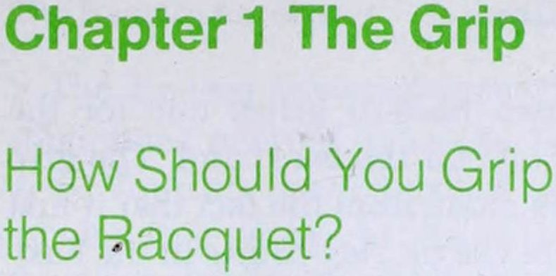
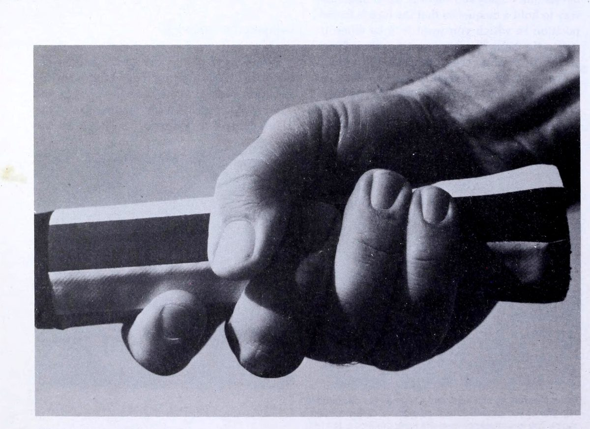
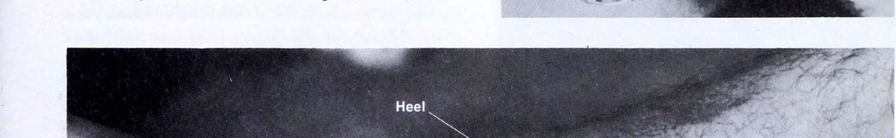
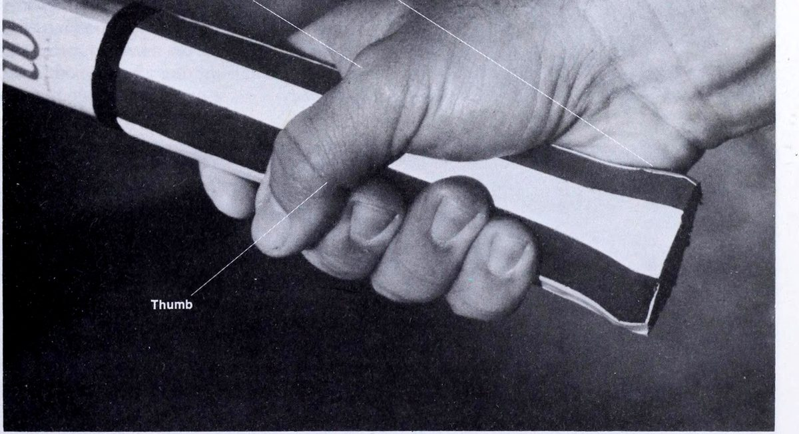
Kích Cỡ Cán Vợt Phù Hợp Với Bạn
Bất kể bạn sử dụng kiểu cầm vợt nào—Đông, lục địa hay phương Tây—bạn vẫn sẽ gặp vấn đề trong việc vuốt bóng đúng cách trừ khi bạn có một cây vợt có kích thước tay cầm phù hợp với mình. Nếu tay cầm quá lớn, bạn sẽ gặp khó khăn khi cầm vợt, đặc biệt là vào những ngày rất nóng khi tay bạn đổ mồ hôi. Mặt khác, tay cầm quá nhỏ có thể gây phồng rộp.
Trong nhiều năm, nhân viên bán hàng ở cửa hàng đồ thể thao và nhân viên bán hàng chuyên nghiệp đã trang bị tay cầm chủ yếu dựa trên cơ sở thử và sai, hỏi bạn "cảm giác cầm nắm cụ thể như thế nào". Ở một số nơi, phương pháp này hơi "khoa học" hơn một chút. Bạn nghe thấy các tiêu chí như ''chạm vào hình bát giác thứ bảy của tay cầm' hoặc ''ngón cái chồng lên ngón tay thứ ba.''
Có một cách đơn giản hơn, chính xác hơn để kiểm tra kích thước tay cầm mà bất cứ ai cũng có thể dễ dàng tự kiểm tra. Đó là nhờ yếu tố lòng bàn tay.
Hãy nhìn vào lòng bàn tay của bạn. Chú ý các nếp gấp bên. Nếp gấp phía dưới, chạy dọc theo phần giữa của bàn tay, là nếp nhăn bạn muốn. Nếu bạn lấy thước kẻ (xem hình vẽ) và đo từ đầu ngón đeo nhẫn đến một điểm trên nếp gấp giữa ngón đeo nhẫn và ngón giữa, bạn sẽ có thể xác định được độ bám mà mình cần. Nếu số đo đưa ra, chẳng hạn như 4% inch, thì đó là kích thước tay cầm chính xác dành cho bạn.
Nếu bạn là nam giới, rất có thể tay cầm của bạn sẽ đo được từ 412 đến 434 inch. Độ bám của phụ nữ trung bình rơi vào khoảng 4% đến 4%, inch. Tất nhiên, tay cầm của trẻ em sẽ nhỏ hơn.
Nếu bạn thấy rằng tay cầm bạn đang sử dụng quá lớn hoặc quá nhỏ, việc điều chỉnh có thể được thực hiện dễ dàng và không tốn kém ở bất kỳ cửa hàng quần vợt tốt nào. Và khi bạn đi điều chỉnh độ bám, hãy nói với chuyên gia về kỹ thuật này.
Bạn sẽ giúp ích cho khách hàng tiếp theo.
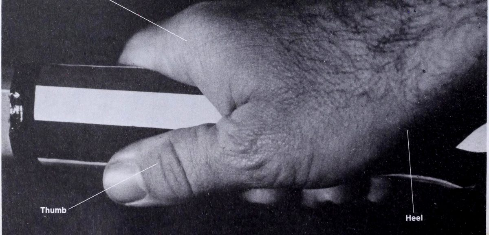
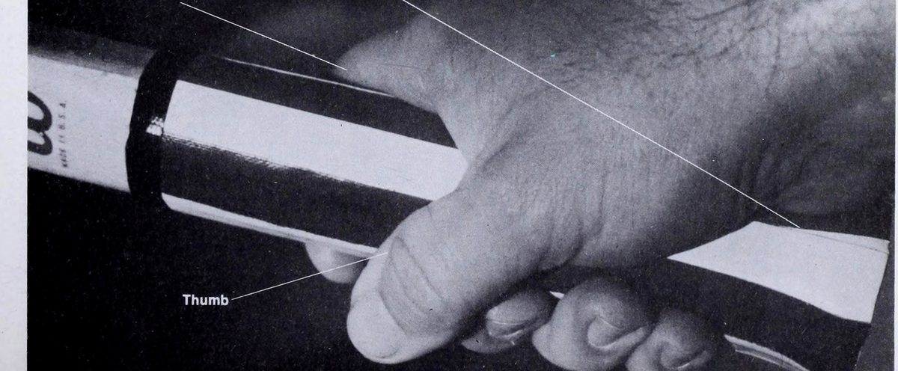
Các Tay Vợt Chuyên Nghiệp Cầm Vợt Thế Nào
Đôi khi có vẻ như có nhiều kiểu cầm vợt khác nhau ngang bằng với số nhà vô địch quần vợt. Đó là bởi vì ở những cấp độ cao hơn trong giải đấu, mỗi người chơi dường như đều có những đặc điểm riêng hấp dẫn của riêng mình - một sự khác biệt nhỏ so với chuẩn mực ở đâu đó.
Vì vậy, không có gì ngạc nhiên khi rất ít chuyên gia lưu diễn hàng đầu sử dụng kiểu cầm vợt có thể được coi là kiểu cầm cổ điển—kiểu thuận tay và trái tay của phương Đông. Trên thực tế, nhiều tay vợt hàng đầu chỉ sử dụng một tay cầm cho tất cả các cú đánh; hoặc nếu họ thay đổi cho các cú thuận tay và trái tay thì việc điều chỉnh là rất nhỏ.
Rod Laver đã đạt được thành công phi thường của mình chỉ với một sự thay đổi rất nhỏ từ cách cầm vợt Continental cho cú thuận tay sang cách cầm vợt ở giữa kiểu Continental và kiểu Eastern cho trái tay của anh ấy. Nhiều tay vợt Úc có xu hướng thích kiểu cầm vợt có thể được mô tả là kiểu Lục địa với rất ít hoặc không có sự thay đổi giữa trái tay và thuận tay.
Mặt khác, nhiều tay vợt người Mỹ có vẻ thích thay đổi cách cầm vợt lớn hơn. Stan Smith đã từng có sự thay đổi cách cầm vợt rõ rệt, mặc dù gần đây anh ấy dường như đang sử dụng cái mà đôi khi được gọi là kiểu thuận tay của Úc (nghĩa là cách cầm vợt ở giữa kiểu Continental và kiểu thuận tay kiểu Đông) và kiểu trái tay kiểu kiểu Đông. Bản thân tôi cũng sử dụng cách thay đổi cách cầm vợt tương tự, mặc dù đôi khi - chẳng hạn như khi trả giao bóng - không có đủ thời gian để thay đổi cách cầm vợt.
Tôi khá khác biệt so với hầu hết các vận động viên chuyên nghiệp ở chỗ tôi chờ giao bóng với cách cầm vợt thuận tay đã được sửa đổi — giống như kiểu cầm vợt thuận tay của người Úc.
Hầu hết người chơi chờ đợi bằng cách cầm vợt trái tay của họ, vì họ dự đoán rằng cú giao bóng sẽ hướng vào các cú đánh trái tay của họ. Hầu hết thời gian tôi thích chờ đợi bằng cú thuận tay của mình hơn, bởi vì tôi thà thỏa hiệp ở cú đánh trái tay hơn là ở cú thuận tay. Tôi thấy việc cắt bóng trở lại dễ dàng hơn bằng một cú đánh. cách cầm vợt trái tay không đúng còn hơn là đánh bóng bằng cách cầm vợt sai ở phía thuận tay.
Ken Rosewall cũng chờ giao bóng bằng cách cầm vợt thuận tay. Anh lưu ý khi lấy vợt về cho cú đánh trái tay, bạn phải sử dụng hai tay, điều này giúp bạn dễ dàng xoay vợt và điều chỉnh độ bám. Ngược lại, chỉ có một tay được sử dụng để thực hiện động tác vung vợt về phía sau ở phía thuận tay, điều này khiến việc xoay vợt để thay đổi cách cầm vợt trở nên khó khăn hơn.
Một số tay vợt nữ hàng đầu dường như cũng thích cách cầm đơn. Margaret Court có cách cầm vợt thuận tay kiểu phương Đông đã được sửa đổi, thật không may, lại tạo ra một số điểm yếu cho cú đánh trái tay của cô ấy. Kết quả là cô ấy có xu hướng cắt trái tay của mình mọi lúc, và cách cầm vợt của cô ấy khiến cô ấy gần như không thể tạo ra một cú trái tay xoáy lên. Cách cầm vợt Continental cực kỳ rõ ràng được sử dụng bởi Evonne Goolagong - người do đó có cú thuận tay rất yếu. Không giống như những ngôi sao người Úc này, Billie Jean King thay đổi giữa một cú thuận tay kiểu phương Đông đã được sửa đổi và một cú trái tay thuần túy kiểu phương Đông, điều này có thể khiến cô ấy có những cú đánh thuận tay và trái tay gần như tốt như nhau.
Ngày nay rất ít tay vợt hàng đầu sử dụng cách cầm vợt của phương Tây. Harold Solomon của United Nhiều ngôi sao hàng đầu đã khắc phục được nhược điểm của những cách cầm vợt không chính thống vì họ đã phát triển được khả năng thực hiện cú đánh tuyệt vời. Jimmy Connors (ở trên) ưa chuộng kiểu cầm vợt giống kiểu phương Tây nhưng ngày nay hiếm thấy. Evonne Goolagong Cawley (phải) có kiểu cầm vợt Continental đã được sửa đổi, có thể sử dụng cho cả cú đánh trái tay và thuận tay, trong khi Francoise Durr (bên dưới) sử dụng kiểu cầm vợt thuận tay kỳ quái cho hầu hết các cú đánh của cô ấy.
States và Bjorn Borg của Thụy Điển đều sử dụng kiểu cầm vợt thuận tay quá mức của phương Đông và có xu hướng hướng về phía phương Tây. Borg cũng sử dụng rất nhiều cổ tay để thực hiện cú giật bóng.
Jimmy Connors cũng có cách cầm vợt thuận tay gần giống tay vợt phương Tây. Tuy nhiên, anh ta có cổ tay có hình dạng bất thường, điều này khiến việc xác định cụ thể về cách cầm vợt của anh ta khá khó khăn.
Nhiều người chơi có cách cầm vợt rất lừa đảo. Ví dụ, Roy Emerson dường như có kiểu cầm vợt Continental cho cả thuận tay và trái tay. Nhưng cổ tay của anh ấy bị cong ở một vị trí bất thường đến mức có lẽ anh ấy đang sử dụng cách cầm vợt thuận tay kiểu phương Đông.
Cách cầm vợt kỳ lạ nhất được sử dụng bởi ngôi sao người Pháp Francoise Durr, người có cách cầm vợt thuận tay rất kỳ lạ của phương Đông cho mỗi cú đánh. Cổ tay và khuỷu tay của cô ấy dẫn trước trái tay, đây thường là cách rất khó để thực hiện một cú trái tay mạnh mẽ. Và cú đánh trông kỳ dị nhất. Nhưng cô ấy di chuyển vào vị trí rất tốt, lấy vợt nhanh và quan sát bóng rất kỹ. Kết quả là cô ấy có một cú đánh trái tay rất hiệu quả mặc dù cách cầm vợt của cô ấy trông có vẻ vụng về.
Rất hiếm khi tìm thấy một chuyên gia du lịch nào thay đổi vị trí cầm vợt của mình trừ khi có một điểm yếu khá rõ ràng trong một cú đánh cụ thể.
Cliff Drysdale của Nam Phi từng có cú thuận tay yếu, một phần là do cách cầm vợt Continental mà anh ấy sử dụng. Ông đã sửa đổi cách cầm vợt của mình theo kiểu thuận tay Eastern vào năm 1971 và một phần vì sự thay đổi đó mà ông đã có một năm tuyệt vời nhất từ trước đến nay. Thật không may, anh ấy dường như đã quay lại kiểu Continental bằng cú thuận tay của mình.
Rất có thể một vận động viên chuyên nghiệp sử dụng các cách cầm vợt không phải kiểu thuận tay và trái tay cổ điển của phương Đông sẽ làm được điều đó bởi vì anh ta cảm thấy thoải mái nhất với cách cầm vợt của chính mình và đã học cách khắc phục bất kỳ khuyết điểm nào có thể có của nó. Điều đó không có nghĩa là người chơi bình thường nên bắt chước cách cầm vợt Continental, chẳng hạn chỉ vì Ilie Nastase đã rất thành công với nó. Cho đến khi các cú đánh của anh ta được tạo rãnh kỹ càng, người chơi trung bình có lẽ sẽ chơi tốt hơn với kiểu cầm vợt kiểu phương Đông.
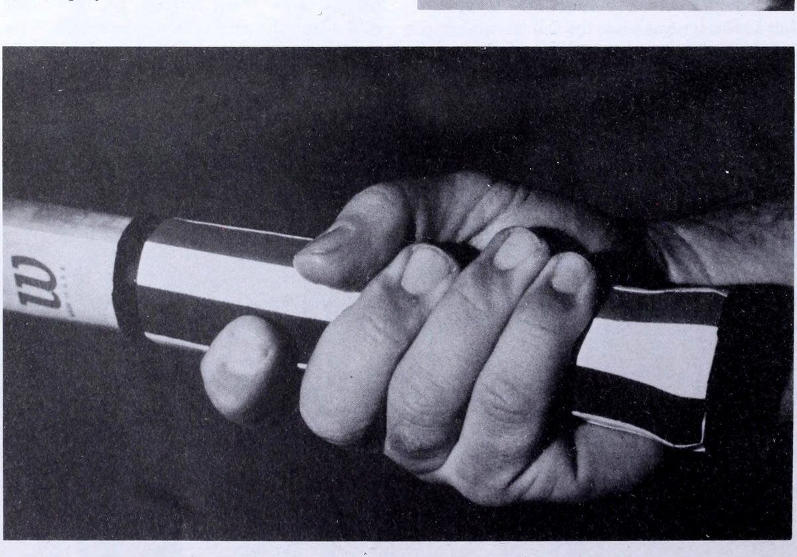
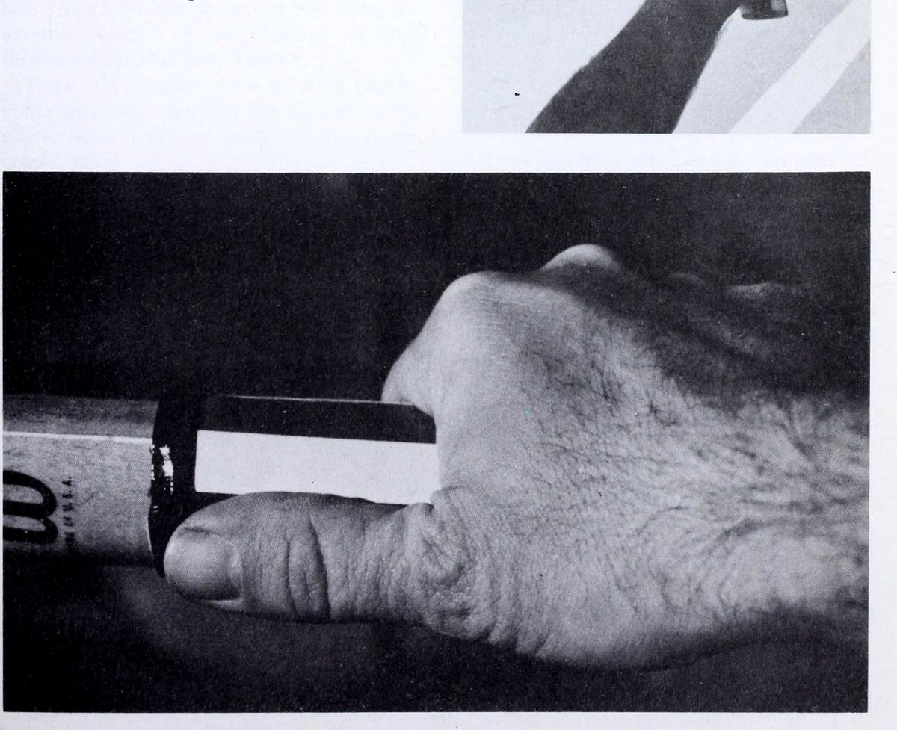
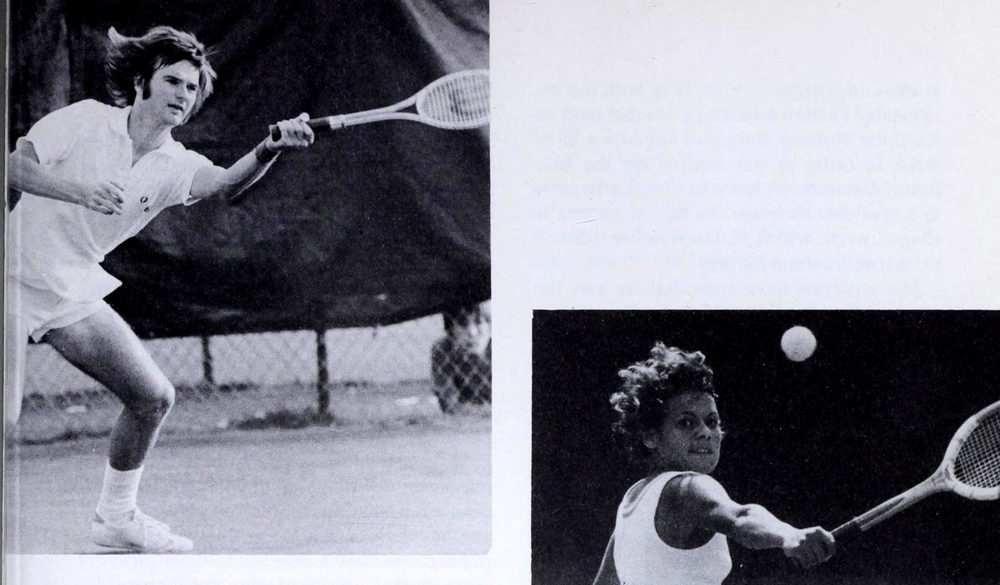
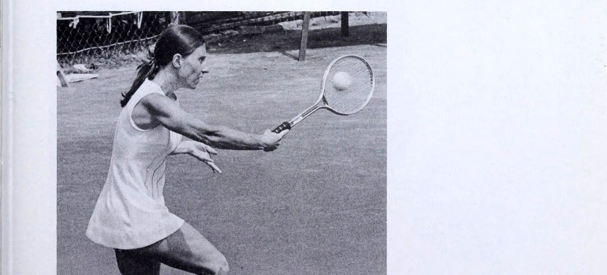
Chương 2: Cú Thuận Tay
Đánh Cú Thuận Tay Mạnh Mẽ
Đã bao nhiêu lần bạn nghe huấn luyện viên hoặc người hướng dẫn nói, "Đừng bao giờ sao chép phong cách của người khác'? Tôi nghĩ đó là lời khuyên tồi. Bắt chước người khác có gì sai—đặc biệt nếu người đó đã thành công?
Khi tôi còn là một đứa trẻ ở miền nam California vào những năm 1930, người hùng của tôi là Ellsworth Vines. Vines có một nét cổ điển thực sự khiến tôi thích thú. Anh ấy là một người cao lớn, có chuyển động xoay tròn lớn và khả năng thực hiện cú thuận tay tuyệt vời. Anh ấy có thể đánh nó dọc sân hoặc dọc biên, và anh ấy thực sự có thể đánh bại nó. Một kẻ lười biếng. Tôi chỉ được xem Vines chơi một lần, và từ đó trở đi cú thuận tay của anh ấy là hình mẫu của tôi. Tôi không xấu hổ khi thừa nhận rằng tôi đã sao chép cú thuận tay của anh ấy. Mỗi cú thuận tay mà tôi thực hiện kể từ lần đầu tiên chơi với Vines đều có hình ảnh về cách anh ấy đánh nó.
Kramer: 'Ellsworth Vines có một cú thuận tay cổ điển ... và mọi cú thuận tay mà tôi từng đánh The Case for the Forehand Nói chung, tôi muốn nói rằng trở thành một người chơi thuận tay sẽ tốt hơn là một người chơi trái tay. Một lý do tôi nói điều này là vì cú thuận tay giúp bạn ở vị trí tốt hơn sau khi bạn thực hiện cú đánh.
Một lý do khác là, về mặt lý thuyết, bạn có thể đánh được nhiều cú đánh hơn bằng cú thuận tay. Bạn có thể đánh bóng mạnh hơn và vì đó là cú đánh dài hơn nên bạn có thể đạt được tốc độ nhanh hơn.
Thật không may, vì môn quần vợt hiện đại diễn ra quá nhanh nên nhiều tay vợt đẳng cấp thế giới có thứ mà tôi cho là cú thuận tay gần như vô hình.
Lý do, tôi nghĩ, là vì họ lo lắng quá nhiều về những cú trái tay của mình, thường sử dụng cách cầm vợt thuận tay nghiêng về phía trái tay. Kết quả là họ phải bơm rất nhiều cổ tay vào các cú thuận tay và điều này dẫn đến sai sót.
Tôi tin rằng những lỗi này sẽ không xảy ra nếu có nhiều người chơi sử dụng cách cầm vợt kiểu Eastern hơn.
Chuẩn bị sẵn sàng Bản chất của một cú thuận tay tốt là sự chuẩn bị sớm. Trong mọi trường hợp, khi bạn ở vị trí sẵn sàng, tôi khuyên bạn nên cầm vợt thuận tay kiểu Eastern. Ngay cả sau khi bạn đã giao bóng hoặc đánh một cú trái tay, tôi khuyên bạn nên quay lại cách cầm vợt đó. Tại sao? Vâng, có một điều, cú đánh thuận tay đòi hỏi cú vung vợt dài hơn cú đánh trái tay, vì vậy bạn cần nhiều thời gian hơn để chuẩn bị. Ngay cả khi bạn đang cầm vợt theo kiểu cầm vợt thuận tay kiểu Eastern và bóng được đánh về phía trái tay của bạn, bạn vẫn có nhiều thời gian để thay đổi cách cầm vợt hơn nếu tình huống đảo ngược.
Không phải là bạn không nên sẵn sàng chuyển sang trái tay ngay lập tức. Bạn nên làm vậy.
Và bạn có thể tự giúp mình trong vấn đề này bằng cách vào tư thế sẵn sàng với vợt đưa ra trước mặt và các ngón tay của bàn tay còn lại giữ nhẹ cổ vợt, sẵn sàng giúp xoay vợt khi thay đổi cách cầm.
Đừng gian lận bằng cách né bóng sang bên này hay bên kia—đặc biệt là về phía trái tay. Điều đó sẽ khiến bạn lãng phí nhiều chuyển động hơn khi đánh cú thuận tay. Hãy nhớ rằng dù sao thì cú thuận tay cũng yêu cầu một cú vung vợt dài hơn. Đừng làm khó chính mình.
Một điểm quan trọng khác ở tư thế sẵn sàng là cơ thể bạn phải uốn cong. Bạn nên ở tư thế nửa cúi người, đầu gối hơi cong để giúp bạn nhanh chóng lao về phía quả bóng. Bàn chân nên dang rộng bằng chiều rộng của vai.
Cú đánh Hầu hết các cú thuận tay sai đều thực hiện sai ngay khi bắt đầu—khi vung vợt sau. Những người mới bắt đầu thường bắt đầu backswing quá muộn. Họ cũng không làm đủ với nó. Khi vợt được kéo về phía sau, hông cũng phải xoay và động tác chân thích hợp phải được thực hiện cùng lúc. Hầu hết các lỗi thuận tay có thể bắt nguồn từ một số sai sót trong quá trình sơ bộ này.
Khi bạn chuẩn bị cho cú thuận tay, đầu vợt của bạn phải được kéo về phía sau sao cho mặt vợt song song với cơ thể bạn—khoảng ngang đầu gối. Đồng thời, bạn nên chuyển trọng lượng của mình sang bên phải hoặc lưng, chân. Khi vung bóng, bạn nên cố gắng tiếp xúc với bóng cao đến thắt lưng và thực hiện cú đánh cao hơn vai một chút. Khi bạn vuốt bóng, không cần thiết phải lắc cổ tay, mặc dù một số vận động viên chuyên nghiệp luôn làm như vậy. Các cú thuận tay phải được đánh bằng cổ tay khá chắc chắn, giống như bạn đang xách một chiếc vali.
Việc theo dõi (xem phần tiếp theo) là rất quan trọng. Nó cung cấp lực lướt hướng lên trên cho cú đánh, do đó tạo ra vòng xoáy xoáy lên trên quả bóng.
Chuyển trọng lượng Hầu hết các chuyên gia quần vợt sẽ yêu cầu bạn chuyển trọng lượng của mình sang chân trước khi bạn đánh. Và họ đã đúng. Đó là cách bạn làm khi bạn có thời gian và sẵn sàng. Nhưng nếu bạn là kiểu tay vợt thường xuyên chạy trốn, bạn có thể phải xoay người nhanh chóng và đánh bằng chân sau. Bạn sẽ không có thời gian để chuyển trọng lượng sang chân trước.
Với tình huống này, người ta có thể hỏi tại sao người mới bắt đầu không được dạy đánh ở vị trí mở này, bằng chân sau. Câu trả lời của tôi là người chơi phải học các bước cơ bản và vị trí cơ thể trước tiên và để các biến thể đi kèm với kinh nghiệm. Nếu bạn đang học piano, bạn phải chơi âm giai trước khi chơi Mozart.
Thay đổi cú đánh Về cơ bản có ba cách để thực hiện một cú công bóng thuận tay: với xoáy lên, trong đó bóng lúc đầu bay lên, giảm mạnh và sau đó nảy lên bằng một cú đá; với xoáy xuống, trong đó bóng lơ lửng và không nảy lên cao khi chạm vào, và bằng phẳng, trong đó không có độ xoáy nào cả. Thành thật mà nói, tôi nghĩ ý tưởng đánh "phẳng" là chuyện hoang đường. Nếu bạn định đánh mạnh, bạn phải tạo độ xoáy cho quả bóng để kiểm soát nó. Và tôi là người ủng hộ mạnh mẽ cho topspin.
Topspin được tạo ra bằng cách vợt hướng lên trên và xuyên qua bóng. Đó là một yếu tố quan trọng trong kỹ thuật đánh tennis và phải là một phần trong môn quần vợt của bạn. Trên thực tế, hai cú đánh có lẽ là vĩ đại nhất trong lịch sử quần vợt—cú thuận tay của Pancho Segura và cú đánh trái tay của Don Budge—phụ thuộc rất nhiều vào xoáy lên. Họ áp dụng đủ xoáy lên để giữ bóng trong sân bằng cách sử dụng chuyển động nâng của toàn bộ cánh tay và không phụ thuộc vào việc búng cổ tay, như cách Rod Laver và Tom Okker đã làm.
Mặt khác, xoáy xuống được tạo ra do vợt hơi nghiêng về phía sau để tác động của vợt và bóng làm cho bóng quay về phía sau. Bóng có xu hướng "nổi" và có độ nảy thấp khi chạm đất.
Các tay vợt giỏi hiếm khi sử dụng xoáy xuống trong các cú công bóng thuận tay từ đường cuối sân. Nó được sử dụng chủ yếu cho các cú đánh tiếp cận hoặc thay đổi nhịp độ để làm đảo lộn nhịp độ của đối thủ.
Rx cho những cú thuận tay bị lỗi Trong suốt sự nghiệp của mình, khi có vấn đề gì đó xảy ra với cú thuận tay của tôi — hoặc các phần khác trong môn quần vợt của tôi — tôi sẽ nghiên cứu các bộ phim về chính mình. Đôi khi thật khó để tin rằng người đàn ông có những khuyết điểm đó thực sự là tôi. Nhưng lại rất dễ rơi vào những thói quen xấu gây ra lỗi lầm. Bạn có thể vô thức nảy sinh ra những vấn đề mà bạn không thể phát hiện được nhưng người khác lại dễ dàng nhìn thấy.
Khi một cú thuận tay không tốt, nó có thể vì bất kỳ lý do nào. Một là khả năng nắm bắt của bạn. Chuẩn bị sai và cú backswing quá cao là những nguyên nhân khác. Lý do thứ tư là không sớm thay đổi.
Một nguyên nhân khác khiến cú thuận tay bị lỗi là chân không đủ linh hoạt khi chạy. Khi chạy chân cứng, bạn phải vung tay quá nhiều để bù lại; điều đó làm giảm cơ hội có được một cú đánh tốt của bạn. Co duỗi chân cho phép bạn chuyển trọng lượng của mình một cách chính xác, từ đó giúp tạo ra một cú đánh nhịp nhàng, mượt mà.
Tóm tắt Tóm lại, chìa khóa để đánh thuận tay mạnh là (1) cách cầm vợt thích hợp (tôi khuyên dùng phương Đông); (2) chuẩn bị sớm; (3) cú swing bắt đầu ở vị trí thấp và kết thúc ở trên vai; (4) cổ tay chắc chắn khi tiếp xúc; (5) theo dõi đầy đủ, suôn sẻ.
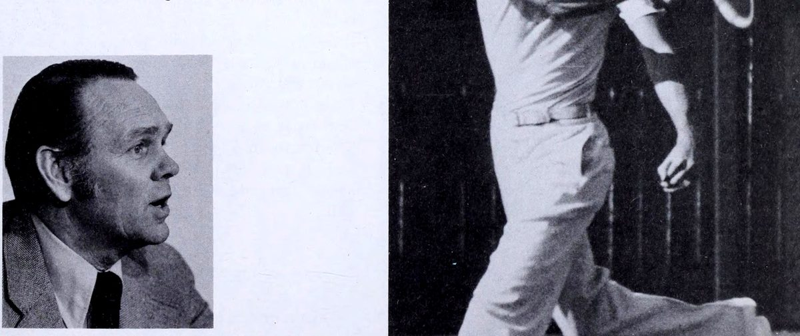
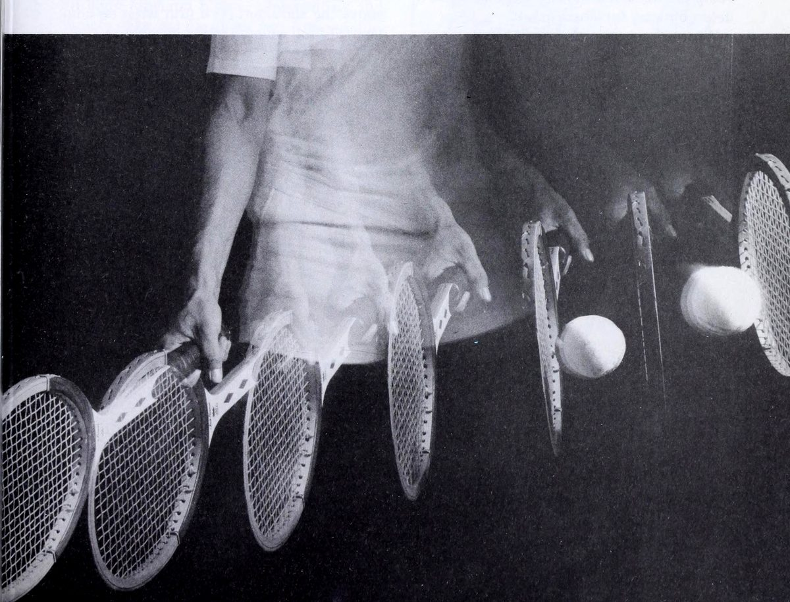
Tầm Quan Trọng Của Động Tác Vung Vợt Theo Bóng
Có lẽ lỗi phổ biến nhất mà người chơi câu lạc bộ mắc phải khi đánh thuận tay là không thực hiện đủ. Cây vợt thường dừng lại ngay sau khi chạm bóng, và quả bóng, không có độ xoáy để dẫn hướng, thường bay lên, bay lên và đi vào điểm dừng.
Có một cách đơn giản để khắc phục vấn đề này. Để đảm bảo tư thế phù hợp trong động tác tiếp theo, bạn phải đưa cánh tay của mình đủ về phía trước sau khi tiếp xúc sao cho phần trên của nó tạo thành một góc ít nhất 90 độ với phần thân trên (xem hình vẽ bên phải). Hầu như tất cả những người đánh thuận tay giỏi, cả chuyên gia lẫn người mới chơi, đều đưa cùi chỏ về phía trước trong quá trình thực hiện cú đánh tiếp theo—về hướng mà họ đã đánh bóng.
Một số người chơi, để tạo ra nhiều xoáy lên hơn vào các cú thuận tay của họ, sẽ kết thúc cú đánh thuận tay của họ với đầu vợt cao hơn đầu. Những người chơi khác có cú thuận tay tốt thì dứt điểm bằng vợt và cán vợt qua vai trái. Trong cả hai trường hợp, quy tắc cơ bản vẫn giữ nguyên: phần trên của cánh tay phải luôn được nâng lên sao cho tạo thành một góc ít nhất 90 độ với cơ thể.
Cánh tay trên trong sơ đồ này tạo thành một góc 90 độ với phần thân trên. Cũng chú ý rằng khuỷu tay hướng về phía trước.
Đây là hai chìa khóa sẽ giúp bạn phát triển khả năng theo dõi cần thiết cho một cú thuận tay.
1. Khi bóng đang trong cuộc, Tom Gorman đang ở tư thế sẵn sàng chờ quả trả bóng.
Anh ta ở phía sau vạch cuối sân khoảng một bước và cầm vợt hướng thẳng về phía trước. Điều đó có nghĩa là anh ta sẽ có cùng khoảng cách để di chuyển 2. Nhận thấy rằng quả bóng đang được chuẩn bị cho dù đến bên thuận tay của anh ta, quả bóng của Tom đến bên thuận tay của anh ta bắt đầu bằng vòng tròn hoặc trái tay. vung khi anh ta bắt đầu xoay người bằng chân phải để quay sang lưới.
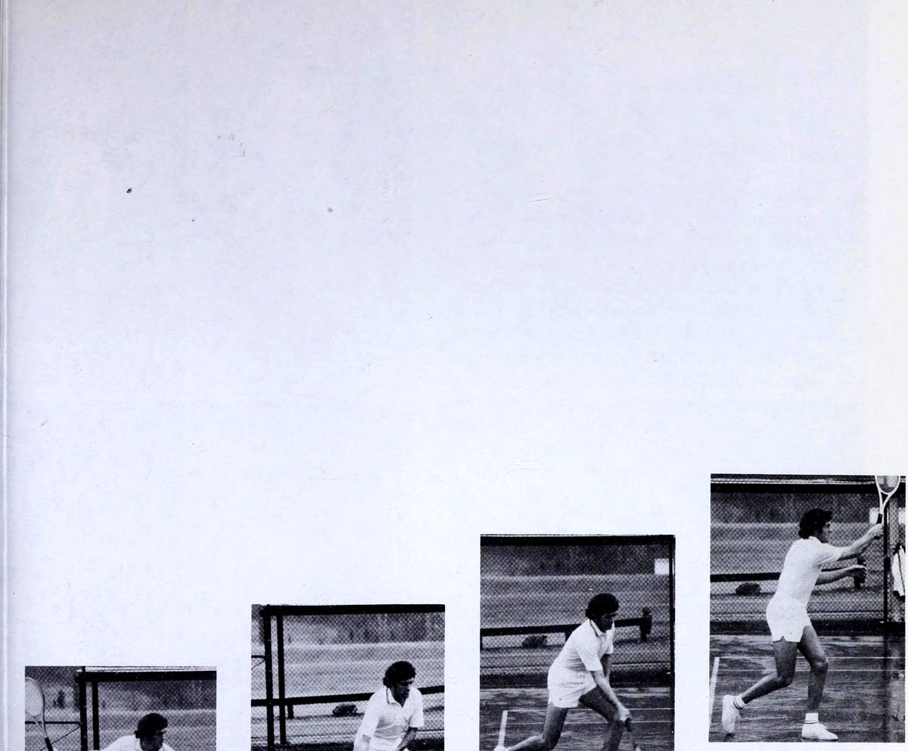
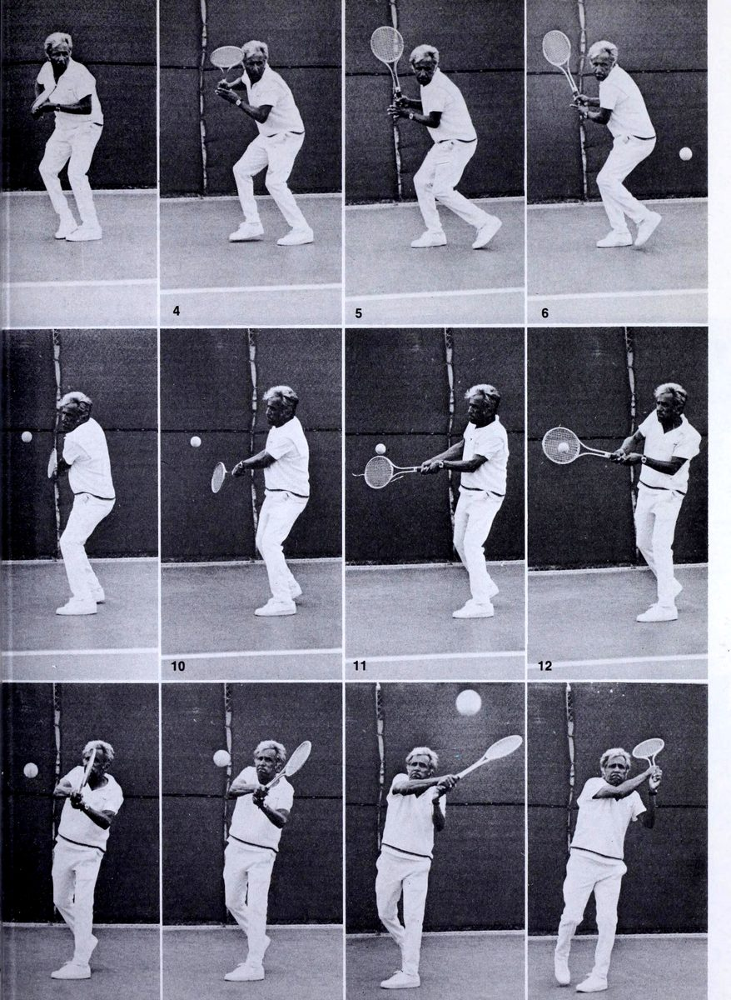
Giải Phẫu Cú Thuận Tay Mạnh
Khi thi đấu, Tom Gorman là một trong những tay vợt có thành tích toàn diện mạnh nhất trong môn quần vợt. Chuỗi ảnh ở đây cung cấp cái nhìn cận cảnh về cú thuận tay của Gorman. Lưu ý rằng Gorman sử dụng động tác backswing hình tròn, Jack Kramer cũng vậy. Gorman nói rằng điều này mang lại cho anh ấy cảm giác nhịp nhàng hơn và cho phép anh ấy đánh mạnh hơn. Lời khuyên của tôi dành cho những người chơi ở mức trung bình là họ nên đưa vợt thẳng về phía sau. Điều này tránh được một lỗi thường gặp: bắt đầu cú swing quá cao. Nhưng dù có cú đánh lùi cao, Gorman vẫn phục hồi tốt – đưa vợt xuống song song với mặt đất trước khi tiếp xúc. Và đặc biệt chú ý đến việc theo dõi của anh ấy. Nó thật tuyệt vời.
3. Anh ấy tiếp tục vung vợt về phía sau trong khi nghiêng người sang một bên với sự phân bổ trọng lượng tốt. Bàn chân của anh ấy rộng 4. Có vẻ như anh ấy nhận ra rằng bây giờ đã đủ xa để chuyên nghiệp- quả bóng sẽ tiếp đất ngắn trong video với khả năng giữ thăng bằng tốt. trong phần sân của mình, Tom trượt số 6 của mình. Vì bóng ở ngang đầu gối của anh ấy nên Tom đã cong đầu gối để xuống số 5. Tom đang bước vào bóng, và vợt được đánh, và vợt chỉ quét vào phía sau khu vực bắt đầu đi xuống, trong quá trình anh ấy dự định tiếp xúc để trở nên song song với bóng. Vai của anh ấy đã bắt đầu lệch khỏi vị trí 8. Tom đã hoàn thành cú đánh của mình với độ theo dõi cao và điểm 7 tốt. Gorman đã thực hiện động tác mở rộng cánh tay tiếp xúc. Tương tự như vậy bằng chân trước của anh ấy, và điều quan trọng là hãy chú ý rằng quả bóng đang trên đường quay trở lại của anh ấy đã giữ cho đầu gối của anh ấy cong về phía đối thủ. Lưu ý trong suốt hành trình. Anh ta cho rằng trọng lượng của Gorman gần như không phổ biến hoàn toàn do lỗi duỗi thẳng chân về phía trước, khiến anh ta quỳ gối khi đánh bóng.
để tăng thêm sức mạnh cho cú đánh.
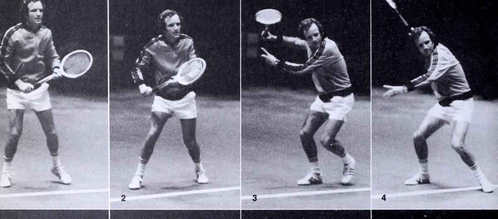
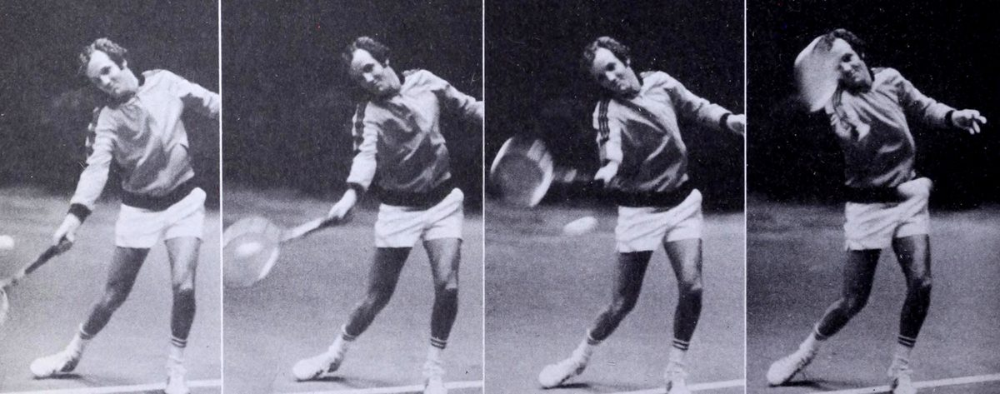
Cú Thuận Tay Hai Tay Của Pancho Segura
Cú thuận tay bằng hai tay của Pancho Segura chắc chắn được xếp hạng là một trong những cú đánh tàn khốc nhất — nếu không muốn nói là tàn khốc nhất — trong lịch sử môn quần vợt. Như Jack Kramer đã nói:
"Trong tất cả những cú thuận tay mà tôi từng thấy, cú thuận tay của Segura là cú thuận tay tốt nhất. Điều mà Segura dành cho anh ấy là sự khó đoán. Anh ấy có thể đánh rất mạnh khi chuẩn bị sẵn sàng, giống như một cầu thủ bóng chày.
Nhưng anh ta lại có sự khống chế vô duyên. Anh ấy có thể đánh bóng ngắn, chéo sân, dọc biên và lốp bóng - tất cả đều với chuyển động gần như giống nhau. Anh ấy có khả năng đợi đến giây cuối cùng, sau đó vung theo hướng anh ấy muốn đánh bóng."' Anh ấy đã làm điều đó như thế nào? Ở đây, trong chuỗi các bức ảnh tiếp theo, Segura thể hiện và giải thích bằng lời của chính mình.
Xoay cùng với Pancho: Segura cho biết cách anh ấy thực hiện bất kỳ kiểu đánh bằng hai tay nào, bạn phải có khả năng dự đoán tốt và phản xạ nhanh để tiếp cận bóng và có nhiều thời gian để thực hiện cú đánh. Để chuẩn bị cho cú thuận tay, tôi chờ trong tư thế cởi mở (khung 1 và 2), mắt dán chặt vào vợt đối phương để có thể bắt đầu di chuyển ngay khi anh ta đánh bóng. Tôi cầm vợt như cầm gậy bóng chày: tay trái đặt ở mông vợt, tay phải ở trên. Khi đối thủ của tôi đánh bóng, hãy thực hiện các bước ngắn, nhanh (khung 3–5) để đặt mình gần đường bay của bóng. Tôi bắt đầu vung vợt về phía sau ngay khi bóng chạm đất. Thời điểm rất quan trọng, vì tôi thích đánh bóng ở độ cao hoặc ngang eo. Động tác vung sau của tôi đi theo một vòng tròn nhỏ với cánh tay khá gần cơ thể (khung 4–8). Cú đánh bằng hai tay gần như buộc tôi phải làm điều đó. Nhưng cú đánh lùi nhỏ có lợi thế là cú đánh dễ dàng bị ngụy trang. Khi vợt lùi lại (khung 5–8), tôi dồn toàn bộ trọng lượng của mình vào chân phải. Điều đó sau đó sẽ buộc tôi phải đưa cơ thể về phía trước để có thể dồn trọng lượng của mình vào cú đánh. Khi kết thúc cú backswing của tôi (khung 8), vợt hơi ở dưới đường bay của bóng, vai tôi song song với đường bay và đầu gối của tôi cong lại. Trong cú vung vợt về phía trước của tôi (khung 9–11), vợt của tôi vẫn ở dưới mức tôi di chuyển theo chiều ngang.
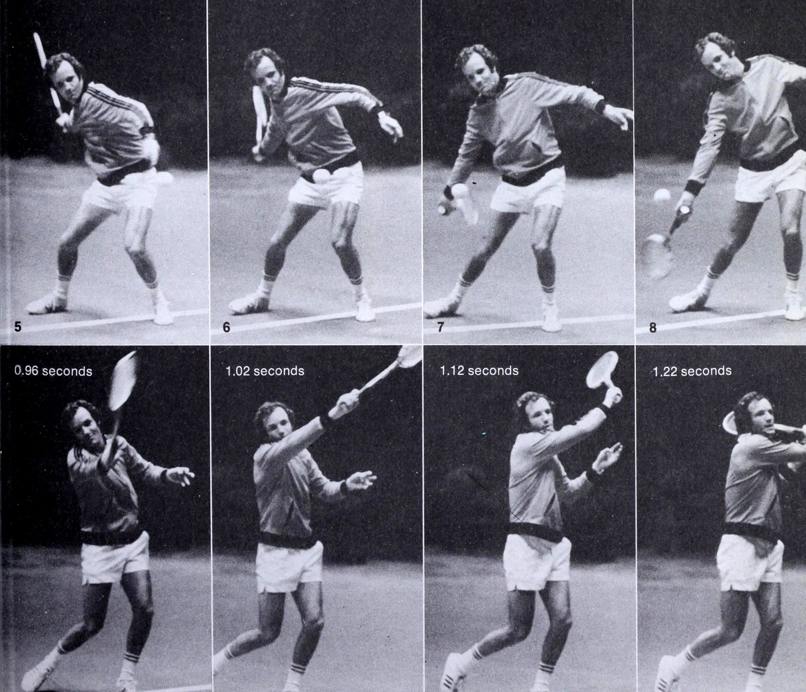
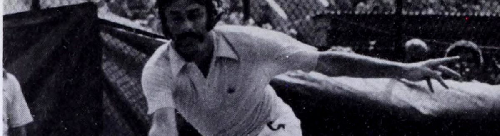
Cú Thuận Tay Xoáy Lên Chí Mạng Của Tom Okker
Tom Okker, được thấy trong chuỗi ảnh tốc độ cao này, có cú thuận tay khác thường nhất trong quần vợt ngày nay. Nó có lẽ là cú thuận tay xoáy lên mạnh nhất kể từ cú thuận tay của Fred Perry. Điều khiến cú thuận tay của Okker trở nên tuyệt vời hơn là việc anh ấy làm rất nhiều điều "sai" với nó: anh ấy sử dụng rất nhiều cổ tay, đặt 0,00 giây 0,14 giây 0,88 giây gần như không có trọng lượng trong cú đánh và đánh bóng muộn. Vì vậy, đây không phải là một cú đánh mà người chơi bình thường nên bắt chước, nhưng rõ ràng là nó có hiệu quả. Tại sao? Đơn giản chỉ là một trường hợp về khả năng thiên bẩm vượt trội vượt qua phong cách máy móc và gò bó.
0,92 giây 0,94 giây Có lẽ phần chính thống duy nhất trong cú đánh của Okker là vị trí sẵn sàng của anh ấy (khung 1 ở trang 36), nơi anh ấy đứng hai chân dang rộng, vợt hướng ra phía trước và mắt nhìn rõ ràng vào quả bóng. Nhưng sau đó, khi anh ấy bắt đầu động tác giật bóng ra sau (8 và 4), anh ấy thực hiện nó với rất ít chuyển động của cánh tay. Cổ tay của anh ấy chưa được nâng cao - nghĩa là anh ấy thu cổ tay về phía sau trước vợt để có thêm lực kéo khi anh ấy vung nó vào cú vung về phía trước.
Okker thực hiện cú đánh ngược rất muộn, vì anh ấy dường như đợi bóng nảy lên trước khi bắt đầu. Nhưng điều đó được phản ánh bằng tốc độ của cú đánh (thời gian trôi qua ở cuối mỗi khung hình cho thấy anh ta vung vợt nhanh như thế nào).
Khi Okker bắt đầu cú giật về phía trước (5 và 6), anh ấy chuyển trọng lượng của mình sang chân phải và duy trì một thế đứng tương đối cởi mở giúp đánh lừa đối thủ về hướng của cú đánh. Cây vợt của anh ta đánh về phía sau rất tốt (6) với tay cầm và cổ tay rất lỏng lẻo, điều này sẽ giúp anh ta đánh vợt xung quanh giống như một miếng mì spaghetti 0,72 giây 0,76 giây. Khi anh ấy hất bóng về phía trước (8), cú thuận tay của anh ấy trông giống như một cú đánh bóng bàn với vợt hướng lên vuông góc (9, 10).
Khi gặp quả bóng mà anh ấy thực hiện rất muộn, Okker đưa vai của mình quay cực kỳ nhanh (6 đến 11), cho thấy rằng anh ấy không chuyển trọng lượng của mình về phía trước khi đánh. Việc xoay vai, chuyển động cẳng tay nhanh chóng và cú búng cổ tay quá mức tạo ra sức mạnh cho cú đánh của Okker. Khi chạm bóng (10), cổ tay của anh ta bắt đầu khép lại và bóp bóng để thực hiện động tác xoáy lên. Anh ta đánh bóng ở phía trên tâm vợt, nhưng nó di chuyển lên trên nhanh đến mức bóng gần như lăn ra khỏi đáy vợt (11).
Sau khi va chạm, vợt tiếp tục bay lên nhanh chóng (11 đến 13) nhờ lực búng tay. Okker có một pha theo dõi rất đầy đủ (15 và 16), để anh ta kết thúc cú đánh ở một vị trí ít nhiều chính thống.
0,82 giây 0,86 giây
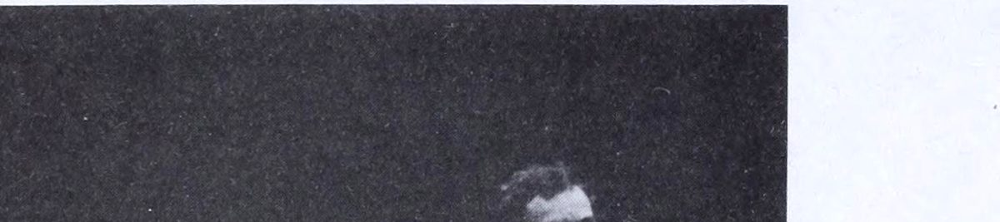
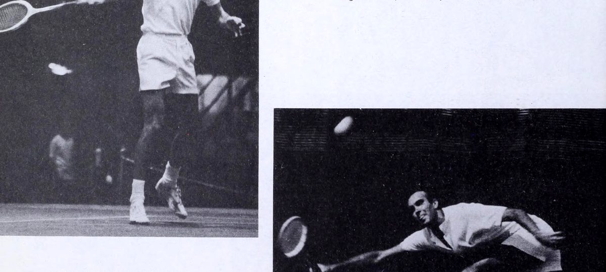
Những Cú Thuận Tay Hay Nhất Trong Giới Chuyên Nghiệp
Đáng ngạc nhiên là có rất ít tay vợt hàng đầu có những cú thuận tay xuất sắc. Thực tế là phần lớn các tay vợt hàng đầu thế giới, bao gồm cả những người như Rod Laver, Ken Rosewall và Jimmy Connors, đều thích đánh những cú đánh trái tay hơn.
Ai trong quần vợt có cú thuận tay tốt nhất? Theo suy nghĩ của tôi, có ba tay vợt mà tiền đạo của họTrong số những tay vợt có cú thuận tay hàng đầu hiện nay là John Newcombe (trên), Tom Okker (trái), Andrés Gimeno (dưới) và Bjorn Borg (phải), mỗi người đánh bóng theo một cách khác nhau. Những tay vợt thuận tay hàng đầu ở giải dành cho nữ là Margaret Court (ngoài cùng bên phải, phía trên) và Kerry Melville Reid (ngoài cùng bên phải, phía dưới).
bàn tay xứng đáng được đề cập đặc biệt: John Newcombe, Andrés Gimeno và Tom Okker.
Điều thú vị ở ba người này là mỗi người đánh thuận tay theo một cách khác nhau.
Newcombe có một cú đánh cơ bản, gần như cổ điển. Anh ta thực hiện động tác vung vợt thẳng về phía sau, sau đó hơi do dự và tiếp tục đánh bóng bằng một cú lăn nhẹ. Newcombe gần như luôn thực hiện cú thuận tay và giữ bóng sâu, điều này ngăn cản đối thủ tấn công. Anh ấy chuyền bóng tốt, có thể tạo ra những góc đánh khác thường khi đánh chéo sân và đặc biệt nguy hiểm khi anh ấy thực hiện quả giao bóng thứ hai.
Cú thuận tay của Gimeno từ lâu đã được coi là một trong những cú thuận tay hay nhất trong môn quần vợt. Về mặt kỹ thuật, tôi không cho rằng nó có âm thanh như của Newcombe, bởi vì anh ấy có thể hơi cẩu thả khi thực hiện động tác backswing. Nhưng Gimeno luôn đón bóng ngay trước người và dường như anh ấy luôn ở vị trí thuận lợi để thực hiện cú đánh.
Ngoài ra, anh ấy còn có một thời gian theo dõi dài tuyệt vời. Tôi không thể nghĩ ra tay vợt nào có cây vợt có vẻ bám theo đường bay của quả bóng lâu như của Gimeno. Kết quả là anh ta đánh thuận tay với cảm giác, khả năng kiểm soát, sự đa dạng và đánh lừa tuyệt vời - tất cả đều khá dễ dàng.
Đối với phụ nữ, cú thuận tay của Margaret Court thể hiện những yếu tố tương tự.
Okker (xem phân tích ở trang 36-37) có một trong những cú thuận tay không chính thống nhất trong quần vợt, nhưng chắc chắn là một trong những cú đánh hiệu quả nhất. Anh ấy sử dụng động tác cổ tay rất mạnh, giúp bóng có độ xoáy lên cao liên tục. Đây là một cú đánh rất khó thực hiện, bởi vì ngay cả khi bóng tiếp đất ngắn, nó sẽ bay lên cao và dài, khiến cho cú đánh trả tiếp cận rất khó thực hiện.
Hai tay vợt trẻ có những cú thuận tay xoáy lên mạnh mẽ được so sánh với Okker là Bjorn Borg và Guillermo Vilas.
Giống như Okker, Borg và Vilas chủ yếu dựa vào động tác cuộn cổ tay rõ rệt để tạo ra xoáy lên, nhưng phong cách đánh của họ khác nhau ở các khía cạnh khác. Sự chuẩn bị, động tác bằng chân và chuyển trọng lượng của Vilas ít nhiều đều theo truyền thống cổ điển của tôi. Bởi vì anh ấy nhanh nhẹn, anh ấy có thể vào vị trí để thực hiện những cú đánh mà những người chơi khác có thể phải thực hiện trên đường chạy, và anh ấy có thể đánh sang hai bên sân với khả năng kiểm soát phi thường.
Borg cũng có khả năng kiểm soát thuận tay tuyệt vời, mặc dù phong cách của anh ấy gần với Okker hơn ở điểm không chính thống. Borg sử dụng cách cầm vợt kiểu phương Tây (xem trang 20) và đánh bóng cao hơn lưới đáng kể so với hầu hết các tay vợt.
Một quả bóng đánh cao hơn lưới không thể bị đánh mạnh như một quả bóng lướt qua lưới, nhưng đối thủ thường khó xử lý hơn.
Cú thuận tay của Borg luôn tiếp đất sâu và có độ nảy cao, điều đó có nghĩa là đối thủ của anh ta phải tự mình cung cấp phần lớn tốc độ để trả bóng. Trên sân đất nện, nơi Borg chơi xuất sắc và nơi các pha giao bóng kéo dài hơn nhiều so với các bề mặt khác, việc trả lại cú thuận tay của Borg hết lần này đến lần khác có thể rất mệt mỏi. Borg không đánh được nhiều người chiến thắng hoàn toàn bằng cú thuận tay của mình, nhưng khả năng kiểm soát cú đánh, tốc độ, sức bền cũng như độ chính xác của các cú chuyền bóng của anh ấy - điều khiến đối thủ không thể lao vào lưới - có tác dụng tích lũy khiến đối thủ của anh ấy bị hạ gục. Nó là một trong những vũ khí hiệu quả nhất trong quần vợt.
Người chơi bình thường có thể học được gì từ những chuyên gia này? Theo tôi, một người chơi bình thường sẽ cố gắng hết sức để noi gương Newcombe. Chìa khóa để có một cú thuận tay đáng tin cậy là một cú vung vợt về sau thẳng, gọn gàng, nhanh chóng, giúp bạn có thời gian để di chuyển đến bóng và đặt mình nằm ngang vào lưới. Nó cũng cho bạn thời gian để quan sát bóng đến điểm va chạm và sau đó theo dõi đường bay của bóng bằng vợt càng xa càng tốt.
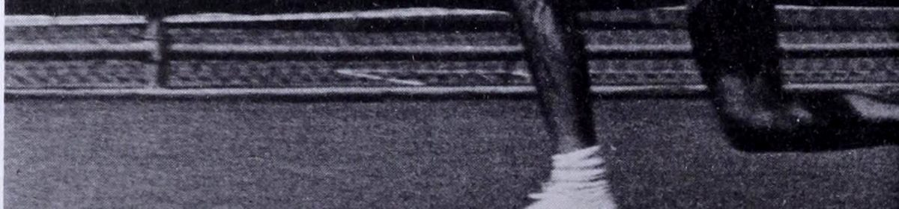
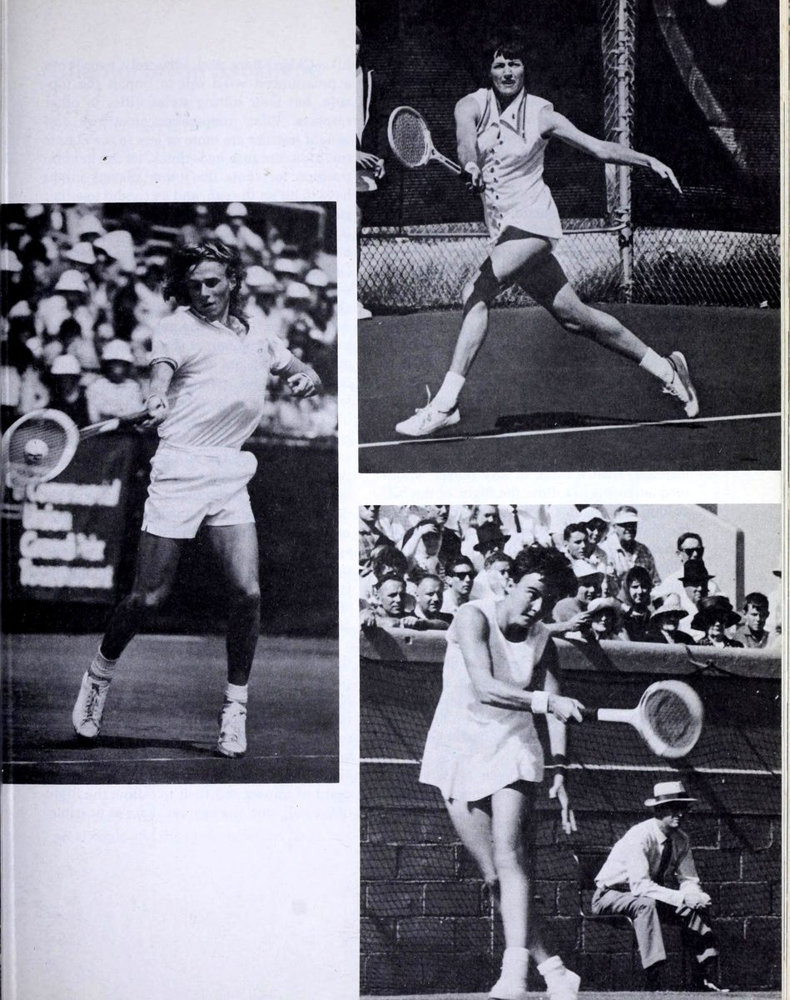
Chương 3: Cú Trái Tay
Hãy Tấn Công Bằng Cú Trái Tay
Giống như hầu hết các chàng trai người Mỹ, tôi đã chơi rất nhiều môn bóng chày khi còn trẻ. Tôi chưa bao giờ đạt được thành công lớn trong môn thể thao này, nhưng bóng chày có liên quan rất nhiều đến thành công của tôi với tư cách là một vận động viên quần vợt - đặc biệt là với cú trái tay của tôi.
Lý do chính khiến bóng chày đóng góp rất nhiều vào thành công của tôi trong môn quần vợt là vì khi tôi ném bóng thuận tay phải, tôi lại đánh bóng thuận tay trái. Nói cách khác, cánh tay phải, hay cánh tay dẫn đầu của tôi được mô tả trong cú đánh bóng về cơ bản là một chuyển động trái tay. Tất cả những giờ ở nhà đã mang lại kết quả xứng đáng khi bắt đầu chơi quần vợt một cách nghiêm túc. Đánh trái tay gần như là bản chất thứ hai đối với tôi.
Kinh nghiệm chơi bóng chày của tôi đã giúp ích theo một cách khác. Nó mang lại cho tôi hai cú đánh trái tay: một cú tấn công và một cú đánh phòng thủ. Vì tôi có một cú vung quần vợt tự do và dễ dàng, nên việc tôi đánh lên bóng để tạo xoáy lên cho mục đích tấn công hay đánh xuống bóng để tạo xoáy xuống cho mục đích phòng thủ không thành vấn đề.
Theo những gì tôi có thể nói, hầu hết các tay vợt câu lạc bộ ngày nay dường như chỉ có một cú đánh trái tay trong vốn kỹ năng của họ—cú đánh phòng thủ. Đây là một điều đáng tiếc, bởi vì một cú trái tay tấn công không khó để thành thạo. Một trong những lý do khiến rất ít tay vợt câu lạc bộ có thể đánh trái tay một cách tấn công là vì họ bị đe dọa bởi trái tay và họ đánh trái tay một cách phòng thủ, với xoáy xuống. Quá tệ. Một trong những niềm vui lớn nhất của quần vợt là thực hiện một cú đánh xoáy tròn nhỏ qua sân - kiểu đánh mang lại cho bạn một góc tuyệt vời và chìm xuống dưới mức lưới, buộc đối thủ của bạn phải vô lê về phía bạn, giả sử rằng anh ta thậm chí có thể chạm tới bóng.
Nguyên tắc cơ bản về trái tay Bây giờ chúng ta hãy xem xét các nguyên tắc cơ bản về trái tay. Triết lý giảng dạy của tôi luôn là giữ mọi thứ đơn giản. Nếu bạn muốn đánh trái tay kiểu bóng chày dễ dàng, lời khuyên của tôi là đứng sang một bên, hai chân cách nhau thoải mái và tập trung vào việc vuốt bóng. Đừng đập bóng, giống như một số vận động viên ném bóng yếu đang cố gắng đánh bóng nhanh. Hãy thư giãn và sử dụng một cú đánh tự do và dễ dàng. Hãy làm theo những gợi ý này và tôi đảm bảo với bạn, phần còn lại của cơ thể bạn—chân, vai, cánh tay và lưng—sẽ tự chăm sóc bản thân. Một cú trái tay tốt sẽ dễ thực hiện hơn nếu bạn không cản trở nó.
Về độ bám, tôi khuyên bạn nên xoay tay xa hơn khoảng 1/8 lượt về phía sau vợt từ phía thuận tay kiểu Đông. Cách cầm bóng của tôi chính xác Chuyển động cho một cú đánh xoáy lên bằng tay phải giống với đường đi của cánh tay phải hoặc cánh tay dẫn đầu trong một cú đánh bóng bằng tay trái.
Để có cách cầm vợt thích hợp, phần phẳng của bàn tay phải được đặt trên phần phẳng của vợt. Sau đó, bàn tay nên được xoay khoảng 1/8 lượt ra phía sau vợt so với vị trí của nó giống như cú thuận tay Continental được sử dụng bởi những người chơi như Fred Perry, Henri Cochet và Jaroslav Drobny, ngoại trừ việc tôi đặt ngón tay cái của mình theo đường chéo lên phía sau mặt sau của cán vợt (xem hình minh họa).
Việc chuẩn bị sớm là rất quan trọng. Tôi thích thấy một tay vợt bắt đầu cú đánh trái tay của mình bằng cách xoay sang một bên, giữ chặt khuỷu tay của mình vào cơ thể như một vận động viên bóng chày giỏi sẽ làm. Khi chuẩn bị cho cú swing, cơ thể phải di chuyển bằng ngón chân. Khuỷu tay phải xoay dễ dàng và tự nhiên. Điều này mang lại cho bạn cảm giác được giải phóng sức mạnh. Việc theo dõi Tom Sea- sẽ không lãng phí. cử động; nó sẽ có cảm giác gần như thể bạn sắp đưa vợt về phía đối thủ.
Còn một điều nữa. Tôi khuyên bạn nên mang cánh tay tự do trở lại cùng với vợt. Kể từ khi tôi bắt đầu là một người đánh bằng hai tay. Thực ra tôi đã nắm cán vợt bằng tay trái. Nhưng dùng hai tay hay một tay thì chuyển động đều như nhau. Khi vợt tiến về phía trước để đánh bóng, tay còn lại phải được thả ra và một cú đánh trái tay được thực hiện tốt bắt đầu với việc người chơi đứng nghiêng về phía quả bóng đang đến gần với hai chân dang rộng một cách thoải mái. Sau đó, nếu anh ta vuốt bóng một cách trơn tru, phần còn lại của cơ thể—chân, vai, cánh tay và lưng—sẽ tự động tự chăm sóc bản thân. Để thực hiện cú đánh tấn công (phải), hãy đón bóng bằng vợt đang bay lên; kết quả sẽ là một cú xoáy lên tự nhiên, có sẵn. Việc thực hiện cú đánh tiếp theo phải là một chuyển động có phạm vi rộng, sâu rộng - gần như thể vợt đang được lướt qua phần sân đối phương.
đương nhiên sẽ tụt lại phía sau bạn. Một người thực hiện cú đánh trái tay chính xác sẽ trông gần như thể anh ta đang cố bay khi thực hiện cú đánh theo sau.
Đánh các cú đánh trái tay tấn công bị tấn công bằng xoáy lên.
Để đánh bằng topspin đòi hỏi một cú đánh lùi thấp và một cú dứt điểm cao. Bóng được đánh bằng mặt vợt phẳng, nhưng việc vung lên sẽ tạo đủ độ xoáy để bóng có thể đi qua lưới ở một biên độ an toàn và vẫn có độ xoáy để giữ nó trong đường cơ sở.
Một cách để đánh giá cao cú trái tay xoáy lên là so sánh nó với kiểu xoay người mà một cầu thủ bóng chày thực hiện khi anh ta cố gắng đấm một cú tung bóng dọc theo mặt đất. Anh ta đánh bóng không mạnh, và bạn cũng không tạo ra xoáy lên. Vì bạn tiếp bóng với mặt vợt vuông vức nên bạn không phải lo lắng về việc xoay mặt vợt để tạo độ xoáy. Trên thực tế, việc đánh một cú trái tay xoáy lên dễ dàng hơn một cú trái tay xoáy xuống.
Cú trái tay phòng thủ Đánh trái tay phòng thủ—tức là, một cú đánh có xoáy xuống—về cơ bản bao gồm các nguyên tắc cơ bản giống như cú trái tay tấn công, với một điểm khác biệt quan trọng. Vợt được đưa lên cao và bạn thực sự vung vợt xuống theo chuyển động “cắt”. Rõ ràng, nếu bạn vung xuống, bạn phải thực hiện một số điều chỉnh để giữ cho bóng không đi vào lưới. Sự điều chỉnh đó là một chút độ nghiêng lên của vợt. Sau bóng là Cú trái tay phòng thủ, một kiểu phổ biến nhất với các tay vợt chuyên nghiệp cũng như các tay vợt câu lạc bộ, được đánh bằng vợt cắt dưới bóng khi va chạm và tạo cho nó một xoáy xuống. Hầu hết những điều cơ bản trong cú đánh cũng giống như với cú đánh tấn công ngoại trừ việc vợt di chuyển xuống thay vì hướng lên. Ở lượt đánh tiếp theo, vợt sà xuống trước khi nâng lên một chút.
được đánh, vợt hơi cong lên từ đường chéo hướng xuống dưới, kết thúc ở mức ngang eo hoặc cao hơn.
Học cách đánh Có lẽ bạn nghĩ rằng tôi đang đơn giản hóa quá mức cú đánh trái tay, đặc biệt là cú đánh tấn công. Tuy nhiên, hãy tin tôi đi. Tôi thì không. Phần lớn thành công mà tôi đạt được trong sự nghiệp của mình là nhờ cú giật bóng trái tay của tôi. Nhưng quan trọng hơn, khi nói đến người chơi trung bình, tôi đã xử lý những người chơi có cú trái tay rất bình thường và bằng cách nhấn mạnh xoáy lên đã mang đến một chiều hướng hoàn toàn mới cho môn quần vợt của họ. Chắc chắn, cú đánh trái tay xoáy xuống cắt lát sẽ an toàn hơn. Nhưng hãy cho mình một cơ hội để học theo cách khác. Nó có thể cải thiện đáng kể môn quần vợt của bạn.
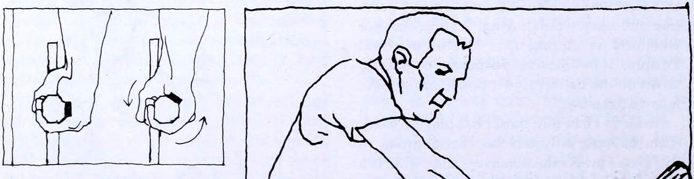
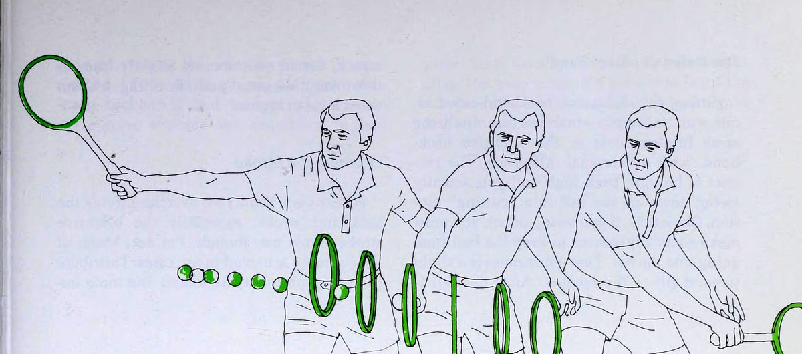
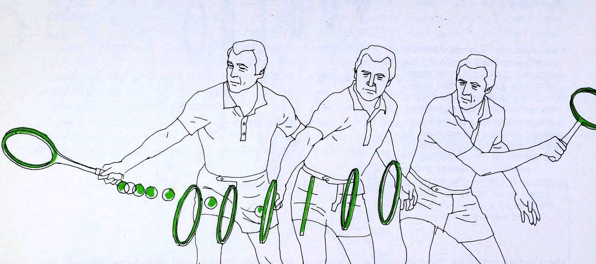
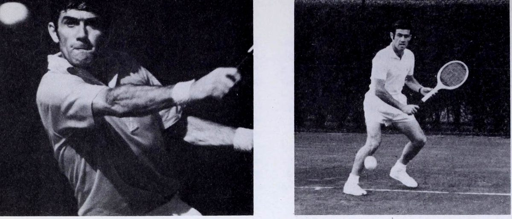
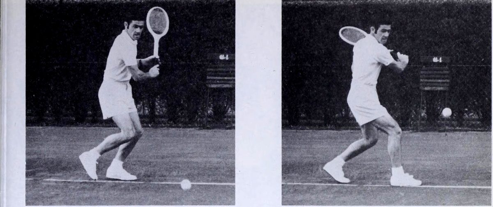
Một Bài Học Về Cú Trái Tay
Nếu, giống như hầu hết các tay vợt trung bình, bạn muốn cải thiện cú trái tay của mình, tôi không thể làm gì tốt hơn ngoài việc nhấn mạnh ba điểm: động tác bằng chân, đánh bóng sớm và luyện tập.
Động tác bằng chân là chìa khóa thành công trong mọi môn thể thao. Trong cú đánh trái tay quần vợt, vấn đề là bạn phải đặt chân đúng cách khi đánh bóng.
Đánh bóng "'sớm'' có nghĩa là đánh bóng đang bay lên, nếu bạn có thể. Một quả bóng bay lên có tốc độ nhanh hơn một quả bóng chững lại hoặc chìm xuống. Khi đánh, nó sẽ đi qua lưới nhanh hơn nhiều.
Cuối cùng, luyện tập. Bạn phải thực hiện cú trái tay để nó trở nên gần như bản năng. Không có thời gian để suy nghĩ về nó trong sức nóng của một trận đấu.
Bên phải là chuỗi ảnh tôi chụp cách đây vài năm. Trong nhận xét của tôi, kèm theo các bức ảnh, tôi đã cố gắng nhấn mạnh những điểm chính có thể giúp bạn cải thiện cú đánh trái tay của mình.
1. Hãy di chuyển.
Khi bạn thấy bóng đi về phía bên trái tay của mình, hãy dịch chuyển bàn chân của bạn sao cho chúng hướng về phía đường biên. Bỏ qua các bước ngắn nếu bạn phải di chuyển để lấy bóng để duy trì sự cân bằng và kiểm soát.
Giữ cổ vợt của bạn trong tay không cầm vợt và chuyển sang cách cầm vợt trái tay. Và hãy nhớ tập trung vào quả bóng cho đến khi bạn đánh nó.
io, 4. Ra phía trước.
2. Hãy chuẩn bị.
Bạn phải cho phép mình có khoảng trống để đánh bóng khi cánh tay dang rộng. Vì vậy, khi bạn di chuyển, hãy cố gắng phán đoán xem cần dừng lại ở đâu để có khoảng trống để thực hiện một cú xoay người thích hợp. Bạn sẽ nhận thấy rằng tôi cắt bóng trong cú đánh này—tức là đánh bóng với vợt hơi nghiêng về phía sau. Tôi làm điều đó hầu hết thời gian vì tôi cảm thấy nó mang lại cho tôi sự nhất quán và kiểm soát tốt hơn.
5. Hãy nhắm mục tiêu.
3. Phòng khuỷu tay.
Bây giờ hãy đặt chân vững chắc, nhưng hãy sẵn sàng rút chân trước ra một chút nếu bạn thấy mình ở quá gần bóng. Xoay vai sao cho lưng gần như hướng vào lưới. Giữ cổ tay chắc chắn, rút vợt về phía sau hoàn toàn sớm nhất có thể.
Quấn nó khá gần cơ thể bạn. Và giữ khuỷu tay của bạn hướng lên trên và hướng ra ngoài cơ thể, nhớ rằng nó phải được giữ thẳng khi thực hiện cú xoay về phía trước.
6. Hướng mặt về phía trước.
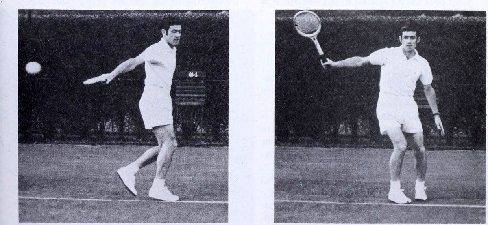
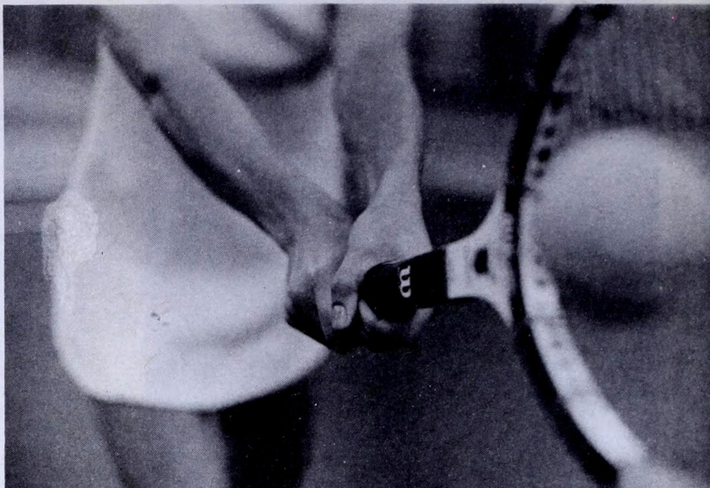
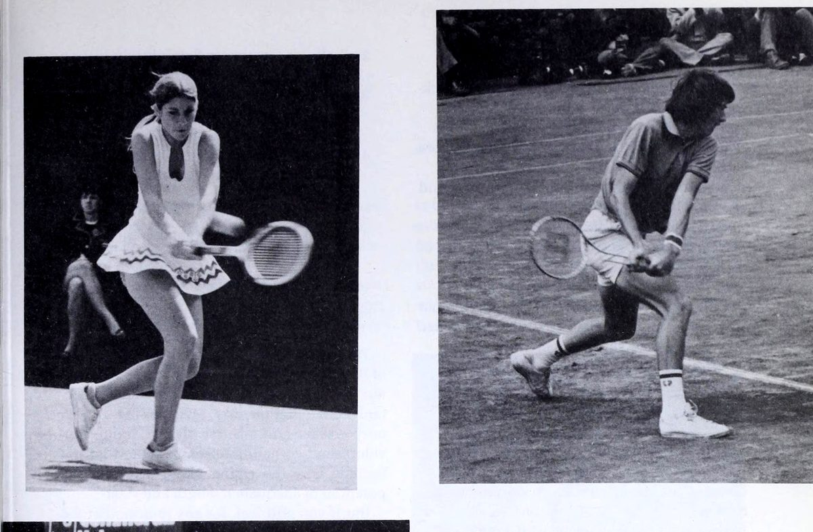
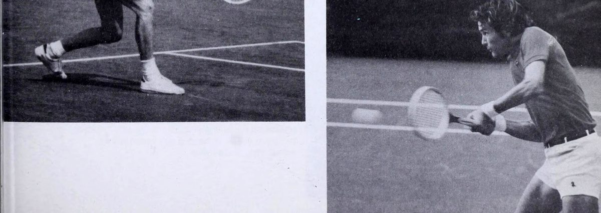
Ưu Và Nhược Điểm Của Cú Trái Tay Hai Tay
Nó có tác dụng với Chris Evert. Nó hiệu quả với Jimmy Connors, Bjorn Borg và Billy Martin. Và nó có tác dụng với Cliff Drysdale. Nhưng còn cú trái tay bằng hai tay đối với người chơi bình thường thì sao?
Hầu hết các chuyên gia đều khuyên không nên làm vậy, nhưng có lẽ đã đến lúc phải đánh giá lại.
So sánh các cú đánh Để đánh giá cú đánh trái tay bằng hai tay, sẽ rất hữu ích khi xem xét nó khác với cú đánh trái tay bằng một tay như thế nào.
Trong kiểu đánh trái tay bằng hai tay, vợt thường được cầm bằng cả hai tay theo kiểu cầm thuận tay kiểu phương Đông. Nếu bạn thuận tay phải, tay phải của bạn sẽ ở gần đáy cán vợt hơn và tay trái của bạn sẽ ở ngay phía trên tay cầm.
(Đó là cách ngược lại đối với người thuận tay trái.) Cú đánh sau gần cơ thể hơn và thấp hơn một chút so với cú đánh trái tay bằng một tay thông thường. Cú xoay về phía trước hướng lên trên, giống như thể bạn đang đánh để tạo xoáy lên bằng một tay, và cả hai khuỷu tay đều uốn cong ngay sau khi tiếp xúc, với động tác tiếp tục hướng lên trên và qua vai phải. Cú xoay không dài bằng cú đánh trái tay bằng một tay, nhưng động tác bằng chân và vị trí của bàn chân khá giống nhau.
Ưu điểm của trái tay bằng hai tay Đừng nhầm lẫn về điều đó, có những lợi thế nhất định đối với trái tay bằng hai tay.
Trong số đó:
1. Đó là một cú đánh dễ dạy hơn cho trẻ nhỏ và những người chơi không đủ khỏe để xử lý cú đánh trái tay bằng một tay.
2. Việc tạo ra xoáy lên bằng cú đánh sẽ dễ dàng hơn.
3. Đánh bóng bằng lực sẽ dễ dàng hơn một chút.
4. Nó dễ bị tạo rãnh và có xu hướng giữ nguyên rãnh.
5. Nó đặc biệt tốt cho những người chơi có ưu thế ngang nhau bằng cả hai tay.
Người đứng đầu trong số những người tập chơi trái tay bằng hai tay ngày nay là Chris Evert (phía trên bên trái), người mà thành công với cú đánh bằng hai tay là nhờ vào khả năng dự đoán nhạy bén và động tác bằng chân có kỷ luật tốt của cô ấy; Jimmy Connors (phía trên bên phải), người đánh hầu hết mọi thứ bằng phẳng và cứng; Bjorn Borg (trái), người tạo ra xoáy lên đáng kể với cú đánh; và Cliff Drysdale (bên dưới), người có cú đánh bằng hai tay luôn có lực và sự ổn định.
'ee weet erg, Điểm yếu của trái tay bằng hai tay Điểm yếu của trái tay bằng hai tay như sau:
1. Nó làm giảm tầm với.
2. Nó khiến việc đánh bóng cao và bóng thấp trở nên khó khăn hơn.
3. Nó phải được đánh bằng động tác chân chính xác và thế đứng vững chắc.
4. Đó là một nét khó cắt.
5. Đôi khi rất khó để thực hiện một cú trả giao bóng làm chuột rút bên trái tay.
6. Nó tạo ra xu hướng tát vào các cú đánh.
7. Nó có thể mang lại cho một đứa trẻ 10 tuổi một ''cái nạng'' khó có thể vứt bỏ ở tuổi 16 khi trẻ đã lớn và khỏe hơn.
Xem xét phương án thay thế Tất nhiên, giải pháp thay thế cho trái tay hai tay là trái tay một tay truyền thống. Nó cũng có điểm yếu tương đối.
Nó đòi hỏi phải thay đổi cách cầm nếu bạn sử dụng cách cầm kiểu phương Đông. Đó là một cú đánh khó khăn đối với trẻ nhỏ để học. Việc đánh rãnh sẽ khó khăn hơn và khi đánh muộn, nó không tạo được lực như cú đánh bằng hai tay.
Mặt khác, cú trái tay bằng một tay có những ưu điểm sau:
1. Nó cho phép phạm vi tiếp cận lớn hơn.
2. Nó cho phép linh hoạt hơn trong việc thực hiện nhiều cú đánh khác nhau.
3. Nó không yêu cầu độ chính xác của động tác bằng chân cần thiết đối với người sử dụng hai tay và có thể đánh mất thăng bằng hiệu quả hơn.
4. Thời gian theo dõi dài hơn giúp bạn dễ dàng đánh những cú đánh sâu hơn mà không cần vung vợt quá nhanh.
5. Nét vẽ mượt mà hơn.
6. Nó làm cho việc đánh bóng thấp và cao dễ dàng hơn một chút.
Phán quyết Khi cân nhắc tính hiệu quả (hoặc thiếu nó) của cú đánh trái tay bằng hai tay, đối với tôi, dường như sức mạnh thể chất là yếu tố quan trọng nhất cần cân nhắc. Cảm nhận của riêng tôi là chỉ những tay vợt yếu hơn và nhỏ con hơn mới nên phát triển cú đánh trái tay bằng hai tay, và tôi không đưa vào đây những tay vợt trẻ có tiềm năng về sức mạnh và kích thước phù hợp.
Nhưng nếu bạn vẫn cảm thấy, vì bất kỳ lý do gì, trái tay bằng hai tay tốt hơn cho bạn, thì bằng mọi cách, hãy theo đuổi cú đánh với sự nhiệt tình và tự tin. Đồng thời, nhận thức được những điểm yếu cố hữu của cú đánh và phát triển các kỹ năng để khắc phục chúng. Người chơi thuận hai tay cần phải chăm chỉ tập luyện bằng chân, tốc độ và khả năng dự đoán nếu muốn thành công.
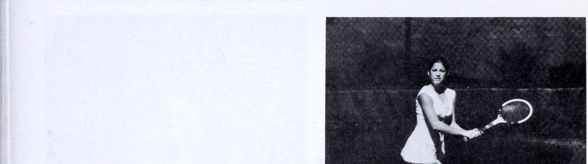
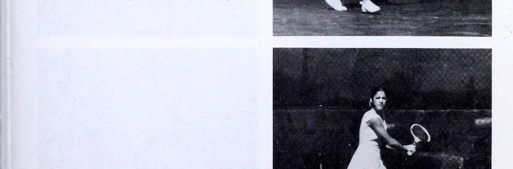
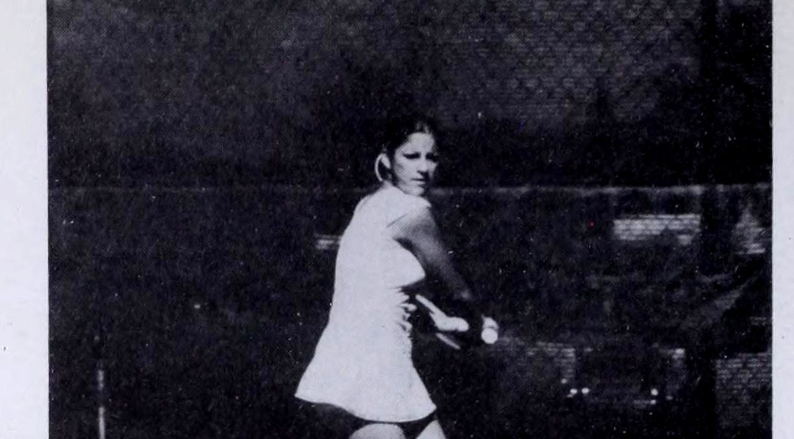
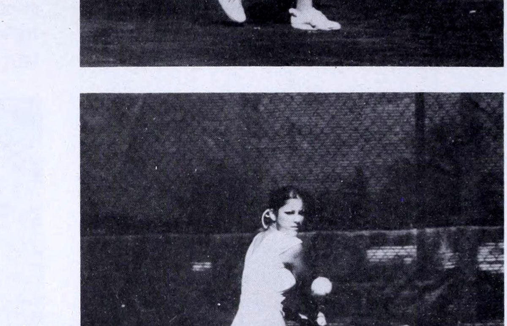
Cú Trái Tay Hai Tay Của Chris Evert
Theo tôi, cú trái tay tốt nhất trong số các tay vợt nữ hiện nay thuộc về Chris Evert. Tất nhiên, đó là một cú đánh bằng hai tay và cô ấy sử dụng nó với hiệu quả tàn khốc.
Bởi vì có rất ít người chơi lớn thành công với nó nên tôi chưa bao giờ là người ủng hộ mạnh mẽ việc đánh bằng hai tay. sức mạnh
Ngay từ khi bắt đầu cú đánh, Chris đã ở thế hoàn hảo
vị trí, với vợt ở phía sau. Cô ấy bước ra bằng chân phải—điều bắt buộc để có một cú trái tay tốt—và trọng lượng của cô ấy hoàn toàn cân bằng trên mu bàn chân.
Lưu ý rằng mắt cô ấy đang cẩn thận theo dõi quả bóng.
có ở đó, nhưng người chơi phải di chuyển nhanh hơn nhiều để tiếp cận bóng, vì sử dụng hai tay đòi hỏi cú đánh phải đánh gần cơ thể. Tuy nhiên, bạn không thể tranh cãi với thành công của Chris. Trong chuỗi ảnh stop-action, chúng ta hãy xem xét hình thức hoàn hảo của cú trái tay bằng hai tay của Evert.
1. Bước ra.
Chris tập trung cao độ khi cô ấy nhìn qua vai phải của mình để nhìn quả bóng đang lao tới. Trọng lượng của cô dồn vào chân trái. Cây vợt vẫn trở lại vị trí cao.
Chân phải của cô ấy bắt đầu hướng về đường biên.
Bây giờ cây vợt của Chris đang bắt đầu hạ xuống vị trí thấp hơn để giúp cô ấy có thể truyền xoáy lên cho bóng.
Chân phải của cô ấy chuẩn bị bước sang một bên và tiến về phía trước.
Bạn có thể thấy rằng cô ấy gần như đã quay lưng vào lưới —điều này là cần thiết để đảm bảo đủ cú vung vợt ra sau.
3. Canh giữ tiền bảo lãnh.
4. Hạ vợt xuống.
6. Ở tầm tay.
Khi Chris gặp quả bóng, đôi mắt của cô ấy được tập trung cẩn thận.
Cô ấy đánh bóng khá xa cơ thể và sử dụng toàn bộ chiều dài của cả hai cánh tay để lấy sức. Bây giờ trọng lượng của cô dồn vào chân phải.
7. Vượt bóng.
Giống như một tay golf hàng đầu, đầu của Chris cúi xuống sau khi đánh bóng. Cơ thể của cô ấy có sự cân đối hoàn hảo.
Cây vợt hơi lướt qua quả bóng, tạo ra xoáy lên. Nhưng bóng được đánh đủ cao để đi vào lưới.
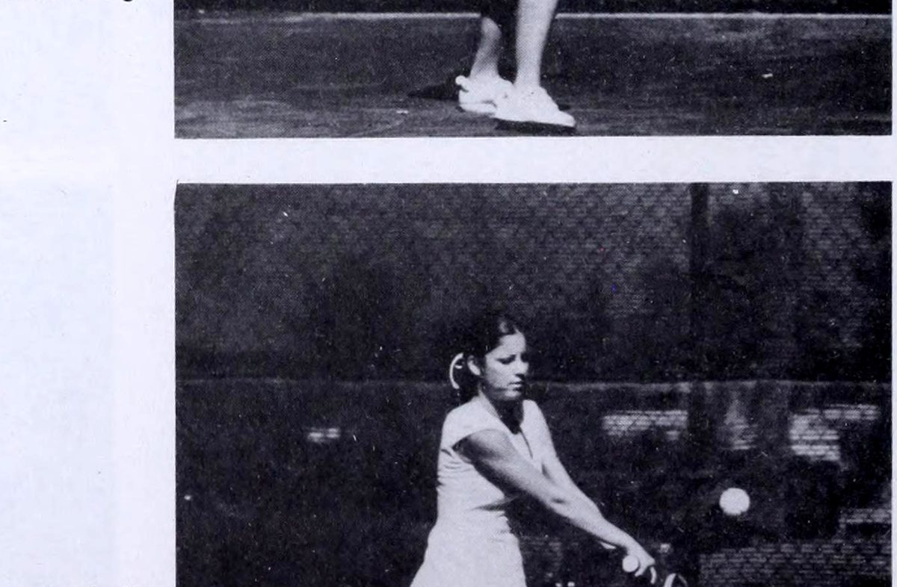
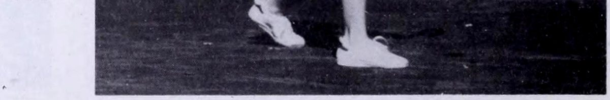
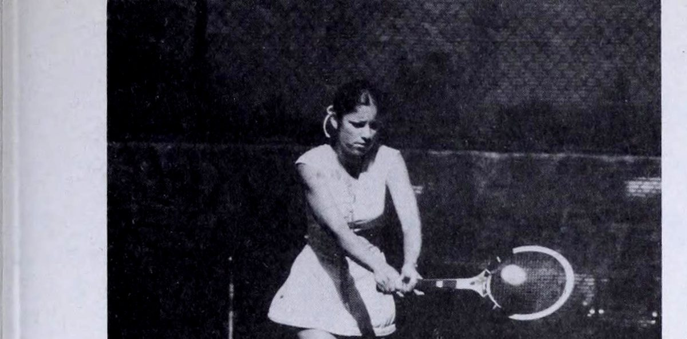
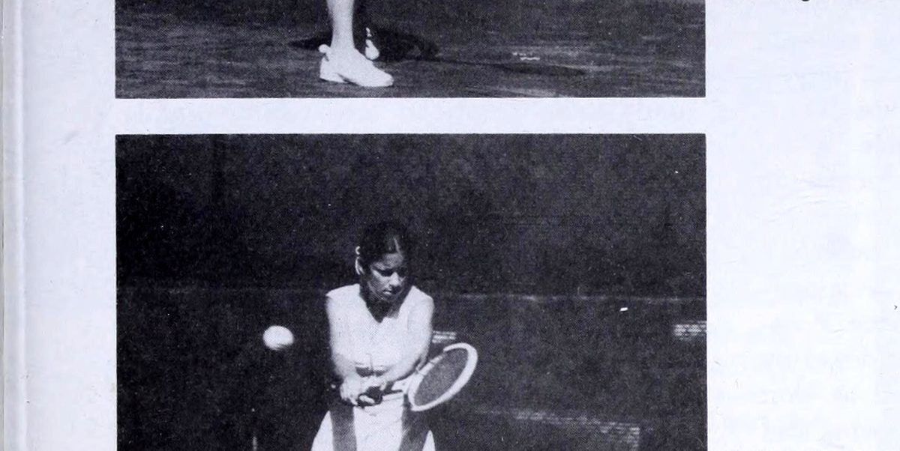
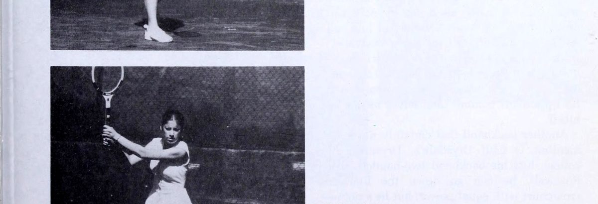
Những Cú Trái Tay Hay Nhất Trong Giới Chuyên Nghiệp
Ngày nay có rất nhiều cú trái tay tốt trong quần vợt, thật khó để chọn ra một số ít nổi bật hơn phần còn lại; nhưng chắc chắn ba trong số những người giỏi nhất thuộc về Rod Laver, Ken Rosewall và Arthur Ashe. Điều thú vị là, như chúng ta đã thấy trước đó với những người chơi thuận tay hàng đầu (trang 38), phong cách của ba người này khác nhau rõ rệt. Laver không có tư thế cổ điển—anh ấy không thực hiện nhiều động tác vung vợt ra sau—nhưng anh ấy tính toán cú đánh rất tốt và búng cổ tay mạnh mẽ của mình để tạo cho bóng nhiều xoáy lên. Anh ta đặc biệt nguy hiểm với cú đánh khi trở lại giao bóng. Tất nhiên, cú trái tay của Rosewall được hầu hết mọi người đánh giá là tốt gần như của Don Budge. Anh ta có cú đánh ngược khá cao và đánh bóng với một chút xoáy xuống. Chìa khóa thành công của Rosewall là động tác bằng chân. Anh ấy không bao giờ mất thăng bằng. Điều khiến Rosewall trở nên khó khăn là anh ấy có thể làm được rất nhiều điều với trái tay của mình. Anh ta có thể đi dọc biên với nó hoặc chéo sân, và anh ta có khả năng kết hợp giữa một cú đi bóng mềm mại và nhiều cú lốp bóng khác nhau, tất cả đều có khả năng đánh lừa tuyệt vời. Ashe có một cú trái tay tự do, uyển chuyển và anh ấy đánh với sức mạnh khủng khiếp. Bởi vì anh ta có thể trì hoãn cú đánh nhiều hơn hầu hết các tay vợt, anh ta có thể đợi cho đến khi đối thủ của mình thực hiện cú đánh trước khi thực hiện cú đánh.
Một cú trái tay khác chắc chắn đáng được nhắc đến là của Cliff Drysdale. Tất nhiên, Drysdale đánh trái tay bằng hai tay; thích tấn công chéo sân với sức mạnh ngang nhau, nhưng anh ấy không linh hoạt bằng nó.
Khác nhau như những cú trái tay đẹp này, chúng có những điểm tương đồng nhất định mà người chơi bình thường có thể học: vung ngược sớm, tập trung vào bóng và theo dõi đường bay dự định của bóng.
Đây là những nguyên tắc cơ bản của tất cả các cú đánh trái tay tốt. Giữ cú đánh dễ dàng. Khi bạn thu vợt lại, vai của bạn phải hướng về phía sân và bàn chân phải của bạn, bắt chéo qua, phải tạo nền tảng vững chắc cho cú đánh. Thực hành các nguyên tắc cơ bản được mô tả ở trên sẽ giúp bạn phát triển một môn quần vợt trái tay được cải thiện.
hoặc Hạng chuyên nghiệp có rất nhiều tay vợt có cú trái tay xuất sắc, đứng đầu trong số đó là Evonne Goolagong Cawley (trái), Ken Rosewall (trên), Arthur Ashe (dưới) và Rod Laver (phải).
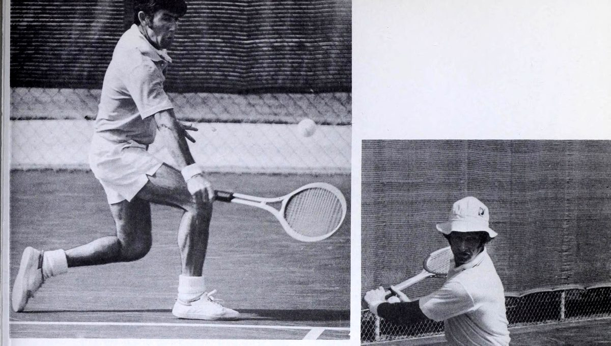
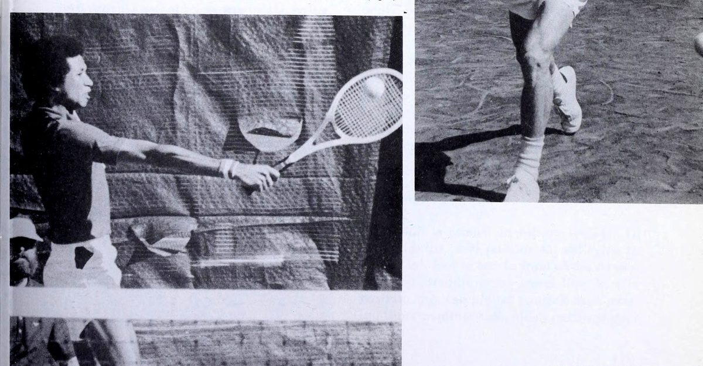
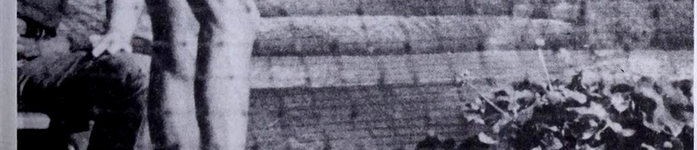
Chương 4: Cú Vô Lê
Cú Vô Lê Thuận Tay
Cú vô lê rõ ràng là một phần quan trọng của quần vợt hiện đại — một cú đánh mà mọi người chơi có mong muốn phát triển một môn quần vợt toàn diện, có âm thanh đều phải cố gắng thành thạo. Nhưng tại sao phải nghiệt ngã về nó? Vô lê rất vui.
Những điều cơ bản Khi đánh cú vô lê thuận tay, hai yếu tố là hết sức quan trọng. Đầu tiên là đánh bóng trước mặt bạn. Thứ hai là để vợt làm hầu hết công việc. Có quá nhiều người chơi cố gắng tạo cơ bắp cho quả bóng bằng cú vô lê bằng cách vung toàn bộ cánh tay. Nó không cần thiết. Bằng cách giữ vợt kéo dài tùy theo hoàn cảnh yêu cầu và bằng cách để cổ tay cung cấp một phần lực cho cú vung vợt, bạn có thể tạo ra tất cả tốc độ, sức mạnh và khả năng kiểm soát mà bạn cần.
Khi nào nên vô lê Khi nào và tần suất bạn thực hiện cú vô lê trong một trận đấu sẽ phụ thuộc rất nhiều vào kỹ năng của bạn là người bắt vô lê như thế nào, bạn thích chơi môn quần vợt quyết liệt như thế nào và kiểu môn quần vợt mà đối thủ của bạn chơi. Ở nội dung đánh đôi, bạn không có quá nhiều sự lựa chọn, nhưng ở nội dung đánh đơn, sự lựa chọn hoàn toàn tùy thuộc vào bạn.
Bản thân cú vô lê quyết định khá nhiều trường hợp mà nó sẽ được đánh. Để có hiệu quả, cú vô lê phải được đánh ở phía trước vạch giao bóng (về phía lưới). Nhưng để thực hiện cú vô lê, bạn phải có mặt ở đó khi bóng ở đó. Vì vậy, để bắt vô lê hiệu quả, trước tiên bạn phải đủ nhanh để chiếm được vị trí chắc chắn trên lưới và thứ hai, có thể tung ra những cú đánh tiếp cận khiến đối thủ của bạn chịu đủ áp lực để anh ta không thể lốp bóng hoặc chuyền chết bạn. Một số chuyên gia giảng dạy khuyên không nên vào lưới trên các bề mặt chậm, nhưng vì trận đấu của tôi là một trận tấn công nên tôi tìm kiếm cơ hội để tung cú vô lê ngay cả trên các mặt sân rất chậm. Đúng là đôi khi tôi phải đợi một lúc mới có thời gian thích hợp, nhưng cuối cùng tôi cũng vào được.
Vị trí vô lê Vị trí rất quan trọng trong việc đánh vô lê. Theo suy nghĩ của tôi, vị trí lý tưởng để thực hiện cú vô lê đơn là cách vạch giao bóng một hoặc hai bước chân và nằm giữa đường giữa. Ở vị trí này, bạn có thể bảo vệ mình khỏi những cú chuyền bóng từ hai bên, ngoài ra bạn có thể bảo vệ Dennis Ralston được minh họa ở đây và ở phần tiếp theo. Các bức ảnh minh họa các nguyên tắc cơ bản của cú vô lê thành công. Lưu ý rằng trong khung 1, anh ta đang quay mặt vào lưới, đầu gối cong, tay còn lại ôm vợt ở cổ họng. Trong ảnh 2, hãy chú ý đến động tác vung vợt về sau ngắn và vị trí của cổ tay hơi cong. Đầu vợt hơi mở. Trong ảnh 3, Ralston tấn công bóng với cổ tay vẫn cong nhưng đầu vợt hướng về phía trước. Tuy nhiên, cổ tay vẫn chắc chắn khi tiếp xúc với bóng. Phần tiếp theo được hiển thị trong ảnh 4 ngắn gọn và súc tích.
chính mình từ lốp bóng. Một trong những lỗi phổ biến nhất mà các tay vợt câu lạc bộ mắc phải là đứng quá gần lưới khi thực hiện cú vô lê. Tôi thừa nhận rằng bạn có thể có được một số góc khó khi thực hiện cú vô lê ở đó, nhưng bạn cực kỳ dễ bị tổn thương trước cú lốp bóng.
Bắt bóng Tôi khuyên bạn nên cầm vợt Continental (trang 19) cho tất cả các cú vô lê. Lý do chính cho điều này là việc chơi trên lưới liên quan đến thời gian tính bằng giây.
Đơn giản là bạn không có đủ thời gian để thay tay cầm. Cách cầm vợt Continental là thước đo nửa chừng. Nó cho phép bạn đánh những cú vô lê trái tay hoặc thuận tay mà không cần thay đổi cách cầm.
Để sẵn sàng thực hiện cú vô lê thuận tay, hãy giữ tư thế với hai chân dang rộng một cách thoải mái và chỉ vào lưới. Đầu gối phải hơi cong—gần như, không hoàn toàn, trong tư thế cúi người của võ sĩ quyền anh—và cổ vợt phải được đỡ nhẹ trong tay còn lại. Tay còn lại không chỉ giúp đỡ vợt; nó có thể đẩy đầu vợt về hướng bóng bay tới. Và đừng quên rằng đầu vợt—chứ không phải cánh tay—phải thực hiện việc di chuyển.
Động tác chân: Ít hơn là nhiều hơn Một lời khuyên phổ biến về cú vô lê thuận tay là bạn nên luôn ''' bước, vung và đánh.' Những người ủng hộ phương pháp này cho rằng chân còn lại của bạn - chân đối diện với bên vuốt ve - nên bắt chéo trước cơ thể về phía quả bóng.
Chà, tôi không nghĩ đây là lời khuyên hay.
Vấn đề là nếu bạn dành thời gian để bắt chéo chân đó, bạn sẽ tăng cơ hội gặp bóng phía sau.
Khi bạn vào vị trí thích hợp để đánh bóng, trọng lượng sẽ dồn về bàn chân ở phía vuốt bóng, với bàn chân đó vẫn hướng về phía trước. Bàn chân còn lại phải di chuyển thẳng về phía trước và đặt ở một góc khoảng 45 độ so với lưới.
Trọng lượng của bạn thay đổi, nhưng đôi chân của bạn thì không.
Cú xoay Cú vô lê ngắn và gọn: một cú tát nhanh. Khi thực hiện động tác backswing, cổ tay không được đưa về sau xa hơn vai. Lúc này, đầu vợt có thể hơi mở ra (nghiêng về phía sau một chút). Nhưng khi vợt tiến về phía trước, đầu vợt phải được đưa về vị trí thẳng đứng để cú đánh được đánh khá phẳng. Trong khi đó, cổ tay vẫn bị cong khi vợt bị bật về phía trước nhưng phải chắc chắn vào thời điểm tiếp xúc. Điểm tiếp xúc phải "ở phía trước cơ thể.
Lý tưởng nhất là tại thời điểm tiếp xúc bằng một cú vô lê thuận tay, vợt của người chơi thuận tay phải phải hướng ra ngoài ở góc khoảng 2 giờ. Cú đánh theo hướng của bạn rất ngắn—cây vợt không được vượt quá vị trí sẵn sàng. Đi xa hơn nữa bạn sẽ làm tổn hại đến khả năng của mình để đưa vợt trở lại vị trí sẵn sàng, và trong một trận đấu trên lưới, bạn không thể lãng phí thời gian.
Điều đặc biệt quan trọng là phải để mắt đến bóng khi thực hiện cú vô lê. Điều này không quá khó, vì trong cú vô lê luôn có sự thôi thúc tập trung vào quả bóng khi nó được đánh gần bạn. Một điều nữa: Bạn không cần phải giết bóng—đặc biệt là trong một cú đánh dễ. Trên lưới, nhiều điểm giành được nhờ vị trí hơn là sức mạnh. Đừng cố gắng để có những bức ảnh tuyệt vời.
Nếu bạn có thể làm được, đừng đứng đó ngưỡng mộ nó; đối thủ của bạn khó có thể chia sẻ niềm vui của bạn và luôn có khả năng anh ta sẽ đáp lại niềm vui đó.
Di chuyển từ bên này sang bên kia Cú vô lê thuận tay sẽ là một cú đánh đơn giản nếu đối thủ của bạn luôn ép buộc bạn bằng cách đánh vào nơi bạn đang đứng, nhưng quần vợt không hoạt động theo cách đó. Một cách để đối đầu với một tay vợt vô lê là vượt qua anh ta. Điều này có nghĩa là bạn sẽ thực hiện một số động tác kéo dãn. Nếu một cú chuyền bóng đến về phía thuận tay của bạn, các nguyên tắc vuốt bóng cơ bản cũng giống nhau. Điều quan trọng là phải đưa đầu vợt ra trước. Điều đó làm giảm lượng thời gian cần thiết để có được quả bóng. Hy vọng là bạn bẻ nhẹ cổ tay, đập vào quả bóng và đánh nó ra trước mặt bạn, hy vọng là ở góc 2 giờ đó.
Khó hơn cả cú đánh chuyền là cú đánh thẳng vào bạn. Nếu cú công bóng được đánh tới bạn từ phía thuận tay của lưới, bạn sẽ thực hiện cú vô lê bằng cú thuận tay của mình. Ở đây bước chân rất quan trọng. Bạn nên lùi lại bằng chân phải (trái, nếu bạn thuận tay trái) và đồng thời kéo vai phải về phía sau. Vị trí này sẽ cho phép bạn thực hiện cú vô lê với cú đánh bình thường. Nếu bóng ở phía trên bạn quá nhanh, chỉ cần cố gắng chặn nó lại—đảm bảo đầu vợt hướng ra phía trước bạn.
Tóm tắt Hầu hết các vấn đề nảy sinh với cú vô lê thuận tay—ngay cả với những người chơi trong giải đấu—có thể bắt nguồn từ vấn đề với một trong hai nguyên tắc cơ bản được đề cập ở trên:
đánh bóng ra phía trước và để vợt thực hiện phần lớn công việc. Không có bí quyết tuyệt vời nào để thực hiện cú vô lê chiến thắng. Giữ nét vẽ đơn giản và nhỏ gọn. Rút ngắn thời gian của bạn. Bạn có thể ngạc nhiên về việc nó có thể dễ dàng như thế nào.
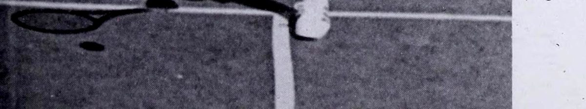
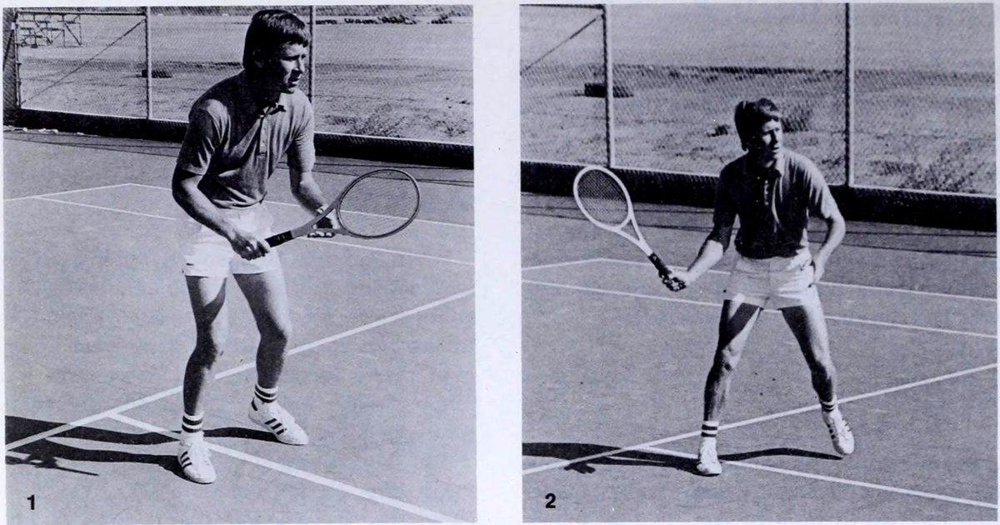
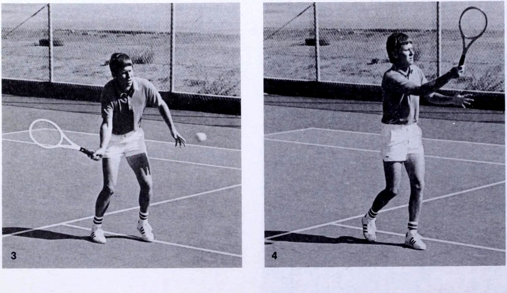
Tôi Đánh Cú Vô Lê Trái Tay Như Thế Nào
Cú vô lê trái tay đóng một vai trò quan trọng trong việc bắt đầu sự nghiệp quần vợt của tôi. Khi còn là một đứa trẻ mập mạp 12 tuổi, tôi đang tập đánh bóng trái tay vào một buổi sáng mùa hè năm 1942 tại Câu lạc bộ Quần vợt Cincinnati, nơi đang diễn ra Giải vô địch Quần vợt ba bang.
Bill Talbert, khi đó là một trong những kỳ thủ hàng đầu quốc gia, tình cờ đi ngang qua và để ý đến tôi. Anh ấy dừng lại để cho tôi một vài gợi ý về cú đánh, chủ yếu khuyên tôi nên giữ vợt ở phía trước và đấm vào bóng.
Sáng hôm sau, tôi lại tập luyện ở ngoài đó và Talbert lại ghé qua với một số lời khuyên. Điều tương tự cũng xảy ra vào ngày thứ ba. Tôi đoán anh ấy cảm thấy tôi có tiềm năng với tư cách là một tay vợt và có thể thấy tôi sẵn sàng nỗ lực trong môn quần vợt. Vì vậy, anh ấy đã che chở tôi và qua nhiều năm, anh ấy đã trở thành người có ảnh hưởng lớn nhất đến sự phát triển của tôi với tư cách là một tay vợt. Tôi luôn biết ơn sự giúp đỡ và động viên của anh ấy - và tất cả bắt đầu từ những cú vô lê trái tay cách đây nhiều năm ở Cincinnati.
Cách cầm Đối với cú vô lê trái tay, tôi khuyên bạn nên sử dụng cách cầm vợt trái tay kiểu phương Đông (xem trang 18). Đây không phải là cách cầm vợt mà các chuyên gia sử dụng. Hầu hết các chuyên gia đều sử dụng cách cầm vợt Continental cho tất cả các cú vô lê, vì việc trao đổi nhanh trên lưới khiến việc thay đổi cách cầm vợt trở nên không thực tế. Nhưng lúc đầu, tôi nghĩ sẽ thông minh nếu bắt đầu với cách cầm vợt trái tay cơ bản và sau đó chuyển đổi khi bạn đã thành thạo các yếu tố khác của cú đánh.
Chuẩn bị cho cú đánh Ở tư thế sẵn sàng cho cú vô lê trái tay, hai bàn chân phải dang rộng hơn chiều rộng vai một chút. Đầu gối phải hơi cong và bạn nên hơi cúi xuống. Trọng lượng của bạn phải dồn về phía trước, dồn lên mu bàn chân. Điều này sẽ cho phép bạn bắt đầu nhanh chóng theo bất kỳ hướng nào được chứng minh là cần thiết. Đầu vợt phải ở phía trên tay cầm vợt và vợt phải ở ngay trước mặt bạn.
Mẹo đánh vô lê Đây là một mẹo nhỏ có thể giúp ích rất nhiều trong việc giúp bạn đánh cú vô lê trái tay tốt hơn.
1. Để chuẩn bị cho cú vô lê trái tay, hãy đứng ở tư thế sẵn sàng, hai chân dang rộng và hai tay dang rộng thoải mái để tiếp xúc với bóng có thể được thực hiện tốt ở phía trước cơ thể 2. Khi bóng bay lên, vợt 3. Khi vô lê, không có thời gian để thực hiện cú đánh toàn bộ nên phải kéo về phía sau, gập đầu gối và vung vợt ra sau. Vì vậy, vợt phải được chuyển trọng lượng về phía trước trên quả bóng được đưa ra sau, với tay giữ chân. Giữ trọng lượng về phía trước sẽ chỉ đến vai. Khi được phép bước nhanh về phía quả bóng, đồng thời, có thể thực hiện một bước nếu cần thiết. quả bóng.
Khi bạn ở tư thế sẵn sàng trên lưới, hãy đảm bảo rằng cánh tay của bạn được mở rộng thoải mái về phía trước và khuỷu tay của bạn ở phía trước cơ thể. Với khuỷu tay ở phía trước, bạn sẽ có thể thực hiện cú vô lê tốt ở phía trước cơ thể và bằng cách đó bạn có thể luôn nhìn thấy bóng. Nếu bạn đợi với khuỷu tay ở bên cạnh, như hầu hết người chơi đều làm, cây vợt của bạn sẽ vẫn ở bên cạnh bạn khi bạn phản ứng với một cú trả bóng nhanh, và bạn sẽ không bao giờ có cơ hội nhìn thấy bóng.
Thực hiện cú vô lê trái tay Những cú vô lê trái tay được thực hiện tốt nhất bằng một chuyển động cắt ngắn. Khi bóng đến gần, tay thuận nên kéo vợt về phía sau nhưng không quá xa. Nếu có thời gian, bạn nên quay sang một bên để có thể bước ra bằng chân trước khi thực hiện cú vô lê. Một số chuyên gia có thể khuyên bạn đừng lo lắng nhiều về động tác bằng chân trong cú vô lê, nhưng tôi nghĩ điều đó quan trọng.
Hoạt động của cổ tay cũng rất quan trọng (xem trang 65). Khi bạn chuẩn bị đánh bóng, cổ tay của bạn phải nghiêng. Nó bật về phía trước khi bạn thực hiện cú vung nhưng vẫn giữ vững ở thời điểm tiếp xúc. Một cú vô lê được thực hiện tốt thực chất là một cú đẩy mạnh về phía trước, đầu vợt và cổ tay cùng di chuyển về phía trước.
Dù bạn làm gì, đừng đập đầu vợt vào bóng. Sử dụng cẳng tay và cổ tay của bạn, đánh bóng xuống và về phía trước. Điều này tạo ra xoáy xuống giúp giữ bóng trong sân. Ngoài ra, bóng phải được đánh càng xa phía trước cơ thể càng tốt. Sẽ có rất ít hoặc không có cú đánh tiếp theo, bởi vì bạn muốn vợt vẫn ở trong khu vực đánh bóng trong trường hợp bóng quay trở lại nhanh chóng, điều này thường xảy ra trong các trận đánh đôi.
Những cú vô lê thấp Ở những cú vô lê thấp, mặt vợt nên hơi nghiêng về phía sau và cú đánh phải được thực hiện bằng một cú đấm ngắn về phía trước. Mặt vợt phải nghiêng về phía sau để bóng bay lên nhanh và qua lưới. Những cú vô lê thấp rất khó vì bạn phải đưa bóng lên cao qua lưới mà vẫn giữ được bóng trong sân. Lời khuyên của tôi về những cú vô lê thấp là hãy nhận ra rằng bạn đang gặp khó khăn, quan sát bóng thật kỹ, thực hiện một cú đấm ngắn vào quả bóng và cố gắng đánh nó sâu vào phần sân đối phương - nhưng không quá mạnh. Nếu bạn cố gắng đánh cú vô lê thấp quá mạnh, bạn sẽ bắt được băng hoặc đánh nó qua vạch cuối sân.
Vô lê cao Trong cú vô lê trái tay cao, tốt nhất bạn nên thực hiện 'tiếp xúc ở phía trước cơ thể để bạn có thể nhìn thấy bóng mọi lúc và cố gắng đấm bóng sâu. Đây là một cú đánh khó đối với hầu hết người chơi, vì vậy đừng cố gắng trở thành anh hùng. Đưa nó trở lại sâu và chuẩn bị cho cú vô lê tiếp theo.
Đừng luôn cố gắng đánh trúng người chiến thắng ngay từ cú vô lê đầu tiên của bạn. Đôi khi phải mất một vài cú vô lê trước khi bạn khiến đối thủ rời khỏi vị trí, lúc đó bạn có thể dễ dàng giành điểm hơn với cú vô lê thứ ba.
Tốt nhất là bạn nên bước về phía trước bằng chân trước khi thực hiện cú vô lê trái tay để dồn một chút trọng lượng cơ thể vào cú đánh. Nếu bạn không có thời gian để thực hiện bước đó, ít nhất hãy đảm bảo giữ vợt trước mặt bạn và đấm vào bóng. Hoặc trong những trường hợp cực đoan, bạn chỉ cần cố gắng chặn lại.
Cú đánh trực tiếp Bạn nên xử lý thế nào khi một quả bóng bay thẳng về phía bạn trên lưới? Vì mọi thứ chuyển động quá nhanh nên về cơ bản nó phải là một hành động phản xạ. Nhưng nếu bạn có thời gian để lựa chọn giữa cú vô lê thuận tay và cú vô lê trái tay, hãy chọn cú đánh mà bạn cảm thấy là cú đánh mạnh của mình. Đó hoàn toàn là sở thích cá nhân.
Trong trường hợp thực hiện cú vô lê trái tay, tôi đưa vợt của mình song song với lưới ngay lập tức, đồng thời, tôi bước thẳng sang bên phải (vì tôi thuận tay phải) bằng chân phải. Khi tôi thực hiện động tác này, đầu gối của tôi cong lại ở tư thế sẵn sàng như được đề xuất. Điều này cho phép tôi chuyển toàn bộ trọng lượng sang chân phải. Sau đó, tôi có thể tiếp xúc với quả bóng không phải khi nó ở phía trước tôi mà khi nó ở phía bên trái cơ thể tôi. Bằng cách bước sang một bên, tôi có thể tránh được cơ thể của mình và ở trong tư thế có thể thực hiện cú vô lê tốt từ một cú đánh có thể khó thực hiện.
Ở những cú vô lê trái tay thấp, hầu hết những người bắt bóng giỏi đều đi theo chiều sâu để tránh rắc rối, thường hy sinh tốc độ vì sự an toàn. Nhưng ở tất cả những cú vô lê cao hơn lưới, những tay vợt giỏi nhất đều rất năng nổ. Họ cố gắng giành điểm ngay từ cú vô lê cao. Hãy quên đi những góc độ dễ thương và những cú vô lê; chúng là những cú đánh có tỷ lệ phần trăm thấp và bạn sẽ mất nhiều điểm hơn số điểm bạn giành được với chúng. Hãy để những người chuyên nghiệp thực hiện những điều khó khăn đó.
Rx cho cú vô lê trái tay Nếu bạn gặp khó khăn với cú vô lê trái tay của mình, có lẽ danh sách kiểm tra này sẽ giúp ích cho bạn. tức là 1. Canh bóng như diều hâu.
2. Sử dụng cách cầm vợt trái tay.
3. Đặt tay còn lại của bạn lên cổ vợt.
4. Giữ vững cổ tay.
5. Nghiêng mặt vợt về phía sau một chút và sử dụng động tác cắt bóng di chuyển từ cao xuống thấp.
6. Thực hiện một cú đâm ngắn vào bóng với ít hoặc không có động tác backswing và không có cú đánh tiếp theo.
7. Tiếp xúc càng xa phía trước cơ thể càng tốt.
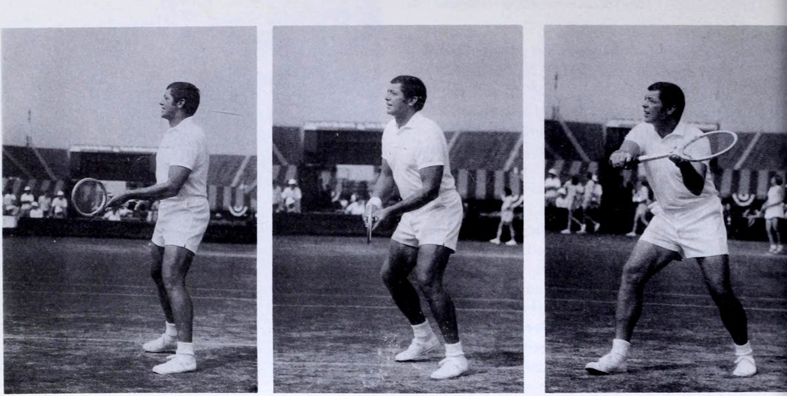
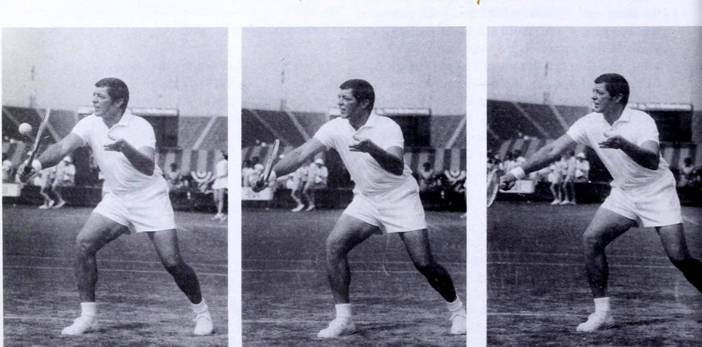
Động Tác Cổ Tay Khi Vô Lê
Những người hướng dẫn quần vợt luôn chú ý đến những từ ngữ đầy màu sắc và những kỹ thuật đơn giản giúp việc giảng dạy của họ trở nên hiệu quả. Trong số những từ phổ biến nhất là "chặn" và '''cú đấm''— hai từ thường được sử dụng để mô tả chuyển động của cú vô lê. Những thuật ngữ này mang tính mô tả về một điểm, nhưng không truyền tải hành động quan trọng của cổ tay trong cú đánh vô lê điêu luyện.
Một cách gần đúng hơn về cú vô lê được tìm thấy trong môn quần vợt patty-cake thời thơ ấu.
Giữ một cây vợt trong tay và chơi "'pattycake" với một nhân vật tưởng tượng trong một lúc và bạn sẽ bắt đầu ước chừng hành động chính xác của cổ tay cho cú vô lê.
Trong loạt ảnh này của nữ vận động viên chuyên nghiệp tài năng Julie Anthony (bên dưới), ảnh 2 và 3 thể hiện hành động "bánh ngọt" trong cú vô lê.
Hãy chú ý vị trí sẵn sàng trong ảnh 1 và cổ tay nghiêng và thoải mái trong ảnh 2 và 3. Bằng cách duy trì vị trí cổ tay này trong toàn bộ cú đánh, người chơi giữ được quyền kiểm soát vợt và tránh vung vợt lỏng lẻo thường dẫn đến đánh không chính xác.
Lực mà người chơi cần đạt được bằng cách bước vào cú đánh và bằng cách duỗi cẳng tay như trong ảnh 4.
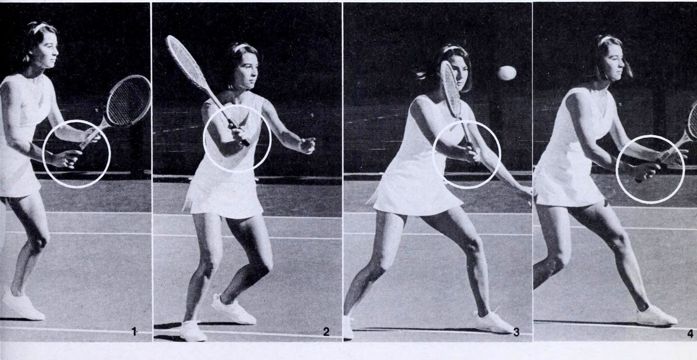
Đánh Cú Vô Lê Trái Tay Bóng Cao
Cú vô lê trái tay cao là một trong những cú đánh khó nhất trong quần vợt. Hầu hết người chơi đặc biệt khó đánh bằng sức mạnh. Về cơ chế, cú đánh thực sự tương tự như cú vô lê trái tay đánh cao ngang thắt lưng, ngoại trừ việc bạn phải đánh bóng xuống. Chuyển động phải sắc nét, khuỷu tay duỗi thẳng khi bóng hơi chạm về phía trước cơ thể. Nếu bạn có thời gian, tốt nhất bạn nên thực hiện cú đánh này bằng cả hai chân hướng về phía đường biên. Như bức ảnh bên dưới cho thấy, cổ tay rất chắc chắn trong cú đánh này. Góc cổ tay phải được duy trì khá ổn định trong suốt cú đánh. Nói cách khác, bạn không nên cố gắng thực hiện những cú vô lê trái tay bằng "cổ tay". Cẳng tay thực hiện cú đánh, mặc dù trọng lượng của bạn phải di chuyển về phía trước khi bạn đánh nó. Như với tất cả các cú vô lê, thời gian theo dõi rất ngắn.
Chìa khóa thành công trong việc đánh cú vô lê trái tay cao như chuyên gia Phil Dent chỉ ra là giữ cổ tay thật chắc chắn, duỗi thẳng khuỷu tay khi va chạm và thực hiện cú đánh ngắn.
Cách Đánh Cú Nửa Vô Lê
Cú vô lê nửa vòng là cú đánh bạn buộc phải sử dụng khi bóng nhắm vào chân bạn hoặc khi bạn không thể lao vào lưới đủ nhanh để vô lê bóng trước khi nó nảy lên. Đó là cú đánh được thực hiện gần như ngay lập tức sau khi bóng nảy lên, ở độ cao gần bằng mặt đất. Đó không phải là một cú đánh mà bạn cố gắng đánh. Cơ hội để đánh nó thường xảy ra trong các trận đánh đôi khi bóng được đánh ngay chân bạn hoặc trong các trận đánh đơn khi bạn đang thực hiện cú giao bóng của mình và đối thủ của bạn đánh một cú đánh có nhịp độ tốt và sẽ nảy lên trước khi bạn có thể bắt vô lê trở lại. Tất nhiên, bạn có thể rút lui trong tình huống này và thực hiện cú đánh như một cú đánh mặt đất thông thường, nhưng điều đó sẽ khiến bạn tránh xa lưới. Ngoài ra, khi phải chuyển hướng đột ngột như vậy thì rất khó để lấy lại thăng bằng và kết quả thường là cú trái tay hoặc thuận tay yếu.
Bắt bóng Điều quan trọng nhất cần nhớ về nửa cú vô lê là bạn nên cúi xuống bóng càng nhiều càng tốt, ngay cả khi điều đó có nghĩa là bạn thực sự phải chạm đất bằng đầu gối. Quả bóng phải được đánh nhẹ về phía trước mặt bạn với chuyển động hướng lên trên và theo sát mức tối đa mà bạn có thể tạo ra từ tư thế gập đầu gối. Trọng lượng của bạn sẽ di chuyển về phía trước. Bạn không cần phải theo dõi kéo dài—chỉ cần một thời gian vừa đủ để giúp bạn đạt được hướng mà bạn muốn bóng đi.
Cũng rất quan trọng đối với cú đánh này là góc của mặt vợt. Từ cú vung vợt ngắn về phía sau, vợt phải được đưa về phía trước với đầu vợt hướng lên càng nhiều càng tốt và mặt vợt hơi mở (nghiêng về phía sau). Càng gần lưới, bạn càng phải mở mặt vợt để đảm bảo bóng đi qua lưới. Tuy nhiên, hãy mở mặt quá nhiều và cuối cùng bạn sẽ nhấc bóng qua lưới vì một cú lốp bóng yếu. Việc luyện tập sẽ giúp bạn đánh giá được góc vợt thích hợp.
Học từ Thầy Tôi đoán chuyên gia thực sự ở nửa cú vô lê là Ken Rosewall. Rosewall phải thực hiện rất nhiều cú volley nửa vời vì đối thủ của anh luôn đập bóng vào chân anh. Chìa khóa thành công của anh ấy với cú đánh này là động tác chân tuyệt vời và khả năng giữ thăng bằng tốt. Anh ấy có thể tiếp cận quả bóng rất thấp mà không bị mất thăng bằng, và anh ấy đánh với một chuyển động linh hoạt, tiết kiệm đến mức anh ấy giống như một cú cản phá bóng mượt nhặt một quả bóng trên mặt đất. Thực sự, đó là những chìa khóa: tiếp cận quả bóng, chạm bóng, đánh với chuyển động linh hoạt — và tất nhiên, luôn để mắt đến quả bóng. Ở những trang tiếp theo, tôi sẽ trình bày cách thực hiện.
Hầu hết các nửa cú vô lê đều được thực hiện khi bạn đang trên đường tới lưới và không có thời gian đến đủ gần quả bóng để thực hiện cú vô lê trước khi nó nảy lên (khung 1). Ngay khi bạn nhận ra rằng tình huống cần thực hiện cú vô lê một nửa, hãy dừng lại (2), xoay vai để đưa vai của bạn song song với đường bay của quả bóng và bước về phía quả bóng bằng chân trước (3).
Hạ thấp nhất có thể (4, 5), nhưng giữ đầu vợt hướng lên cao nhất có thể (6). Bạn sẽ chỉ cần một cú vung vợt về phía sau ngắn (5, 6), nhưng bạn sẽ có thể có đủ lực cho cú đánh bằng cách giữ trọng lượng cơ thể về phía trước (7). Khi tiếp xúc (8), giữ chắc cổ tay và cẳng tay và đánh bóng với mặt vợt hơi mở (9).
Mang bóng trên vợt của bạn càng lâu càng tốt và cố gắng thực hiện cú theo bóng nhiều nhất có thể từ vị trí uốn cong của bạn (10, 11, 12). Thực hiện theo hướng mà bạn đang nhắm bóng.
ôi ha:
Những Cú Vô Lê Hay Nhất Trong Giới Chuyên Nghiệp
Tay vợt đầu tiên thực sự gây ấn tượng với tôi với cú vô lê của anh ấy là Frank Sedgman, nhà vô địch vĩ đại của Úc những năm 1950. Cú vô lê của Sedgman — thuận tay hoặc trái tay — là một cú đánh tuyệt vời, được thực hiện nghiêm túc với động tác đấm và đánh xa về phía trước nhất mà anh ấy có thể thoải mái với tới. Điều thực sự làm cho nó hiệu quả là sự nhanh chóng của anh ấy trong việc lao về phía trước để thực hiện cú vô lê càng gần lưới càng tốt.
Lew Hoad, người đến sau đó vài năm, cũng có một cú vô lê đáng sợ. Trên thực tế, nó đã được một tay vợt không kém gì Richard ('"Pancho'') Gonzalez sợ hãi. Trong trận đối đầu đầu tiên của họ liên quan đến chuỗi 100 trận đấu, Gonzalez đã xây dựng lại hoàn toàn trái tay của mình (điều mà trước đây anh ấy thích đánh dọc biên hơn) để anh ấy có thể chơi tấn công chéo sân và do đó tránh được cú vô lê thuận tay của Hoad.
Như Gonzalez đã nói, "Tôi bị Lew giết chỉ vì cú đánh tốt nhất của tôi là cú trái tay ở cuối đường biên và của Lew là cú vô lê thuận tay của anh ấy. Điều đó có nghĩa là anh ta sẽ đập mạnh dọc sân theo kiểu mà tôi thậm chí không thể đưa vợt của mình chạm vào bóng."' Hiện nay có một vài người cũng sở hữu những cú vô lê thuận tay rất đáng gờm. John Newcombe có một cú vô lê truyền động (một cú vô lê được đánh như thể nó là một cú đánh cuối sân) là cú vô lê tốt nhất trong số các tay vợt đương thời.
Anh ấy chơi nó từ giữa sân, thường thực hiện một cú giao bóng trả giao bóng cao. Anh ta chỉ thực hiện cú xoay người ngắn hơn một chút so với cú thuận tay cao bình thường và dường như sử dụng ít chuyển động cơ thể hơn. Cú vô lê thuận tay bình thường của anh ấy, được nhiều người ngưỡng mộ, được chơi bằng đầu vợt sớm hướng lên trên và với cổ tay rất chắc chắn. Dennis Ralston cũng có cú vô lê thuận tay vượt trội.
Điểm mạnh lớn nhất của anh ấy là anh ấy tuân thủ nghiêm ngặt các nguyên tắc cơ bản, sử dụng rất ít động tác backswing, thực hiện cú đánh với đầu vợt được giữ chắc chắn và luôn để mắt đến bóng.
Trong số những cú vô lê trái tay xuất sắc, tôi phải đánh giá cú vô lê của Arthur Ashe là một trong những cú vô lê hay nhất môn quần vợt. Chìa khóa cho sự hiệu quả của Ashe trong cú đánh này là anh ấy tiếp bóng tốt ở phía trước cơ thể. Điều này không dễ thực hiện, nhưng giá trị của nó là nó cho phép bạn giữ bóng trong tầm nhìn và đánh bóng vào thời điểm mà mắt và tay phối hợp dễ dàng nhất — nghĩa là khi bóng đang đến gần trên một đường thẳng chứ không phải khi nó ở trên đầu bạn hoặc lao qua. Ashe không bao giờ để mất tầm nhìn của bóng và do đó, có thể thực hiện những pha định vị chính xác đến chết người.
Bob Lutz, Erik Van Dillen và Ken Rosewall là ba tay vợt khác có những cú vô lê trái tay hiệu quả. Cái hay của Rosewall là bạn không bao giờ biết anh ấy sẽ đặt nó ở đâu. Đó là cách anh ấy ngụy trang cú đánh tốt như thế nào. Cách đánh của Van Dillen cũng rất lừa đảo, và anh ấy tạo thêm nét đặc sắc cho cú đánh bằng cách đặt độ xoáy xuống nặng vào cú đánh thông qua một chuyển động cắt sắc nét. Lutz không ngụy trang trái tay của mình tốt như Rosewall hay Van Dillen, nhưng anh ấy bù đắp điều này bằng cách tạo ra một lượng góc đáng kinh ngạc. Anh ấy thực hiện điều này bằng cách sử dụng cổ tay hếch rất mạnh khi đánh bóng—một kỹ thuật mà tôi không khuyên dùngEvIS237 "SC SELES Es ESZEZESHRE RVECI EE Ss LECH IT SY Ae SPSELLIPIERLACILLZZZE i gaeirivaeisabesrrsss ET EELRAETTIE £0 45H Những tay vô lê thuận tay xuất sắc nhất những năm gần đây bao gồm ba nhà vô địch sau: Frank Sedgman (trái), John Newcombe (trên) và Lew Hoad (dưới).
Trong số những tay chuyền bóng trái tay giỏi nhất thế giới có Billie Jean King (trái), Arthur Ashe (trên) và Evonne Goolagong Cawley (dưới). Khả năng đánh phía sau đối thủ theo hướng ngược lại của Billie Jean khiến cú vô lê trái tay của cô trở thành một trong những vũ khí tấn công tốt nhất trong quần vợt.
phù hợp với người chơi ở mức độ trung bình vì rất khó để giữ cố định cổ tay khi chạm một quả bóng mạnh.
Và đừng quên Roy Emerson. Emerson có động tác lao vào không chính thống, trông có vẻ vụng về nhưng lại cực kỳ hiệu quả. Emmo có thể đánh trúng người chiến thắng bất kể bóng đến từ hướng nào, và điều quan trọng, trong trường hợp của anh ấy, là sự tập trung tốt, sự năng nổ và dồn nhiều lực về phía trước trong cú đánh.
Không có nhiều nữ vận động viên chuyên nghiệp có được những cú vô lê hiệu quả. Evonne Goolagong Cawley có lẽ là người giỏi nhất, mặc dù chuyển động của cô ấy hơi cẩu thả. Điều cô ấy làm rất tốt là bắt bóng tốt ở phía trước, giống như Ashe. Cú vô lê trái tay của Billie Jean King cũng có hiệu quả. Chính khả năng đặt nó ở hai góc đã giúp cô tiêu diệt Bobby Riggs trong trận đấu nổi tiếng của họ. Cô ấy đánh không mạnh nhưng đặt bóng tốt và không sợ bị bắn.
Việc phát triển một cú vô lê trái tay hiệu quả— hoặc một cú vô lê thuận tay—phần lớn là vấn đề của việc luyện tập rất nhiều trên lưới. Tóm lại, tôi không thể làm gì hơn ngoài việc nhắc lại lời khuyên của Dennis Ralston trong phần đầu của chương này. Đánh bóng trước mặt bạn, để vợt thực hiện hầu hết công việc và trên hết, hãy luôn để mắt đến quả bóng.
OFGSTTE INGE SESS = Eb eo ee
Chương 5: Cú Giao Bóng
Tăng Sức Mạnh Cho Cú Giao Bóng "Cannonball"
geea Arthur Ashe thể hiện cú giao bóng bằng súng thần công mạnh mẽ.
Theo mọi tỷ lệ, cú giao bóng là cú đánh quan trọng nhất trong quần vợt hiện đại. Hãy nghĩ về nó. Đó là cú đánh duy nhất bạn đánh mà không phải là cú đánh trả lại của đối thủ. Khi bạn đứng ở vạch cơ sở, bạn và chỉ mình bạn nắm quyền kiểm soát điểm đó. Nói chung, điểm sẽ được quyết định dựa vào việc bạn đưa bóng vào cuộc tốt như thế nào.
Tôi đã xây dựng môn quần vợt của mình xoay quanh cú giao bóng và cú trái tay. Khi mọi việc diễn ra tốt đẹp, người giao bóng có thể giành điểm cho tôi, hoặc ít nhất là sắp xếp mọi chuyện để mọi chuyện sẽ kết thúc sau hai cú vô lê.
Có ba kiểu giao bóng cơ bản: ngang, tôi sẽ mô tả và chứng minh cho bạn ở đây; lát cắt và kiểu xoắn kiểu Mỹ, cả hai đều sẽ được mô tả trong các phần tiếp theo.
Cú giao bóng phẳng — hay còn gọi là đạn đại bác — là cú giao bóng ngoạn mục nhất trong ba cú giao bóng. Khi thực hiện đúng cách, bóng sẽ được đánh vào giữa vợt, với mặt vợt vuông vức và do đó bóng sẽ có ít hoặc không có độ xoáy. Khi nó đánh tốt, không có cú giao bóng nào khác đi qua lưới nhanh như vậy.
Và đó chính là vấn đề. Quá nhiều người chơi theo lối tự cao sử dụng cú giao bóng thẳng chỉ để chứng tỏ họ có thể áp đảo như thế nào. Họ bắn đi một cách bừa bãi nhằm cố gắng giành được con át chủ bài — đừng bận tâm đến việc họ hy sinh điểm dưới dạng lỗi kép trong quá trình này. Chúng ta sẽ quay lại vấn đề này sau.
Bây giờ chúng ta hãy xem xét các nguyên tắc cơ bản của Vị trí bắt đầu Cách đúng đắn để bắt đầu quả giao bóng phẳng — hoặc bất kỳ quả giao bóng nào, đối với vấn đề đó — là đứng thư giãn với trọng lượng của bạn dồn lên bàn chân trước và cả hai tay giữ sát nhau ở ngang eo.
Trong đánh đơn, vị trí đứng đối diện với điểm giữa. Vị trí này thể hiện khoảng cách ngắn nhất giữa bạn và sân giao cầu khác. Trong nội dung đánh đôi, mục tiêu của bạn là kiểm soát lưới, vị trí đứng nằm ở giữa điểm giữa và đường biên đơn. Điều này giúp bạn định vị được con đường ngắn nhất có thể để đến được vị trí thích hợp trên lưới.
Khi định vị, hãy đứng sao cho bụng hướng về cột lưới bên phải (đối với người thuận tay phải). Hai bàn chân phải rộng bằng vai, bàn chân phải gần như song song với đường cơ sở. Tôi thường bắt đầu cú giao bóng của mình bằng chân trái cách đường biên ngang khoảng 12 inch và sau đó tôi di chuyển nó lên khi vung bóng. Đây là một thói quen mà tôi đã phát triển khi còn trẻ và tôi không khuyến khích điều đó. Trên thực tế, cách đây vài năm USLTA đã phải tổ chức các cuộc thảo luận đặc biệt để xác định rằng bước đi nhỏ của tôi là hợp pháp.
Hãy để nó trôi chảy Khi bạn bắt đầu chuyển động giao bóng, bạn nên thả lỏng và thư giãn. Mục đích của bạn là làm cho cú giao bóng của bạn trở thành một chuyển động nhịp nhàng, kéo dài. Khi hành động bắt đầu, bạn không cần phải cố gắng thực hiện nó. Hãy để chuyển động tự chăm sóc nó. Hãy để vợt chảy qua quả bóng. Chuyển động phải mượt mà nhất có thể, không bị cản trở.
Tôi nhận ra điều đó không dễ dàng như vậy. Động tác giao bóng bao gồm sự phối hợp của hai động tác riêng biệt: đưa bóng lên và đưa vợt đi vòng quanh. Lý tưởng nhất là vợt nên gặp bóng ở đỉnh của cú vung.
Mấu chốt ở đây là việc ném bóng. Tốt nhất trong giao bóng phẳng là ném bóng cao hơn một chút so với điểm tiếp xúc dự kiến để bạn có thể đánh bóng ngay khi nó bắt đầu đi xuống.
Điều này đòi hỏi phải thực hành nhiều, nhưng bạn phải làm điều đó nếu bạn muốn đánh quả giao bóng phẳng với bất kỳ sự nhất quán nào. Giữ bóng bằng miếng đệm ở đầu ngón cái và ba ngón đầu tiên. Mỗi lần chỉ giữ một quả bóng. Không nên giữ hai quả trong lần giao bóng đầu tiên vì hai lý do. Đầu tiên, nếu quả giao bóng được thực hiện, bạn phải đánh điểm có bóng trên tay hoặc bạn phải nhớ ném nó sang một bên. Tại sao làm điều đó? Thứ hai, với một quả bóng khác trong tay, nếu bạn bỏ lỡ quả giao bóng đầu tiên, bạn có xu hướng lao vào quả giao bóng thứ hai thay vì dành thời gian như bạn nên làm. Vì vậy, hãy đặt quả bóng thứ hai vào túi của bạn. (Nếu chiếc váy tennis của bạn không có túi, các quý cô, hãy may một chiếc vào.) Lắc lư theo nhịp điệu Một số người chơi, bao gồm cả tôi, thích giao bóng theo kiểu chuyển động lắc lư. Nó giúp thiết lập nhịp điệu cho cú đánh. Nó giống như cuộn dây rồi buông ra. Sau khi bắt đầu với cả hai tay ngang hông và dồn trọng lượng lên chân trái, tôi dồn trọng lượng của mình trở lại chân phải và thả cả hai tay xuống sao cho khuỷu tay thẳng. Sau đó tôi bắt đầu di chuyển cánh tay trái hướng lên trên và cánh tay phải vào động tác backswing. Điều quan trọng đối với nhịp điệu và sự phối hợp là cả hai cánh tay đều hoạt động cùng một lúc. Nó cũng đơn giản hóa mọi thứ.
Cú xoay Khi cánh tay trái của bạn ném bóng, cánh tay phải của bạn phải bắt đầu đưa vợt về theo hình vòng cung càng lớn càng tốt; giữ khuỷu tay của bạn hướng lên và cách xa cơ thể nhất có thể sẽ giúp đạt được điều này. Khuỷu tay càng gần cơ thể thì vòng cung càng nhỏ. Bạn muốn có một vòng cung lớn, để mang lại cho bạn nhiều đòn bẩy nhất có thể trong cú giao bóng. Với vòng cung lớn, cánh tay của bạn sẽ duỗi thẳng hoàn toàn khi tiếp xúc với bóng và điều này đảm bảo sức mạnh tối đa.
Mang vợt vòng ra phía sau bạn nhanh chóng và thoải mái nhất có thể; bạn càng đưa bóng xuống phía sau càng xa thì khả năng đánh bóng càng khó. Khi vợt đã ở phía sau bạn, hãy uốn cong đầu gối, cong lưng và chuyển trọng lượng của bạn trở lại chân phải. Lúc này, vai của bạn phải vuông góc với lưới và cơ thể bạn phải cuộn lại như một sợi dây cao su.
Bây giờ bạn đã cuộn mình theo cách này, bạn thư giãn bằng cách di chuyển chân phải về phía trước. Chính chuyển động này mang lại tốc độ cho cú giao bóng phẳng của bạn. Nhưng cũng có những người khác. Mô-men xoắn của cơ thể bạn khi nó cuộn lên và sau đó thả ra là một. Thời gian của toàn bộ chuyển động cũng vậy, đòi hỏi phải luyện tập nhiều để hoàn thiện.
Hành động của cổ tay trong bóng thần công Hành động của cổ tay rất quan trọng trong tất cả các kiểu giao bóng, nhưng đặc biệt là trong bóng thần công, nơi mục đích chính của bạn là tạo ra sức mạnh. Trong quá trình vung vợt sau, cổ tay phải được giữ ở vị trí tự nhiên, không nghiêng. Nhưng một khi nó đu qua đầu và sau lưng bạn, nó sẽ nghiêng đi. Điều này sẽ khiến vợt rơi xa hơn về phía sau lưng bạn. Khi tiếp xúc, cổ tay phải bật về phía trước từ vị trí nghiêng. Việc bẻ cổ tay này là nguồn năng lượng cuối cùng của một quá trình có được sức mạnh tổng thể từ sự kết hợp giữa trọng lượng cơ thể, chuyển động của cánh tay và hành động đánh của đầu vợt.
Sau khi đánh bóng, cơ thể của bạn phải nghiêng hẳn về phía sân và duỗi thẳng gần như thành một đường thẳng từ ngón tay đến mắt cá chân. Ý tôi không phải là thẳng, mà là tương đối thẳng. Sau khi giao bóng, tôi đi đủ xa ra khỏi sân ở vị trí cách đường biên ngang gần 3 feet.
Khi tiếp xúc, vai của bạn phải song song với lưới, tay trái ôm sát cơ thể để giúp giữ thăng bằng trước lực của cánh tay vợt lao về phía trước. Sau đó, vợt nên được đưa xuống dọc theo cơ thể và vòng sang bên trái một cách mượt mà và hoàn chỉnh.
Ngoài ra, khi kết thúc cú giao bóng, bạn lẽ ra phải xoay người gần như 180 độ với rốn gần như hướng về phía cột lưới bên trái. Bạn nên nhìn qua vai phải của mình khi hướng về phía lưới. Nếu bạn không muốn lao vào lưới, bàn chân phải của bạn sẽ đóng vai trò là điểm tựa để bạn bật trở lại đường biên.
Kết luận Dù cú giao bóng bằng súng thần công có hiệu quả như thế nào, tôi không nghĩ bạn nên dựa vào nó trừ khi bạn có thể thực hiện được nó trong khoảng 65% thời gian trong lần giao bóng đầu tiên. Tôi thực sự khuyên bạn không nên sử dụng cú giao bóng phẳng trong lần giao bóng thứ hai. Biên độ sai số là quá lớn. Vì bóng nằm trên một quỹ đạo phẳng nên nó phải đi qua lưới một cách Khi bắt đầu giao bóng, tôi đứng với hai tay sát nhau ngang eo và trọng lượng của tôi dồn lên chân trước (1). Sau đó, tôi vung trọng lượng của mình về phía sau và thả cả hai cánh tay xuống sao cho khuỷu tay của tôi thẳng (2). Sau đó, cánh tay trái của tôi bắt đầu hướng lên trên để ném bóng (3) và cánh tay phải của tôi tiếp tục cầm vợt về phía sau theo một vòng cung lớn (5—7) cho đến khi nó đạt đến vị trí mà tôi có thể đưa tay ra để đưa vợt vào tư thế ''gãi lưng'' (8B—9). Đồng thời, tôi thả bóng ngang tầm vai (4) nhưng với một kiểu di chuyển ngắn (5) giúp tôi định vị bóng chính xác. cong đầu gối, cong lưng và dồn trọng lượng lên chân trái (5–7). Sau đó, tôi thư giãn bằng cách di chuyển về phía trước và duỗi thẳng lên trên (8–10). Đối với một cú giao bóng phẳng, tôi đánh bóng khi nó ở bên phải và hướng ra phía trước tôi (11). Bây giờ, vai của tôi song song với lưới và cánh tay trái của tôi ôm vào người (12). Tiếp theo, tôi đưa vợt xuống ngang cơ thể (13) và thực hiện theo vòng sang bên trái (14). ở lại đường cơ sở.
—oe Tôi có thể lao vào lưới nhiều nhất vài inch nếu không nó sẽ lao ra khỏi sân giao bóng. Tốt hơn nên sử dụng một lát hoặc xoắn trong lần giao bóng thứ hai, như hầu hết các chuyên gia đều làm. Nếu bạn làm theo những điều cơ bản mà tôi đã vạch ra và nếu bạn luyện tập chúng, bạn sẽ có thể phát triển một cú giao bóng phẳng hiệu quả. Đây không phải là một cách giao bóng dễ dàng để thành thạo và có những ngày bạn sẽ thất bại. Nhưng khi nó hoạt động, nó có thể là một vũ khí tàn khốc—và cũng rất thú vị khi đánh trúng.
Tới aeRO NARS AIRE CNA MEELIS
Cú Giao Bóng Cắt
Như Arthur Ashe đã chỉ ra trong bài viết trước, ngay cả những người chơi thành đạt cũng không chỉ dựa vào một cú giao bóng cố định. Họ phụ thuộc vào việc giao bóng theo lát cắt. Giá trị của một cú giao bóng lát cắt gấp đôi: Thứ nhất, nó đến phần sân của người nhận với tốc độ nhanh hơn một chút so với cú giao bóng "patsy" điển hình mà hầu hết các tay vợt câu lạc bộ sử dụng trong lần giao bóng thứ hai và nó cũng có độ nảy đánh lừa.
Thứ hai, nó dễ kiểm soát hơn so với giao bóng phẳng.
Về cơ bản, cú giao bóng cắt lát có xoáy ngang. Nó sẽ bật ra khỏi cú thuận tay của đối thủ thuận tay phải hoặc có thể được giao vào bên trái cơ thể của anh ta để khiến anh ta bị chuột rút khi trả bóng.
Ví dụ: nếu đối thủ của bạn đang ở sân deuce, bạn có thể giao bóng gần đường biên đơn, đuổi anh ta ra khỏi sân để lấy lại cú đánh và tự mình chuẩn bị cho người chiến thắng khi anh ta quay lại.
Các bức ảnh trình tự kèm theo mô tả chi tiết cách thực hiện một cú giao bóng cắt lát. Những điều cơ bản của cú đánh như sau: Sử dụng cách cầm vợt trái tay, tung bóng hơi sang bên phải cơ thể và về phía trước đường biên ngang, đồng thời vung vợt về phía cột lưới bên phải, với vợt đi vòng quanh cạnh bóng khi tiếp xúc. Quá trình tiếp theo kết thúc ở phía bên trái của cơ thể bạn. Nếu cú đánh được đánh tốt, nó sẽ cong từ trái sang phải của người nhận.
Nó cũng uốn cong trong không khí và sẽ tiếp tục uốn cong sau khi nảy lên và trượt khi tiếp đất. Không giống như cú giao bóng nhanh, thường có thể được trả lại bằng một cú chặn đơn giản, cú giao bóng cắt lát yêu cầu một cú trả bóng vuốt ve và do đó, nhiều người chơi khó xử lý hơn cú giao bóng phẳng 1. John Alexander ở vị trí thứ 2. Khi anh ấy bắt đầu vị trí sẵn sàng giao bóng. Lưu ý rằng chuyển động của anh ấy, anh ấy đá trọng lượng của bàn chân trước hướng về phía chân sau. Động tác ném đường cơ sở để tay chạm tới mắt cá chân phải và đầu gối tiếp nhận một bên cơ thể để trọng lượng truyền lên quả bóng có thể được ném sang chân trước. Nếu chân trước đúng. Điều này là cần thiết để có được một cú giao bóng tốt và song song với đường cơ sở. Việc chuyển trọng lượng của quả bóng khó khăn hơn ở đầu ngón tay và bề mặt; do đó khả năng giữ thăng bằng tốt và lòng bàn tay hướng lên trên, khả năng kiểm soát cơ thể bị giảm đi. hướng mặt gần như lên trời.
Anh ta đặt chân trước an toàn phía sau vạch cuối sân để chắc chắn rằng mình sẽ không mắc lỗi chân.
Trọng lượng của anh ấy dồn vào chân trước.
3. Số lần ném bóng là 4. Cánh tay trái bắt đầu lệch về bên phải, và chú ý hướng xuống dưới khi cánh tay trái của anh ta cầm vợt bắt đầu thả xuống phía sau và hướng lên trên cho đến khi hoàn toàn trở lại. Anh ấy đang xem phần mở rộng. Điều này giúp anh ấy bóng rất chặt chẽ. Ở nơi này bóng nơi anh ấy ảnh, như trong ba premuốn nó. Anh ta đã chuyển những người trước đó, đầu gối của anh ta đang dồn trọng lượng về phía trước để hơi cong. Điều này tạo điều kiện cho chân trước và giúp John giữ thăng bằng hợp lý với chân phải về phía trước một chút. và chuyển trọng lượng tốt. Cá nhân tôi không thích mang từ chân này sang chân kia.
đưa chân sau một phần về phía trước và "kéo" hoặc do dự trước khi tiếp tục tiến về phía trước. Tuy nhiên, điều này không cản trở một người giao bóng xuất sắc như Jack Kramer, và các chuyên gia sẽ cho bạn biết điều đó dường như cũng không cản trở việc giao bóng của John. Hãy chú ý vị trí của bàn chân trái của anh ấy, vẫn giống như trong những bức ảnh trước đó.
5. Cánh tay trái đã hạ xuống 6. Vai và hông để có một vai tốt đã xoay khi anh ấy xoay người, và John phải đứng lên để đánh bóng. Vì vậy, anh ta duỗi thẳng chân để có thể duỗi thẳng không hạn chế để đánh bóng khi xoay người. Anh ấy đã đạt được phạm vi tiếp cận tối đa của mình. Cơ thể này tránh đường. Anh ta sẽ mang lại cho anh ta tư thế tốt nhất nghiêng về phía trước, góc độ hoàn toàn có thể linh hoạt trong quá trình giao bóng và đã bắt đầu ra sân. Đầu vợt mở cổ tay khi tiếp xúc.
“gãi lưng,” và chân phải của Ngài vung khuỷu tay phải lên cao. Anh ấy tiến về phía trước, ra hiệu rằng anh ấy vẫn đang theo dõi quả bóng, khiến trọng lượng cơ thể của anh ấy trở nên tốt hơn. Toàn bộ trọng lượng của anh ấy dồn vào quả giao bóng, và anh ấy sử dụng bóng bằng chân trái, giúp anh ấy có thể nhìn bóng rất cẩn thận và đưa chân phải hoàn toàn. Mặt vợt hướng về phía trước khi anh ta thực hiện cú giao bóng. tiếp cận bóng ở một góc biểu thị một cú giao bóng cắt lát. Anh ta vung vợt ngang qua mặt sau của quả bóng, và khi tiếp xúc, mặt vợt sẽ đi vòng quanh cạnh của quả bóng, tạo ra xoáy, tức là cú giao bóng cắt lát.
7. Sau khi tiếp xúc, vợt 8. John đã hoàn thành động tác tiếp tục theo đuổi, theo sát và đang đưa cơ thể chéo từ bên phải chân trái xuống để sang trái. John đã thực hiện tất cả bước tiếp theo của mình về phía lưới.
dồn trọng lượng lên chân phải, Anh ấy đang nhìn bóng đi và chân trái của anh ấy đã tiến về phía đối thủ khi anh ấy rời khỏi mặt đất từ lực tiến tới cú vô lê bằng cú xoay mạnh mẽ và vị trí nhanh chóng khi anh ấy chuyển trọng lượng. Nếu John có thể. (Lưu ý: Khi tôi dạy một học viên yêu cầu tôi giao bóng cho anh ta, người mới bắt đầu giao bóng, tôi cố gắng phê bình mang tính xây dựng về điều này dạy anh ta giữ tư thế đúng, tôi sẽ lùi chân dài hơn và sau đó vẫn chỉ ra ba điều: 1. Xoay nó về phía trước khi cánh tay trái ngang qua cơ thể, trọng lượng chuyển từ vai khiến chân phải sang chân trái. Việc xoay này khó khăn hơn. 2. Nếu trọng lượng tiếp tục như vậy, anh ta không đẩy chân phải về phía trước trong một động tác (xem ảnh 3, 4, 5), thay vì dừng lại giữa chừng, cú vung xa hơn về phía trước, như John đã làm. 3. Bằng cách này, chân phải của anh ấy sẽ không bị cản trở theo cách tương tự như vậy nếu bạn ném xa về phía sau vạch cuối sân.) Anh ấy có thể bắt đầu vào lưới tốt hơn.
Góc Nhìn Của Người Ú Về Cú American Twist
Cú giao bóng xoắn—hay như người ta đã biết, cú giao bóng xoắn kiểu Mỹ chắc chắn là cú giao bóng khó thành thạo nhất, đòi hỏi nhiều hành động của cơ thể và cổ tay cũng như cảm giác về thời gian tốt hơn so với cú giao bóng cắt hoặc giao bóng phẳng. Vì lý do đó, tôi không khuyên những người chơi trung bình cố gắng sử dụng nó cho đến khi họ kiểm soát được hai loại giao bóng còn lại. Nhưng nó là vũ khí mà tất cả những người chơi cấp cao nên tham gia vào môn quần vợt của mình.
Để thực hiện cú đánh xoáy, bạn đưa vợt mạnh lên trên quả bóng. Điều này tạo ra một cú xoáy làm cho bóng vòng qua lưới, sau đó đá cao về phía bên trái của đối phương, kéo anh ta ra khỏi vị trí. Một trong những yếu tố thiết yếu để tạo ra xoáy qua có độ nảy cao này là kết thúc cú giao bóng xoắn bằng cánh tay phải ở phía bên phải cơ thể (ngược lại đối với người thuận tay trái). Đây là một động tác khó và gây căng thẳng cho lưng và cánh tay hơn các cú giao bóng khác, vì vậy cần thận trọng khi thực hiện. Nhưng nếu bạn kiên nhẫn học cách giao bóng này mà không gây căng thẳng quá mức cho cơ thể, thì đó có thể là một sự bổ sung có giá trị cho tiết mục của bạn. Thứ nhất, đó là cú giao bóng có tỷ lệ phần trăm tốt hơn hai cú giao bóng còn lại và do đó có giá trị hơn ở lần giao bóng thứ hai.
Thứ hai, hành động nảy của quả giao bóng gây rất nhiều áp lực lên người nhận. Động tác xoay người đặc biệt hữu ích trong đánh đôi vì tác động giật của nó cho phép bạn có nhiều thời gian hơn để vào lưới.
Hầu hết những điều cơ bản về hình thức giao bóng tốt đều áp dụng cho động tác xoắn. Tôi chia chúng thành bốn phần:
1. Vị trí sẵn sàng Bạn nên đứng ở vạch cuối sân với hai chân đặt đúng cách—bàn chân trước tạo một góc 45 độ với lưới và bàn chân sau gần như song song với lưới (xem khung 1 của trình tự ở trang 86-87). Chúng nên được đặt cách nhau một cách thoải mái. Đối với động tác xoắn, bạn nên sử dụng tay cầm kiểu Continental và khi bạn đã sẵn sàng, cả hai tay phải đưa ra trước mặt để bạn có thể giữ thăng bằng và tự định vị.
Điều quan trọng là phải đặt mình từ từ, không quay lại vạch cuối sân và ném bóng thẳng lên. Mọi tay vợt giỏi đều dừng lại trước khi bắt đầu giao bóng và luôn để mắt đến quả bóng.
2. Backswing và Tung Trọng lượng phải dồn vào chân sau của bạn khi bạn bắt đầu chuyển động. Cả hai cánh tay bắt đầu hành động riêng biệt của họ cùng nhau. Tay vợt được di chuyển về phía sau theo hình vòng cung cao (khung 2 đến khung 5) với cổ tay ở vị trí không tự nhiên cho đến khi đưa xuống phía sau lưng.
Trong khi đó, cánh tay cầm bóng di chuyển lên trên đồng bộ (khung 2 đến 4). Bạn nên cố gắng thả bóng khi cánh tay đã duỗi hết cỡ — mặc dù tôi phải thú nhận rằng có vẻ như tôi làm điều đó hơi sớm trong cảnh tiếp theo. Một điểm khác biệt lớn giữa cú giao bóng xoắn và các cú giao bóng khác là bóng nên được ném nhiều hơn về bên trái, gần như phía sau đầu bạn (khung 5).
Điều đó có nghĩa là bạn phải uốn cong cơ thể về phía sau khá nghiêm trọng để đánh bóng đúng cách. Điều này là cần thiết để thực hiện một cú giao bóng xoắn, người giao bóng sẽ giật vợt lên và qua đầu quả bóng bằng một động tác rất cổ tay.
Hành động xoắn này tạo ra xoáy lên và khiến bóng rơi mạnh khi nó đi qua lưới và đá về phía bên trái của đối thủ.
Để thực hiện cú giao bóng cắt lát, tiếp xúc được thực hiện hơi chếch sang bên phải tâm bóng. Đầu vợt được bẻ mạnh về phía trước và sang bên phải để tạo ra một xoáy ngang làm cho bóng cong về phía bên phải của đối thủ.
bạn có đòn bẩy để áp dụng độ xoắn mà bạn muốn cho quả bóng.
3. Tiếp xúc Từ tư thế 'gãi lưng' trong đó lưng bạn cong hoàn toàn (khung 5), chuyển trọng lượng của bạn sang bàn chân trước và đưa vợt thẳng lên (khung 6 đến 8). Đường đi của nó xa hơn phía sau đầu của bạn so với đường đi của cú giao bóng phẳng hoặc cắt lát.
Mục đích của bạn là chạm bóng (bạn thuận tay phải) vào khoảng 10 hoặc 11 giờ, giả sử bạn đang đứng thẳng và điểm ngay phía trên bạn tượng trưng cho 12 giờ.
Từ đây, cổ tay của bạn thực hiện hầu hết công việc. Khi mặt vợt đánh vào bóng (khung 8), bạn nên búng cổ tay và quất vợt lên trên quả bóng. Một lần nữa, nhìn từ phía sau bạn và đặt mặt đồng hồ lên quả bóng, dây vợt phải tạo thành một đường ngang qua quả bóng từ khoảng 7 đến 1 giờ. Vợt được vung hoàn toàn sang bên phải và hầu như không hướng về phía trước (khung 8 đến khung 10). Chính toàn bộ hành động này đã tạo ra độ xoáy cho quả bóng.
4. Theo dõi Để hoàn thành việc quét vợt sang một bên, hãy kéo vợt xa về bên phải rồi xuống bên phải của thân vợt (khung 11 đến 13). Nó không chuyển sang bên trái như ở hai quả giao bóng còn lại. Vai cũng mâu thuẫn với hành động giao bóng thông thường khi vẫn quay mặt về bên phải khi thực hiện cú giao bóng theo sau.
Mục tiêu là đưa bóng càng sâu vào phần giao bóng còn lại càng tốt. Nếu nó tiếp đất ngắn, độ nảy cao sẽ khiến nó trở thành mục tiêu dễ dàng cho cú tung bóng xa của người nhận.
Mặc dù cú xoay người là một cú giao bóng chết người, nhưng chuyển động đơn lẻ của nó sẽ khiến người nhận cảnh báo rằng nó đang đến. Khi anh ta nhìn thấy quả bóng được ném gần như ngay sau đầu của người giao bóng, anh ta có thể đoán được rằng đường xoắn đang diễn ra và chuẩn bị cho một quả bóng sẽ lệch sang trái.
Cú giao bóng xoắn không phải là một cú giao bóng dễ học. Vợt phải được đưa ngang qua bóng ở một góc rất đẹp, mép vợt chỉ lệch bóng một phần nhỏ. Không có gì ngạc nhiên khi một người chơi sẽ thực hiện một số cú “cú đánh gỗ” trong quá trình phát triển một cú giao bóng xoáy. Nhưng đó là một cái giá phải trả.
Giống như bất kỳ cú đánh nào khác, cú giao bóng xoắn cần phải luyện tập, nhưng nó sẽ mang lại lợi ích lớn khi nó được hoàn thiện.
John Newcombe thể hiện cú giao bóng xoắn đòi hỏi khắt khe. Để thực hiện động tác xoay người, Newcombe tung bóng gần ra sau đầu (khung 5) và vung vợt lên và qua bóng khi tiếp xúc (khung 8
Động Tác Tung Bóng
Tung bóng để thực hiện một cú giao bóng trong quần vợt là một trong những hành động tưởng chừng như đơn giản—như ném phạt trong bóng rổ hoặc đẩy bóng ba chân trong gôn. Nó trông có vẻ dễ dàng và gần như tự động—nhưng chúng ta thường xuyên làm hỏng nó!
Tuy nhiên, nếu bạn muốn phát triển một cú giao bóng hiệu quả, việc tung bóng phải trở nên dễ dàng và gần như tự động. Cách bạn ném bóng quyết định phần lớn việc bạn giao bóng tốt như thế nào. Nếu bạn có thể đặt bóng một cách nhất quán vào đúng vị trí, bạn sẽ có thể học cách giao bóng nhịp nhàng, mạnh mẽ và chính xác. Mặt khác, nếu bạn không phát triển khả năng tung bóng tốt, bạn sẽ không bao giờ phát triển được một cú giao bóng tốt. Đó là tất cả những gì cần làm.
Nguyên tắc đầu tiên của việc ném bóng là giữ mọi thứ đơn giản. Cố gắng thực hiện một cách rõ ràng, tiết kiệm và đừng lo lắng về việc sàng lọc ngay từ đầu. Khi bạn đã thành thạo động tác tung bóng cơ bản, bạn có thể bắt đầu thay đổi chuyển động của mình để chọn vị trí hoặc các cú giao bóng đặc biệt.
Hãy bắt đầu với số lượng quả bóng bạn nên cầm trên tay. Một hay hai? Tôi biết phương pháp thông thường là giữ hai quả bóng trong lần giao bóng đầu tiên. Trên thực tế, hầu hết các chuyên gia hàng đầu đều làm điều đó.
Nhưng tôi không khuyến khích điều đó. Có một điều, những tay chơi chuyên nghiệp hàng đầu có bàn tay to hơn những người chơi bình thường – chưa kể đến những người mới chơi trẻ tuổi, những người mà việc cầm hai quả bóng bằng một tay có thể rất khó khăn.
Thứ hai, hãy nghĩ xem điều gì sẽ xảy ra khi cú giao bóng đầu tiên của bạn diễn ra nếu bạn bắt đầu bằng cách cầm hai quả bóng. Hoặc là bạn phải đánh điểm khi cầm bóng trong tay không cầm vợt, tốt nhất là điểm chấp, hoặc bạn phải nhớ ném nó sang một bên, một sự xao lãng mà bạn không cần.
Và thứ ba, với quả bóng thứ hai ở ngay trong tay, bạn có thể có xu hướng vội vàng giao bóng thứ hai, thay vì dừng lại để thu thập bản thân như lẽ ra phải làm.
Vì vậy, khi bạn bắt đầu giao bóng, hãy giữ quả bóng thứ hai đó trong túi của bạn. Và nếu quần đùi hoặc váy tennis của bạn không có túi, hãy khâu một cái vào.
Quả bóng bạn cầm trong tay phải được giữ nhẹ giữa đầu ngón tay cái với ngón trỏ và ngón giữa. Đừng cầm nó trong lòng bàn tay, vì điều đó sẽ xảy ra. Bạn nên bắt đầu giao bóng của mình, như Brandi làm ở đây, với cây vợt và quả bóng ở phía trước bạn cao ngang ngực (khung 1). Thả cả hai cánh tay của bạn xuống ngang đùi (2), để cánh tay vợt của bạn tiếp tục ở phía sau bạn theo một vòng cung quét. Cánh tay tung của bạn sẽ đồng thời đưa ra trước mặt bạn với cánh tay dang rộng (3). Thả bóng nhẹ nhàng khi cánh tay của bạn vượt qua một mức ngay phía trên đỉnh đầu của bạn (4). Cánh tay ném sẽ tiếp tục thực hiện cú tung bóng khi bóng được đặt trên không (5). Cú tung bóng phải đạt độ cao tối đa ở khoảng điểm cao nhất mà bạn có thể với tới khi cánh tay và vợt mở rộng hoàn toàn. Bằng cách đó, bạn sẽ có được sức mạnh tối đa khi đánh bóng (6).
rất có thể khiến bạn hất bóng lên cao thay vì đặt nó lên đó một cách nhẹ nhàng.
Nắm nhẹ quả bóng giữa đầu ngón cái và hai ngón tay. Đừng bóp bóng. Tay cầm quá chặt có thể tạo ra độ xoáy cho bóng, dẫn đến đánh kém.
Cách cầm của bạn phải đủ nhẹ để bóng rời khỏi tay bạn khi các ngón tay thả ra không thể nhận thấy.
Bạn nên bắt đầu giao bóng với cả bóng và vợt được giơ trước mặt cao ngang ngực. Bắt đầu chuyển động tung vợt ngay khi bạn bắt đầu vung vợt xuống và quay lại. Cả hai cánh tay phải cùng vung xuống cho đến khi cánh tay bóng chạm tới đùi trước. Tại thời điểm đó, vợt của bạn phải tiếp tục lùi và hướng lên trên theo một vòng tròn rộng.
Bây giờ, với một chuyển động mượt mà, hãy đưa cánh tay bóng của bạn hướng lên gần như theo một đường thẳng trước mặt bạn. Giữ cánh tay của bạn dang rộng khi bạn nâng nó lên.
Động lượng của cánh tay đang giơ lên của bạn sẽ nâng quả bóng lên khỏi đầu ngón tay của bạn ngay sau khi bàn tay của bạn vượt qua đỉnh đầu.
Đừng buông bóng quá sớm, vì khi đó sẽ khó kiểm soát hơn; bạn sẽ có xu hướng đặt nó ở một điểm khác nhau trong không khí mỗi lần bạn giao bóng. Trên thực tế, bạn có thể giữ bóng trong tay càng lâu thì bạn càng có khả năng kiểm soát hướng và độ cao của cú tung bóng tốt hơn. Nó cũng sẽ giúp bạn có được khoảng thời gian dài hơn trong tích tắc để đưa vợt của bạn bay lên cao.
Tất nhiên, điều cực kỳ quan trọng là đặt bóng ở độ cao phù hợp và có thể thực hiện nó một cách nhất quán. Quá thấp và chuyển động giao bóng của bạn sẽ bị gò bó và lúng túng. Quá cao, bóng sẽ rơi nhanh khi bạn đánh và thời gian của bạn sẽ bị ảnh hưởng. Hầu hết những người chơi tiên tiến đều ném bóng sao cho nó dừng lại ở độ cao chính xác nơi tâm vợt sẽ ở khi họ đánh bóng.
Nhưng điều đó khó thực hiện một cách nhất quán. Vì vậy, tôi khuyên những người mới bắt đầu và những người chơi ở trình độ trung bình nên ném bóng đến điểm mà dây trên cùng của vợt sẽ ở vị trí đó khi cánh tay và cơ thể giao bóng được mở rộng hoàn toàn. Bằng cách đó, bạn có thể chắc chắn rằng mình luôn đánh quả giao bóng bằng cánh tay và cơ thể ở trạng thái căng hoàn toàn ngay cả khi cú tung bóng thấp hơn bình thường một chút.
Xác định độ cao mà bạn nên ném và tập ném bóng đến độ cao chính xác đó. Nếu bạn có một nhà để xe hoặc một căn phòng có trần cao, bạn có thể treo một vật nhỏ ở độ cao lý tưởng và tập ném bóng vào vật đó cho đến khi bạn có thể đánh nhẹ nhàng ít nhất chín lần trong số mười lần.
Quả bóng sẽ hơi đi về phía bên phải của bạn (hoặc sang trái nếu bạn là người thuận tay phải) và ra phía trước cơ thể bạn. Đây là một cách hữu ích để kiểm tra xem hướng đi của bạn có đúng hay không. Trong khi bạn tập ném bóng lên độ cao thích hợp, hãy để nó rơi xuống đất. Nó sẽ hạ cánh khoảng một foot rưỡi trước mặt bạn và ở bên phải (nếu bạn thuận tay phải) bàn chân trước của bạn.
Tôi không thể nhấn mạnh quá nhiều vào giá trị của việc tập ném bóng. Tôi biết, thật dễ dàng để coi nó là quá cơ bản để lo lắng và thay vào đó hãy làm việc gì đó như những cú chạm đất. Nhưng luyện tập là cách duy nhất để bạn học cách ném bóng thành thạo. Nếu không có cú tung bóng bóng nhất quán, bạn sẽ không bao giờ phát triển được một cú giao bóng hiệu quả. Và nếu không có điều đó, bạn sẽ không bao giờ chơi tennis giỏi như bạn có thể.
Vòng Cung Cơ Thể Và Sức Mạnh Giao Bóng
Cú giao bóng là cú đánh phức tạp nhất trong quần vợt và cú đánh cho phép thể hiện phong cách cá nhân ở mức độ cao nhất. Lý tưởng nhất là mỗi người nên điều chỉnh phong cách giao bóng của mình phù hợp với thể trạng, sức mạnh và thể chất của mỗi người.
Nếu có một đặc điểm giúp phân biệt các tay vợt câu lạc bộ với các tay vợt chuyên nghiệp, thì đó là mức độ mà đầu gối và lưng uốn cong trong khi giao bóng. Hầu hết những người chơi trung bình đều có hơi cong lưng khi họ giao bóng và điều này tạo ra một cú giao bóng phẳng hoặc cắt lát nhìn chung là phù hợp. Một cú giao bóng phẳng mạnh mẽ hoặc cú giao bóng cắt lát mạnh hơn đòi hỏi mức độ linh hoạt cao—tôi gọi đó là tư thế chuyên nghiệp. Và đối với dịch vụ xoắn kiểu Mỹ, thậm chí cần phải có sự linh hoạt hơn nữa.
Chỉ khi đó bạn mới có thể tạo ra độ xoáy cần thiết để mang lại cho cú giao bóng độ nảy cao đặc trưng của nó.
Bạn càng có thể thoải mái tăng độ linh hoạt của mình thì cú giao bóng của bạn sẽ càng khó hơn. Để đánh giá cao tầm quan trọng của động tác uốn cong lưng, uốn cong lực thông thường cho cú giao bóng phẳng Uốn cong quá mức để vặn hoặc đẩy phẳng lực cho người ném bóng và người bắt bóng trong môn bóng chày. Người ném bóng, với phần uốn cong về phía sau lớn, có thể tạo ra tốc độ ném vào đĩa nhanh hơn nhiều so với người bắt bóng khi anh ta đứng thẳng và thực hiện cú tung bóng nhanh về thứ hai. Vì vậy hãy “uốn cong” công việc hơn một chút. Mỗi người chơi nên cố gắng tìm ra cách uốn cong thoải mái nhất cho mình.
Các Tay Vợt Chuyên Nghiệp Giao Bóng Thế Nào
Theo tôi, những máy chủ tốt nhất trong chuyến lưu diễn hôm nay là John Newcombe, Arthur Ashe, Stan Smith, Nikki Pilic, Roger Taylor, Marty Riessen, Colin Dibley và Roscoe Tanner. Xét về mọi mặt, Newcombe có lẽ là cú giao bóng tổng thể tốt nhất. Anh ấy có khả năng ném bóng gần như hoàn hảo, hiếm khi thay đổi, từ đó anh ấy có thể đánh một số cú giao bóng khác nhau — cắt, phẳng hoặc xoắn. Quả bóng đầu tiên của anh ấy thường nhanh, phẳng và chính xác, nhưng anh ấy thỉnh thoảng kết hợp nó với một cú xoay người để khiến đối thủ phải đoán. Cú giao bóng thứ hai của anh ấy - cú xoáy kiểu Mỹ - ổn định và sâu sắc. Và, một lần nữa, anh ấy lại thực hiện một lát cắt kỳ lạ để giữ cho đối thủ của mình không bị mắc bẫy. Cú giao bóng của Smith rất nhanh và anh ấy nhận được rất nhiều quả bóng đầu tiên, nhưng tôi nghĩ nó được đánh giá quá cao. Chẳng hạn, cú giao bóng của Smith dễ xử lý hơn so với cú giao bóng của Pilic, vì cú giao bóng của Nikki đa dạng hơn. Mặt khác, hình thức tống đạt của Nikki cũng có những khuyết điểm. Kết quả là anh ấy đôi khi mắc lỗi kép ở những điểm quan trọng. Có một điều, cú tung bóng bóng của anh ấy quá thấp và tôi không nghĩ anh ấy quan sát quả bóng đủ lâu trước khi tiếp xúc.
Khi cú giao bóng thẳng của Ashe hoạt động tốt, đó là một trong những cú giao bóng hay nhất trong môn quần vợt. Tốc độ của nó đến từ hành động dài, uyển chuyển của Arthur và cú búng tay mà anh ấy đặt vào cổ tay mình, nhưng nó nhanh hơn trước khi Arthur phát triển các vấn đề về cánh tay. Cả Dibley và Tanner đều có những cú giao bóng phẳng nhanh đáng kể, nhưng Dibley đã tự làm mình bị thương với những lỗi kép.
Cú giao bóng của Tanner thiếu đa dạng và cú tung bóng thiếu chiều cao, nhưng khi anh ấy thực hiện được thì điều đó không thành vấn đề lắm. Pancho Gonzalez, người có cú giao bóng từng đạt tốc độ gần 113 dặm một giờ, đã nói về cú giao bóng của Tanner: ''Hình thức gần như hoàn hảo. Anh ta thả lỏng từ chuyển động đầu tiên. Khi va chạm, cơ thể của anh ta được duỗi thẳng hoàn toàn và anh ta nhận được toàn bộ lợi ích từ cú đánh của mình. Tất nhiên, điều đó góp phần tạo nên sức mạnh khi anh ấy vào bóng. Tốc độ vung vợt của anh ấy cũng vậy. Nó đặc biệt nhanh. Anh ấy đưa cơ thể ra trước vợt nhiều hơn hầu hết các tay vợt hàng đầu, nhưng cố gắng bắt kịp bằng cách vung vợt nhanh hơn những người chơi khác."' Sau đó là Marty Riessen và Tom Gorman. Một số người có thể ngạc nhiên khi tôi đề cập đến họ cùng với những người giao bóng lớn khác. Nhưng sức mạnh của Marty nằm ở tốc độ anh ấy thực hiện cú giao bóng thứ hai và Tom ở khả năng sử dụng cú xoáy tuyệt vời của anh ấy.
Đối với nữ, người giao bóng mạnh nhất, L cho rằng, là tay vợt duy nhất có cú giao bóng đầu tiên bằng phẳng thực sự, và đó là Virginia Wade, ngôi sao người Anh. Cô ấy có một động tác rất mượt mà và nghiêng người vào quả giao bóng để dồn trọng lượng cơ thể vào cú giao bóng nhiều nhất có thể. Đúng vậy, cô ấy thường trượt trong lần giao bóng đầu tiên của mình (như trường hợp của nhiều người giao bóng phẳng), nhưng cô ấy có thể hỗ trợ nó bằng một cú xoay người xuất sắc kiểu Mỹ cho cú giao bóng thứ hai của mình. Có một bài học ở đây: một tay vợt không thể lên hạng chuyên nghiệp chỉ với một kiểu giao bóng. Những người chơi hàng đầu có thể tạo ra cả ba biến thể chính—phẳng, cắt và xoắn—mà không cần phải phụ thuộc vào bất kỳ biến thể nào. Hầu hết các chuyên gia đều sử dụng tất cả các kiểu giao bóng và thực hiện cú giao bóng phẳng nhanh như một vũ khí tấn công khi cần có quân át hoặc người chiến thắng. Cú giao bóng của Rosie Casals cũng là một vũ khí mạnh mẽ, đặc biệt là khi cô ấy sử dụng khả năng giao bóng xoắn của mình.
Các cấp bậc chuyên nghiệp có rất nhiều máy chủ xuất sắc.
Colin Dibley (ngoài cùng bên trái) được tạp chí Tennis đánh giá là người có cú giao bóng nhanh nhất trong quần vợt, nhưng Roscoe Tanner (phía trên bên trái) cũng không kém xa. Cú giao bóng xoắn của Tom Gorman (bên dưới bên trái) là yếu tố then chốt tạo nên thành công của anh ấy, đồng thời độ sâu và khả năng kiểm soát của Marty Riessen (bên dưới) giúp anh ấy có một trong những cú giao bóng thứ hai hay nhất trong quần vợt. Trong số các vận động viên nữ chuyên nghiệp, Virginia Wade (ở trên) thường được thừa nhận là có (phải) cũng có điều gì đó đặc biệt.
Bee he he TL Ps
giao bóng mạnh nhất, nhưng Rosie Casals xoắn SO hcerer > piiectereyety a oe —s as ets 5% ee
Chương 6: Cú Đánh Trên Đầu
Cách Đánh Cú Trên Đầu
Nếu bạn gặp ác mộng về cú đập từ trên cao và cảm thấy bồn chồn khi phải đánh một cú, đừng lo lắng. Rất nhiều người chơi làm được điều đó—thậm chí một số người giỏi nhất. Bạn đang ở trong một công ty tốt.
Bạn thường có thể biết mức độ lo sợ của một tay vợt trung bình qua cách anh ta chuẩn bị cho cú đánh. Hầu hết các tay vợt trông giống như những con gà mái già khi quả bóng bay lên trên không. Rất nhiều trò nghịch ngợm và ồn ào. Bàn chân ở khắp mọi nơi. Không có sự cân bằng. Không biết phải làm gì. Không có gì ngạc nhiên khi tỷ lệ trượt và bóng khí lại cao như vậy.
Rõ ràng là nó sẽ trả cho người chơi mức cổ tức cao nếu họ dành thời gian và công sức để phát triển chi phí chung. Nếu bạn muốn chơi môn quần vợt này một cách nghiêm túc hoặc nếu bạn muốn chơi trên lưới, bạn phải có khả năng đánh đầu liên tục. Nếu không, đối thủ sẽ buộc bạn phải phục tùng.
Mặt khác, nếu bạn đập bóng tốt, bạn sẽ đón nhận những cú lốp bóng đó một cách háo hức. Có lẽ không có sự hài lòng nào lớn hơn trong môn quần vợt hơn là thực hiện được một cú đánh đầy máu lửa ở trên cao và dành cho người chiến thắng vang dội.
'Quả cầu nhảy'"' Đối với tiền của tôi, cách hiệu quả nhất để đánh quả trên cao là đánh nó như thể đó là một 'quả giao bóng nhảy." Nếu bạn có thể hình dung được điều đó trong đầu thì bạn đang đi đúng hướng.
Để chuẩn bị cho một cú đập bóng, vị trí sớm là rất quan trọng. Ngay sau khi thực hiện một cú lốp bóng, bạn nên quay sang ngang lưới và nhảy lùi càng nhanh càng tốt với các bước chồng chéo ngắn. Trọng lượng phải dồn vào lòng bàn chân của bạn như thể trên thực tế, bạn sắp nhảy bất cứ lúc nào.
Lấy lại cánh tay Chúng ta đã xác định được rằng chuyển động qua đầu giống với cú giao bóng. Nhưng có một sự khác biệt lớn. Khi bạn chuẩn bị đánh một cú đánh qua đầu, động tác vung vợt sau phải đơn giản hơn và ngắn hơn so với khi thực hiện cú giao bóng.
Thay vì cuộn dây lên, bạn chỉ cần để đầu vợt thả ra sau vai trong tư thế được gọi là "gãi lưng". Lý do cho điều này là do cú lốp bóng đi xuống từ một độ cao lớn hơn cú tung bóng giao bóng, và cú đánh đòi hỏi căn thời gian chính xác hơn nhiều.
Điều quan trọng cần nhấn mạnh là bạn phải ở vị trí này—nghiêng về phía lưới, vợt lùi lại—ngay cả khi bạn đang định vị để đánh bóng. Lý tưởng nhất là bạn nên đánh qua đầu từ vị trí gần giống như khi bạn thực hiện cú giao bóng — phía trên vai phải nếu bạn thuận tay phải và hơi ở phía trước bạn. Đối thủ của bạn sẽ không có ý định đưa bóng vào đó, vì vậy bạn phải vào vị trí đó càng nhanh càng tốt. Một cách mà nhiều chuyên gia sắp xếp bóng là sử dụng tay còn lại của họ để theo dõi đường bay của quả bóng.
Cú đánh từ trên cao thực sự không gì khác hơn là một cú giao bóng thẳng. Cắt bóng hoặc cố gắng tạo xoáy vào nó bằng bất kỳ cách nào là không cần thiết và rủi ro. Đảm bảo vợt ở mức 1. Trong chuỗi ảnh stop-action này, chuyên gia WCT và cựu Đại học Trinity AllAmerican Paul Gerken chỉ ra hình thức thích hợp để sử dụng khi đánh một cú đánh qua đầu. Ở vị trí sẵn sàng, hãy chuẩn bị sẵn sàng để nhận một cú vô lê hoặc lùi nhanh để thực hiện một cú lốp bóng.
Vợt phải được giơ lên và hướng về phía trước.
2. Ngay khi đối thủ của bạn 3. Chuyển động từ trên cao rất giống với một cú lốp bóng, xoay sang một bên và giống như động tác giao bóng nhưng lùi về phía sau nhanh như tư thế- với một cú đánh lùi ngắn hơn. Thay vào đó có thể thực hiện được bằng các bước chồng chéo ngắn. Khi sử dụng động tác lên dây hình tròn lớn, Điều quan trọng là phải thu vợt về phía sau để vợt rơi về phía sau khi di chuyển vào vị trí. vai trong ''gãi lưng'' Hãy để mắt đến quả bóng và vị trí. Nếu bạn quyết định nhảy để sẵn sàng thực hiện một điều chỉnh nhỏ - cú đập bóng, hãy giữ nguyên tư thế tiếp đất khi bạn dùng một chân và đưa bóng đi xuống. khác.
đánh giá 4. Đánh bóng qua đầu từ khoảng 5. Cây vợt bây giờ đã đến vị trí gần giống như quả giao bóng—hành động phía trên vai phải tại thời điểm này phải ở và hơi hướng về phía trước (nếu bạn chính xác là người chuyển động thì bạn sẽ sử dụng thuận tay phải). Hãy chắc chắn rằng nếu bạn đang cố ném đầu vợt di chuyển qua vợt qua lưới. Và giữ bóng. Nếu bạn không đánh bóng xuyên qua mắt, thì có thể bạn sẽ kéo cú đánh, nếu có thể. Chống lại quả bóng rơi vào lưới. xu hướng tự nhiên cúi đầu.
6. Sau một cú đánh trên cao, bạn sẽ theo ngay qua quả bóng. Cú thực hiện đúng phải hoàn chỉnh như thể bạn vừa giao bóng và bạn phải giữ thăng bằng hoàn hảo, mặc dù đã nhảy lên bắt bóng.
Cần có thời gian để phát triển thời gian và nhịp điệu cần thiết cho cú đánh. Nhưng sự trôi chảy cuối cùng sẽ đi kèm với thực hành.
đầu di chuyển qua quả bóng khi bạn đánh nó. Một sai lầm phổ biến của các tay vợt trong câu lạc bộ là ''kéo''' bóng vào lưới. Nếu bạn có thể tưởng tượng mình đang ném vợt qua lưới, bạn có thể tránh được vấn đề này. Nó cũng sẽ giúp bạn gây ấn tượng với bạn về tầm quan trọng của việc theo dõi.
Khi nảy Một số cú lốp bóng được đánh cao đến mức thường nên để chúng nảy lên, ít nhất là cho đến khi bạn đã có đủ tự tin vào cú đánh trên cao của mình đến mức điều đó không còn quan trọng đối với bạn.
Đánh được một cú đánh cao như vậy khi nảy lên có thể khó khăn. Ở đây một lần nữa, định vị là chìa khóa.
Hầu hết các tay vợt câu lạc bộ đứng quá xa so với điểm nảy. Vị trí thích hợp gần như ngay tại vị trí mà bạn nghĩ bóng sẽ rơi xuống. Thông thường quỹ đạo của quả bóng sau khi nảy sẽ đưa nó gần như thẳng đứng. Tại thời điểm này, bạn nên nhảy để đón bóng bằng vợt ở điểm cao nhất mà bạn thấy thoải mái, sử dụng kỹ thuật 'nhảy giao bóng' mà tôi đã đề cập trước đó. Tôi không thể nhấn mạnh quá mức tầm quan trọng của chiều cao. Bạn phải luôn đứng dậy cao nhất có thể. Và đừng ngại đánh bóng mạnh.
Cú đánh thùy thấp Việc đập thùy dưới gây ra một loại vấn đề khác. Bạn không thể để nó nảy lên vì nó sẽ nhảy khỏi bạn. Thay vào đó, bạn phải di chuyển vào vị trí phía dưới, phía sau và trên đường thẳng của chuyến bay. Lại đây, đừng rụt rè.
Đứng dậy sau đó, vung vợt về phía quả bóng với chuyển động tương tự như khi thực hiện động tác trên đầu bình thường, sao cho bạn ở trên mặt đất vào thời điểm vợt gặp bóng. Đánh xuyên qua quả bóng và đảm bảo rằng quá trình theo dõi diễn ra lâu dài.
Trường hợp nhảy. Lý do tôi khuyên bạn nên học cách "nhảy" trên cao là hiển nhiên.
Khả năng bật nhảy của bạn giúp đối thủ có ít khoảng trống chuyền bóng phía trên bạn hơn nhiều và việc đánh bóng từ trên cao sẽ tăng sức mạnh và góc đánh của bạn. Đây không phải là một cú đánh khó như người ta tưởng. Điều quan trọng là phối hợp các chuyển động của bạn. Bạn không nhảy và sau đó vung vợt. Nếu làm vậy chắc chắn bạn sẽ bị gãy cổ. Việc nhảy và xoay phải được thực hiện đồng thời. Toàn bộ chuyển động phải được căn thời gian hoàn hảo và thực hiện nhịp nhàng. Đơn giản chỉ cần giữ lập trường dịch vụ của bạn. Sau đó, khi bạn bắt đầu vung vợt, hãy nhảy lên khỏi mặt đất và hoàn thành cú vung vợt cùng lúc. Tốt nhất, bạn nên rời khỏi mặt đất bằng một chân và hạ xuống bằng chân kia.
Cú đập trái tay Cú đập trái tay khó hơn nhiều và ít mang tính quyết định hơn nhiều so với cú đập thuận tay. Nếu được lựa chọn, bạn phải luôn đánh qua đầu từ phía thuận tay, nhưng nếu bạn buộc phải thực hiện cú đập trái tay khó, hãy đảm bảo rằng vai phải của bạn xoay tốt về phía sau quả bóng. Điều này sẽ cung cấp cho bạn không gian cần thiết để vung vợt xuống và xuyên qua quả bóng.
Vì khó tạo ra lực trong một cú đập trái tay nên bạn nên tập trung vào độ chính xác. Thay vì cố gắng cất bóng đi, hãy cố gắng đặt nó ở một nơi khó xử để bạn có thể cất bóng trả lại. Một cú xoay cổ tay vào phút cuối có thể tạo ra một số góc độ đáng ngạc nhiên. Nhưng hãy chắc chắn rằng cổ tay phải vững chắc vào thời điểm va chạm.
Hãy quyết đoán Nguyên tắc cơ bản của cú đập bóng, đặc biệt là cú đánh từ trên cao, là đánh nó một cách dứt khoát. Đừng bao giờ do dự. Cú đập được thiết kế để trở thành người chiến thắng. Đối thủ của bạn sẽ không bao giờ có cảm giác rằng bạn sợ cú đánh. Hãy sớm khẳng định vị thế của mình. Đứng dậy sau quả bóng và sau đó thực hiện một cú crack lành mạnh. Sự cân bằng và cú đánh tốt với đầu vợt sẽ hoàn thiện bức tranh—cùng với việc luyện tập.
Thực hành rất nhiều. Một chi phí chung tốt phải được trau dồi trong một thời gian dài. Học nó đòi hỏi phải làm việc lâu dài và thường xuyên mệt mỏi.
Bạn phải luôn đánh vài cú trong thời gian khởi động. Nếu bạn do dự về điều đó, chắc chắn đó là vấn đề thực hành. Làm đi.
Không trải nghiệm cảm giác hồi hộp khi đập bóng vào ban ngày là bỏ lỡ một trong những thú vui tột đỉnh của quần vợt.
Cú Đánh Trên Đầu Theo Phong Cách Chuyên Nghiệp
Không có một vận động viên chuyên nghiệp nào trên đường đua không có một cú đánh khá mạnh. Tất nhiên, một số người mạnh hơn những người khác, nhưng không ai có thể chơi quần vợt giải đấu trừ khi anh ta có thể chiến đấu với cú lốp bóng.
Để đánh tốt cú đánh từ trên cao, bạn phải phối hợp khá tốt và đôi chân nhanh nhẹn. Cú đánh đòi hỏi phản xạ nhạy bén và thể lực tốt nhất. Chạy nhanh từ lưới đến đường cơ sở để định vị bản thân nhiều lần trong một trận đấu có thể đánh thuế dự trữ của bạn.
Chắc chắn một trong những pha đánh đầu xuất sắc nhất trong môn quần vợt thuộc về Stan Smith. Smith là một vận động viên có thể trạng tuyệt vời, với chiều cao 6' 4", có thể nhảy đủ cao để thực hiện những cú đập tấn công từ bất kỳ vị trí nào trên sân. Với đôi chân dài của mình, anh ấy có thể chạy lùi khá dễ dàng và đặc biệt duyên dáng khi nhảy và xoay người để thực hiện cú đập.
Bạn không cần phải cao bằng Stan Smith để có thể đánh được những cú đánh qua đầu mạnh mẽ. Tom Gorman chỉ cao khoảng 5'10" và có khả năng vượt trội.
Anh ấy có những bước di chuyển thể thao tốt và anh ấy nhảy tốt để thực hiện những cú đập bóng của mình. Chuck McKinley chỉ cao 5' 8" nhưng, giống như Gorman, có thể nhảy tốt mà không bị mất thăng bằng hoặc nhịp điệu. McKinley đã bổ sung thêm điều gì đó bằng cách sử dụng nhiều cổ tay khi thực hiện cú đánh. Nhưng tôi không khuyến khích điều đó đối với người chơi bình thường.
Ngay cả một số chuyên gia cũng gặp vấn đề với cú đập bóng. Ví dụ, Rod Laver có một cú đập bóng tương đối yếu—chủ yếu là do anh ấy có vấn đề về lưng khiến anh ấy khó có thể căng cơ để thực hiện cú đánh. Còn Roscoe Tanner, người có một trong những cú giao bóng mạnh nhất trận, lại có cú đập bóng tương đối kém. Anh ta dường như không có bất kỳ nhịp điệu nào trong cú đánh. oe Cách đây không lâu, Arthur Ashe gặp vấn đề với chi phí đầu của mình. Giải pháp của Arthur là quay trở lại những điều cơ bản, và xem anh ấy minh họa rõ ràng những nguyên tắc cơ bản của cú đánh— đặc biệt là tầm quan trọng của việc lấy lại vợt sớm. Arthur có một thói quen thú vị là dò theo đường cong của quả bóng bằng tay còn lại. Nó rõ ràng giúp anh ấy định vị bản thân tốt hơn và có lẽ là một hình mẫu tốt cho những người mới bắt đầu noi theo.
Ngoài điều kiện thể chất và các kỹ thuật được nêu trong phần trước, tôi có thể nghĩ đến một điều quan trọng hơn cần cân nhắc cho cú đánh này: luôn để mắt đến bóng. Điều này có vẻ hiển nhiên, nhưng nhiều người chơi—ngay cả những người chơi chuyên nghiệp—gặp rắc rối với phần trên vì họ không để mắt đến quả bóng.
Bạn không nên rời mắt khỏi một cú lốp bóng dù chỉ một phần giây. Hãy quên đi chuyển động của đối thủ. Chỉ cần tập trung vào việc đánh bóng. Hãy chống lại xu hướng mà nhiều tay vợt phải cúi đầu xuống và rời mắt khỏi quả bóng ngay trước thời điểm va chạm. Ở lại với nó tất cả các cách. Cú đập bóng là một cú đánh táo bạo, quyết liệt. Hãy mạnh dạn áp dụng nó trong luyện tập và bạn sẽ phát triển sự tự tin để sử dụng cú đập bóng trong các trận đấu của mình.
Khả năng vượt trội tuyệt vời của Stan Smith (ngoài cùng bên trái) được hỗ trợ rất nhiều bởi chiều cao và khả năng thể thao tuyệt vời của anh ấy. Tuy nhiên, không nhất thiết phải cao mới có thể đập bóng tốt, như Tom Gorman (ở trên, bên trái) đã chứng minh. Những người chơi hàng đầu khác có chi phí vượt trội là Arthur Ashe (ở trên) và Billie Jean King (bên dưới).
Chương 7: Cú Lốp Bóng
Cách Và Lý Do Lốp Bóng
Nhiều người chơi trung bình hầu như không bao giờ lốp bóng. Cú đánh này được một số giới quần vợt coi là một “cú đánh yếu đuối”. Nhưng ở cấp độ chuyên nghiệp thì không. Tay vợt giỏi nhất trong số các tay vợt lớn lốp bóng rất tốt. Chỉ cần xem Ken Rosewall và Ilie Nastase, hoặc những tay vợt trẻ hơn như Bjorn Borg, Jimmy Connors và Raul Ramirez. Hầu như tất cả những tay vợt vĩ đại thực sự của quần vợt, từ Bill Tilden và Suzanne Lenglen đến Pancho Gonzalez và Maureen Connolly, đều thường xuyên thực hiện cú lốp bóng ở những thời điểm quan trọng của các trận đấu quan trọng.
Cú lốp bóng không chỉ là một cú đánh phòng thủ để chỉ sử dụng khi bạn gặp khó khăn. Nó có thể là một vũ khí nguy hiểm, ngay cả khi chống lại những chuyên gia bóng bẩy. Đối với những người chơi bình thường, nó có thể mang tính quyết định tích cực.
Có hai loại lốp bóng: phòng thủ và tấn công. Cú lốp bóng phòng thủ thường được đánh từ phía sau vạch cuối sân hoặc ở xa đường biên của sân. Mục đích của nó là giúp đối thủ của bạn có được một pha hạ gục dễ dàng trên lưới và cho bạn thời gian để trở lại vị trí.
Cú lốp bóng tấn công thường được thực hiện ngay từ bên trong đường cơ sở. Nó thấp hơn nhiều so với cú lốp bóng phòng thủ (nhưng đủ cao để đối thủ không thể tiếp cận được) và có thể đặc biệt hiệu quả đối với một kẻ tấn công lưới khi trả giao bóng.
Thật thú vị, bạn sử dụng chuyển động cánh tay gần như giống nhau cho cả cú lốp bóng tấn công và phòng thủ. Sự khác biệt chính là bạn nhấc vợt nhẹ nhàng hơn—không nhanh hơn—khi thực hiện cú lốp bóng tấn công.
Vì bạn không muốn bóng đi quá cao, bạn không nên nghiêng vợt quá mạnh hoặc đánh với lực tương đương như khi bạn thực hiện một cú lốp bóng phòng thủ. Mặt khác, khi bạn thực hiện một cú lốp bóng phòng thủ cao, bạn phải chắc chắn rằng bóng hướng lên trên và dốc hơn để nó chạm sân.
Với cả hai kiểu lốp bóng, bạn đánh xuyên qua quả bóng giống như khi bạn đánh những cú đánh trên mặt đất. Tuy nhiên, sự khác biệt là bạn nâng lên khi vuốt ve và tiếp tục với cánh tay giơ lên. Việc theo dõi là cực kỳ quan trọng. Sai lầm lớn nhất mà người chơi trung bình mắc phải khi lốp bóng là đánh bóng giật mạnh, dừng vợt quá sớm. Cú lốp bóng tốt nhất được coi là một cú đánh mượt mà.
Ron Holmberg, một vận động viên lốp bóng xuất sắc khi còn chơi vòng tròn, đã đề xuất hai nguyên tắc vuốt ve trên hết.
"Trước hết," anh ấy nói, "bạn phải sử dụng một cú đánh dài và mượt mà, cố gắng giữ bóng trên vợt càng lâu càng tốt để có thể kiểm soát nhiều hơn. Thứ hai, tập trung vào việc đạt được điểm cao nhất của cú lốp bóng ngay phía trên hoặc phía sau đối thủ một chút, tùy thuộc vào vị trí của anh ta trên sân."'
Giải Phẫu Cú Lốp Bóng Cứu Điểm
Trong chuỗi các bức ảnh stop-action tiếp theo, chúng ta thấy cách Cliff Richey tự giải thoát mình khỏi rắc rối bằng một pha lốp bóng phòng thủ lộn xộn—một trong những cú đánh trông không thể tin được luôn mang đến những tiếng ồ và ồ từ khán đài. Lưu ý rằng dù cú đánh có thể tuyệt vọng đến đâu, Richey vẫn thực hiện cú đánh - anh ấy không đâm nó như cách mà nhiều tay vợt câu lạc bộ vẫn làm.
1. Ngoài vị trí.
Richey vừa thực hiện một cú đánh không thành công và hiện đang cố gắng trở lại vị trí phòng thủ tốt.
Anh ấy có vẻ mất thăng bằng, nhưng anh ấy biết rằng độ nảy của bóng sẽ giúp anh ấy có đủ thời gian để chuẩn bị cho một cú lốp bóng phòng thủ trái tay. Tất nhiên, cú đánh này cũng có thể được sử dụng từ cú thuận tay.
2. Di chuyển tới quả bóng.
Bây giờ Richey đã lấy lại thăng bằng tốt và đang di chuyển về phía quả bóng.
Tay trái của anh ấy vẫn tiếp xúc với vợt, giống như đối với mặt sau vợt 3. thông thường.
Sau khi lấy lại thăng bằng, Richey lấy lại vợt bằng cả hai tay, trông vẫn như thể anh ấy sắp thực hiện một cú đánh mặt đất bình thường. Để có một cú lốp bóng tốt, bạn phải sử dụng càng nhiều cú vuốt mặt đất thông thường càng tốt bằng cách xác định vị trí thích hợp và nhấc bóng lên cao qua lưới.
4. Đánh nó đi.
Cả hai tay vẫn tiếp xúc với vợt, vợt ở phía sau tốt, giống như đối với một cú đánh trái tay thông thường với lực tốt. Tư thế này trông gần giống tư thế chạm đất ngoại trừ việc chân phải ở xa lưới hơn chân trái. Cần phải thực hiện một cú vung bóng hoàn toàn để nó bay cao nhưng vẫn di chuyển gần hết chiều dài của sân.
5. Hướng tới chiều sâu.
Bất chấp vị trí bị xâm phạm của mình, Richey vẫn dùng vợt vào bóng nhiều nhất có thể. Kiểu đánh đầy đủ này sẽ đánh bóng có lẽ là 40 6. Thực hiện theo.
Hãy thử thực hiện cú theo sát hoàn chỉnh khi thực hiện cú lốp bóng phòng thủ. Ở đây Richey vừa mới đánh bóng, nhưng tốc độ theo dõi của anh ấy hơi ngắn vì mặc dù có được thời gian nhờ lốp bóng, anh ấy vẫn lo lắng về việc trở lại vị trí tốt cho cú đánh tiếp theo. Khi sử dụng cú lốp bóng phòng thủ, bạn phải đảm bảo rằng quả bóng nằm ở phần hướng lên trên của đường bay khi nó đi qua lưới. Quả bóng mất tốc độ ở đỉnh đường bay và lao xuống mạnh hơn khi bay lên. Nếu bóng đi qua lưới thì có thể nó sẽ rơi gần vạch cuối sân của đối phương.
7. Phục hồi.
Cú lốp bóng phòng thủ trái tay rất có thể sẽ khiến bạn rơi vào thế không tốt, quay mặt ra xa sân. Richey hiện đang bắt đầu quay vòng để trở lại vị trí. Hãy chuẩn bị sẵn sàng cho việc đối thủ của bạn sẽ đáp trả một cú đập từ trên cao. Ở gần đường cơ sở.
8. Sẵn sàng trở lại.
Nếu đối thủ của bạn đập bóng, vị trí tốt nhất để nhận cú đánh có lẽ là cách đường biên ngang khoảng 3 feet, giống như Richey trong cú đánh này.
Cú Lốp Bóng Xoáy Lên
Tôi thường được hỏi bí quyết cạnh tranh với những tay vợt mạnh trên mạng như John Newcombe và Stan Smith. Một trong những vũ khí nguy hiểm nhất để chống lại những người đánh lưới mạnh mẽ là cú lốp bóng xoáy lên mạnh mẽ. Cú đánh này bay mạnh qua đầu người đàn ông trên lưới, rơi nhanh về phía sân sau, bật ra và lao về phía hàng rào phía sau giống như một con thỏ rừng bị giật mình. Đối thủ của bạn sẽ phải chạy xuống sân để tìm kiếm một điều không thể đạt được. Cú lốp bóng mở rộng sân, biến tình thế phòng thủ thành thế tấn công.
Có sự hài lòng rõ ràng khi đánh một cú lốp bóng xoáy lên hiệu quả. Đó là một cú đánh khó để đối thủ của bạn quay trở lại và nó đòi hỏi trình độ chuyên môn vuốt ve cao, để bạn cảm thấy hài lòng với thành tích của mình. Thật không may, kỹ năng cần thiết cho một cú lốp bóng xoáy lên tấn công rất khó có được. Tôi đã đánh nó từ năm 10 tuổi và thỉnh thoảng tôi vẫn đánh trúng nó.
Công bằng mà nói thì bạn nên có một cú đánh cuối sân xoáy lên tốt trước khi thực hiện cú lốp bóng. Trừ khi bạn biết rằng bạn có thể tạo ra nhiều xoáy cho quả bóng, bạn sẽ thực hiện những cú lốp bóng có thể dễ dàng đánh trả lại bạn để giành chiến thắng hoàn toàn. Bạn sẽ muốn tránh sai lầm đó.
Cú lốp xoáy lên dễ thực hiện nhất trên các bề mặt chậm, nơi bóng đứng tương đối cao để vợt có thể đi theo đường bay của bóng, quất nhanh qua nó và sau đó dứt điểm rất cao. Bạn có thể sử dụng cú đánh này trên những quả bóng có tốc độ nhanh, nhưng người chơi bình thường sẽ thấy những cú đánh bóng có tốc độ trung bình hoặc chậm là dễ xử lý nhất. Trừ khi cú trái tay của bạn quá mạnh, trước tiên bạn nên thử cú lốp bóng xoáy lên ở phía thuận tay của mình.
Những điều cần thiết Như với bất kỳ cú đánh quần vợt nào, bạn nên bắt đầu bằng động tác chân tốt. Bạn phải nhanh chóng bắt kịp đường bay của quả bóng. Rất có thể đối thủ của bạn sẽ ở gần lưới và bạn sẽ phải chạy đi tìm bóng. Mặc dù vậy, bạn nên dừng lại trước khi đánh bóng. Hầu như không thể có được sự kiểm soát cần thiết cho cú đánh này nếu bạn đang chạy vào thời điểm đánh bóng.
Khi bạn bắt đầu chạy theo bóng, hãy bắt đầu động tác vung vợt ra sau cùng lúc đó. Tôi khuyên bạn nên thực hiện động tác backswing gần như thẳng, với một cú xoay vòng về phía trước xuất hiện bên dưới đường bay của quả bóng. Mô hình chung của cú xoay khá giống hình bán nguyệt ngược, với đường cong theo sau cú xoay về phía trước cho đến điểm tiếp xúc với quả bóng. Cú xoay này gần giống với cú đánh thuận tay xoáy lên thông thường của tôi, do đó tôi có thể ngụy trang cú lốp bóng cho đến giây cuối cùng. Bằng cách đó, đối thủ của tôi có ít thời gian hơn để bắt đầu rút lui khỏi lưới để chuẩn bị cho một cú đập bóng. Hầu hết những người chơi hàng đầu có thể ngụy trang cả kiểu và vị trí cú đánh của họ, nhưng tôi không nghĩ người chơi bình thường nên quan tâm quá nhiều đến khía cạnh đó của cú đánh này. Chỉ cần chắc chắn rằng bạn thực hiện động tác giật bóng trôi chảy dưới đường đi của bóng.
Cú vung vợt về phía trước cho một cú lốp bóng xoáy lên là một trong số ít tình huống trong đó được phép thả đầu vợt của bạn xuống dưới mức bàn tay của bạn, như tôi đang thực hiện trong chuỗi ảnh tốc độ cao ở trang 110 và 111. Điều này xảy ra bởi vì tôi nghiêng cổ tay trong khi vung vợt ra sau và thả lỏng cổ tay tại điểm va chạm để đầu vợt di chuyển rất nhanh để tạo xoáy lên tối đa lên bóng.
Đánh bóng Bạn nên tiếp xúc bóng với mặt vợt gần như thẳng đứng và di chuyển lên trên theo chuyển động vung nhanh. Tuy nhiên, đó không phải là một chuyển động đánh răng. Bạn nên đánh về phía trước và xuyên qua bóng, nhưng vợt phải giữ bóng trong giây lát bằng cách thả lỏng cổ tay và xoay cẳng tay của bạn cùng lúc để tạo ra xoáy lên. Bạn phải có tay cầm chắc chắn để thực hiện cú đánh này. Một cú đánh lệch tâm nhẹ sẽ khiến vợt bị xoáy trong tay bạn trừ khi bạn nắm chặt tay cầm. Một cú đánh không trúng đích sẽ khiến bạn mất kiểm soát nhiều đến mức có thể sẽ đập bóng qua hàng rào, giống như tôi đã làm nhiều lần.
Những điểm quan trọng cần nhớ về tác động là (1) bạn phải thả lỏng cổ tay để tăng tốc độ chuyển động của đầu vợt và (2) bạn phải giữ bóng trên vợt của mình đủ lâu để tạo đủ xoáy lên. Việc cầm bóng như vậy đòi hỏi bạn phải có cảm giác cầm vợt tốt. Nếu không, bạn sẽ cần phải luyện tập rất nhiều với những cú đánh xoáy lên trước khi có thể phát triển sự tự tin cần thiết cho cú lốp bóng.
Tôi thấy tốt nhất là nên tiếp xúc bóng ngay sau chân trước, cao ngang eo. Nếu bạn đánh bóng quá xa phía trước cơ thể, bạn sẽ không thể có được lực để đánh, bởi vì bạn sẽ chạm tới bóng và không thể di chuyển đầu vợt đủ nhanh để đạt được xoáy lên. Bạn sẽ không cần chuyển trọng lượng nhiều cho cú đánh này. Hầu hết các chuyên gia hàng đầu không đặt nhiều trọng lượng vào cú đánh này, dựa nhiều hơn vào xoáy lên để đưa bóng nhanh chóng trong không khí. Tôi thường thực hiện cú đánh này bằng trọng lượng của mình ở chân sau, một cách thực hành thường bị các chuyên gia giảng dạy lên án. Tuy nhiên, việc đánh bằng chân sau giúp tôi thực hiện được động tác hất bóng và hỗ trợ tôi tiếp tục động tác hướng lên trên trước khi cánh tay của tôi chạm vào cơ thể.
Phần tiếp theo phải đầy đủ nhất có thể. Sau khi đánh bóng, cánh tay của bạn phải giơ mạnh lên trên và kết thúc gần như ngay trên đầu, với cơ thể mở - tức là hướng vào lưới. Tôi thích tiếp tục thực hiện cú di chuyển dọc theo cơ thể của mình, mặc dù điều đó không cần thiết đối với cú lốp bóng xoáy lên như đối với cú đánh cuối sân thuận tay.
Sau khi hoàn thành lượt theo dõi, bạn thường sẽ có nhiều thời gian để quay lại giữa sân để chuẩn bị cho cú đánh tiếp theo—giả sử rằng đối thủ của bạn có Trong chuỗi ảnh tốc độ cao này (ở trên), tôi chạy vào vị trí và thực hiện những bước cuối cùng ngay sau khi bóng nảy lên (khung 2 và 3). Động tác vung sau của tôi có một chút giật nhẹ và tôi nghiêng cổ tay khi hoàn thành động tác vung vợt sau (4). Sau đó, vợt tiến về phía trước theo hình vòng cung thấp và bắt đầu bay lên theo đường bay của quả bóng (5, 6, 7). Khi chạm bóng (8), trọng lượng của tôi dồn vào chân sau và vợt đã chuyển động nhanh lên trên. Giữ mặt vợt mở, tôi tiếp xúc bằng chuyển động lăn của cổ tay và cẳng tay khi bóng rời khỏi vợt (9, 10). Việc mở cổ tay của tôi, bắt đầu ngay trước khi va chạm (xem khung 8 phóng to, trang đối diện), tiếp tục sau khi va chạm và cánh tay của tôi duỗi thẳng (khung 10 phóng to, bên trái) khi tôi thực hiện động tác tiếp theo (11, 12, 13). Lưu ý rằng cơ thể của tôi đã vặn vẹo để tôi gần như hướng mặt vào lưới khi tôi hoàn thành cú đánh, mặc dù chân tôi vẫn ở tư thế khép kín. Việc vặn người này giúp tôi thực hiện được động tác roi vọt mà cú đánh này yêu cầu. Quá trình theo dõi tiếp tục ra ngoài và hướng lên trên (14) và cuối cùng kết thúc trên cơ thể tôi (16). Tôi đi theo hướng của cú đánh.
đã trả lại được cú lốp bóng của bạn. Cú lốp bóng xoáy lên có thể là người chiến thắng hoàn toàn, mặc dù tôi thường sử dụng nó để loại đối thủ của mình khỏi môn quần vợt trên lưới của anh ta và để đảm bảo cơ hội cho một cú đánh chuyền thắng từ cú trả bóng từ trên cao yếu ớt của anh ta từ cú lốp bóng của tôi.
Đánh ở đâu Khi có cơ hội, bạn nên đánh bóng chéo sân, từ góc này sang góc khác.
Điều này sẽ cung cấp cho bạn độ dài tối đa và do đó có nhiều sai sót hơn một chút. Tuy nhiên, không có lý do gì khiến cú lốp bóng xoáy lên không được đánh dọc theo đường dọc hoặc giữa sân - đặc biệt là trong các trận đánh đôi, trong đó bạn phải luôn hướng cú lốp bóng của mình qua đầu của người đánh lưới đối phương. Hướng phần lớn là vấn đề về thời gian tác động của quả bóng. Vì tôi thuận tay trái nên nếu tôi đánh bóng về phía trước một chút thì nó sẽ bay về bên phải; nếu tôi đánh bóng muộn một chút, nó sẽ đi về bên trái của tôi (đối với người thuận tay phải thì tất nhiên các hướng đó sẽ bị đảo ngược). Bất kể điều gì đi thẳng hoàn toàn theo hướng đường bay mà bạn dự định. Ban đầu, bạn sẽ thấy việc trả bóng theo hướng nó đến dễ dàng hơn nhiều, nhưng khi bạn đã tự tin hơn, bạn sẽ có thể thực hiện cú đánh dễ dàng như một cú đánh cuối sân.
Mặc dù cú lốp bóng xoáy lên ít được sử dụng trong một trận đấu thực tế, nhưng đó là một cú đánh cần luyện tập nhiều. Để luyện tập, bạn nên nhờ đối tác của mình đánh những quả bóng có nhịp độ trung bình nảy giữa vạch giao bóng và vạch cuối sân. Các quả bóng phải nảy ít nhất cao đến thắt lưng. Tôi thấy rằng ít người chơi trung bình có thể làm được điều này một cách nhất quán, vì vậy khuyên bạn nên sử dụng máy đánh bóng nếu có thể. Bạn có thể điều chỉnh máy cho tốc độ và độ nảy phù hợp theo từng thời điểm để không phải lo lắng quá nhiều về việc chạy vào vị trí.
Khi luyện tập, hãy đảm bảo rằng bạn đang theo kịp đường bay của bóng và nhớ đưa chân trước ra ngang cơ thể trước khi đánh.
Điều này cho phép bạn thả lỏng cơ thể khi thực hiện cú đánh, giúp bạn có được động tác nhanh nhẹn mà cú đánh yêu cầu. Nghiêng cổ tay của bạn trong quá trình vung vợt sau và thả lỏng cổ tay bằng động tác lăn khi bạn tác động vào bóng.
Sau một vài lần thử, bạn nên bắt đầu thực hiện một chút xoáy lên trên bóng và cải thiện đáng kể điều đó khi sự tự tin của bạn tăng lên.
Khi bạn sử dụng cú lốp bóng xoáy lên trong một trận đấu, có ba điểm mà bạn nên ghi nhớ:
1. Chuẩn bị sớm là điều cần thiết cho lần chụp này. Nhanh chóng vào vị trí và để mắt tới bóng trong suốt cú đánh.
2. Vuốt vợt lên và qua bóng càng nhanh càng tốt, nhưng giữ bóng ở giữa vợt. Nếu nó lăn đến mép, rất có thể bạn sẽ có một cú đánh kép.
3. Đừng viết tắt phần theo dõi của bạn.
Theo bóng đi lên và về phía trước theo hướng đánh mong muốn.
Đừng nản lòng nếu lần đầu tiên bạn sử dụng cú đánh này trong điều kiện trận đấu dẫn đến thất bại. Bạn phải phối hợp tốt thậm chí để thử cú lốp bóng xoáy lên. Đây không phải là cách để thử khi thời gian của bạn hơi lệch hoặc nếu gần đây bạn chưa luyện tập. Nhiều học viên của chúng tôi tại Tuần lễ quần vợt Laver/Emerson yêu cầu được dạy cú đánh này, nhưng Roy Emerson và tôi khuyên chỉ những người chơi đã có kỹ năng đánh bóng xuất sắc mới nên sử dụng nó.
Chương 8: Cú Bỏ Nhỏ
Cú Bỏ Nhỏ
Cú đánh rơi được thiết kế để chỉ tiếp đất cách lưới vài feet hoặc hơn. Cú đánh thả cơ bản trông khá giống cú thuận tay hoặc trái tay thông thường nhưng được đánh nhẹ nhàng để nó tiếp đất ngay bên ngoài lưới. Một nghệ sĩ thả bóng giỏi có thể đánh bóng từ hầu hết mọi nơi trên sân và đôi khi có thể tạo ra độ xoáy quá lớn khiến quả bóng thực sự chết khi chạm đất hoặc thậm chí bật ngược về phía lưới. Tuy nhiên, việc phát triển khả năng "chạm" cho phép bạn làm được điều này phải mất nhiều năm luyện tập.
Những tay vợt trung bình sẽ tập trung chủ yếu vào việc đưa bóng chạm lưới càng gần lưới càng tốt và không quan tâm quá nhiều đến những pha xoáy khó.
Giống như cú lốp bóng, cú thả bóng thường được thực hiện vì lý do chiến lược. Một trong những mục đích chiến lược của nó là buộc một tay vợt ở đường biên phải vào lưới. Một cách khác là giành điểm khi đối thủ của bạn đang đứng sâu và may mắn thay không có thời gian hoặc tốc độ để tiếp cận bóng, cú đánh không quá hiệu quả trên mặt sân cứng, nơi độ nảy nhìn chung cao, nhưng đó là một vũ khí tốt nên có trên sân đất nện hoặc cỏ.
The Mechanics Thời điểm tốt nhất để thực hiện cú đánh thả bóng là khi đối thủ của bạn ở sâu và đánh một quả bóng sắp chạm đất bên trong đường giao bóng của bạn. Điều này có nghĩa là thông thường, khi bạn thực hiện cú đánh, bạn sẽ di chuyển về phía trước - nghĩa là thực hiện một cú đánh tiếp cận.
Như với bất kỳ cú đánh tiếp cận nào, bạn không nên chạy thẳng vào bóng mà nên di chuyển dọc theo nó. Bạn sẽ phải giảm tốc độ khi đánh bóng, điều này khiến nó giống như đi qua cú đánh. Điều quan trọng—và điều mà nhiều người chơi bỏ qua—là bạn không bao giờ được đánh một cú thả bóng khi đang đứng yên. Nếu bạn chạy lên, dừng lại, thực hiện cú đánh và sau đó cố gắng tiếp tục, bạn sẽ rất khó di chuyển trở lại và gần như chắc chắn rằng mình sẽ bị mất vị trí nếu đối thủ của bạn thực hiện cú trả bóng thành công. Cuối cùng, như trong tất cả các cú đánh, trọng lượng của bạn phải luôn dồn vào quả bóng.
Khi thực hiện cú đánh, chuyển động ban đầu của bạn giống nhau—trái tay hoặc thuận tay— như trong bất kỳ cú đánh cuối sân nào. Vợt phải ở lưng cao, đầu vợt cao hơn mức bạn định đánh bóng. Sau đó vợt sẽ rơi xuống theo hình vòng cung. Những cú đánh rơi có hiệu quả nhất khi đánh vào những quả bóng nảy thấp trong ô giao bóng. Với những quả bóng có độ nảy cao, bạn có thể lựa chọn đánh một cú đánh tiếp cận sâu hoặc một cú đánh rơi. Tuy nhiên, trong cả hai trường hợp, bạn không nên báo hiệu cú đánh bằng cách giảm tốc độ vung ra sau.
Bây giờ chúng ta đi đến sự khác biệt lớn giữa cú đánh rơi và cú đánh thông thường. Nó đến vào thời điểm tác động. Khi đánh cú thả bóng, bạn phải nghiêng mặt vợt ra sau một chút và đánh vào dưới bóng. Bạn cũng nên cố gắng giữ bóng trên vợt càng lâu càng tốt mà không thực sự mang theo bóng. Bạn đánh nhẹ nhàng nhưng cầm chắc tay, sử dụng chuyển động đẩy và nâng nhẹ nhàng để nâng quả bóng lên không trung. Đánh chính xác, cú đánh rơi sẽ lơ lửng trong không trung với vận tốc đủ để phá lưới nhưng sẽ tiếp đất đủ gần lưới để giúp đối thủ của bạn chạy tốt để kiếm tiền.
Xoáy xuống và theo chiều Một số tay vợt hàng đầu sử dụng xoáy xuống đáng kể trong các cú đánh thả. Bạn tạo ra nhiều xoáy xuống hơn bằng cách đánh dưới bóng. Nếu bạn có thể làm điều đó mà vẫn đưa bóng qua lưới thì tốt thôi. Nhưng nó không cần thiết. Yếu tố quan trọng của cú đánh là cú đánh theo sau, theo đường bay của bóng. Tôi không thể nhấn mạnh điểm này đủ mạnh. Việc thực hiện động tác thả bóng phải theo hướng của điểm bạn muốn bóng đi. Nó phải tự nhiên nhất có thể, với chuyển động mượt mà và trôi chảy để có kết thúc tự nhiên như một cú chạm đất thông thường. Bằng cách đi theo, bạn giúp đảm bảo rằng bóng đi vào lưới ít nhất là hai hoặc ba foot. Bạn không nên cố gắng lướt lưới từng centimet. Thông thường, kiểu đánh rơi rủi ro không cần thiết đó sẽ đơn giản đi vào lưới bên phần sân của bạn.
Bóng có quỹ đạo tốt nhưng phải đánh đủ nhẹ để bóng tiếp đất ở một điểm nông trên sân đối phương.
Đặt cú đánh Hầu hết các cú đánh rơi đều phải được đánh dọc theo đường biên. Thực hiện một cú đánh dọc đường biên sẽ dễ dàng hơn là đánh nó ngang sân, vì bóng có khoảng cách di chuyển ít hơn đối với cú đánh đường biên. Khoảng cách cần thiết càng ngắn thì càng dễ dàng đánh giá được tốc độ cần đưa vào cú đánh để khiến cú rơi cách lưới vài feet. Vị trí chính xác phần lớn là vấn đề xoay cơ thể của bạn sang một bên theo hướng bạn muốn đánh và thực hiện theo đúng cách. Đừng cố ngụy trang cú đánh bằng cách xoay cơ thể theo hướng ngược lại. Điều này có thể dẫn đến một lỗi. Sự ngụy trang vốn có của cú đánh rơi là nó giống với một cú đánh trên mặt đất chứ không phải vị trí cơ thể giả.
Tất nhiên, việc cú đánh thả có thể được ngụy trang là điểm nổi bật chính của cú đánh này, nhưng bạn không cần phải nỗ lực nhiều để đạt được sự ngụy trang. Một cú đánh rơi tốt sẽ trông gần giống hệt như một cú đánh trên mặt đất cho đến thời điểm va chạm. Nhiều người chơi mới bắt đầu có xu hướng chơi quá nhiều việc ngụy trang. Họ cố gắng đánh lừa đối thủ bằng cách nhìn xuống đường biên, chẳng hạn như một cú đánh chéo sân. Nhưng điều này thường có nghĩa là rời mắt khỏi quả bóng và không có gì có thể tệ hơn nữa.
Ngoài ra, đừng cố thực hiện cú đánh thả bóng Cú đánh trái tay được thực hiện theo cách tương tự như cú đánh thuận tay. Việc tiếp xúc phải được thực hiện ở phía trước của bàn chân phía trước và mặt vợt phải hơi mở khi đánh bóng.
quá tốt. Trừ khi bạn cố gắng đánh bóng đủ cao để qua lưới với mức độ an toàn đáng kể, bạn có thể cố cắt bóng quá mảnh và đánh bóng vào lưới. Cú đánh rơi là cú đánh theo tỷ lệ phần trăm—có nghĩa là, cú đánh phải luôn vượt qua lưới ngay cả khi việc thực hiện của bạn không hoàn hảo.
Cần có kinh nghiệm và luyện tập để phát triển khả năng chạm bóng tốt giúp bạn đưa bóng qua lưới một cách nhất quán. Bạn không thể mong đợi đánh được những cú thả bóng hiệu quả ngay khi bạn bắt đầu học cú đánh này. Tuy nhiên, đừng lúc nào cũng chờ đợi tình huống hoàn hảo. Hãy thử cú đánh và bạn sẽ phát triển khả năng chạm bóng dần dần. Bạn có thể mắc lỗi ở giai đoạn đầu, nhưng việc dành thời gian để thêm động tác này vào tiết mục của mình là rất đáng giá.
Các Tay Vợt Chuyên Nghiệp Khai Thác Cú Bỏ Nhỏ
Không còn nghi ngờ gì nữa, người châu Âu, nhờ kinh nghiệm trên sân đất nện, là bậc thầy thực sự của cú đánh rơi. Tom Okker, Nikki Pilic, [lie Nastase và Manuel Orantes tận dụng tốt nhất cú đánh này. Pilic thậm chí còn có xu hướng thực hiện cú đánh này quá mức trên các bề mặt nhanh hơn, dẫn đến việc anh ấy bị mất một số điểm khi sử dụng nó. Tuy nhiên, trên sân đất nện, Pilic khó có thể bị đánh bại nhờ sự kết hợp khéo léo giữa các cú đánh mặt đất, cú đánh và cú vô lê.
Một số tay vợt trẻ có lối chơi cơ bản vững chắc, chẳng hạn như Jimmy Connors, cũng có những pha bỏ bóng tốt. Nhờ thuận tay trái bằng hai tay, Connors có thể ngụy trang các cú đánh của mình cho đến giây phút cuối cùng.
Pa é LJ Ae trên Sân đất nện chậm của Châu Âu đã sản sinh ra những bậc thầy về cú đánh rơi như llie Nastase (trái) của Rumania, Nikki Pilié (trên) của Nam Tư và Tom Okker (dưới) của Hà Lan.
S od am Để thực hiện cú thả bóng hiệu quả, bạn cần có nhiều khả năng kiểm soát. Đó là nơi các nghệ sĩ quay phát huy vai trò của mình. Manuel Santana có một cú đánh xoáy xuống tuyệt vời, cuộn tròn qua lưới và sau đó bật thẳng trở lại lưới hoặc thậm chí dội ngược vào lưới một lần nữa. Bạn có thể tưởng tượng việc đáp trả kiểu bắn phá đó khó khăn đến thế nào.
Cú thả bóng có thể được sử dụng để tạo hiệu ứng tốt khiến đối thủ của bạn mệt mỏi bằng cách khiến anh ta thường xuyên phải chạy lên lưới. Tôi nhớ một trận đấu ở Giải vô địch Ý cách đây vài năm, trong đó một nghệ sĩ ném bóng xuất sắc, Beppe Merlo, đã bị một bậc thầy về cú đánh khác, Sergio Tacchini, đánh rơi ra khỏi trận đấu.
Vào cuối trận, Merlo bắt đầu bị chuột rút ở chân, nhưng anh không chịu bỏ trận đấu. Khi trận đấu tiếp tục, Tacchini lốp bóng sâu, buộc Merlo phải lùi về vạch cuối sân. Mặc dù Merlo đã thực hiện được một pha trả bóng khá tốt, nhưng Tacchini đã thực hiện cho anh ta một cú đánh chéo góc suýt chút nữa không đi vọt xà ngang. Trong cơn đau đớn rõ ràng, Merlo cố gắng chạy vào lưới nhưng đã gục ngã trước khi chạm được bóng.
Tacchini, bực tức vì sự chậm trễ do chứng chuột rút của Merlo gây ra, lao tới lưới, băng lại và rời sân với nó dưới cánh tay. Đám đông người Ý phẫn nộ, nhưng Tacchini đã trốn thoát được bằng cả lưới và trận đấu— và cả làn da của anh ấy!
Nhiều người chơi cảm thấy rằng cách phản đòn tốt nhất đối với cú đánh rơi là cú đánh trả lại ngay. Tôi không. Tôi muốn thực hiện cú đánh thả xuống vạch càng sâu và thấp càng tốt. Bằng cách chơi dọc theo đường biên, tôi giảm được khoảng sân trống dành cho một cú chuyền bóng từ đối thủ. Nếu tôi thực hiện cú đánh trả chéo sân, đối thủ của tôi sẽ có sẵn góc rộng hơn để trả bóng. Chỉ trong những trường hợp hiếm hoi, cú đánh rơi mới có thể được trả lại trên sân cho người chiến thắng tuyệt đối. Theo cách nghĩ của tôi, cú thả bóng có thể được sử dụng hiệu quả nhất trong nội dung đôi nam nữ để kéo nữ đối phương đến gần lưới, nơi cô ấy có thể bị đập khá nặng. Tôi phải thừa nhận rằng chiến thuật này nghe có vẻ khá vô duyên và chắc chắn là nó không được ưa chuộng nhiều ở các đội đôi nam nữ mà tôi từng gặp. Tuy nhiên, nó chứng tỏ tính hữu ích cơ bản của cú đánh rơi.
Có tương đối ít trường hợp trong đó cú đánh rơi có thể được sử dụng cho người chiến thắng bên phải khác nhau. Tuy nhiên, trên bề mặt thích hợp, cú đánh có thể được sử dụng để thiết lập một tình huống trong đó cú đánh tiếp theo sẽ là người chiến thắng.
Chương 9: Cú Đỡ Giao Bóng
Những Điều Cần Biết Về Cú Đỡ Giao Bóng
Trận giao bóng trở lại có lẽ là cú đánh bị đánh giá thấp nhất trong quần vợt. Tôi không thể nghĩ ra bất kỳ cú đánh nào được luyện tập ít hơn. Tuy nhiên, khi bạn cho rằng bạn phải thực hiện cú đánh này với khoảng một nửa số điểm bạn ghi được, bạn có thể hiểu tại sao tôi coi nó, bên cạnh cú giao bóng, là cú đánh quan trọng thứ hai trong môn quần vợt.
Để chắc chắn, việc trả giao bóng không phải là một cú đánh cụ thể mà là một cú đánh trong đó bất kỳ số lượng cú đánh nào—trái tay, thuận tay, lốp bóng, cú đánh rơi, v.v.—có thể được yêu cầu để thực hiện công việc. Về mặt này, đây thực sự là một bước đi chiến lược, một vấn đề phải lên kế hoạch trước và lựa chọn. Tôi thích nghĩ việc trả giao bóng giống như chơi cờ vua. Cả bạn và máy chủ đều có thời gian để chuẩn bị, dự đoán bước đi tiếp theo và lên kế hoạch cho một số bước đi phía trước. Giống như một người chơi cờ, bạn biết—hoặc nhanh chóng làm quen—chiến thuật giao bóng của đối thủ và hành động của họ ngay sau đó. Do đó, bạn cần có một kế hoạch trả bóng mà bạn có thể thực hiện bất kể bạn nhận được loại bóng nào.
Khi tôi đối mặt với một tay vợt hàng đầu như Stan Smith, tôi lập kế hoạch cho mỗi lần trả giao bóng khác nhau. Điều này tiếp tục gây áp lực và hy vọng sẽ buộc phải nghỉ giao bóng. Bạn có thể làm điều tương tự trong các trận đấu cuối tuần của mình.
Để trả giao bóng một cách hiệu quả, bạn phải đứng đúng vị trí. Nhưng không có một vị trí "đúng". Đúng hơn, vị trí của bạn phụ thuộc vào cú đánh mạnh nhất của bạn để trả bóng là gì và loại cú giao bóng mà bạn mong đợi từ đối thủ. Vì tôi thường thiên về trái tay nên tôi che thuận tay nhiều hơn; nghĩa là, tôi tiến gần hơn đến đường biên đơn khi nhận bóng ở sân deuce. Nói chung, trong các trận đánh đơn, tôi khuyên bạn nên đứng trên vạch cuối sân (hoặc cách vạch cuối sân vài feet so với một máy chủ mạnh). Đứng cách vạch đánh đơn vài feet nếu người giao bóng là người thuận tay phải. Đối với người giao bóng thuận tay trái, hãy di chuyển xa hơn một chút về bên trái—đặc biệt là khi bạn đang Cố gắng đón bóng, nếu có thể, cao đến thắt lưng và hướng ra phía trước cơ thể để có được sự kiểm soát thích hợp. Trong đánh đơn, người nhận bóng phải đứng gần vạch cuối sân trong khi chờ giao bóng và nên có kế hoạch hành động trong đầu.
sức mạnh của cú đánh.
Quan sát quả bóng từ thời điểm người giao bóng bắt đầu ném và chuẩn bị di chuyển sau khi anh ta giao bóng với những bước tiến nhanh.
nhận giao bóng tại sân ad, nơi người thuận tay trái có thể giao bóng rộng rãi.
Sau khi đã vào đúng vị trí, bây giờ bạn có thể lên kế hoạch cho bước đi tiếp theo của mình. Mặc dù tôi thường tìm kiếm người chiến thắng khi trả giao bóng, đặc biệt là khi tôi đối đầu với một người chơi mà tôi biết rõ về môn quần vợt, nhưng tôi không khuyến nghị điều này đối với những người chơi trung bình. Mục tiêu chính của bạn là giữ bóng trong cuộc. Bạn nên lập kế hoạch lợi nhuận thận trọng. Sau đó, bạn có thể quyết định dựa trên cơ sở những gì đối thủ làm với cú trả bóng của bạn xem có nên tấn công hay không.
Yếu tố bề mặt Phần lớn những gì bạn định làm khi trả giao bóng sẽ phụ thuộc vào bề mặt bạn đang chơi. Nếu bạn chơi trên mặt sân chậm, như sân đất nện, rất có thể đối thủ của bạn sẽ không vào lưới sau cú giao bóng của anh ta. Trong tình huống này, tôi khuyên bạn nên trả bóng càng sâu càng tốt, theo chiều ngang hoặc dọc biên. Trên các bề mặt nhanh hơn, nơi đối thủ đang lao tới, tốt hơn hết bạn nên cố gắng thực hiện một cú đánh tương đối thấp và có góc cạnh — một cú đánh không thể dễ dàng thực hiện được. Đây chính là điều tôi muốn nói khi nói đến việc lập kế hoạch trước.
Ngay cả trước khi quả bóng được giao, bạn nên có ý tưởng trong đầu về những gì bạn sẽ làm với quả bóng.
Dự đoán người giao bóng Khi bạn đã có kế hoạch hành động cố định trong đầu, bạn có thể chuyển sự chú ý của mình sang người giao bóng. Giả sử bạn biết rõ chiến thuật của anh ta, bạn có thể đoán được cú giao bóng sẽ là thuận tay hay trái tay của bạn và có thể bắt đầu vung vợt sau trong một phần giây sớm hơn. Nếu bạn gặp một đối thủ mới, hãy quan sát anh ta cẩn thận trong vài ván đầu tiên và chơi thận trọng cho đến khi bạn nắm rõ chiến thuật giao bóng của anh ta.
Hãy đặc biệt chú ý đến cách anh ấy ném bóng.
Bằng cách để ý xem bóng đi sang bên phải hay bên trái, bạn thường có thể biết liệu quả giao bóng sẽ đi xuống giữa sân hay rộng khắp sân. Xem máy chủ mà không xem bóng là lỗi phổ biến của những người chơi thiếu kinh nghiệm. Khi bạn thấy cánh tay bóng của người giao bóng đi lên, hãy dán mắt vào quả bóng và giữ mắt bạn cho đến khi điểm kết thúc.
Cách cầm vợt đúng Mọi người dường như có một lý thuyết khác nhau về việc bạn nên sử dụng cách cầm vợt nào khi chờ giao bóng. Tôi sử dụng cách cầm vợt Continental cho tất cả các cú đánh của mình, thuận tay hoặc trái tay, vì vậy rõ ràng là tôi cũng thích nó khi trả giao bóng. Nếu bạn sử dụng cách cầm vợt khác nhau cho cú đánh trái tay và thuận tay, tôi nghĩ bạn nên cho rằng cách cầm vợt của bất kỳ cú đánh nào trong hai cú đánh—trái tay hoặc thuận tay—là mạnh hơn của bạn. Tuy nhiên, hãy chuẩn bị sẵn sàng để chuyển cách cầm vợt khi bạn thấy bóng bay sang phía bên kia.
Bạn nên đưa ra quyết định chuyển đổi càng sớm càng tốt sau khi bóng rời vợt đối phương. Bạn đang dịch chuyển tay cầm khi vợt của bạn di chuyển về phía sau. Hãy chắc chắn rằng bạn lấy lại vợt sớm. Mỗi phần giây bạn có được khi lấy lại vợt sẽ giúp bạn thực hiện cú đánh này tốt hơn, đặc biệt là trên các bề mặt nhanh như cỏ và bê tông.
Đánh ở phía trước Chìa khóa để đánh trả giao bóng tốt là tiếp xúc tốt với bóng ở phía trước cơ thể bạn. Đối với một máy chủ nhanh, điều này đòi hỏi phản ứng rất nhanh. Ngược lại, phản ứng nhanh phụ thuộc vào sự cân bằng cơ thể thích hợp để bạn có thể di chuyển dễ dàng theo cùng hướng với quả bóng. Đừng phạm sai lầm của nhiều người chơi khi đứng chống lưng. Thay vào đó, hãy đợi trong tư thế hơi cúi người, dồn trọng lượng về phía trước và dồn trên ngón chân. Tôi cúi người nhiều hơn hầu hết các tay vợt khi trả giao bóng, nhưng sau đó tôi bật lên không trung khi bóng được giao, để tôi thực sự kiễng chân lên để di chuyển đến bóng.
Nếu bạn muốn đánh bóng về phía trước, bạn có thể phải giảm bớt phần nào cú đánh ra sau của mình. Đừng lo lắng về điều đó. Chỉ thực hiện động tác vung vợt lùi nhiều nhất có thể mà không đánh vội vàng. Ngay cả khi bạn phải rút ngắn động tác backswing của mình, đừng trì hoãn việc theo dõi. Cố gắng giữ bóng trên vợt của bạn càng lâu càng tốt, sau đó di chuyển ra ngoài và tiến về phía trước, để mắt đến quả bóng. Miễn là trọng lượng của bạn di chuyển về phía trước khi bạn kết nối, thì động tác backswing viết tắt sẽ không quá quan trọng.
Không phải tất cả các cú giao bóng đều có thể được trả lại theo cùng một cách. Trên các bề mặt nhanh, nơi độ nảy thấp, bạn không có nhiều thời gian để thực hiện động tác backswing. Tuy nhiên, trên sân đất nện, nơi có độ nảy cao hơn, bạn sẽ có nhiều thời gian hơn để thực hiện cú backswing dài hơn và có thể thực hiện một cú đánh mặt đất thông thường và mạnh mẽ hơn. Tuy nhiên, ngay cả những quả bóng có độ nảy cao cũng có thể là một vấn đề lớn. Ví dụ, Tom Gorman có cú giao bóng thứ hai có độ nảy cao rất khó tấn công. Bạn không có nhiều sự lựa chọn cho kiểu giao bóng đó. Bạn chỉ cần ở lại và đảm bảo rằng bạn không trả đũa anh ta để dễ dàng tung cú vô lê cho người chiến thắng.
Thay đổi cú trả giao bóng Trừ khi bạn là một người chơi có kỹ năng, tôi khuyên bạn nên tuân theo các cú đánh mặt đất thuận tay và trái tay thông thường, được sửa đổi như tôi đã mô tả, để trả giao bóng. Tuy nhiên, người chơi cao cấp hơn thường có thể sử dụng tốt cú đánh thả bóng để trả giao bóng. Tôi thích sử dụng cú đánh rơi như một vũ khí bất ngờ trên sân tương đối chậm, đặc biệt nếu đối thủ của tôi lùi lại sau khi giao bóng.
Đôi khi cú đánh rơi có thể là người chiến thắng hoàn toàn. Thường thì bạn có thể sử dụng nó để thiết lập một tình huống trong đó nước đi tiếp theo của bạn sẽ là một cú chuyền thắng. Nó là một phần trong kế hoạch trả giao bóng – ván cờ mà tôi đã đề cập trước đó.
Tương tự như vậy, tôi cảm thấy rằng chỉ một tay vợt giỏi mới nên chạy vòng quanh quả giao bóng để có thể đánh được cú đánh mạnh nhất của mình. Nó có thể có hiệu quả như một sự ngạc nhiên khi người giao bóng đang mong đợi một cú trả thuận tay và anh ta nhận được một cú đánh trái tay. Nhưng để chạy xung quanh cú thuận tay hoặc cú trái tay của bạn đòi hỏi sự nhanh nhẹn và tự tin cao độ về thời gian cũng như phản xạ của bạn. Ngay cả những chuyên gia hàng đầu cũng chỉ thỉnh thoảng làm điều đó trong một trận đấu. John xoay quanh quả giao bóng để tận dụng cú thuận tay chết người của anh ấy, nhưng chỉ khi cú giao bóng nhắm khá trực tiếp vào anh ấy và không thực sự tốt về phía trái tay của anh ấy.
Phát triển một cú trả giao bóng hiệu quả là vấn đề kinh nghiệm và trí thông minh. Trong khi bạn đang có được trải nghiệm, có ba điều tôi khuyên bạn nên ghi nhớ cao nhất:
Đầu tiên, hãy quan sát quả bóng từ thời điểm nó rời khỏi tay người giao bóng.
Thứ hai, nghiêng người vào cú đánh và đánh bóng ra trước mặt bạn để vừa kiểm soát vừa có sức mạnh.
Và cuối cùng, hãy nhớ rằng ý tưởng đằng sau việc trả giao bóng là để giữ bóng trong cuộc.
Hãy tập trung vào những cú đánh có tỷ lệ phần trăm cao mà bạn biết mình có thể thực hiện tốt; chống lại sự cám dỗ để cố gắng giành được những chiến thắng không tưởng.
Các Tay Vợt Chuyên Nghiệp Đỡ Giao Bóng Thế Nào
Khi thảo luận về việc trả lại giao bóng, bài học mà tôi có thể rút ra từ lĩnh vực của các tuyển thủ chuyên nghiệp là:
Tận dụng tối đa những gì bạn có. Hãy để tôi giải thích.
Một số người chơi chuyên nghiệp có môn quần vợt được xây dựng xoay quanh việc hoàn trả dịch vụ—đặc biệt là Ken Rosewall, Rod Laver, Jimmy Connors và Jan Kodeš. Bốn điều này khác nhau rất nhiều trong cách tiếp cận. Thái độ của Rosewall có thể được coi là phòng thủ, vì có vẻ như anh ta hiếm khi cố gắng thực hiện cú giao bóng mang lại chiến thắng. Tuy nhiên, anh ta gây áp lực lớn bằng cách trả lại tỷ lệ giao bóng rất cao; những pha trả bóng của anh ấy hiếm khi được thực hiện với tốc độ nhanh, nhưng tất cả đều đạt được mục đích. Hiếm khi cú trả về của Rosewall đi xuống giữa sân; nó thường nhắm vào đường biên. Vì vậy, mặc dù cú trả bóng của Ken thường được coi là hay nhất trong môn quần vợt, nhưng sức mạnh thực sự của nó không phải là việc anh ấy là người chiến thắng hoàn toàn mà là anh ấy luôn phải đối mặt với cú đánh thứ hai dễ dàng hơn, đối thủ của anh ấy đã bị kéo về một bên sân.
Sự trở lại của Laver lại là một vấn đề rất khác. Anh ta có vô số lợi nhuận, và khi tất cả đều có tác dụng, đối thủ của anh ta cảm thấy không thể ổn định được. Giao bóng rộng rãi cho trái tay của Laver ở sân deuce (không phải là nơi tốt nhất để giao bóng cho Laver) và anh ta có một cú trả giao bóng hoàn hảo — theo sáu cách khác nhau. Ba cú đánh đáng chú ý nhất của anh ấy là cú trái tay xoáy lên hoàn toàn - dọc theo đường biên và chéo sân - và một cú chip chéo sân có góc rất sắc nét. Anh ta cũng có một cú đánh chéo sân có góc vừa phải, thường tiếp đất rất gần đường biên sâu hơn một chút so với đường giao bóng. Anh ấy có một cú trái tay đầy máu lửa có thể thực sự khiến bạn bị sốc. Và, có cú trả bóng trừng phạt của anh ấy ở cuối đường, một phiên bản nhẹ nhàng hơn của nó sẽ kéo bạn đến gần lưới một chút để thoải mái.
Cú trả bóng của Kodeš, mặc dù rất tốt, nhưng không có được sự đa dạng của Laver hay độ chính xác của Rosewall. Tuy nhiên, anh ấy liên tục đánh trả bóng rất mạnh, điều này thật đáng thất vọng khi bạn ném tất cả những gì mình có vào anh ấy.
Sau đó là Jimmy Connors. Connors có điều mà nhiều tay vợt coi là lần trở lại giao bóng số một trong môn quần vợt. Thật không may cho một tay vợt bình thường, Connors không làm được điều gì đặc biệt với màn trả bóng có thể dùng làm hình mẫu. Anh ấy chỉ đơn giản là có khả năng tập trung tuyệt vời, nhìn bóng rất tốt và có cảm giác căn thời gian tốt đến mức anh ấy thường có thể trả lại những cú giao bóng mạnh nhất cho những người chiến thắng sạch sẽ.
Trong số rất nhiều tay vợt giao bóng xuất sắc trên khắp thế giới, điều quan trọng là phải nhận ra rằng Arthur Ashe, John Newcombe và Pancho Gonzalez, kể tên ba người, sẽ là những tay vợt kém hơn nhiều nếu không có những cú giao bóng rất hiệu quả và mang tính cá nhân của họ.
Ashe trở lại tương tự như Kodeš, có thể xuất sắc hơn nhưng không nhất quán bằng. Tuy nhiên, sự thiếu nhất quán trong lợi nhuận của Arthur không phải là điểm yếu. Mọi người theo dõi Arthur thường phê bình: “Anh ấy chơi tệ quá.
Tại sao, anh ấy thậm chí còn không trả lại một quả bóng nào trong trận đấu trước!"' Tuy nhiên, đối với đối thủ của anh ấy, sự thiếu nhất quán của Arthur có thể rất khó chịu, đặc biệt là khi trong lần nhận bóng tiếp theo, anh ấy thực hiện lại bốn cú giao bóng trong giờ nghỉ. Những gì anh ấy thực sự đã làm là phá vỡ nhịp điệu giao bóng của bạn. Khi bạn đối mặt với một luồng trả giao bóng thường xuyên, bạn gần như cảm thấy không tự nhiên khi làm bất cứ điều gì ngoại trừ giao bóng.
Newcombe khi còn trẻ đã (và hiện tại) là một tay vợt giao bóng rất mạnh, nhưng anh ấy đã không thành công cho đến khi phát triển môn quần vợt nhận giao bóng. Anh ấy đã làm điều này bằng cách tận dụng tối đa những gì anh ấy có. Vì trái tay là mặt yếu hơn nên anh ấy không cố gắng nhiều hơn khả năng của mình. Giống như Rosewall, anh ấy không tàn phá nhưng kiên định. Cách chơi hiệu quả nhất để bẻ giao bóng của Newcombe là di chuyển xung quanh các giao bóng yếu hơn và trừng phạt chúng bằng cú thuận tay vượt trội của anh ta. Điều này mang lại cho anh ta cơ hội lớn hơn để thực hiện cú đánh tiếp theo—nếu có.
Sự trở lại của Pancho bây giờ rất giống với Rosewall nhưng thậm chí còn phòng thủ hơn. Anh ta cố gắng thực hiện tất cả các cú trả bóng của mình nhẹ nhàng và thấp, mục đích là để hạn chế sức mạnh của cú vô lê của đối thủ. Điều này giúp Pancho có cơ hội tốt hơn để thực hiện cú đánh tiếp theo. Đây là suy nghĩ đúng đắn đối với một người mà chúng ta cho rằng sẽ chậm lại trong bất kỳ thế kỷ nào.
Những tay vợt có sự nhanh nhẹn bẩm sinh và những cú đánh mặt đất phát triển tốt—như Ilie Nastase (trái), Jimmy Connors (bên dưới) và Ken Rosewall (phải)—có kết quả giao bóng tốt nhất khi chống lại các máy chủ cứng ngày nay. Mặc dù các cú giao bóng chậm hơn trong môn quần vợt dành cho nữ, nhưng những tay vợt như Nancy Gunter (ngoài cùng bên phải, phía trên) và Chris Evert (ngoài cùng bên phải, phía dưới) cũng có được hiệu quả giao bóng tốt nhờ những cú đánh mặt đất được đánh bóng kỹ lưỡng.
Chương 10: Chiến Thuật Cú Cuối Sân
Đưa Cú Thuận Tay Mạnh Vào Thực Chiến
Quay lại những ngày mà Bill Tilden và Ellsworth Vines còn là vua của môn quần vợt, chiến lược dành cho hầu hết các tay vợt lớn là kiểu quần vợt 1-2-3. Vines giải thích điều đó theo cách này: Anh ta sẽ đánh một cú thuận tay mạnh xuyên sân. Nếu nó quay trở lại, anh ta sẽ đánh nó thật mạnh. Nếu nó quay trở lại một lần nữa, anh ta sẽ đánh nó chéo sân. Nếu nó quay trở lại vào một thời điểm khác, như anh ấy nói, "Thì tôi biết mình đang chơi một tay vợt xuất sắc." Nói cách khác, vào những ngày đó bạn phải đánh ba cú đánh tốt để giành được một điểm.
Tay vợt ngày nay có phong cách khác. Hầu hết những tay vợt mạnh đều bắn một cú thuận tay lớn ở cuối đường biên và đi vào lưới ngay lập tức. Cách tiếp cận quần vợt này thường được gọi là '''môn quần vợt sức mạnh''. Nhưng chỉ có thể đánh những cú thuận tay sâu, mạnh qua lưới là không đủ.
Cũng quan trọng như sức mạnh là khả năng đặt bóng ở nơi bạn muốn: đánh nó chéo sân hoặc dọc biên; để đánh nó sâu hoặc góc cạnh. Trên hết là sự nhất quán. Cú thuận tay phải là một cú đánh tấn công, nhưng không có gì khiến người chơi chán nản hơn là bị mất điểm khi anh ta đang cố gắng thực hiện một cú tấn công.
Các chiến lược cụ thể Giả sử bạn có khả năng kiểm soát tốt cú thuận tay của mình, bạn sẽ có thể sử dụng cú đánh để kiểm soát sự lên xuống của các pha đánh bóng của mình. Có thể, thực sự có thể xảy ra, rằng đối thủ của bạn sẽ tập trung vào trái tay của bạn (giả sử rằng trái tay của bạn yếu hơn thuận tay của bạn), nhưng có những giới hạn đối với chiến lược này. Ví dụ: đối với những quả bóng được đánh chậm và tiếp đất ngắn, bạn thường có thể chọn bên, thuận tay hoặc trái tay mà bạn muốn đánh. Điều này đặc biệt đúng khi giao bóng. Một số chuyên gia sẽ nói với bạn rằng chạy vòng quanh trái tay là một cách không tốt, nhưng nhiều tay vợt giỏi nhất lại làm điều đó, bao gồm John Newcombe và Charlie Pasarell. Không phải những tay vợt này có cú trái tay yếu. Đúng hơn, họ tự tin vào những cú thuận tay của mình đến mức họ cố gắng tấn công bằng chúng mọi cơ hội.
Một vấn đề khác đối với những người chơi có cú thuận tay mạnh là phải làm gì với cú đánh bóng ngắn về phía thuận tay. Bạn sẽ ngạc nhiên về số lượng chuyên gia gặp rắc rối với cú đánh này. Jimmy Connors, chẳng hạn, ngay từ đầu trong sự nghiệp đã có xu hướng thực hiện cú đánh này vội vàng, và những sai lầm ở cú thuận tay ngắn là nguyên nhân chính dẫn đến thất bại của anh trước Alex Metreveli ở tứ kết Wimbledon 1973. '''Luôn luôn có sự cám dỗ để thực hiện quá nhiều cú đánh', Connors nói.
Một chiến lược giúp ích rất nhiều cho những đường bóng ngắn được đánh thuận tay là có ý tưởng trước về nơi bạn muốn đặt bóng. Hầu hết những người chơi hàng đầu trên đường đua đều thực hiện những cú thuận tay ngắn dọc theo đường biên trừ khi phía bên kia sân rộng mở. Có những lý do chính đáng đằng sau chiến lược này. Trước hết, việc biết trước nơi bạn sẽ đánh bóng sẽ giảm nguy cơ mắc lỗi do thiếu quyết đoán hoặc suy nghĩ quá nhiều. Thứ hai, thực tế là bạn có thể đánh xuống vạch muộn hơn một chút so với thời gian bạn có thể đánh chéo sân giúp bạn có nhiều thời gian hơn để chuẩn bị — một điểm cần cân nhắc quan trọng đối với những quả bóng yêu cầu bạn phải chạy. Ngoài ra, đánh chéo sân thường xuyên có nghĩa là đánh trên đường chạy; cú đánh hướng xuống thường tạo cơ hội cho bạn đứng vững và đánh một cú đầy đủ.
Dù bạn sử dụng chiến lược nào, đừng bao giờ đánh mất nguyên tắc tối quan trọng trong quần vợt: sự ổn định. Cuối cùng, tất cả những cú thuận tay đẹp mắt mà bạn có thể đánh được trong một trận đấu sẽ bằng 0 nếu bạn mắc số lỗi bằng nhau.
Phát triển cú đánh trên mặt đất Sự ổn định là vấn đề của việc thực hành—loại thực hành đúng đắn. Khi bạn khởi động cú thuận tay của mình, đừng chỉ đánh bóng trở lại giữa sân; đặt các cú đánh của bạn khắp sân. Đánh một số đường chéo sân, dọc biên, ngắn và dài. Nếu có thể, hãy cố gắng đánh tất cả chúng với cùng một chuyển động chung. Đó là điều khiến Segura trở nên cứng rắn. Bạn không bao giờ biết cho đến giây cuối cùng anh ấy sẽ đánh bóng ở đâu.
Nếu bạn có thể phát triển một cú thuận tay mạnh mẽ đồng thời bạn phát triển một cú thuận tay ổn định, bạn sẽ là một tay vợt khó bị đánh bại trong bất kỳ giải đấu nào.
Cú Trái Tay Của Người Biết Suy Nghĩ
Một số người chơi may mắn có được những cú trái tay mạnh đến mức họ không phải lo lắng nhiều về sự tinh tế của cú đánh. Don Budge là một tay vợt như vậy, và Tony Trabert cũng vậy. Mặc dù cả hai tay vợt này đều là những học trò quần vợt sắc sảo nhưng cả hai đều không phải dựa nhiều vào sự xảo quyệt. Họ thực tế có thể thổi bay đối thủ khỏi sân bằng những cú đánh trái tay đầy chết chóc của mình.
Hầu hết người chơi không được ban phước với sự kết hợp giữa kỹ năng và sức mạnh này và cần thứ khác. Trong nhiều trường hợp, điều gì đó có thể là chiến lược. Tất nhiên, bạn nên luyện tập và phát triển cú đánh của mình tốt nhất có thể. Đồng thời, đừng bỏ qua các khía cạnh tinh thần của cú đánh, bởi vì những khía cạnh đó có thể giúp bạn phát triển một trận đấu toàn sân mà đối thủ sẽ tôn trọng.
Sức mạnh của tư duy tấn công Cho dù bạn sử dụng xoáy lên hay xoáy xuống hay cả hai, một chìa khóa để có một cú đánh trái tay hiệu quả là suy nghĩ tấn công nhiều nhất có thể. Nếu bạn có quyền lựa chọn, đừng cố gắng chỉ giữ bóng trong cuộc với hy vọng rằng sớm hay muộn bạn sẽ có thể điều khiển nó về phía thuận tay. Tỷ lệ cược là đối thủ của bạn sẽ khôn ngoan với mưu đồ này và tiếp tục bắn vào trái tay của bạn.
Giả sử rằng bạn có một cú trái tay đáng nể nếu không muốn nói là quá mạnh, điều tiếp theo cần ghi nhớ là thay đổi các cú đánh của bạn nhiều nhất có thể. Đừng để cú trái tay của bạn trở nên dễ đoán. Tôi luôn cố gắng làm cho đối thủ của mình mất thăng bằng bằng một cú đánh chip chỗ này, một cú lốp bóng chỗ kia và một cú đánh góc vào lúc khác. Nó ngăn cản anh ta khỏi bị mắc kẹt và cắm trại tại một chỗ chờ đợi để quay trở lại.
Trả giao bóng trái tay ngay cho các tình huống cụ thể. Đầu tiên chúng ta hãy kiểm tra sự trả giao bóng. Trong hầu hết các giải đấu cấp câu lạc bộ tốt hơn, hơn một nửa số cú giao bóng ở sân deuce là về phía trái tay dành cho người thuận tay phải - chủ yếu là do điều đó làm giảm các góc có sẵn khi trả giao bóng. Trong sân quảng cáo, trái tay phải cũng được chơi nhiều hơn, có lẽ bởi vì hầu hết các máy chủ đều tính toán chính xác rằng đó là bên yếu hơn.
Đôi khi người nhận bóng có thể cố gắng giành chiến thắng chung cuộc khi trả bóng trái tay. Nhưng thông thường, tỷ lệ phần trăm đang chống lại anh ta. Nếu người giao bóng đang tính lưới, chiến lược tốt nhất là thực hiện cú đánh tiếp theo bằng cách cố gắng thực hiện cú trả bóng thấp để chạm chân anh ta. Điều đó buộc đối thủ phải tấn công khi bạn trả bóng và có thể tạo ra chiến thắng dễ dàng.
Mặt khác, nếu đối thủ của bạn không thực hiện cú giao bóng của anh ta vào lưới, hãy đánh trái tay của bạn sâu vào phần sân của anh ta nhất có thể để giữ anh ta lùi lại và vô hiệu hóa lợi thế của anh ta với tư cách là người giao bóng. Nếu có thể, hãy hướng sự quay trở lại của bạn về phía yếu hơn của anh ấy.
Một biện pháp đối phó nữa là yếu tố bất ngờ. Thay vì chơi an toàn, thỉnh thoảng hãy tấn công người đang cố gắng giành chiến thắng. Nó có thể không thành công nhưng chắc chắn sẽ khiến đối thủ của bạn phải suy nghĩ và có thể làm đảo lộn nhịp điệu của họ.
Dù giao bóng hay nhận bóng, khi bạn tiếp cận lưới và thấy mình ở vị trí thuận lợi cho một cú vô lê trái tay, hãy quyết liệt thực hiện nó.
Hãy giành lấy người chiến thắng. Nó có thể không phải lúc nào cũng hiệu quả với bạn, nhưng ít nhất bạn nên tiếp cận cú đánh của mình theo cách đó.
Trái tay trong đánh đôi Trong thi đấu đôi, một câu hỏi chiến lược là người chơi có trái tay mạnh hơn nên chơi ở đâu khi cả hai đối tác đều là người thuận tay phải. Một số người nói rằng tay vợt mạnh hơn nên chơi ở bên phải, để anh ta có thể ở vị trí bao quát giữa sân, nơi diễn ra hầu hết các cú đánh. Tôi không đồng ý. Theo tôi thấy, đối tác có cú trái tay mạnh hơn nên ở bên trái, để cú trái tay của anh ta có thể xử lý những cú đánh khó ở đường biên và đặc biệt nhất là giao bóng trở lại ở phần sân đó.
Anh ấy vẫn thuận tay để che chắn giữa sân.
Trên hết, đừng sợ trái tay.
Nếu bạn tập luyện cách vuốt ve và cố gắng suy nghĩ tấn công trên sân, cú trái tay có thể trở thành một công cụ hữu hiệu cho bạn.
Cách Thắng Với Chiến Thuật Tấn Công Theo Vùng
Về mặt lý thuyết, mỗi cú đánh bạn đánh trong một trận đấu quần vợt đều phải có mục đích. Nhưng mục đích đó không phải lúc nào cũng là để giành điểm ở cú đánh đó. Ngược lại, hầu hết các cú đánh—đặc biệt là các cú đánh trên mặt đất—bạn đánh trong một trận đấu quần vợt được thiết kế không phải để giành điểm mà chủ yếu là để tăng khả năng bạn giành được điểm sau đó trong quá trình trao đổi. Và yếu tố chính trong chiến lược này là vị trí bạn có mặt trên sân khi thực hiện cú đánh.
Để minh họa điều tôi muốn nói, bạn có thể nghĩ về một sân quần vợt được chia thành ba khu vực riêng biệt: sân sau, sân giữa và sân trước (xem hình minh họa). Mỗi lĩnh vực này đều có ý nghĩa chiến lược riêng biệt. Sân sau có thể được coi là khu vực mất cân bằng, sân giữa là khu vực tấn công và sân trước là khu vực loại trực tiếp.
Khu vực loại trực tiếp Khu vực sân mà bạn đánh sẽ quyết định chiến lược của bạn. Phần sau Hãy bắt đầu với phần sân sau, hay vùng mất thăng bằng. Lý tưởng nhất là tất cả các cú đánh của bạn từ đây phải nhằm mục đích làm mất thăng bằng đối thủ. Họ nên buộc anh ta ngã về phía sau, lao sang một bên hoặc đặt chân anh ta vào sai vị trí, tất cả đều nhằm mục đích buộc anh ta phải lùi lại một cách yếu ớt hoặc không thể quay lại chút nào. Nếu kết quả sau, điểm sẽ thắng. Nếu anh ta phản công một cách yếu ớt, thì bạn có thể áp dụng chiến lược tấn công.
Ở giữa sân, khu vực tấn công, người chơi hiểu biết không nhất thiết phải cố gắng kết thúc điểm ngay tại đó. Thay vào đó, anh ta cố gắng tung ra một cú đánh sâu, mạnh nhưng cẩn thận để có thể giành được điểm nhưng nhiều khả năng sẽ buộc đối phương rơi vào tình thế thiếu máu trả bóng và có thể xử lý dễ dàng trên lưới. Đánh bóng mạnh không phải là cách duy nhất bạn có thể thực hiện được điều này.
Đôi khi một cú đánh giật cao chạm vào Vùng tấn công Vùng mất cân bằng ở sâu trong góc sẽ hiệu quả hơn một viên đạn.
Điều này đưa chúng ta đến với những cú đánh trước—những cú đánh vào lưới. Sân trước là khu vực loại trực tiếp.
Những cú đánh từ trên cao hoặc những cú vô lê trong khu vực này phải được thực hiện với một mục đích: giành điểm. Điều này có thể được thực hiện theo một trong hai cách: bằng cách đánh sâu và nhanh vào góc, hoặc bằng cách đánh những cú đánh ngắn, góc xa đối thủ. Trong nhiều trường hợp, khả năng thực hiện điều này của bạn sẽ được quyết định bởi mức độ chiến lược mà bạn thực hiện các cú đánh trong vùng mất cân bằng và tấn công. Hãy suy nghĩ về cách tiếp cận ''khu vực'' này đối với chiến lược quần vợt vào lần tiếp theo bạn chơi. Hãy để khu vực quyết định liệu bạn có cố gắng đơn giản là làm mất cân bằng đối thủ hay cố gắng loại trực tiếp hay không.
Chương 11: Chiến Thuật Vô Lê
Chiến Thuật Vô Lê Giành Chiến Thắng
Giá trị chiến lược của cú vô lê phải rõ ràng—không chỉ trong đánh đôi, trong đó ít nhất một nửa số cú đánh của bạn sẽ là cú vô lê, mà cả trong đánh đơn. Vì nếu bạn không bao giờ đánh lưới trong nội dung đánh đơn, bạn đang tự gây khó khăn cho mình một cách không cần thiết. Có một điều, bạn tự đặt mình vào thế bất lợi khi đánh những cú đánh ngắn. Để đánh một quả bóng ngắn rồi quay đuôi và chạy ngược về phía vạch cuối sân là một việc khó khăn đối với đôi chân và cũng không phải là chiến lược tốt cho lắm. Thứ hai, nếu bạn không bao giờ chiếm lưới sau cú giao bóng của mình, bạn sẽ cho phép đối thủ trả bóng mà không bị áp lực. Bạn không cần phải là một người chậm chạp dữ dội để thực hiện cú vô lê hiệu quả. Chủ yếu vấn đề là biết cách nắm lưới một cách thoải mái, không cần chạy nước rút và đặt quả vô lê ở đâu khi vào lưới.
Lên lưới Một trong những cơ hội tốt nhất để chiếm lưới là khi bạn giao bóng. Một cú giao bóng sâu, đánh vào góc, sẽ giúp bạn có đủ thời gian để đến vạch giao bóng trước khi bóng quay trở lại bạn. Bạn không cần phải chạy nước rút. Chỉ cần lướt đi. Bước sải dài với đôi chân sát mặt đất. Bước thấp giúp tiết kiệm năng lượng và đưa bạn đến đó sớm hơn.
Cách tiến lên lưới là theo đường chéo, theo hướng giao bóng của bạn.
Tâm lưới không phải là mục tiêu của bạn.
Rõ ràng là bạn không thể bao quát toàn bộ sân, nhưng đối thủ của bạn cũng không thể vượt qua bạn ở bất cứ đâu anh ta chọn mà vẫn giữ bóng trong sân. Rất nhiều điều phụ thuộc vào vị trí đối thủ của bạn đang đứng. Ví dụ: nếu anh ta đang đứng ở góc của sân quảng cáo, anh ta sẽ gặp khó khăn khi thực hiện bất kỳ cú đánh chéo sân có góc nhọn nào bên trong sân. Vì vậy, ngay cả khi bạn di chuyển đến giữa phía bên kia của sân, bạn vẫn không thực sự khiến toàn bộ phía bên kia của lưới không được bảo vệ.
Khi bạn lướt về phía lưới để thực hiện cú vô lê đầu tiên, hãy ghi nhớ rõ ràng những gì bạn định làm. Lý tưởng nhất là bạn muốn thực hiện cú vô-lê sâu vào góc thấp nhất có thể. Một trong hai góc sẽ làm được. Thông thường, tốt nhất là bạn nên chuyền bóng sang góc đối diện với góc bạn giao bóng, vì điều này sẽ khiến đối thủ của bạn chạy xa hơn. Nhưng hãy chơi nó an toàn. Không cần thiết phải đánh với tốc độ và độ chính xác ngoạn mục. Cú vô lê đầu tiên của bạn được đánh từ khoảng cách gần giữa vạch gốc và lưới sẽ không đánh bại được một đối thủ trung bình ngay cả khi bạn đặt nó hoàn hảo; anh ấy sẽ có thời gian để đạt được nó. Vậy tại sao lại tăng tỷ lệ sai sót của bạn bằng cách thử chụp một tấm ảnh hào nhoáng?
Chỉ cần tập trung vào một cú vô lê an toàn, có chủ ý, nhắm chính xác vào trong góc. Giữ bóng ở mức thấp, bởi vì nếu bóng nảy cao ngang thắt lưng, đối thủ của bạn sẽ có cơ hội tốt để ném nó qua bạn. Bạn muốn khiến anh ấy đánh bóng về phía bạn. Hãy sẵn sàng khi bạn đã thực hiện cú vô lê đầu tiên; đừng chờ xem nó sẽ đi đến đâu.
Đây là một trong những lỗi thường gặp nhất trong quần vợt cuối tuần. Đưa vợt của bạn lên vị trí sẵn sàng và lướt đến gần lưới hơn. Kế hoạch của bạn cho cú vô lê thứ hai chỉ đơn giản là chặn nó, nông và có góc nhọn, vào phần giao bóng khác — tức là phần giao bóng đối diện nơi đối thủ của bạn trả lại cú vô lê đầu tiên của bạn.
Chuỗi hai cú vô lê này, nếu thực hiện tốt, hầu như sẽ luôn mang lại điểm cho bạn. Đầu tiên sâu và thấp đến một góc; sau đó lao sang phía bên kia, kéo đối thủ của bạn ra xa sân. Nếu bạn đang đối đầu với một người tranh giành và giành lại được quả bóng, bạn có thể dễ dàng đẩy bóng sang phía bên kia.
Đôi khi bạn có thể thay đổi trình tự bằng cách vượt qua một tay vợt như vậy và đặt cú vô lê tiếp theo của bạn trở lại đúng góc đó, phía sau anh ta khi anh ta đang cố gắng bò trở lại góc kia theo bản năng. Nhưng trong mọi trường hợp, đừng trở nên quá háo hức và đập mạnh vào quả bóng. Nếu bạn làm thế, bạn có thể sẽ đánh hỏng cú vô lê của mình.
Vô lê đôi Trong nội dung đôi, chiến thuật vô lê thậm chí còn đơn giản hơn. Cú vô lê đầu tiên của bạn phải luôn được đánh ngang sân càng sâu càng tốt — trừ khi đối thủ của bạn đã lao vào vị trí để thực hiện cú vô lê. Hãy thực hiện cú đánh của bạn càng thấp càng tốt để anh ta phải hất bóng lên thay vì lùi lại để thực hiện cú đánh.
Nếu bạn đã thực hiện cú vô lê đầu tiên như dự định, bạn nên di chuyển đến gần lưới hơn vài feet, sẵn sàng cho một cú đánh chéo sân khác. Bạn đang buộc đối thủ lùi lại vào một tình thế khó khăn mà họ sẽ phải đánh bóng lên. Khi điều đó xảy ra và bạn có cơ hội tung một quả bóng đang lên, bạn có thể dễ dàng nhắm nó vào bất cứ nơi nào mà đối phương không có mặt.
Nếu đối thủ của bạn là đối thủ xứng đáng với khí phách của họ, họ sẽ tiếp tục gửi cho bạn những quả bóng thấp khi bạn ở sân trước. Chỉ cần tiếp tục tung cú vô lê thấp và đánh trả chéo sân cho đến khi bạn có cơ hội đánh một quả xuống. Đứng cách lưới đủ xa để bạn có thể quay lại thực hiện một cú lốp bóng ở nửa sân của mình.
Tôi đánh đơn hoặc đánh đôi, hãy luôn nhớ rằng sai lầm phổ biến và tội lỗi lớn nhất của người vô lê là cố gắng quá sức để đưa bóng đi. Hầu hết người chơi mắc lỗi trên lưới bằng cách cố gắng thực hiện một cú hạ gục khi họ không thực sự ở vị trí để thực hiện một cú đánh. Và họ mệt mỏi vì đánh mạnh hơn mức cần thiết.
Thời điểm duy nhất để đánh mạnh vào lưới là khi bạn đang đánh vào một khe hở nhỏ. Khi bạn có thể đánh bóng từ một vị trí gần lưới, bạn có thể chỉ cần chặn bóng ở đường này hoặc đường kia, khiến đối thủ khó chịu vì bạn dễ dàng điều khiển chúng xung quanh.
Một cú vô lê tốt bắt đầu ngay sau khi bạn thực hiện cú đánh trước đó. Không cần chờ xem điều gì sẽ xảy ra, bạn phải nhanh chóng lấy lại thăng bằng cơ thể và cầm vợt về phía trước, sẵn sàng cho một cú vô lê trái tay hoặc thuận tay. Sau đó, bạn sẽ có thêm một phần giây để nghiêng người về phía trước và thực hiện cú vô lê của mình với một cổ tay chắc chắn, như thể bạn đang ném bóng. Bạn có thể dễ dàng nhắm cú đánh của mình bằng cách nghiêng vợt.
Cú vô lê bất ngờ Nhiều tay vợt bỏ qua cơ hội thực hiện cú vô lê bất ngờ. Cơ hội đến khá thường xuyên ở nội dung đánh đơn, thỉnh thoảng ở nội dung đôi. Nó rất hữu ích cho những người thích ở lại sân sau hầu hết thời gian, mặc dù một tay vợt hổ báo cũng có thể sử dụng nó một cách dễ dàng.
Cơ hội có thể xuất hiện trong một pha bóng qua lại đường cơ sở dài. Nếu đối thủ của bạn đã tìm được nhịp điệu thoải mái và đang tiến sâu về phía bạn 1. Sau khi giao bóng, hãy nhanh chóng tiến về phía trước để chiếm trung tâm của một khu vực nhỏ mà bạn có thể nhận cú trả bóng của đối phương một cách an toàn.
2. Cố tình thực hiện cú vô lê đầu tiên, nhắm sâu vào góc bên kia sân. Giữ nó ở mức thấp nhất có thể.
với sự đơn điệu đến phát điên, bạn có thể khiến anh ta giật mình ra khỏi giày bằng cách đánh quả bóng đang bay thay vì đợi nó nảy gần đường cuối sân.
Ý tôi không phải là bạn nên lao vào lưới. Sau một cuộc lái xe sâu của riêng bạn, chỉ cần lén lút thực hiện một vài bước qua đường cơ sở, vào nơi thường được gọi là vùng đất không có người ở—mặc dù bạn có thể sở hữu nó nếu bạn biết khi nào nên chiếm hữu. Thật dễ dàng để thực hiện cú vô lê từ đây cũng như từ sân trước. Cú đánh của bạn sẽ đến tay đối thủ sớm hơn nhiều so với mong đợi của anh ta và cú đánh trả của anh ta sẽ nông hơn bình thường. Điều này cho phép bạn tiến lại gần hơn và tung cú vô lê lần nữa, thường là dành cho người chiến thắng.
Cú vô lê là một cú đánh tấn công mạnh mẽ — đặc biệt là trong đánh đơn. Nhưng ngay cả khi bạn chơi một trận đấu đơn thận trọng ở sân sau vì không muốn rơi vào tình thế khó khăn, bạn vẫn có thể uể oải lẻn lên lưới với ác ý đã tính trước. Đây là cách thực hiện.
Một cú lốp bóng hoặc một cú đánh bóng chậm, vòng cung cao, mất nhiều thời gian hơn bình thường để tiếp cận đối thủ sẽ giúp bạn có nhiều thời gian để di chuyển ít nhất là đến vạch giao bóng và có thể xa hơn. Nếu bạn đã vuốt bóng đến góc thuận tay của đối thủ và anh ta trả nó xuống đường biên ngang, bạn nên lập kế hoạch thực hiện cú đánh tiếp theo của mình bằng một cú vô lê trái tay, sâu và thấp đến góc bên kia. Ngược lại, nếu cú lốp bóng hoặc cú công bóng của bạn đi về phía trái tay của anh ta, thì cú vô lê của bạn sẽ đi tới góc thuận tay của anh ta. Nói cách khác, chiến lược của bạn là tung bóng về phía góc nào xa anh ta hơn.
Đừng cố gắng giành điểm bằng cú vô lê đầu tiên này. Một người chơi thông minh sẽ ghi được nhiều điểm hơn bằng cách đánh bại đối thủ hơn là áp đảo đối thủ. Đây là một trong những tình huống mà bạn có thể cố tình đẩy anh ta ra khỏi vị trí bằng một loạt cú đánh đã được lên kế hoạch.
Sau cú vô lê đầu tiên của bạn (sâu và thấp, gần một góc), bạn có thể di chuyển gần lưới hơn vài feet. Quả bóng có thể sẽ quay trở lại với bạn khi đang bay lên.
Đừng cố giết nó. Chỉ cần giơ vợt lên, nghiêng về một bên, để bóng rơi vào vùng rất nông và nảy ra khỏi đường cong. Chuỗi một trong hai cú vô lê sâu vào một góc và một cú vô lê nông sang phía bên kia sẽ khiến đối thủ của bạn phải khiếp sợ, trong khi bạn đứng và hả hê khi chờ đợi để thực hiện một cú trả bóng yếu khác. Cho dù phải thực hiện hai hoặc ba cú đánh khi bạn đến gần lưới, bạn thậm chí sẽ không thở dốc. Điều gì có thể ngọt ngào hơn?
Cách Chữa Nỗi Sợ Lưới
Có quá nhiều tay vợt trong câu lạc bộ né tránh cú vô lê vì một lý do rất đơn giản: sợ hãi. Họ ngại vào lưới vì sợ bóng bị trúng.
Sợ bóng vào lưới là điều dễ hiểu.
Tự bảo vệ là bản năng cơ bản của tất cả chúng ta. Nhưng nỗi sợ hãi này có thể được khắc phục nếu người chơi hiểu được một số thông tin cơ bản.
Đầu tiên, giả sử bạn có một chiếc găng tay bóng chày, bạn có thể có thể bắt được hầu hết các cú đánh vào lưới. Nếu bạn có thể bắt được quả bóng thì khả năng cao là bạn có thể đánh trúng nó. Trên thực tế, một cách để chinh phục nỗi sợ lưới là đứng đó cầm vợt thẳng lên xuống và để quả bóng đang đến gần bật ra khỏi đầu vợt.
sự tự tin tăng lên, có thể sử dụng một cú đấm ngắn về phía trước và sau đó có thể thêm một cú đánh nhẹ về phía sau.
Thứ hai, mặc dù bạn có ít thời gian hơn để phản ứng với bóng khi bạn ở trên lưới, nhưng khoảng cách mà vợt phải di chuyển để thực hiện một cú vô lê sẽ ít hơn nhiều so với khoảng cách cần thiết để thực hiện một cú đánh cuối sân. Do đó, bạn sẽ có thời gian để bảo vệ mình bằng vợt, nên bạn có thể an toàn ở lưới cũng như ở sân sau.
Ngoài ra còn có tiền lãi thu được từ cú vô lê vào lưới. Giả sử rằng bạn có những cú đánh, khả năng giành được điểm dễ dàng tỷ lệ thuận với khoảng cách của bạn với lưới. Quả bóng đến với bạn phía trên lưới. Bạn càng ở gần lưới thì càng có nhiều sân ở phía bên kia được mở ra cho bạn làm mục tiêu.
Với mỗi bước bạn rút lui về phía đường cơ sở, bạn sẽ tăng diện tích bạn phải bao phủ và giảm diện tích mục tiêu của mình.
Nhưng thực sự, cách tốt nhất để chữa khỏi chứng sợ lưới của bạn chỉ đơn giản là ép bản thân vào lưới. Từ quan điểm tâm lý, có thể hữu ích nếu sắp xếp một số trận đấu với Then, vì những tay vợt yếu hơn, không đánh bóng quá mạnh và vào lưới trong những trận đấu này nhiều hơn bạn thường làm. Sau đó, khi bạn bắt đầu có được sự tự tin nào đó, hãy thử dần dần với những đối tác thường xuyên của bạn. Bắt đầu một cách thận trọng, chỉ ghi bàn ở những cú đánh mà đối thủ của bạn không thể đánh trả bằng bất kỳ sức mạnh nào. Nếu bạn siêng năng thực hành điều này, bạn sẽ sớm chơi một trận đấu trên lưới quyết liệt hơn trong nội dung đánh đôi.
a juris sat sk a; tôi rtd atedans z
Chương 12: Chiến Thuật Giao Bóng
Chiến Thuật Giao Bóng
Bạn có nghĩ rằng mọi tay vợt có đầu óc đều sẽ giao bóng chính xác không? Cú giao bóng là một cú đánh trong quần vợt không bao giờ được thực hiện khi đang bay hoặc đang chạy. Nó có thể được đánh từ cùng một tư thế, ở cùng một khoảng cách so với lưới và với bóng ở cùng một vị trí trên không. Nó có thể được thực hành một mình và lúc rảnh rỗi.
Bất kỳ người chơi trung bình nào cũng chắc chắn phải có những cú giao bóng chính xác và đáng tin cậy. Không có lý do gì mà những người chơi thường xuyên lại không thể thực hiện cú giao bóng đầu tiên của mình vào phần sâu hơn của phần giao bóng, với tốc độ vừa phải, 65% thời gian trở lên. Tuy nhiên, tất cả chúng ta đều biết có rất ít người chơi làm được điều đó.
Bạn không cần sức mạnh hay sự phối hợp hoàn hảo để trở thành một máy chủ tốt. Bạn chỉ cần một chút khôn ngoan và một chút kiến thức chiến thuật.
Lưu ý rằng tôi không nói rằng mọi người đều có thể ném bóng qua đối thủ. Nếu đây là điều bạn cố gắng thực hiện với hầu hết các cú giao bóng đầu tiên của mình, có thể đây là lý do tại sao bạn hiếm khi thực hiện được chúng. Giao bóng quá mạnh là một sai lầm phổ biến của các tay vợt câu lạc bộ. Nó phá hủy tính chính xác.
Một số tay vợt tự nhủ, 'Tôi không ngại việc giao bóng đầu tiên của mình thường xuyên bị hỏng bởi vì khi nó diễn ra, tôi thường thắng điểm.'' Tuy nhiên, đây chính là những tay vợt thua nhiều trận hơn là thắng chỉ vì những lần giao bóng đầu tiên bị trượt. Đó là sự thật quan trọng mà họ không bao giờ phải đối mặt.
Kết quả cuối cùng là tỷ lệ phần trăm.
Người chơi đánh bảy lỗi cho mỗi con át sẽ được lợi gì? Sẽ không tốt hơn nếu giao bóng với tốc độ chậm hơn nhưng chính xác hơn? Chẳng phải một người giao bóng ổn định có khả năng giành được nhiều điểm hơn so với kiểu người chơi ngoạn mục nhưng thất thường, người đánh cược vào những cú giao bóng tất cả hoặc không có gì?
Hầu hết các điểm trong quần vợt đều được ghi do lỗi, ngay cả ở Wimbledon và Forest Hills. Một cú giao bóng ổn định ở tốc độ vừa phải có thể khiến đối thủ mắc nhiều lỗi nếu nhắm vào điểm yếu. Người ta nghĩ ngay đến một số nhà vô địch vĩ đại— Ken Rosewall và Fred Perry — chưa bao giờ bị sét đánh; họ chỉ cần thực hiện cú giao bóng đầu tiên ở nơi họ muốn và chỉ điều đó thôi đã mang lại lợi thế cho họ.
Họ đã đánh bại nhiều máy chủ cứng có cú giao bóng đầu tiên thường xuyên bị lỗi.
Còn bạn thì sao? Bạn có phải là một trong những tâm hồn bất hạnh mắc phải quá nhiều lỗi lầm? Nếu vậy, hãy xem xét cách bạn có thể sử dụng cú giao bóng của mình một cách chiến lược hơn.
Thay vì thực hiện cú giao bóng đầu tiên của bạn mạnh nhất có thể, hãy thử nghiệm sử dụng lực ít hơn một chút. Làm chậm cú giao bóng của bạn 10 phần trăm có thể tăng độ chính xác của nó lên 35 phần trăm. Tìm hiểu xem bạn có thể đánh quả bóng mạnh đến mức nào và đưa nó vào trong. Hãy để lượng lực này là giới hạn của bạn trong hầu hết mọi trường hợp. Hãy tự hứa với bản thân rằng sẽ ngừng đánh bạc khi giao bóng. Biến nó thành một vũ khí chính xác, một thanh liễu kiếm thay vì một chiếc búa tạ.
Một khi bạn có thể kiểm soát cú giao bóng của mình, bạn có thể tập trung vào việc thực hiện nó ở nơi khiến đối thủ của bạn khó chịu nhất. Thông thường đó là góc trái tay. Rất ít tay vợt câu lạc bộ có cú trả giao bóng trái tay mạnh mẽ.
Khi đối thủ của bạn mắc lỗi hoặc trả bóng yếu bằng trái tay, anh ta sẽ bắt đầu di chuyển sang trái để thực hiện cú giao bóng của bạn. Điều này sẽ khiến đối thủ của bạn phải đoán khi bạn giao bóng. Nếu anh ta có cú trái tay yếu thì giao bóng về phía đó (trên cùng bên trái). Anh ta có nên bắt đầu thuận tay không. Đó là gợi ý của bạn để chuyển sang giao bóng khác trong một thời gian.
Các biến thể của Chủ đề Giao bóng Có nhiều cách khác để sử dụng cú giao bóng của bạn một cách chiến lược hơn là chỉ đơn giản dùng nó thăm dò điểm yếu của đối thủ. Một cách là thay đổi nó:
phẳng một lần, cắt lát tiếp theo. Nếu bạn có thể thay đổi cú giao bóng của mình và ngụy trang nó (điều mà bạn có thể làm bằng cách sử dụng cách cầm vợt trái tay), bạn sẽ có được lợi thế tương tự như một vận động viên ném bóng chày, người có thể khiến đối thủ mất thăng bằng bằng nhiều cú tung bóng khác nhau. Đôi khi bạn có thể giành được điểm khi giao bóng bằng cách đánh bóng trực tiếp vào đối thủ. Điều này đặc biệt đúng khi anh ta đang đứng trong đường cơ sở.
cố gắng đánh vào các góc trong tình huống này, chỉ nhắm vào khóa thắt lưng của anh ấy. Bởi vì anh ấy ở rất gần nên anh ấy có ít thời gian hơn để quyết định nên sử dụng cú đánh trái tay hay thuận tay khi bóng đến thắt lưng (hoặc đầu gối) của anh ấy.
Nếu anh ta lùi quá xa, hãy sử dụng lát cắt. Cú giao bóng của bạn sẽ bị bẻ gãy về phía thuận tay của anh ta và anh ta sẽ phải chạy xa hơn ra khỏi sân để trả lại nó.
Một số người nhận giao bóng thích giao bóng nhanh. Họ có xu hướng đánh trả bóng nhanh, ngay cả khi bạn đưa bóng chính xác về phía trái tay của họ. Chiến lược tốt nhất của bạn trước những đối thủ đáng gờm như vậy là cắt cú giao bóng với càng nhiều xoáy càng tốt. Việc giao bóng chậm hơn và độ nảy phức tạp hơn này làm đảo lộn nhịp điệu của họ. Khi họ đã quen với cú cắt, hãy ngắt thời gian của họ một lần nữa bằng cách kết hợp cú giao bóng phẳng nhanh hơn của bạn.
Nếu đối thủ của bạn có những cú đánh cuối sân mạnh, đừng lao vào lưới phía sau cú giao bóng của bạn, nếu không bạn sẽ bị vượt qua. Để khiến anh ấy lo lắng, bạn có thể thực hiện cú giao bóng của mình ở phần sân trước hai hoặc ba lần mỗi hiệp trong những trường hợp bạn thực hiện một cú giao bóng đặc biệt sắc bén.
Thỉnh thoảng hãy giả vờ vội vàng. Nhưng khi bạn nhử mồi, hãy lùi lại đủ xa để đón đòn trả đòn của hắn. Từ sân sau, bạn có thể thoải mái tập trung bắt anh ta chạy từ góc này sang góc khác.
Lần giao bóng thứ hai ngay cho lần giao bóng thứ hai yếu ớt đó. Thịt bò lên. Nó phải đủ nhanh để bạn không cần phải chuyển sang thế phòng thủ ngay khi đánh nó. Thay vì những viên kẹo dẻo mà bạn đã gửi qua vì bạn Thay vì sợ mắc lỗi kép, hãy sử dụng dịch vụ cắt lát mà tôi vừa đề xuất.
Nếu bạn phát triển cú giao bóng thứ hai khá nhanh, nó sẽ củng cố trận đấu của bạn theo hai cách khác nhau. Trong lần giao bóng đầu tiên, bạn sẽ bớt căng thẳng và lo lắng hơn vì bạn sẽ không còn sợ hãi khi nghĩ đến lần giao bóng thứ hai. Ngược lại, đối thủ của bạn sẽ không có được tâm lý phấn chấn thường đến khi anh ta thấy quả giao bóng đầu tiên vượt qua mình một cách vô hại. Không có bông kem để mong chờ, người nhận sẽ kém tự tin và hung hãn hơn.
Đừng cảm thấy nhục nhã vì thiếu một cú giao bóng đầu tiên đầy sát khí. Những người chơi duy nhất thường xuyên có được một cú giao bóng lớn trên sân là những người có thể luyện tập nó hàng giờ liền. Cú giao bóng của bạn vẫn là vũ khí tấn công chính của bạn mặc dù thiếu tốc độ nhanh. Một cú giao bóng chính xác sẽ giành được nhiều điểm hơn một cú giao bóng nóng nảy nhưng thất thường. Nếu bạn thắng hầu hết các ván giao bóng, bạn sẽ hiếm khi bị đánh bại.
Làm Gì Khi Giao Bóng Trục Trặc
Cú giao bóng là cú đánh duy nhất trong quần vợt mà bạn có được hai cơ hội, tuy nhiên bạn có thường xuyên đánh hỏng cả hai cơ hội đó không? Đã bao nhiêu lần đầu gối của bạn trở nên cứng như thạch khi bạn ở điểm thấp trong trận đấu và bạn bỏ lỡ cú giao bóng đầu tiên?
Tôi sẵn sàng cá rằng bạn không thực sự biết mình đang làm gì sai. Bạn có thể bào chữa cho mình bằng cách nói rằng bạn đang có một ngày nghỉ. Sai. Bạn có thể sửa cú giao bóng của riêng mình khi nó trở nên tồi tệ. Dưới đây là liệt kê các vấn đề thường gặp khi cung cấp điện bị lỗi và cách khắc phục được đề xuất cho từng vấn đề.
Vấn đề: Cú giao bóng của tôi quá dài.
Cách chữa: Ném bóng xa hơn một chút về phía trước cơ thể bạn.
Bạn nên suy nghĩ "'về phía trước'' khi tung bóng và "'lên trên và ra ngoài"' khi đánh.
Vấn đề: Những cú giao bóng của tôi đi vào lưới.
Chữa bệnh: Giữ mắt và cằm lên. Luôn luôn dán mắt vào quả bóng. Giữ cằm của bạn lên sẽ ngăn chặn tư thế thõng vai sẽ kéo cánh tay đánh và bóng của bạn xuống.
Vấn đề: Tôi đã mất tự tin.
Chữa bệnh: Nhờ một người bạn xác minh lỗi của bạn bằng cách lập biểu đồ các cú giao bóng của bạn (xem ở trên). Tìm khu vực chính xác Vấn đề: Tôi tức giận khi cú giao bóng của tôi tệ hơn.
Chữa bệnh: Tập trung sự chú ý của bạn kỹ hơn vào quả bóng.
Cố gắng chuyển cảm xúc của bạn sang quả bóng—đó là đối thủ duy nhất của bạn trong quả giao bóng.
Se
Chương 13: Chiến Thuật Đánh Trên Đầu
Chiến Thuật Cú Đập (Smash)
Chiến lược cơ bản về chi phí không tinh tế chút nào. Mục đích của nó là giành được điểm ngay lúc đó. Có hai cách để làm điều này. Một là thông qua sức mạnh. Thứ hai là thông qua tính chính xác và nhất quán. Đối với người chơi trung bình, tôi khuyên bạn nên sử dụng chiến lược sau.
Đặt bóng Người ta thường nói rằng nếu bạn không có cú giao bóng tốt thì bạn sẽ không có cú đánh trên đầu tốt. Tôi không đồng ý. Nếu bạn có thể chỉ cần đặt bóng bằng đầu, bạn sẽ giành được nhiều điểm bằng cách ném bóng qua lưới. Vị trí về cơ bản là vấn đề về vị trí phần trên cơ thể. Lưu ý tôi đã nói "trên." Vị trí sẵn sàng thích hợp cho pha ném bóng qua đầu là nghiêng về phía lưới. Từ vị trí này, bạn có thể đặt bóng ở bất cứ đâu trên sân mà không cần di chuyển chân. Bạn chỉ cần xoay nhẹ phần thân trên của mình ngay trước khi va chạm. Bằng cách xoay phần trên của cơ thể, bạn sẽ tránh được cú đánh, điều này xảy ra nếu bạn xoay chân theo hướng bạn muốn đánh bóng.
Chi phí chung trong đôi Các quy tắc sắp xếp cho chi phí chung khác nhau ở đơn và đôi. Trong đánh đơn, quy tắc là đánh bóng vào nơi đối thủ của bạn không có. Trong đánh đôi, nhìn chung, tốt hơn hết bạn nên đánh đầu vào trung tâm giữa hai đối thủ. Tất nhiên, nếu đối thủ của bạn đủ ngu ngốc để áp sát lưới khi bạn đánh đầu, bằng mọi cách hãy nhắm thẳng vào chân anh ta. Cú đánh này hầu như không thể quay lại. Mặt khác, tôi nghĩ rằng nói chung việc nhắm những cú đập thẳng vào đối thủ là một môn quần vợt tồi. Đơn giản đó không phải là phép lịch sự đúng mực, ngay cả khi anh ấy đã chọc tức bạn theo một cách nào đó.
Đang nảy hay đang bay?
Trong nhiều cú lốp bóng, bạn có thể lựa chọn giữa việc đánh bóng đang bay và đánh bóng khi nó nảy lên. Tôi khuyên bạn nên nhanh chóng thực hiện các hoạt động bất cứ khi nào có thể, vì hai lý do.
Đầu tiên, bạn sẽ là người chiến thắng, và do đó, đối thủ của bạn có càng ít thời gian để vào vị trí thì cơ hội của bạn càng cao. Thứ hai, quả bóng đang rơi về phía bạn với vận tốc lớn hơn và thường thì tất cả những gì bạn phải làm là làm chệch hướng nó theo đúng hướng để giành điểm.
Các yếu tố và chi phí chung Có một ngoại lệ đối với quy tắc tôi vừa nêu. Đó là khi chơi ngoài trời vào một ngày rất nắng hoặc nhiều gió. Nắng và gió là những trở ngại cho việc thực hiện cú đánh trên cao một cách hiệu quả, vì vậy đôi khi bạn nên để bóng nảy trước. Nếu ánh nắng làm bạn khó chịu trong lúc khởi động, bạn nên thử nghiệm một chút bằng cách quay sang phải hoặc trái xem hướng nào ít gây rắc rối hơn. Nếu gió Với một cú lốp bóng ngắn gần lưới, hãy luôn cầm bóng ngay lập tức. Quả bóng thả có vận tốc khá cao nên tất cả những gì bạn phải làm là làm chệch hướng nó đi đúng hướng, thường bằng một cú đấm ngắn.
Với một cú lốp bóng sâu gần đường biên ngang, hãy để bóng nảy lên và cố gắng đánh trả cú đánh càng sâu sang phần sân đối diện càng tốt. Tốt hơn là bạn nên đánh để đánh một cú đánh từ trên cao nhanh và hạ cánh xuống phần sân giao bóng của đối thủ, nơi nó thường có thể bị bỏ đi một cách dễ dàng.
một cú đánh sâu trung tính hơn là một cú giật mạnh, nhìn chung, để bóng nảy lên là một quy tắc tốt, vì rất khó để bố trí một đường trên cao hợp lý khi một quả bóng dao động khi rơi xuống.
Chơi cú lốp bóng sâu Không thể tránh khỏi, sẽ có lúc một cú lốp bóng tiếp đất gần đường biên ngang đến mức bạn đang ở trong trận đánh đơn, hãy cố gắng đặt một cú đánh trên cao ngoài tầm với của đối thủ. Nếu bạn đánh nó một cách nhanh chóng, đối thủ của bạn sẽ ít có đủ thời gian để tiếp cận bóng và do đó bạn sẽ tăng cơ hội giành được điểm hoàn toàn.
buộc phải ra hàng rào phía sau. Một số người chơi nhất quyết muốn cản phá cú đánh này, nhưng tôi khuyên bạn không nên làm vậy. Ngay cả cú đánh trên cao mạnh nhất, đánh sâu đến mức đó, cũng có thể sẽ hạ cánh xuống sân giao bóng và tạo cơ hội dễ dàng cho đối thủ của bạn thực hiện cú đánh bóng. Chiến lược ở đây là lốp bóng càng sâu càng tốt. Bạn sẽ có nhiều thời gian để khoe cơ bắp trên đầu với thùy ngắn hơn.
Đừng Để Cú Đánh Trên Đầu Ám Ảnh Bạn
Mọi người chơi, từ người mới bắt đầu đến người chơi chuyên nghiệp có kinh nghiệm nhất trong giải đấu, đều cảm thấy thất vọng sau khi bỏ lỡ một cú đánh dễ dàng. Trên thực tế, có nhiều "'tâm lý'' liên quan đến cú đánh trên cao hơn bất kỳ cú đánh nào khác trong môn quần vợt. Đối với những người chơi chuyên nghiệp, nó được biết đến là một cú đánh "tự tin"' và là cú đánh đầu tiên xảy ra khi bạn mất liên lạc hoặc trở nên lo lắng.
Hầu hết các cú đánh được thực hiện như một phản ứng ngay lập tức trước cú đánh của đối thủ. Có sự tương tác nhịp nhàng giữa cú đánh của anh ấy và câu trả lời của bạn. Nhưng cú lốp bóng lơ lửng trên không và bạn phải đợi nó, cho bạn thời gian để suy nghĩ, bắt đầu hành động và lo lắng. Cú đánh của bạn không còn là phản ứng nữa; sự thành công hay thất bại của nó dường như hoàn toàn là trách nhiệm của bạn. Khía cạnh “thách thức” này của chi phí gây ra căng thẳng.
Bởi vì các chi phí chung có vẻ dễ dàng nên chúng tiềm ẩn nhiều rủi ro. Hãy lưu ý sự im lặng đầy mong đợi bao trùm một nhóm người xem khi một tay vợt di chuyển dưới một cú lốp bóng cao. Tất cả họ đều nhớ những lần họ đánh bóng bay vào hàng rào, hoặc đánh ra khỏi gỗ và vượt qua hàng rào, hoặc tệ hơn là vung vợt quá mạnh và trượt bóng hoàn toàn. Ngoài việc vấp phải lưới trong một cú nhảy chiến thắng, không có gì nhục nhã hơn việc đánh hơi qua đầu.
Người chơi không chỉ phải đối phó với cơ chế của cú đánh; anh ta cũng phải đương đầu với cái tôi của mình và một hoặc hai tiếng cười khúc khích có thể xảy ra từ bên lề.
Câu hỏi là, bạn có thể làm gì với nó?
Đầu tiên, đừng cho rằng cú đánh trên cao là một cú đánh dễ dàng, hoặc nó phải được loại bỏ ngay ở cú đập đầu tiên. Quan niệm này dẫn đến hai lỗi cơ bản khi thực hiện cú đánh từ trên cao: (1) cú đánh vội vàng và (2) cố gắng đánh bóng quá mạnh. Một trong những đánh giá sai lầm này sẽ khiến bạn bỏ lỡ nhiều cú lốp bóng ngắn, thấp mà thực chất là những pha thiết lập.
Thứ hai, đừng ''suy nghĩ'' chút nào khi thực hiện cú đánh. Quy tắc này áp dụng cho bất kỳ cú đánh nào trong quần vợt, nhưng vì có quá nhiều thời gian và quá nhiều cái tôi liên quan đến chi phí cao nên ở đây có xu hướng bắt đầu suy nghĩ nhiều hơn.
Điều đó khiến bạn dễ bị sợ hãi, điều này phá hủy thời gian và làm chậm phản ứng.
Kết quả thông thường của việc suy nghĩ trong cú đánh trên cao là để bóng rơi quá thấp, tôi hơi cúi đầu xuống, rời mắt khỏi bóng và đánh sai. Một triệu chứng điển hình là cảm thấy vội vã vào thời điểm quan trọng, mặc dù bạn đã có nhiều thời gian để chuẩn bị cho cơn đột quỵ. Nếu bạn bắt đầu suy nghĩ, bạn sẽ không bao giờ có đủ thời gian, bất kể bạn có bao nhiêu thời gian.
Câu trả lời là phát triển một tập hợp các chuyển động và suy nghĩ theo khuôn mẫu. Tìm hiểu thông qua thực hành đâu là nguồn điện hợp lý, tối ưu cho bạn và sử dụng nó trên mọi chi phí. Mọi người đều khác nhau, vì vậy bạn không cần phải cố gắng đánh bóng mạnh như Stan Smith—ngay cả với những cú đánh dễ, ngắn. Chỉ cần đánh chúng một cách chắc chắn và bạn sẽ nhận được phần thắng của mình. Tôi tin rằng nếu bạn gặp vấn đề khi đánh bóng qua đầu, có thể bạn đang cố đánh bóng quá mạnh. Bằng cách đó, bạn hy sinh sự ổn định và làm tăng thêm cảm giác không chắc chắn về cú đánh. Biết mức độ khó của cú đánh qua đầu sẽ loại bỏ một điều cần suy nghĩ trong cú đánh.
Đừng cố đoán đối thủ về vị trí đánh bóng. Chỉ cần chọn một bên, để mắt đến quả bóng, thư giãn và đánh bóng.
Đừng thay đổi ý định trong khi đang thực hiện cú đánh.
Nếu đối thủ của bạn dự đoán tốt và đánh trả cú đánh của bạn, nhiều khả năng cú đánh của anh ta sẽ yếu. Anh ta sẽ không có thời gian để thực hiện một cú đánh khó trừ khi anh ta đặc biệt khỏe hoặc may mắn. Nếu anh ta lốp bóng lần nữa, hãy lặp lại cùng một kiểu với tốc độ tương tự. Hãy chống lại mọi cám dỗ để theo dõi anh ấy hoặc lao vào cú đánh của bạn. Cuối cùng anh ta sẽ đoán sai.
Biện pháp cơ bản đối phó với cảm giác lo lắng có thể đi kèm với bất kỳ cơn đột quỵ nào là phát triển một mô hình chuyển động và suy nghĩ nhịp nhàng sẽ lấp đầy tâm trí bạn và ngăn chặn những suy nghĩ ngẫu nhiên và mang tính phá hoại.
Vì phần trên đầu có rất nhiều cảm xúc gắn liền với nó nên kỷ luật tinh thần phải được rèn luyện nếu bạn muốn thực hiện cú đánh một cách hiệu quả.
Chương 14: Chiến Thuật Lốp Bóng
Cú Lốp Bóng Nâng Tầm Lối Chơi Của Bạn
Khi thảo luận về các khía cạnh chiến lược của cú lốp bóng, tôi không thể làm gì tốt hơn ngoài việc trích dẫn sự khôn ngoan của ngôi sao và huấn luyện viên bóng rổ quỷ quyệt, đáng yêu đó, Bill Russell. Russell từng nói về việc viết luận văn thạc sĩ về tâm lý đối phương, và định luật đầu tiên của ông cũng áp dụng cho quần vợt cũng như bóng rổ. '"Hãy bắt người chơi khác làm những gì bạn muốn anh ta làm," Russell luôn nói. ''Hãy để anh ấy bắt đầu suy nghĩ. Nếu anh ấy đang suy nghĩ thay vì chơi đùa thì anh ấy là của bạn."
Điều này có liên quan gì tới việc lốp bóng?
Mọi thứ. Một trong những giá trị tuyệt vời của cú lốp bóng là nó có thể được sử dụng để tạo lợi thế chiến lược lớn trước các loại người chơi khác nhau. Chúng ta đã thảo luận về cơ chế của cú lốp bóng (trang 105) và hy vọng bây giờ bạn đã hiểu cách thực hiện các cú lốp bóng tấn công và phòng thủ một cách dễ dàng như nhau. Hiệu quả trong cả hai trường hợp đều phụ thuộc vào khả năng đánh lừa và đặt bóng. Nếu bạn có thể lốp bóng chéo sân tới góc xa, đặc biệt là góc trái tay, bạn thực sự sở hữu một vũ khí đáng gờm.
Giá trị của cú lốp bóng Một khía cạnh cực kỳ có giá trị của môn quần vợt lốp bóng là nó khiến đối thủ của bạn luôn cảnh giác. Mối đe dọa đơn thuần từ một cú lốp bóng mang lại cho bạn cơ hội tốt hơn để thực hiện thành công một cú chuyền bóng. Trong đánh đơn, thậm chí nhiều hơn đánh đôi, mối đe dọa này sẽ ngăn cản đối thủ của bạn cắm trại trên lưới, chỉ chờ cắt đứt bất kỳ cú đánh nào mà bạn cố gắng thực hiện.
Khiến đối thủ tôn trọng cú lốp bóng của bạn.
Bạn sẽ thấy anh ta thường xuyên lùi lại để đề phòng điều đó, và đây là lúc những cú chuyền bóng của bạn trở nên hiệu quả hơn rõ rệt.
Sau cú lốp bóng Phần lớn hiệu quả của việc sử dụng cú lốp bóng phụ thuộc vào việc bạn làm gì sau khi đánh nó.
Chiến lược của bạn phụ thuộc phần lớn vào đối thủ. Bạn thường có thể biết sớm trong trận đấu cách anh ấy phản ứng với các cú lốp bóng: liệu anh ấy có đập chúng sâu hay tạo góc hoặc ném chúng qua lưới. Một khi bạn hiểu mô hình của anh ấy, bạn có thể dự đoán tốt hơn.
Nếu đối thủ của bạn không quá nhanh và cú lốp bóng của bạn đi qua đầu anh ta, bạn nên đưa bóng vào lưới. Chỉ những chuyên gia hàng đầu mới có khả năng di chuyển sau một cú lốp bóng và đánh trả bóng với bất kỳ sức mạnh nào.
Sau đó, một lần nữa, nếu đối thủ của bạn có cú đánh trên không yếu nhưng vẫn kiên trì vào lưới, bạn không cần phải lo lắng nhiều về việc trả bóng—chỉ cần lốp bóng anh ta đến chết. Ngay cả khi anh ta có một cú đánh siêu cao, điều đó không có nghĩa là bạn nên từ bỏ tâm lý lốp bóng. Dù sao thì hãy gửi một số thùy lên chỉ để khiến anh ấy phải đoán. Anh ta sẽ sớm bắt đầu tự hỏi, khi tiếp cận lưới, bạn sẽ làm gì: chuyền anh ta, lốp bóng sâu hay lốp bóng cao? Anh ta cũng có thể bắt đầu tự hỏi, vào một ngày rất nóng, liệu anh ta có thể tiếp tục tranh giành trở lại để có được những đường thùy sâu hay không.
Một khi bạn khiến anh ấy nghĩ theo cách này, anh ấy sẽ là, Cú lốp bóng tấn công.
Đánh từ bên trong đường cơ sở, đó là một cú đánh thấp, nhanh được thiết kế để giành điểm bằng cách khiến đối thủ mất cảnh giác.
Cú lốp bóng phòng thủ.
Được làm từ sâu trong sân, nó được đánh lên cao nhằm giúp người chơi có thời gian lấy lại vị trí.
như Bill Russell có thể nói, "của bạn mãi mãi,"
và bạn có thể đeo anh ấy như một món trang sức trên một chiếc vòng tay quyến rũ.
Cách Tiếp Cận Cú Lốp Bóng Theo Kiểu Chuyên Nghiệp
Trước khi môn quần vợt mở rộng ra đời, các tay vợt chuyên nghiệp có xu hướng khá coi thường môn quần vợt nghiệp dư. Một lý do cho điều này là những người nghiệp dư nói chung đã bỏ qua việc sử dụng một trong những cú đánh quan trọng nhất trong quần vợt - cú lốp bóng. Trên thực tế, việc thiếu một cú lốp bóng giải thích tại sao một số tay vợt nghiệp dư xuất sắc lại gặp khó khăn trong những năm đầu họ mới gia nhập giải đấu chuyên nghiệp. Các tay vợt chuyên nghiệp luôn cố gắng chơi quần vợt theo tỷ lệ phần trăm—chơi từng điểm theo cách đảm bảo tốt nhất cho thành công cuối cùng. Cú lốp bóng là một yếu tố quan trọng trong tỷ lệ phần trăm quần vợt.
Một ví dụ về cách một chuyên gia hàng đầu chơi theo tỷ lệ phần trăm với cú lốp bóng là cách Ken Rosewall sử dụng nó để làm Stan Smith khó chịu trong một trận đấu ở World Cup tại Hartford, Connecticut.
Đầu trận đấu, Rosewall sẽ tung ra một cú lốp bóng tấn công nhanh, thấp bất cứ khi nào anh ấy có cơ hội thực hiện một cú chuyền bóng thông thường. Chiến thuật này làm đảo lộn nhịp độ của Smith và buộc anh ta phải ở xa lưới hơn bình thường. Với sơ hở này, Rosewall bắt đầu sử dụng những đường chuyền của mình và giành chiến thắng quyết định.
Ở đây, cú lốp bóng không nhằm mục đích giành điểm mà là để mở sân cho những cú chuyền bóng của Rosewall.
Tỷ lệ phần trăm quần vợt có lẽ là quan trọng nhất khi một người chơi ở sân nhận bóng, và đây là lúc giá trị của cú lốp bóng thực sự phát huy tác dụng. Tất nhiên, công việc đầu tiên của người nhận giao bóng là trả bóng thành công càng nhiều cú giao bóng càng tốt. Nếu anh ta làm điều đó và nếu người giao bóng tính vào lưới, thì người nhận cú đánh thứ hai của anh ta thường sẽ có cơ hội thực hiện một cú chuyền bóng. Anh ấy có nên nhận nó không?
Có một số yếu tố cần xem xét.
Đối thủ của bạn thực hiện cú đánh càng tốt thì bạn càng có ít cơ hội phản đòn bằng một cú chuyền thành công. Và nếu bạn buộc phải thực hiện cú đánh này từ góc sân, cơ hội để bạn đánh bại bất kỳ cú trả bóng nào của đối thủ thực sự là rất mong manh.
Trong tình huống này, một cú lốp bóng phòng thủ cao có thể chính là điều cần thiết. Trước hết, đó là một cú đánh mà hầu như ai cũng có thể thực hiện được chín trên mười lần. Thứ hai, đó là cú đánh chậm, quãng đường di chuyển dài, giúp bạn có cơ hội khôi phục vị trí tốt hơn nhiều.
Ngoài ra còn có những lợi thế tinh vi hơn. Việc lốp bóng thường xuyên để đối thủ đập có thể khiến anh ta kiệt sức. Ngoài ra, khi những cú vô lê tốt nhất của một tay vợt liên tục được thu lại và trả về dưới dạng lốp bóng mà anh ta phải thực hiện, anh ta có thể sẽ cảm thấy cần phải thực hiện những cú vô lê của mình tốt hơn một chút. Điều đó có nghĩa là lỗi của anh ta sẽ tăng lên.
Ngoài hai kiểu lốp bóng cơ bản là tấn công và phòng thủ, còn có một biến thể khiến nhiều người hâm mộ mê mẩn: lốp bóng xoáy lên. Tôi thường được hỏi tại sao tôi không sử dụng nó và câu trả lời của tôi thường là Rosewall không sử dụng và do đó rõ ràng là nó không trả tiền.
Sự thật là cú lốp bóng xoáy lên không phù hợp với tỷ lệ phần trăm quần vợt. Đó là một tay vợt đương đại rất khó với những cú lốp bóng xuất sắc là Billie Jean King (bên dưới), Rod Laver (bên phải) và Marty Riessen (bên phải bên dưới). Laver là một trong số ít người thực hiện cú lốp bóng xoáy lên.
cú đánh để thành công và nói chung chỉ có thể được thực hiện từ một cú đánh tương đối dễ dàng. Tuy nhiên, hai tay vợt đã liên tục thành công với cú lốp bóng xoáy lên: Rod Laver và Ilie Nastase, những người có thể đánh nó bằng cú thuận tay hoặc cú trái tay.
Marty Riessen là một tay vợt lốp bóng giỏi khác, và anh ấy đã biến cú đánh trở thành một phần quan trọng trong trận đấu của mình vì anh ấy phải làm vậy. Anh ta di chuyển xung quanh để lấy những quả bóng rộng mà nhiều tay vợt khác sẽ không thèm lấy. Vì nó thường khiến anh ta mất vị trí trên sân nên anh ta phải sử dụng cú lốp bóng để có thời gian hồi phục.
Jimmy Connors sử dụng cú đánh một cách hiệu quả và ngụy trang nó một cách tuyệt vời. Vì anh ta cầm vợt bằng hai tay nên anh ta không cần phải đưa vợt về phía sau quá xa để tạo ra lực cần thiết để nâng bóng lên. Điều đó khiến đối thủ khó biết khi nào cú lốp bóng của anh ta sắp đến, vì vậy anh ta sử dụng cú đánh như một đòn tấn công để khiến đối phương mất cảnh giác.
Một số vận động viên lốp bóng giỏi thực sự sử dụng cú đánh để che đậy điểm yếu. John Newcombe, chẳng hạn, lốp bóng trái tay rất nhiều vì anh ta thiếu cú sút tốt từ phía bên đó.
Smith và Arthur Ashe, mặt khác, lốp bóng rất ít, và tôi cảm thấy điều đó thể hiện một lỗ hổng trong môn quần vợt của họ. Smith chỉ lốp bóng khi anh ấy đang gặp khó khăn tột độ. Khiếm khuyết này dường như không cản trở được anh ấy, nhưng tôi nghĩ anh ấy sẽ còn xuất sắc hơn nếu học cách lốp bóng nhiều hơn. Tôi tin rằng việc Ashe không thường xuyên lốp bóng đã khiến anh ấy không thể đánh bại những tay vợt hàng đầu một cách liên tục. Điều đó có nghĩa là anh ta không có lối chơi thay thế cho cú chuyền bóng. Do đó, đối thủ của anh ta có thể đến gần lưới và không phải lo lắng về cú lốp bóng.
Khi sử dụng cú lốp bóng, người chơi bình thường nên nhớ rằng không phải tất cả các điểm đều có giá trị như nhau. Ví dụ, hãy tưởng tượng hai tình huống mà bạn là người nhận. Trong một tình huống, tỷ số là 40–0; mặt khác, 30-40. Trong mỗi trường hợp, đối thủ của bạn sẽ tung cú vô lê sâu và rộng về phía trái tay của bạn. Vì cơ hội sút là như nhau trong cả hai tình huống, nên bạn có thể cho rằng cú lốp bóng sẽ là cú đánh tốt nhất trong cả hai trường hợp, và đúng như vậy. Tuy nhiên, tại sao lại lãng phí điều này—chơi hay nhất của bạn—khi tỷ số là 40—0 và bạn đang ở trong tình thế gần như tuyệt vọng? Tại sao không để dành cho một dịp quan trọng hơn, chẳng hạn như khi tỷ số đang là 30-40? Cú đánh của bạn khi đó sẽ ít có khả năng bị đối thủ đoán trước hơn vì bạn chưa thực hiện cú đánh đó trong tình huống tương tự.
Đừng coi cú lốp bóng là câu trả lời hoàn hảo mỗi khi bạn gặp rắc rối. Không có cú đánh nào như vậy trong quần vợt. Để bất kỳ cú đánh nào có hiệu quả, phải có yếu tố bất ngờ. Cú lốp bóng là một vũ khí vô giá khi được sử dụng một cách tùy ý, nhưng lại gây tai hại khi chơi kém hoặc quá thường xuyên.
tắc ruột
Chương 15: Chiến Thuật Bỏ Nhỏ
Hãy Đánh Bại Đối Thủ Bằng Cú Bỏ Nhỏ
Cú đánh rơi là một trong những cú đánh bị đánh giá thấp và ít được sử dụng nhất trong quần vợt ngày nay. Tôi luôn sử dụng nó nhiều vì tôi thích yếu tố bất ngờ của nó. Cú đánh rơi có thể được ngụy trang tốt đến mức đối thủ của bạn liên tục phải đoán cho đến giây cuối cùng. Ngoài ra, sự kết hợp giữa thả bóng và lốp bóng sẽ buộc đối thủ của bạn phải chạy lên lưới rồi lao về vạch cuối sân. Chiến thuật này cuối cùng cũng làm kiệt sức ngay cả những người chơi khó tính nhất. Những cú đánh thả bóng đặc biệt hiệu quả trong môn quần vợt nữ, vì rất ít phụ nữ di chuyển về phía lưới và lùi lại như họ thực hiện từ bên này sang bên kia.
Có lẽ giá trị chiến lược quan trọng nhất của cú đánh rơi là nó phá vỡ đường cơ bản ổn định. Một số tay vợt trẻ hiện nay, đặc biệt là các cô gái, có thể đứng ở vạch cuối sân và tập luyện cả ngày. Một cú đánh được thực hiện tốt sẽ khiến một tay vợt cơ bản phải tranh giành lưới, khiến anh ta hoặc cô ta dễ bị tổn thương trước một cú chuyền bóng tốt hoặc một cú lốp bóng sâu.
Thật không may, rất ít hậu bối ngày nay dành thời gian để học cách chạm bóng cần thiết cho cú đánh rơi. Đó là lý do tại sao chúng ta thấy những pha bóng qua lại kéo dài và nhàm chán đó. Cú đánh rơi là một trong những cú đánh sớm nhất mà tôi thêm vào tiết mục của mình sau khi thiết lập các cú đánh mặt đất cơ bản. Tôi đã thấy giá trị của một cú đánh có thể phá hủy nhịp điệu vuốt ve của đối thủ.
Khi nào nên "Thả"' Về mặt chiến lược, thời điểm tốt nhất để thực hiện cú đánh thả bóng là khi đối thủ của bạn ở trên đường cuối sân và đánh một quả bóng nảy ngắn bên trong đường giao bóng của bạn. Dịch vụ thứ hai yếu là một ví dụ điển hình. Vì nhiều người chơi không lao vào lưới sau khi giao bóng, nên nhìn chung bạn có thể dễ dàng thực hiện cú giao bóng thứ hai yếu. Không giống như nhiều tình huống khác yêu cầu sử dụng cú đánh thả, trong tình huống này thường là người chiến thắng, đặc biệt nếu bạn tạo đủ xoáy xuống cho cú đánh.
Hầu hết mọi tình huống mà tay vợt đối phương đứng sai vị trí đều là lý tưởng cho một cú đánh rơi. Với vận động viên ném bóng, bạn thường có thể thực hiện cú đánh cuối sân để buộc đối thủ phải chạy ra khỏi sân. Nhiều khả năng cú trả giao bóng sẽ yếu và có thể bị bỏ qua sân chéo hoặc cuối sân với tư cách là người chiến thắng sạch sẽ. Việc thiết lập tình huống này có thể khó khăn nếu bạn phải đối mặt với một tay đua giỏi như Billie Jean King hay Rosie Casals. Tuy nhiên, khi đấu với một tay vợt câu lạc bộ bình thường, bạn sẽ không gặp khó khăn gì vì anh ta sẽ không thể lấy lại vị trí đủ nhanh sau khi đánh.
Bất cứ khi nào bạn quyết định tung cú đánh, đừng lùi bước. Luôn theo sát cú đánh vào lưới. Rất có thể đối thủ của bạn, nếu anh ta nhận được bóng, sẽ tung cú đánh ngay về phía bạn và bạn sẽ phải ở gần lưới mới có thể đánh trả được. Cú thả bóng của bạn càng tốt thì bạn càng có đủ khả năng để đi gần lưới hơn. Nếu cú đánh của bạn chỉ ở mức công bằng thì tôi khuyên bạn nên dừng lại ở vạch giao bóng. Nếu bạn thấy cú đánh của mình sắp rơi rất gần lưới thì hãy tự mình tiến lại gần lưới. Trong cả hai trường hợp, hãy cố gắng tung cú vô lê bất kỳ quả bóng nào được trả lại từ cú đánh rơi của bạn. Bằng cách đó, bạn có cơ hội tốt để vượt qua đối thủ—hầu hết họ sẽ vượt qua. Nếu đối thủ (gần sân) có cú giao bóng thứ hai yếu và không lao vào lưới, đó là cơ hội tuyệt vời để thực hiện cú đánh thả lưới cho người chiến thắng hoàn hảo.
Khi một đối thủ vững vàng, đánh trên mặt đất nhất quyết muốn lùi lại vạch cuối sân (sân xa), hãy sử dụng một cú đánh thả để khiến đối thủ đó lao về phía lưới. Một cú chuyền bóng hoặc một cú lốp bóng sâu sẽ giành được điểm.
có thể, sẽ ở gần lưới trừ khi khả năng dự đoán của anh ấy rất tốt.
Đừng quá lo lắng về khả năng sút bóng hiệu quả của bạn. Ngay cả một cú thả bóng tồi cũng sẽ khiến đối thủ của bạn phải chạy vòng quanh và về lâu dài, điều đó sẽ khiến anh ta mệt mỏi.
Trong các trận đấu của mình, tôi thường bắt đầu bằng những cú đánh rơi không hiệu quả lắm. Về sau trong trận đấu, những cú thả bóng của tôi sẽ được cải thiện. Đồng thời, đối thủ của tôi nhìn chung sẽ mệt mỏi và không nỗ lực hết sức để tiếp cận họ. Kết quả là, một số lượng lớn những cú đánh rơi đó đã trở thành người chiến thắng.
Một sai lầm mà tôi muốn xóa bỏ là bạn chỉ có thể thực hiện cú thả bóng từ vị trí giữa sân gần đường giao bóng. Nếu bạn đã thực hành cú thả bóng đầy đủ, bạn sẽ có thể thực hiện cú đánh từ vạch cuối sân, đặc biệt là khi đối mặt với quả bóng có tốc độ trung bình. Đó là lúc yếu tố bất ngờ thực sự quan trọng, bởi vì đối thủ của bạn sẽ không mong đợi bạn thử đánh từ vị trí đó. Nếu thực hiện thành công, bạn có thể khiến đối thủ phải đoán trong phần còn lại của trận đấu.
Một sai lầm phổ biến khác là cú đánh rơi không thể được sử dụng trong môn quần vợt đánh đôi.
Mặc dù điều đó thường đúng trong quần vợt nam, nhưng chắc chắn không phải như vậy trong quần vợt nữ, nơi người giao bóng hiếm khi lao vào lưới. Cú đánh thả bóng có thể được sử dụng trong nội dung đánh đôi nếu cả hai đối thủ lùi lại hoặc nếu một hoặc cả hai đối thủ có giao bóng tương đối yếu. Trong những trường hợp này, hãy nghiêng nó về phía người giao bóng để buộc anh ta phải chạy lên lưới. Ngay cả khi bạn đối mặt với một đội đang lao vào lưới, bạn có thể sử dụng một cú đánh đã được sửa đổi, một cú đánh rơi vào chân đối phương. Chiến thuật đó đặc biệt hiệu quả trên sân cỏ, nơi bóng sẽ không nảy lên quá cao.
Đối mặt với người bắn rơi Khi đối mặt với người bắn rơi, bạn phải đoán trước cơ hội thực hiện cú đánh và chuẩn bị tiến về phía trước để trả lại cú đánh. Nếu tay vợt đối phương không di chuyển, chiến thuật tốt nhất là sút về phía sau ngay — đặc biệt là trên sân cỏ hoặc sân đất nện, nơi bóng sẽ không nảy cao — để dễ dàng trả bóng. Sử dụng nhiều góc nếu có thể, vì điều đó sẽ khiến đối thủ của bạn chạy xa hơn. Nếu đối thủ của bạn chạm lưới, thì tôi khuyên bạn nên thực hiện một cú lốp bóng để buộc anh ta quay trở lại vạch cuối sân và chuẩn bị cho anh ta thực hiện một cú đánh thả bóng khác.
Tôi không thể nhấn mạnh đủ nhu cầu học cách đánh bóng càng sớm càng tốt và luyện tập nó thường xuyên nhất có thể. Nhờ ai đó ra sân cùng bạn và thực hiện cho bạn những cú đánh tốc độ trung bình ở cả đường giao bóng và đường cuối sân. Cố gắng xây dựng sự tự tin của bạn, đặc biệt là với những cú đánh rơi góc cạnh. Hãy học cách sử dụng cú đánh bị đánh giá thấp này và xem nó có thể khiến đối thủ của bạn mất tinh thần dễ dàng như thế nào.
Khai Thác Cú Bỏ Nhỏ Của Bạn
Cú đánh rơi nhìn chung là một đề xuất thua cuộc. Nhưng mối đe dọa từ cú đánh rơi lại là một điều khác. Đây có lẽ là đòn đánh tâm lý chân thật nhất, vì phần lớn giá trị của nó không đến từ khả năng giành điểm mà đến từ tác động tâm lý của nó lên đối thủ của bạn.
Mối đe dọa của cú đánh gây ra sự sợ hãi và khó chịu trong tâm trí đối thủ của bạn, và bất cứ điều gì khiến đối thủ của bạn khó chịu không thể hoàn toàn là xấu. Nó có thể làm phiền, thất vọng và làm nhục anh ta. Nó buộc anh ta phải chơi một hoặc hai bước gần lưới hơn, khiến anh ta dễ bị tổn thương trước những cú đánh sâu. Nó phá vỡ nhịp điệu của anh ấy, bởi vì anh ấy dự đoán sẽ phải lao vào lưới bất cứ lúc nào.
Cuối cùng, nó khiến anh ta phải suy nghĩ, và việc suy nghĩ trong một thời điểm sẽ phá vỡ và làm tan rã các kiểu phản xạ đã học được vốn là cơ bản cho các cú chạm đất linh hoạt.
Cú đánh rơi là một cú đánh phụ. Một người có thể trở thành một vận động viên giải đấu hàng đầu và không bao giờ đánh trúng đích. Marty Mulligan, một trong những tay vợt sân đất nện giỏi nhất châu Âu, không bao giờ đánh được những cú đánh rơi. Anh ấy chỉ đánh những cú chạm đất. Jan Kodeš cũng vậy. Đó là bởi vì một cú thả bóng hiệu quả phải được thực hiện để đáp lại một cú chạm đất yếu hoặc ngắn, tốt nhất là từ bên trong đường cơ sở. Mulligan và Kodeš tận dụng những cơ hội như vậy để tấn công bằng những cú đánh cuối sân, thường xuyên tiến tới lưới.
Mặc dù những người chơi sử dụng cú đánh quá mức thường không đạt kết quả tốt, nhưng có một ngoại lệ: Whitney Reed. Reed là một nhân vật hoang dã được xếp hạng số 1 tại Hoa Kỳ vào năm 1961. Anh ta phát triển mạnh về những cú đánh rơi, đánh chúng mọi cơ hội và từ bất kỳ vị trí nào trên sân. Khi Reed đang nóng nảy, đối thủ của anh ta đã có một buổi chiều điên cuồng, bên cạnh đó còn bị đánh tơi tả.
Tôi gặp Reed lần đầu tiên vào đúng một ngày như vậy trong trận bán kết của Liên trường Quốc gia năm 1960. Khán giả vô cùng thích thú khi anh ta giật tôi quanh sân như một con rối. Khi những tiếng cười khúc khích bắt đầu, tôi trở nên bối rối và xấu hổ đến mức mất hết tập trung. Mục tiêu chính của tôi là rời sân càng sớm càng tốt. [Ghi chú của biên tập viên: Tác giả đã giành được danh hiệu Liên trường vào năm sau.
Nhưng vì quá phụ thuộc vào cú đánh rơi, Reed không phải là người chiến thắng liên tục.
Trong trận chung kết của Liên trường, anh vào vai Larry Nagler, một cựu tay vợt bóng rổ nhanh nhẹn, người thực sự không cùng lớp với Reed vào thời điểm đó. Cú chạm bóng của Reed kém vàng vào ngày hôm nay, và Nagler kiên trì đuổi theo mọi cú đánh kỳ lạ ném vào anh ta, cuối cùng đã vượt qua Reed trong năm set.
Ai quá phụ thuộc vào những pha thả bóng để giành điểm cũng vậy. Bạn chỉ nên bắn rơi vừa đủ để đe dọa đối thủ—không đến mức khiến bạn mất quá nhiều điểm.
Đừng bắn vào những điểm quan trọng. Trong những trường hợp hiếm hoi của họ, bạn có thể chạm vào để thực hiện, nhưng bạn có thể nhầm tưởng mơ ước với sự chạm vào. Bạn có thể lo lắng về những điểm quan trọng, và việc cố gắng đánh rơi khi bạn đang lo lắng là điều rất ngu ngốc.
Cuối cùng, hãy chống lại mọi khuynh hướng thực hiện cú đánh rơi khi đối thủ của bạn nắm quyền kiểm soát điểm. Nếu bạn đang bị chạy từ bên này sang bên kia, đôi khi bạn sẽ có cảm giác thôi thúc điên cuồng muốn thử một cú đánh rơi trong tuyệt vọng để giải thoát bản thân và xoay chuyển tình thế bằng một cú đánh tuyệt vời. Điều đó gần như không bao giờ hiệu quả. Chỉ bắn thả khi bạn kiểm soát được, bạn có sự tự tin và số điểm có thể sử dụng được.
Chương 16: Chiến Thuật Đỡ Giao Bóng
Những Cách Hay Nhất Để Cải Thiện Cú Đỡ Giao Bóng
Mục tiêu của tất cả các chiến lược quần vợt là giành được thế tấn công và giữ nó — đặt bóng khéo léo đến mức đối thủ của bạn không thể làm được gì nhiều với nó.
Mỗi điểm bắt đầu khi máy chủ tấn công. Anh ta có tất cả thời gian cần thiết để thực hiện cú giao bóng của mình, với toàn bộ sức mạnh và mục tiêu chính xác nếu anh ta đủ giỏi. Nhưng sau đó thì sao?
Khi bạn nhận được, bạn có thể mạo hiểm tấn công từ máy chủ không? Bạn có thể làm được điều này khá thường xuyên nếu bạn có một kế hoạch tốt trong đầu.
Lập kế hoạch trước khi người giao bóng đánh bóng là điều quan trọng. Trong tích tắc của một giây khi nó lao về phía bạn, bạn sẽ không có thời gian để tìm ra những bước di chuyển khác nhau mà bạn có thể thực hiện. Hầu hết người chơi trở nên cẩu thả khi trả giao bóng vì họ chỉ đánh một cách bốc đồng mà không có kế hoạch cụ thể nào trong đầu. Với thái độ đó, họ đã đánh mất cơ hội đầu tiên và có lẽ là tốt nhất để đưa máy chủ vào thế phòng thủ. Lợi nhuận kém thường là một điểm bị mất.
Mặt khác, việc trả lại một cách xảo quyệt có nghĩa là máy chủ sẽ mất lợi thế. Ngay khi quả bóng được trả lại cho anh ta, chiếc cân có thể gần như cân bằng, sẵn sàng nghiêng theo một trong hai hướng.
Khi bạn đọc phần này, hãy xem xét các chiến lược có sẵn cho bạn trong việc hoàn trả dịch vụ. Biết môn quần vợt của bạn và đối thủ sẽ giúp bạn chuẩn bị những gì cần làm.
Giả sử rằng máy chủ thuộc đẳng cấp của riêng bạn về tốc độ và độ chính xác, bạn sẽ muốn thay đổi chiến thuật của mình một chút tùy thuộc vào việc trận đấu là đơn nam hay đơn nữ hay đôi hay đôi nam nữ. Chúng ta hãy xem xét lần lượt từng tình huống.
Đơn nam Thật là điên rồ khi cố gắng giành lại quả giao bóng đầu tiên cho người chắc chắn thắng. Nếu người giao bóng không lao vào lưới, hãy lên kế hoạch đẩy cú trả bóng của bạn sâu về phía trái tay của anh ta, ngoại trừ những trường hợp hiếm hoi mà trái tay của anh ta lại là mặt mạnh hơn của anh ta.
Chơi an toàn nhé. Anh ấy hy vọng cú giao bóng của anh ấy sẽ buộc bạn mắc lỗi, nhưng điều đó sẽ không xảy ra nếu bạn đã quyết định rằng mình sẽ nhắm ít nhất 6 feet vào trong góc, không vượt quá tốc độ mà bạn có thể chắc chắn, kiểm soát. Tội lỗi đeo bám của người nhận giao bóng là cố gắng trả giao bóng quá mạnh.
Nếu anh ta đến sau cú giao bóng của mình, đừng cố vượt qua anh ta trừ khi bạn là một chuyên gia thực sự.
Hãy thử thực hiện một cú đánh nông để đi qua lưới, hạ cánh thấp ở phía trái tay hoặc thuận tay của anh ấy. Đó là điều cuối cùng anh ấy muốn.
Mỗi khi cú giao bóng đầu tiên của anh ấy bị trượt, bạn nên di chuyển lên phía trong vạch cuối sân. Điều này làm phiền anh ấy. Anh ta biết bạn đang ở vị trí tấn công trừ khi cú giao bóng thứ hai của anh ta đặc biệt tốt.
Nếu anh ta lao vào lưới sau cú giao bóng thứ hai, chỉ cần chào đón anh ta bằng một cú đánh thấp và nông. Sau một vài môn quần vợt, lưỡi của anh ấy sẽ thè ra ngoài.
Đơn nữ Ngoại trừ trong giải đấu đơn đẳng cấp thế giới, một phụ nữ khó có thể đánh lưới sau cú giao bóng của mình—và thậm chí ở đó, chỉ có một số tay vợt xếp hạng cao nhất làm được điều đó gần như không thay đổi.
Khi trả giao bóng đôi, hãy cố gắng thực hiện một cú đánh thuận tay chéo sân—thường nhằm mục đích làm cho nó thấp và nông để nó sẽ tiếp đất dưới chân người giao bóng nếu anh ta sắp chạm lưới.
Mệt quá. Vì vậy, hãy khắc phục suy nghĩ chắc chắn rằng bạn sẽ trả giao bóng với một cú công bóng sâu về phía trái tay. Sau đó làm theo nó vào hoặc không như bạn muốn.
Nghiên cứu đối thủ của bạn. Cô ấy có thực sự ghét phải ra sân trước không? Sau đó, hãy yêu cầu cô ấy làm điều đó bằng cách cho cô ấy ăn những cú đánh ngắn. Bạn sẽ có cơ hội tốt để vượt qua cô ấy ở cú đánh thứ hai hoặc lốp bóng qua đầu cô ấy.
Trong lần giao bóng thứ hai của cô ấy, bạn nên ở gần hơn và dự định trả nó mạnh hơn, vào góc này hay góc kia. Chỉ cần đảm bảo không làm như vậy. Khi bạn trả giao bóng trong đấu đơn, một thủ thuật hiệu quả có thể là đánh một cú thuận tay sâu vào phía trái tay của đối phương. Sau đó di chuyển theo đường chéo về phía trước vào vị trí thực hiện cú vô lê.
tự đánh mình bằng cách đánh quá mạnh và đánh bóng ra khỏi sân.
Nhân đôi Hầu như luôn luôn, bạn nên lên kế hoạch thực hiện cú trả bóng chéo sân của mình, để người giao bóng phải xử lý nó, thay vì người chơi trên lưới. Bạn biết người giao bóng sẽ đến, vì vậy cú đánh của bạn phải thấp và nông, buộc anh ta phải vô lê lên. Nếu khéo léo, bạn có thể hướng nó vào con hẻm và kéo anh ta ra xa khỏi sân. Bạn muốn buộc anh ta trả lại một quả bóng đang bay lên mà bạn hoặc đồng đội của bạn trên lưới có thể nhảy lên. Nếu đối tác của người giao bóng tiếp tục săn trộm khi bạn trả bóng — nhảy qua để chặn cú đánh chéo sân thấp của bạn ở phần sân trước — bạn có ba lựa chọn. Bạn nên quyết định trước những gì bạn sẽ thử:
(1) Bạn có thể thực hiện cú đánh chéo sân của mình mạnh hơn, hy vọng anh ta không thể thực hiện được. Đây là lựa chọn rủi ro nhất và khó khăn nhất của bạn. (2) Bạn có thể đánh dọc biên thay vì đánh chéo bàn.
Đây là hành động tự sát nếu người lưới không săn trộm, nhưng sẽ là người chiến thắng nhất định nếu bạn bắt được anh ta đi sai đường. (3) Bạn có thể thử một cú lốp bóng nhanh qua đầu anh ấy.
Khi bạn đã sẵn sàng nhận quả giao bóng thứ hai, hãy tự mình điều chỉnh để thực hiện nó nhanh chóng để cả bạn và đối tác của bạn đều ở trên lưới. Thường thì bạn có thể làm điều này ở lần giao bóng đầu tiên, nhưng nó rất cần thiết ở lần giao bóng thứ hai nếu bạn muốn giành chiến thắng.
Đôi nam nữ Nếu đây là một trận đấu mang tính hòa đồng, nam sẽ không cố gắng dùng sức nam để hất vợt khỏi tay đối thủ nữ. Nhưng nếu đó là một trận đấu mang tính cạnh tranh, hầu hết các cú đánh sẽ thuộc về phụ nữ - hoặc nam giới nếu anh ta là người chơi yếu hơn. Nếu bạn là một người đàn ông nhận giao bóng của một người đàn ông, hãy cố gắng vượt qua lưới của người phụ nữ ở mọi cơ hội. Nếu bạn là nam nhận giao bóng của nữ, hãy luôn trả giao bóng thấp và nông.
Nếu bạn là một phụ nữ nhận cú giao bóng của một phụ nữ, hãy chờ đợi người đàn ông ở lưới sẽ câu trộm khi bạn trả giao bóng. Hãy quyết định trước bằng cách tạo góc trả bóng quá rộng để anh ta có thể với tới hoặc bắt anh ta mất thăng bằng bằng một cú đánh xuống con hẻm của anh ta hoặc một cú lốp bóng nhanh qua đầu anh ta.
Nếu bạn là nữ gặp khó khăn với cú giao bóng của nam, hãy cố gắng lốp bóng qua đầu người nữ. Cú giao bóng thứ hai của anh ấy thường sẽ đủ vừa phải để bạn có thể lập kế hoạch đánh chéo sân hoặc sử dụng cú lốp bóng.
Tất cả điều này nghe có vẻ phức tạp vì tôi đã xử lý khá nhiều tình huống khác nhau. Nhưng trong bất kỳ trận đấu nào, bạn sẽ chỉ gặp một hoặc hai trong số này. Vì vậy, bạn sẽ không gặp bất kỳ khó khăn nào khi lựa chọn trước chiến lược của mình.
Các quy tắc chung khá đơn giản: Trong đánh đôi, kết quả trả giao bóng tốt nhất thường ở mức thấp và chéo sân. Trong đánh đơn, cú trả bóng tốt nhất là về phía trái tay hoặc thuận tay — tùy theo bên nào yếu hơn — trừ khi người giao bóng lao vào lưới; trong trường hợp đó, hãy hạ thấp và nông sang hai bên. Hãy điều chỉnh chiến lược này khi bạn tìm thấy điểm mạnh và điểm yếu của đối thủ, và bạn sẽ thường xuyên bẻ giao bóng một cách đáng kinh ngạc.
tôi Giá trị của kỹ năng chiến thuật trong đánh đôi được minh họa một cách khéo léo qua thành công của John Newcombe và Tony Roche, một trong những đội đánh đôi xuất sắc nhất thế giới.
Chương 17: Chiến Thuật Đánh Đôi
Chiến Thuật Đánh Đôi
Các khía cạnh tinh thần của quần vợt có ý nghĩa quan trọng hơn ở nội dung đánh đôi so với đánh đơn. Do đó, thật may mắn là bạn không nhất thiết phải chơi chăm chỉ hơn để tiến bộ. Bạn chỉ cần chơi thông minh hơn. Chơi thông minh hơn bao gồm việc ghi nhớ một số nguyên tắc nhất định trong tâm trí bạn. Điều kỳ lạ là thời điểm tốt nhất để xem lại những nguyên tắc này không phải là trước khi bạn chơi mà là sau đó. Bạn không có nhiều thời gian trong trận đấu để suy nghĩ xem mình đang làm đúng hay sai. Tuy nhiên, sau đó, khi bạn có thời gian để phân biệt những sai lầm của mình, bạn có thể nghĩ về chúng để lần chơi tiếp theo bạn sẽ nghe thấy tiếng chuông cảnh báo khi bạn sắp mắc phải sai lầm tương tự.
The Postgame Tự phỏng vấn Hãy đặt ra một tình huống giả định. Bạn vừa chơi xong trận đấu mà bạn chắc chắn là trận đấu tồi tệ nhất trong cuộc đời mình và bạn đang đi tắm. Nếu tôi xây dựng một cuộc phỏng vấn về luồng ý thức, nó có thể diễn ra như thế này:
Hôm nay tôi đã làm gì sai? Không có gì suôn sẻ kể từ khi tôi bước vào sân. Chúng tôi chỉ có một giờ để thi đấu, như thường lệ, vì vậy thay vì mười lăm phút tôi thực sự cần để khởi động, chúng tôi chỉ tập trung có năm phút và tôi có thể cảm thấy xương mình kêu răng rắc.
Tôi có thể sử dụng năm phút đó tốt hơn không? Thay vì vội vàng giải quyết những khó khăn trong cú đánh của mình, thay vì cố gắng rèn luyện bản thân để trở nên hổ thẹn, có lẽ tôi đã có thể tập trung vào hai điều thiết yếu:
1. Để mắt tới quả bóng. (Giống như hầu hết người chơi, tôi thường nhìn đi chỗ khác.) 2. Đánh bóng sao cho cảm giác chạm vào vợt của tôi tốt trong mỗi cú đánh.
Được rồi. Lần tới tôi sẽ dành năm phút để điều chỉnh Mắt và Cảm nhận của mình.
Đang kiểm tra dịch vụ giao bóng ngay bây giờ, còn môn quần vợt tôi đã giao bóng thì sao? Đầu tiên, tôi có giao bóng từ vị trí tốt nhất - xa về phía đường biên không? Hay tôi đã giao bóng một cách lơ đãng từ gần đường giữa, như mọi người vẫn làm trong trận đánh đơn?
Thứ hai, tôi có đánh cú giao bóng đầu tiên quá mạnh không? Đưa họ vào là rất quan trọng trong đánh đôi.
Tốt hơn hết hãy nhắc nhở bản thân lần sau rằng những người chơi đánh đôi thông minh sử dụng một cú giao bóng vòng cung để đá rộng hoặc một cú giao bóng cắt để họ có nhiều thời gian hơn để tiến về phía trước và vào đúng vị trí trước khi người nhận bóng có thể trả bóng. Và còn cú giao bóng thứ hai của tôi thì sao? Quá dịu dàng?
Mỗi lần như vậy, cả hai đối thủ của tôi đều giành được vị trí trên lưới.
Thứ ba, tôi có nhắm mọi cú giao bóng về phía thuận tay của người nhận không? Có lẽ tôi đã quên rằng mục đích thông thường của giao bóng đôi là buộc đối thủ phải nhận bóng bằng trái tay của anh ta (trừ khi anh ta có một cú trái tay cực mạnh hoặc một cú thuận tay quá mạnh đến mức tôi Giao bóng gần đường biên chứ không phải gần đường giữa như trong đánh đơn.
Khi đối tác của bạn đang giao bóng, hãy tập trung vào việc bảo vệ trung tâm chứ không phải đường biên.
Khi đối tác của bạn đang nhận, đừng ngại săn trộm.
Khi trả giao bóng, hãy thay đổi vị trí của bạn tùy theo phong cách giao bóng của đối phương.
phải khiến anh ta trả lại tất cả các cú giao bóng bằng nó).
Thứ tư, tôi đã làm gì ngay sau khi thực hiện cú giao bóng đầu tiên? Tôi đã bắt đầu về phía trước? Hay tôi đứng nghển cổ xem bóng có vào trong không? Tôi biết mình nên vào lưới ít nhất hai hoặc ba lần trong mỗi trận giao bóng của mình, ngay cả khi tôi không phải là một tay vô lê sắc bén, không vội vã, dù sao thì tôi cũng nên di chuyển lên vài feet bên trong vạch cuối sân sau khi giao bóng.
Trả giao bóng Khi tôi giao bóng trở lại, tôi có đứng ở vị trí đáng lẽ phải không? Người chơi bình thường đứng ở cùng một vị trí trước tất cả các máy chủ—và tôi biết điều này thật ngớ ngẩn. Lần tới, tôi sẽ nghiên cứu từng máy chủ trong một vài ván đấu và xem cú giao bóng của anh ta thường rơi vào đâu, sau đó vượt qua để có được vị trí thuận lợi cho cú giao bóng đó. Và tôi sẽ bỏ thói quen đứng đợi sau vạch cuối để nhận.
Suy cho cùng, đây không phải là đánh đơn, vì vậy tôi không cố gắng trả lại dịch vụ bằng một cú đánh sâu tới đường cơ sở (mà người đánh lưới có thể chặn dễ dàng).
Tôi chỉ đang cố gắng đưa vợt của mình vào quả giao bóng và thực hiện cú trả bóng thấp, nông ngang mặt sân. Crosscourt là tên của môn quần vợt đánh đôi.
Còn việc trả lại cú giao bóng thứ hai, vốn chắc chắn sẽ yếu hơn thì sao? Tôi đã sẵn sàng bằng cách tiến lại gần hơn chưa? Và tôi có nhớ là không cố gắng giết họ không, vì điều đó đã khiến người đàn ông lưới phải có một quả bóng cao đến thắt lưng để quay lại đường biên của tôi?
Và cái bánh quy trái tay của tôi. Tôi có phạm sai lầm khi bảo vệ nó quá mức bằng cách chơi xa về bên trái không? Tôi phải thử nhiều cú đánh yếu hơn để phát triển một lối chơi toàn sân.
Điều đó nhắc nhở tôi: Tôi phải lốp bóng nhiều hơn. Người chơi đánh đôi trung bình là một kẻ mê lốp bóng; anh ấy dồn lưới quá chặt.
Tôi đã làm gì khi đối tác của tôi nhận được một quả giao bóng? Có phải tôi vừa đứng sang một bên như cái cối xay bằng hai chân? Có lẽ tôi đã bỏ quá nhiều vở kịch mà tôi có thể ảnh hưởng.
Chắc chắn rồi, tôi biết điều an toàn nhất nên làm là không làm gì cả và tránh xa mạng như thể nó bị nhiễm điện, nhưng đâu là thách thức khi luôn thận trọng?
Bằng cách này, tôi quyết định rằng khi đối tác của tôi nhận được, tôi sẽ giao dịch ngay bên trong đường giao bóng. Khi có vẻ như anh ấy] gặp khó khăn với quả bóng, tôi sẽ nhanh chóng lùi về phòng ngự, sẵn sàng đón lại cú vô lê chắc chắn sẽ đến khi người nhận bóng thực hiện cú trả bóng yếu.
Nhưng nếu anh ấy đánh trả tốt, tôi sẽ tự mình tiến lên để thực hiện một số cú vô lê.
Tôi sẽ không ngại săn trộm một chút khi tôi có thể cản phá cú đánh vào lưới bằng cách căng cơ. Đối tác của tôi sẽ không ném cho tôi nhãn cầu axit nếu tôi giành được điểm, điều mà tôi có thể sẽ làm với kiểu đánh đó. Và khi tôi không có ý định săn trộm, tôi sẽ giả vờ như vậy. Một chút xoay người và đánh đầu giả, không quá lố, có thể giúp bạn cảnh giác và khiến đối thủ lo lắng.
Điều đó bao gồm ba trong số bốn vị trí.
Còn thứ tư thì sao? Tôi có chơi thông minh khi đối tác của tôi đang giao bóng không? Tôi biết mình nên ở giữa sân giao bóng, khoảng giữa lưới và vạch giao bóng.
Nhưng tôi cũng biết rằng tôi có một thói quen ngớ ngẩn là đi về phía con hẻm của mình, chỉ vì không gian rộng lớn bên ngoài khiến tôi lo lắng. Tôi phải nhớ đừng làm điều đó.
Rất ít người chơi thử những cú đánh khó ở con hẻm, và tôi có thể dễ dàng chặn họ nếu họ làm vậy, ngay cả từ giữa sân giao bóng.
Vậy là tôi sẽ thôi loanh quanh trong ngõ rồi. Và khi đối tác của tôi đã giao bóng xong, tôi sẽ tiến về phía trong, nơi diễn ra hầu hết các hành động. Nếu đối thủ của tôi không bao giờ lốp bóng, tôi sẽ áp sát lưới bất cứ khi nào đối tác của tôi đưa bóng lướt qua lưới.
Nếu họ lốp bóng, tôi vẫn sẽ ở gần bất cứ khi nào đối tác của tôi không phải chạy quá xa để lấy bóng, bởi vì anh ấy sẽ đập bóng và tôi nên lao vào khi họ trả bóng. Khi lốp bóng sâu, tôi sẽ rút lui, và nếu đối tác của tôi phải đổi bên để thực hiện cú đánh, tôi cũng sẽ vượt qua. Không còn việc đứng cắm rễ xuống đất và khiến một nửa sân của chúng ta không được bảo vệ.
Đó là tất cả mọi thứ, phải không? Hầu hết.
Nói chung, có phải tôi đã đưa bóng qua lưới quá cao để chúng có thể dễ dàng bị bắt vô lê trở lại không? Tôi có thực hiện cú vô lê của mình sâu nhưng mềm để chúng không bật cao không? Tôi có nhớ đánh bóng vào chân đối phương bất cứ khi nào có thể không? Tôi có bị bắt ở phần sân sau khi lẽ ra tôi phải tận dụng một cú đánh tốt bằng cách tiến lên không? Có phải tôi đã cố gắng thực hiện quá nhiều cú đánh thẳng dọc theo đường biên thay vì đánh một cú theo đường chéo chéo khiến khó cắt đứt hơn không?
Có rất nhiều câu hỏi. Có lẽ có quá nhiều thứ để có thể đồng hóa trong một lần khám nghiệm tử thi.
Nhưng bạn nên tiếp tục hỏi họ. Từng điều một, từng trận một, bạn sẽ học được cách tránh nhiều sai lầm cũ hơn. Chơi quần vợt trí tuệ là một vấn đề của thói quen. Hãy tập thói quen!
Cảm Giác Bóng Trong Đánh Đôi
Trong nội dung đánh đơn, người chơi đôi khi có thể thoát khỏi một đòn tấn công chặt chẽ — luôn giành chiến thắng bằng cách đánh một cú giao bóng lớn và những cú đánh cuối sân mạnh. Nhưng ngoại trừ những ngày tương đối hiếm hoi khi trận đấu của anh ấy “bật”, kiểu người chơi này thường gặp khó khăn khi chơi đánh đôi. Ngay cả khi đó, nó cũng không tạo nên một môn quần vợt thú vị—đặc biệt là ở cấp câu lạc bộ.
Vấn đề là đánh đôi đảm bảo một cách tiếp cận khác với đánh đơn: một cách tiếp cận nhấn mạnh vào ''chạm''—cảm giác có thể cảm nhận được bóng trên vợt. Lý do là trong các trận đấu đôi, vị trí quan trọng hơn sức mạnh để giành được điểm. Đánh những cú chạm đất mạnh vào sâu trong các góc có thể là chiến lược hợp lý cho đánh đơn, nhưng trong đánh đôi, những cú đánh tương tự đó thường là lựa chọn dễ dàng cho người đánh lưới.
Hãy trích dẫn một số ví dụ về cách chạm thành công khi tăng gấp đôi khi sức mạnh không thành công. Bạn đang nhận giao bóng và bạn thấy rằng người đánh lưới đang đánh bại những cú trả giao bóng của bạn để giành chiến thắng.
Đây là cơ hội cho cú đánh bị đánh giá thấp nhất trong nội dung đánh đôi — cú lốp bóng. Lob nó cao và quan trọng nhất là sâu. Buộc đối thủ của bạn lùi lại để đội của bạn có thể kiểm soát lưới.
Bây giờ chúng ta hãy xem xét cảm ứng từ quan điểm của máy chủ. Bạn đang giao bóng và theo sau cú giao bóng của mình, nhưng đối thủ của bạn lại đến sau cú trả giao bóng của anh ta. Thông thường, trong nội dung đánh đôi, bạn muốn đánh cú vô lê đầu tiên thật mạnh và sâu, nhưng trong trường hợp này, khi đối thủ của bạn đang áp sát lưới, tốt hơn là bạn nên đánh một cú vô lê nhẹ, thấp; cú đánh này sẽ buộc anh ta phải đánh lên. mang lại cho bên bạn một cơ hội tuyệt vời để thực hiện một cú giao bóng.
Khi cả bốn tay vợt đều ở trên lưới, bạn phải luôn sử dụng cú đánh nhẹ nhàng hơn để giữ bóng ở vị trí thấp và dưới chân đối phương. Ý tưởng của lưới là điều khiển bóng và giữ nó ở mức thấp để đối thủ của bạn đánh lên và cho bạn cú vô lê dễ dàng. Khi cú đánh của đối thủ ở độ cao, hãy đánh bóng thật mạnh vào giữa để giành chiến thắng.
Trong quần vợt, cũng như bất kỳ môn thể thao nào khác, khả năng của người tấn công có thể làm được nhiều việc khác nhau là điều khiến hàng thủ phải đoán già đoán non. Vì vậy, chế độ ăn uống ổn định với những cú đánh mạnh hoặc những cú đánh nhẹ nhàng đều không hiệu quả bằng sự kết hợp của cả hai.
Một điều cần nhớ khi bạn cố gắng thực hiện một cú đánh nhẹ vào chân đối thủ là việc thực hiện cú đánh chéo sân thường dễ dàng hơn vì điều này cho phép bạn đánh bóng ở khoảng cách xa hơn. Điều đó không hoàn toàn tinh tế bằng một cú đánh nhẹ nhàng bắn thẳng về phía trước. Thứ hai, cú đánh chéo sân trong đánh đôi thường là cú đánh theo tỷ lệ phần trăm, vì người đánh lưới phải có khả năng xử lý hầu hết các cú đánh thẳng.
Sử dụng tất cả những bức ảnh nhẹ nhàng hơn. Bạn sẽ thích môn quần vợt hơn và có thể đột nhiên tìm thấy cho mình một đối tác đánh đôi rất nổi tiếng.
Chiến thuật của người nhận giao bóng San —— Lp 1. Người chơi trả giao bóng (C) nên hướng bóng xuống chân người giao bóng (A). Tuy nhiên, để đa dạng hơn, đôi khi anh ta nên thực hiện một cú trả bóng ở cuối sân để giữ cho người lưới (B) trung thực.
3. Cú đánh bị đánh giá thấp nhất trong nội dung đánh đôi là cú lốp bóng.
Tay vợt nâng bóng (C) phải đảm bảo bóng được đưa lên cao và sâu để kéo đối phương (A và B) ra khỏi lưới.
Chiến thuật của máy chủ 5. Máy chủ (A) chỉ nên thực hiện cú vô lê đầu tiên thật mạnh và sâu trong hai lần. Đầu tiên là khi đối thủ (C) đang ở gần vạch cuối sân sau khi anh ta quay trở lại.
2. Lần khác để đánh bóng mạnh khi trả giao bóng (C) là vào những lúc bạn nhắm bóng xuống giữa sân giữa hai đối thủ (A và B).
4. Khi người chơi trả giao bóng (C) cố gắng thực hiện cú đánh của anh ta, cách phản công tốt nhất của người giao bóng (A) là một cú vô lê thấp, mềm đặt khéo léo vào chân đối phương.
6. Một trường hợp khác cho cú vô lê đầu tiên mạnh và sâu của máy chủ (A) xảy ra khi anh ta đang cố gắng giành chiến thắng bằng cách đánh giữa các đối thủ (C và D) đang ở trên lưới.
Margaret Court và Marty Riessen đã ba lần vô địch giải Mỹ mở rộng đôi nam nữ.
Đánh Đôi Nam Nữ: Góc Nhìn Từ Phía Nữ
Vấn đề lớn nhất mà nữ gặp phải khi thi đấu đôi nam nữ là tâm lý. Họ tiếp cận việc chơi với nam giới với thái độ thất bại, cho rằng họ đang gặp bất lợi về mặt thể thao trên sân, mặc dù trong nhiều trường hợp, họ chơi tốt hơn đối tác và đối thủ nam của mình.
Khi một người phụ nữ có thái độ như vậy, nó sẽ xuất hiện trong môn quần vợt của cô ấy. Tự coi mình là một kẻ can thiệp bất lực, hoặc cô ấy có xu hướng kiềm chế ý định làm tổn thương mình càng ít càng tốt (trong khi đối tác của cô ấy giải quyết mọi việc), hoặc cô ấy cố gắng bù đắp quá mức cho những khuyết điểm được cho là của mình bằng cách cố gắng tỏ ra quá hữu ích và bằng cách đảm nhận nhiều hơn khả năng của cô ấy cho phép.
Đúng là đàn ông có xu hướng mạnh mẽ hơn, cơ động hơn và có nhiều kinh nghiệm thể thao hơn phụ nữ, nhưng điều này không có nghĩa là phụ nữ không thể giữ vững lập trường trong một trận đấu.
Mặc dù nam giới thường đánh mạnh hơn nữ nhưng sức mạnh không phải lúc nào cũng là yếu tố chiến thắng trong đánh đôi. Và miễn là người phụ nữ không hoảng sợ khi một quả bóng bị đối thủ nam của cô ấy đánh mạnh vào mình, thì cô ấy có thể đối phó với cú đánh mạnh khá dễ dàng — không phải bằng cách cố gắng đập bóng lại thật mạnh mà bằng cách đứng lên trước quả bóng, để chặn nó hoặc đánh trả nó.
Không có gì phải sợ ngoài nỗi sợ Một số phụ nữ dường như đặc biệt miễn cưỡng lên lưới ở nội dung đôi nam nữ, mặc dù họ chơi vào lưới một cách không sợ hãi trước những tay vợt nữ thường đánh mạnh hơn nam. Ở đây một lần nữa, vấn đề là tâm lý – vấn đề sợ hãi. Nhưng đó là nỗi sợ hãi mà bạn phải vượt qua nếu muốn thực sự yêu thích nội dung đôi nam nữ. Vì nếu việc đôi nam nữ có ý nghĩa gì đó thì người đàn ông và người phụ nữ phải làm việc như những đối tác thực sự.
Điều này đưa tôi đến một điểm quan trọng.
Vì các trận đấu đôi thuộc bất kỳ hình thức nào đều liên quan đến tinh thần đồng đội, nên sẽ vô cùng hữu ích nếu bạn có một đối tác mà bạn thích cả trong và ngoài sân đấu.
Tôi đã rất may mắn khi được chơi cùng những đối tác mà tôi từng thi đấu trong các giải đấu lớn: Ken Fletcher của Úc và Marty Riessen của Hoa Kỳ.
Fletch là một người vui tính, không thể chê vào đâu được, người luôn biết cách giúp tôi thư giãn.
Anh ta đã sử dụng một số ngôn ngữ xúc phạm nhất mà bạn từng nghe trên tòa và anh ta luôn xin lỗi rối rít. Hoặc trong thời điểm quan trọng của trận đấu, anh ấy ra hiệu về phía khán đài và nói: "'Hãy nhìn con chim ở hàng thứ năm. Bạn nghĩ gì về cô ấy?"' Marty nghiêm túc hơn trong trận đấu, nhưng anh ấy nói rất nhiều với tôi về những gì chúng tôi nên làm hoặc không nên làm. Anh ấy cũng là một quý ông kỹ tính. Mặc dù bị loại sớm khỏi nội dung nam tại Giải Mỹ mở rộng 1972, anh ấy vẫn ở lại hơn một tuần để thi đấu đôi nam nữ (mà chúng tôi đã thắng). Không có nhiều người đàn ông sẽ làm điều đó.
Sự trung thực mang lại sự đồng thuận như đối tác, các bạn vẫn phải phối hợp tốt với nhau trên sân. Tôi nghĩ rằng việc thiết lập một mối quan hệ tốt với một đối tác mới bắt đầu bằng sự trung thực ngay từ đầu. Tôi cảm thấy một người phụ nữ nên thú nhận bất kỳ điểm yếu nào mà cô ấy có thể có ngay khi bắt đầu trận đấu. Bằng cách đó, người đàn ông có thể điều chỉnh. Đừng đợi cho đến khi bạn thực hiện cú vô lê thứ tám liên tiếp thất bại rồi mới thừa nhận rằng cú đánh đó sẽ gây rắc rối cho bạn.
Nhìn chung, có vẻ như sẽ hiệu quả nhất nếu người phụ nữ để người đàn ông làm đội trưởng— đặc biệt vì anh ta thường là người chơi giỏi hơn và thường có cái tôi lớn hơn. Người đàn ông nên đưa ra hầu hết các quyết định, chẳng hạn như ai giao bóng trước. Nhưng không có nghĩa gì người phụ nữ nên là đối tác cấp dưới.
Phân chia trách nhiệm Nói chung, việc để người đàn ông thực hiện những cú đánh khó nhất trong một trận đấu đôi nam nữ là một chiến lược đúng đắn (tất nhiên, giả sử rằng anh ta là người chơi giỏi hơn). Rất có thể, người đàn ông đó sẽ có thể làm được điều gì đó với một cú đánh khó hơn bạn. Đây là một trong những điều tôi thích ở nội dung đôi nam nữ. Ở nội dung đôi nữ, bạn và đối tác thường ngang nhau về khả năng, vì vậy câu hỏi ai xử lý những cú đánh khó hơn đôi khi có thể gây ra vấn đề. Ở nội dung đôi nam nữ thì không như vậy. Vì người đàn ông nhìn chung mạnh hơn nên nhóm phải luôn tận dụng lợi thế này bằng cách để người đàn ông chịu trách nhiệm.
Tuy nhiên, bạn không được để lại quá nhiều thứ cho người đàn ông đó. Chụp những bức ảnh rõ ràng là của bạn. Nếu bạn do dự, bạn sẽ mắc nhiều lỗi hơn và sự nhầm lẫn sẽ ngự trị bên phía lưới của bạn.
Ví dụ: khi phe đối lập vận động về phía sân của bạn, hãy thử làm điều đó. Nếu bạn chiều theo người đàn ông, anh ta sẽ bị lệch vị trí nghiêm trọng trong lần bắn tiếp theo.
Bạn nên làm gì khi đối phương tập trung hỏa lực vào bạn? Một trong những nguyên lý cơ bản của chiến lược đánh đôi nam nữ yêu cầu một đội phải chọn người phụ nữ kia vì cô ấy thường là người chơi dễ bị tấn công hơn.
Khi điều này xảy ra, tôi tận hưởng nó. Tôi hoan nghênh thử thách và tôi luôn nói với Marty, Fletch hoặc bất kỳ ai chơi cùng tôi hãy làm điều tương tự với đối thủ của chúng tôi. Nếu bạn không hướng đòn tấn công của mình vào người phụ nữ, đặc biệt là trong giải đấu, bạn đang đánh mất điểm. Người phụ nữ không nên bận tâm; việc cô ấy ở ngoài đó có nghĩa là cô ấy muốn chơi và cô ấy nên chuẩn bị sẵn sàng để nắm lấy cơ hội của mình.
Nếu bạn là đối tượng của kiểu tấn công này, chỉ có một việc cần làm: cố gắng giữ bóng trong cuộc cho đến khi đồng đội của bạn có cơ hội hoặc có thể di chuyển vào để chặn nó.
Cú lốp bóng là một cú đánh tốt để thực hiện khi bạn gặp rắc rối ở nội dung đôi nam nữ.
Nó đặc biệt hữu ích đối với người phụ nữ khác khi đối tác của cô ấy đang giao bóng và bạn gặp khó khăn trong việc lấy lại bóng.
Kết hợp quần vợt và hôn nhân Khi bạn chọn đối tác cho một giải đấu đôi nam nữ, tôi khuyên bạn không nên chọn chồng mình. Có rất ít cặp vợ chồng thành công. Nó tương tự như những người bạn đời đã kết hôn trong môn quần vợt bridge; nó thường không hoạt động.
Một lý do là vợ chồng có xu hướng bộc lộ tình cảm với nhau khi có chuyện xảy ra trên sân. Nếu người chồng chơi giỏi hơn, anh ta có xu hướng thiếu kiên nhẫn. Sau đó, cô ấy có xu hướng hờn dỗi, và trước khi bạn biết điều đó, một cuộc tranh cãi trong hôn nhân đã nổ ra.
Nếu bạn muốn ra sân với chồng mình, hãy chơi với đội đối lập. Hiếm khi xảy ra đánh nhau trong tình huống đó.
Bất kể đối tác của bạn là ai, đừng đưa ra lời xin lỗi quá đáng về những lỗi lầm bạn mắc phải. Một lời ''xin lỗi'' đơn giản là đủ. Sau đó hãy quên nó đi và tiếp tục với điểm tiếp theo.
Chơi hết sức có thể. Đừng căng thẳng.
Trên hết, hãy nhớ rằng mục tiêu của nội dung đôi nam nữ là để rèn luyện sức khỏe, giải trí và nếu có thể, hãy tận dụng cơ hội để cải thiện trận đấu của mình.
Đánh Đôi Nam Nữ: Góc Nhìn Từ Phía Nam
Khi một người đàn ông ra sân trong một trận đấu đôi nam nữ, có một câu hỏi cơ bản mà anh ta phải trả lời ngay: anh ta có nên bắn mọi quả bóng có thể trực tiếp vào người phụ nữ của đội kia không? Logic chiến thắng nói có. Rất có thể cô ấy là người chơi yếu hơn, và nếu muốn giành chiến thắng, bạn nên cố gắng tận dụng những điểm yếu của cô ấy. Tuy nhiên, tất cả những quy định cũ về lòng dũng cảm và sự công bằng đều nói không. Việc làm một người phụ nữ xấu hổ hay nhục nhã chỉ để giành chiến thắng trong một trận đấu quần vợt dường như không phải là một quý ông lịch sự.
Sau khi bắt đầu thi đấu đôi nam nữ trong khuôn khổ giải đấu, tôi phải mất một thời gian để giải quyết câu hỏi. Đơn giản là tôi không thể tự mình tấn công toàn lực vào người phụ nữ kia. Cuối cùng tôi đã bị thuyết phục làm như vậy bởi Margaret Court, đối tác thường xuyên của tôi hiện đang thi đấu ở nội dung đôi nam nữ chuyên nghiệp. Cô ấy sẽ nói, "Nào, Marty, đánh cô ấy đi. Cô ấy có thể chịu được.
Bạn sẽ không làm tổn thương cô ấy. Nếu chúng ta muốn thắng thì anh phải làm được.” Vợ tôi cũng nói với tôi điều tương tự khi chúng tôi chơi đùa cùng nhau. Cô ấy thậm chí còn tức giận khi tôi không chơi được với người phụ nữ khác. "Đừng tử tế thế," cô ấy sẽ nói. '''Hãy để cô ấy có nó.'' Tôi nghĩ rằng những gì một người đàn ông quyết định làm phần lớn phụ thuộc vào những gì đang bị đe dọa. Nếu đó thực sự là một môn quần vợt xã giao, sẽ có rất ít sự hài lòng sẽ đạt được và có thể mất đi tình bạn khi xuất hiện với người phụ nữ. Ý tưởng trong nội dung đôi nam nữ xã hội là để cả bốn người chơi có thời gian vui vẻ, có cơ hội sử dụng tất cả các cú đánh của mình và cố gắng cải thiện môn quần vợt của mình. Chiến thắng trong những trường hợp này chỉ là thứ yếu, và người đàn ông nên cho người phụ nữ kia nghỉ ngơi bằng cách đặt quả bóng để cô ấy đánh được. Nếu cô ấy không đánh được thì cô ấy không thể tiến bộ được.
Nhưng trong giải đấu hoặc cuộc chơi nghiêm túc khác— dù ở sân địa phương của bạn hay ở Forest Hills—người đàn ông không nên hối hận gì khi chơi với người phụ nữ khác, cho rằng cô ấy đại diện cho điểm yếu của đội đối phương. Cô ấy nên mong đợi điều đó. Đây không phải là một cuộc thi thực sự nếu bạn không nỗ lực hết mình.
Thiết lập giao tiếp Trước khi bạn bắt đầu trong một trận đấu đôi nam nữ, điều quan trọng là phải xác định khả năng của đối tác của bạn là gì. Không phải ai cũng may mắn có được Margaret Court làm bạn đời thường xuyên như tôi.
Trước trận đấu, bạn nên xem xét những điểm như điểm mạnh và điểm yếu của từng đồng đội (giả sử các bạn chưa từng chơi cùng nhau trước đó), ai trong số các bạn sẽ xử lý các cú đánh trúng trung lộ và bất cứ điều gì bạn biết về tài năng của đối phương. Margaret và tôi thường có cuộc trao đổi ngắn trước một trận đấu lớn. Cô ấy sẽ nhắc nhở tôi về những đặc điểm nhất định của người phụ nữ kia (ví dụ: Billie Jean King thích giao bóng thuận tay trên sân cỏ) và tôi sẽ làm điều tương tự với người đàn ông kia (ví dụ: Owen Davidson thích sử dụng nhiều cú đánh thuận tay trên các cú thuận tay của anh ấy). Bản tóm tắt của bạn không cần phải tinh tế như vậy, nhưng những nhận xét đầy đủ thông tin dưới bất kỳ hình thức nào cũng sẽ hữu ích.
Có vẻ như sẽ hiệu quả nhất nếu người đàn ông nắm quyền chỉ huy ngầm trong quan hệ đối tác. Margaret có vẻ muốn tôi làm điều đó và luôn nhường nhịn tôi trong những quyết định quan trọng. Giống như bất kỳ đối tác tốt nào, nam hay nữ, cô ấy cũng luôn gợi ý, không bao giờ chỉ trích. Loại mối quan hệ này là cần thiết để thành công. Tôi đã từng chơi với Billie Jean với tư cách là đối tác và tất cả những gì cô ấy làm là ra lệnh cho tôi. IJ đã không chơi với cô ấy kể từ đó.
Chiến thuật giành chiến thắng Khi trận đấu bắt đầu, ai sẽ giao bóng trước? Thường thì người đàn ông sẽ lịch sự và để người phụ nữ bắt đầu trước. Tức là con người hầu như luôn là người giao bóng mạnh hơn và có nhiều khả năng giành chiến thắng hơn; anh ấy nên đi trước.
Có thể có hai trường hợp ngoại lệ. Nếu người phụ nữ giao bóng trực tiếp dưới ánh nắng chói chang bằng cách về thứ hai, tốt nhất nên để cô ấy giao bóng trước. Nếu có gió mạnh thổi dọc theo chiều dài sân, có thể nên để cô ấy giao bóng theo hướng gió để tăng tốc độ giao bóng.
Khi người đàn ông giao bóng, anh ta không bao giờ nên dễ dàng giao hàng cho người phụ nữ. Điều quan trọng là anh ấy phải thắng những trận đấu đó, ít nhất là trong một trận đấu nghiêm túc. Để mất chúng cũng giống như dắt người ném bóng đi chơi bóng chày.
Thông thường, bạn sẽ] muốn chế ngự người phụ nữ bằng cách thực hiện cú giao bóng khó nhất của mình. Nhưng tôi nhận thấy rằng phụ nữ không gặp nhiều khó khăn khi trả bóng nhanh. Điều khiến họ gặp khó khăn là những cú giao bóng khiến họ phải di chuyển.
Họ dường như gặp khó khăn trong việc theo đuổi những quả bóng có nhiều hành động trên đó, những quả bóng mà họ phải đuổi theo. Vì vậy, tôi thường sử dụng một cú giao bóng cắt, hướng ra xa đối thủ hoặc một cú giao bóng (xoắn) nảy cao và thay đổi hướng.
Trong hầu hết các trường hợp, người đàn ông nên chơi phần sân trái tay—một lần nữa, giả sử anh ta là đối tác mạnh hơn. Đã có một số trường hợp ngoại lệ thành công đối với quy tắc này. Rosemary Casals và Iie Nastase vô địch Wimbledon năm 1970 và 1972 khi Rosemary chơi ở sân quảng cáo. Tôi và Stephanie DeFina Johnson đã hợp tác ăn ý với Stephanie trong sân ad. Cô ấy là người thuận tay trái và tất nhiên khá thoải mái với những gì đối với cô ấy là cú thuận tay.
Ngay cả khi phụ nữ thuận tay trái, thông thường đàn ông sẽ được bố trí ở sân ad. Đó là nơi mà các ván đấu kết thúc được quyết định theo cách này hay cách khác, và đó là nơi bạn muốn có sức mạnh của mình.
Người đàn ông thường được cho là sẽ che đậy nhiều sai lầm hơn. Ra sân và lấy nhiều bóng hơn, đặc biệt là những quả khó. Điều đó có nghĩa là anh ta có thể phải săn trộm nhiều hơn bình thường một chút mà không tỏ ra quá quan tâm đến điều đó. Hãy chắc chắn rằng đối tác của bạn đồng ý với những chiến thuật này và trong các môn quần vợt mang tính xã hội thuần túy, hãy cẩn thận đừng gánh quá nhiều gánh nặng vì nó có thể khiến những người chơi khác khó chịu.
Trong nội dung đôi nam nữ nghiêm túc, lốp bóng là một yếu tố quan trọng của chiến lược. Hầu hết phụ nữ không thể xử lý thùy tốt như nam giới. Chúng không di chuyển trở lại dễ dàng đối với họ và khi tiếp cận được chúng, chúng không thể đập nát chúng một cách mạnh mẽ. Tốt hơn hết, một người đàn ông nên sẵn sàng che chắn cho những cú lốp bóng của đối phương vì rất có thể họ cũng sẽ lốp bóng cho anh ta.
Khi bạn quay lại thực hiện cú lốp bóng bên phía nữ, cô ấy phải luôn vượt qua để bảo vệ phía sân mà bạn đã bỏ trống. Thúc giục đối tác của bạn làm điều đó nhưng đừng quá khăng khăng về điều đó. Tôi nhớ một trận đấu trong Giải vô địch Pháp năm 1967 khi Tom Okker của Hà Lan thi đấu với Virginia Wade của Anh và liên tục la mắng cô ấy để vượt qua. Cuối cùng, đến một lúc, anh ta hét lên: "Qua kia đi" và cô ấy hóa đá đến mức chạy hoàn toàn ra khỏi sân.
Đó khó có thể gọi là tinh thần đồng đội. Cuối cùng, thành công của bạn ở nội dung đôi nam nữ sẽ thực sự phụ thuộc vào tinh thần đồng đội, đó là bản chất của bất kỳ trận đấu đôi hiệu quả nào.
Điều quan trọng là bạn phải hỗ trợ đối tác của mình. Hãy khuyến khích cô ấy, đừng bao giờ mắng mỏ cô ấy. Ví dụ, nếu Margaret gặp khó khăn với cú giao bóng của cô ấy, tôi sẽ không gầm gừ với cô ấy. Tôi sẽ đưa ra gợi ý, chẳng hạn như nhắm bóng vào giữa nhiều hơn một chút. Hoặc nếu môn quần vợt của tôi không hiệu quả, cô ấy có thể nhẹ nhàng đề cập rằng tôi chơi quá nhanh. Mỗi chúng tôi đều biết đối phương đang làm mọi thứ có thể để giành chiến thắng, vì vậy không cần phải thuyết trình trên sân.
Việc chúng tôi là bạn bè ngoài sân đấu sẽ giúp ích rất nhiều. Tôi nghĩ bạn sẽ hạnh phúc hơn và thành công hơn ở nội dung đôi nam nữ nếu bạn chọn một đối tác mà bạn hòa hợp và yêu thích như một con người.
Nhiều nam giới, bao gồm cả một số vận động viên chuyên nghiệp, dường như cảm thấy rằng nội dung đôi nam nữ là lãng phí thời gian. Tôi không đồng ý. Tôi thấy nó rất vui.
Khi thi đấu chuyên nghiệp, nó thu hút rất nhiều khán giả vì nó khá mới lạ và phần lớn công chúng chơi đôi hoặc đôi nam nữ. Nó cũng có thể tạo ra một số môn quần vợt rất tốt.
Một người đàn ông bình thường không nên coi nội dung đôi nam nữ như một thương hiệu quần vợt hạng hai. Hãy nhận biết nó là gì: chắc chắn là khác biệt, nhưng thú vị và bổ ích theo cách riêng của nó.
Đánh Đôi Trên Đường Đua Chuyên Nghiệp
Theo suy nghĩ của tôi, đội đánh đôi chuyên nghiệp xuất sắc nhất bao gồm hai tay vợt chưa bao giờ đạt được thứ hạng cao nhất trong nội dung đánh đơn—Fred McMillan, người sử dụng hai tay cho hầu hết các cú đánh trên mặt đất và Bob Hewitt đầy tài năng, người sử dụng mọi phương tiện có sẵn để đe dọa đối thủ và quan chức.
Không có gì bất thường khi hai người chơi đánh đơn soso hợp tác thành một đội đôi topflight. Thành công trong nội dung đánh đôi phụ thuộc vào sự nắm bắt chiến thuật và hiểu biết gần như trực quan về các bước di chuyển của đối tác. McMillan và Hewitt, những người đã giành chức vô địch đôi Wimbledon và danh hiệu đôi quốc gia ở Nam Phi, Ý và Đức vào năm 1967 trước khi chuyển sang thi đấu chuyên nghiệp, thực sự có cảm xúc với phản ứng của nhau. Mỗi người đều biết khi nào người đỡ lưới của mình sẽ chặn các quả giao bóng trả lại và khi nào người nhận bóng sẽ vượt qua để cắt đứt một cú vô lê. Họ chơi phối hợp đôi hay đến mức đã giành chức vô địch đôi WCT năm 1974, đánh bại John Newcombe và Owen Davidson trong trận chung kết.
Mặt khác, hai tay vợt đánh đơn giỏi có thể chứng tỏ một đội đánh đôi kém lý tưởng. Ví dụ, khi Bob Lutz và Arthur Ashe, hai tay vợt đánh đơn xuất sắc, cố gắng trở thành một đội đánh đôi, điều đó đơn giản là không hiệu quả, và tôi nghĩ vấn đề nằm ở Arthur.
Ashe dường như không suy nghĩ nhiều về việc chặn các quả giao bóng hoặc theo dõi các quả trả giao bóng của chính anh ấy—tôi nghĩ là việc chuyển tiếp từ chiến thuật đánh đơn của anh ấy. Anh ấy thường xuyên thực hiện những cú đánh xuất sắc mà trong đánh đơn thường là thắng đôi, với hai tay vợt che sân, Stan Smith thực hiện cú vô lê ngoài tầm với của Syd Ball người Úc khi đồng đội của anh ấy, Bob Lutz, quan sát ở vị trí sẵn sàng trong trường hợp Ball đạt được sự trở lại kỳ diệu.
anh ấy thường xuyên bị lệch khỏi vị trí khi những cú đánh siêu hạng này được trả lại.
Vì vậy, nếu bạn không phải là người chơi đánh đơn giỏi nhất trong giải đấu của mình, bạn vẫn có cơ hội giành được một số chiến thắng thỏa đáng và có thể là một hoặc hai danh hiệu khi chuyên về đánh đôi. Không cần phải kinh ngạc trước những người chiến thắng đơn miễn là bạn và đối tác của mình hiểu chiến lược đánh đôi và phối hợp tốt với nhau.
Trong số những tay vợt đánh đôi chuyên nghiệp hàng đầu, có lẽ kỷ lục tốt nhất thuộc về Roy Emerson, người có sở trường chọn đối tác tốt—đặc biệt là Rod Laver. Những người hâm mộ chỉ thỉnh thoảng có cơ hội xem Emerson và Laver thi đấu có lẽ coi Laver là người chơi thống trị. Nhưng điều này là xa trường hợp. Emerson thực hiện hầu hết các động thái mang tính xây dựng. Tận dụng tối đa khả năng trả giao bóng tuyệt vời của Rod, Roy gây áp lực rất lớn lên tay vợt bắt vô lê, người không bao giờ biết liệu Emerson sẽ chuyền ngang, cản phá hay giả tạt rồi nhân đôi trở lại.
Marty Riessen và Tom Okker là một ví dụ khác về một tay vợt đánh đôi xuất sắc (Riessen) kết hợp với một nghệ sĩ biểu diễn tài năng đáng kinh ngạc (Okker). Cách chơi đôi của Riessen rất giống với Emerson. Anh ấy thực hiện rất nhiều pha đánh chặn và luôn theo sau những pha giao bóng của mình. Một trong những thủ đoạn yêu thích của Riessen là vượt qua khi Tom quay trở lại một cách yếu ớt. Điều này thường tạo ra sự do dự trong tâm trí của người chơi với cú vô lê dễ dàng, khiến anh ta bỏ lỡ cú vô lê hoàn toàn hoặc chơi an toàn đến mức Marty có thể vô lê nhưng ngược lại để cứu một điểm mà nếu không sẽ bị mất.
ead d@ Ue, ce ee hs eo ek Tr th Be I oii a Ice be es a4 fe Ea Sự kết hợp giữa chiến thuật khôn ngoan của Riessen với cú thuận tay xoáy lên dữ dội của Okker khiến đối thủ của họ khó giành được game giao bóng cho riêng mình và cực kỳ khó bẻ giao bóng trước họ. Có lẽ cơ hội tốt nhất để vượt qua OkkerRiessen là khi Tom giao bóng khi anh ta không thể thực hiện được quả giao bóng đầu tiên một cách liên tục. Quả bóng thứ hai của anh ta không đủ mạnh để buộc người nhận bóng phải phòng thủ hoặc tạo sơ hở cho pha chơi bóng của Marty.
Stan Smith và Bob Lutz tận dụng sức mạnh bẩm sinh của mình để tạo lợi thế cho cả đội.
Lutz tận dụng tối đa cú giao bóng uy lực của Smith để giành nhiều điểm với cú vô lê đầu tiên.
Smith sử dụng chiều cao của mình để cắt đứt nhiều cú vô lê đầu tiên sau khi Bob trả giao bóng. Họ chơi một môn quần vợt đơn giản, chỉ đơn giản là làm tốt hầu hết mọi việc.
Allan Stone và Nikki Pilic tạo cơ hội cho các break giao bóng bằng cách buộc đối thủ của họ phải đánh hết sức mình hoặc thực hiện những cú vô lê mạo hiểm.
Pilic được biết đến với cú thuận tay hiểm độc. Sau khi Pilic trả giao bóng, Stone chỉ cần di chuyển về phía giữa sân, buộc người bắt vô lê phải cố gắng về phía đường biên của mình hoặc nếu không thì thực hiện cú vô lê về phía thuận tay của Pilic.
Những người chơi thành công ở nội dung đánh đôi, dù ở cấp độ chuyên nghiệp hay ở cấp độ câu lạc bộ, đều biết rằng không thể giành chiến thắng trong nội dung đánh đôi chỉ bằng những cú đánh tuyệt vời riêng lẻ. Đây là một môn quần vợt chiến lược. Hai người chơi phối hợp tốt với nhau thường có thể đánh bại những đối thủ bất khả chiến bại trong trận đấu đơn.
Chương 18: Chiến Thuật Tổng Quát
Cách Lập Kế Hoạch Trận Đấu
Trong quần vợt, cũng như hầu hết các môn thể thao khác, chiến thắng không chỉ phụ thuộc vào việc bạn thể hiện tốt như thế nào mà còn phụ thuộc vào việc bạn điều chỉnh chiến thuật và cách tiếp cận tổng thể với đối thủ tốt như thế nào. Hầu hết người chơi ở cấp độ chuyên nghiệp đều biết điểm mạnh và điểm yếu của những người chơi chuyên nghiệp khác và sẽ xem xét kỹ những yếu tố này trong đầu họ trước trận đấu. Tôi biết là tôi làm được, và tôi nghĩ rằng một người chơi bình thường, nếu biết rõ đối thủ của mình, cũng có thể làm được điều tương tự. Dưới đây là một số câu hỏi cơ bản bạn nên hỏi.
1. Anh ta có khả năng đánh được những cú đánh nào? Khi quan sát một tay vợt lần đầu tiên, chúng ta sẽ biết anh ta thực hiện cú đánh như thế nào. Ý tưởng là tìm kiếm các lỗi trong quá trình tạo nét. Đây là nơi chúng ta sẽ tìm thấy điểm yếu của anh ấy. Một số lỗi thường gặp là:
a) Không thay đổi cách cầm vợt cho cú đánh trái tay, do đó làm cho cú đánh trái tay tấn công trở nên khó thực hiện hơn.
b) Đánh lùi muộn, thực hiện vội vàng, dẫn đến mất độ chính xác và lực.
c) Việc không xuống được bóng — điều này khiến việc nhìn thấy quả bóng trở nên phỏng đoán (Lew Hoad vĩ đại mọi thời đại thường nói nếu anh ấy có mắt trong bụng, anh ấy sẽ không bao giờ bắn trượt) và hạn chế theo dõi đường bay của quả bóng.
2. Anh ta có hình dạng như thế nào? Đương nhiên, tất cả các tay vợt của giải đấu đều rất khỏe mạnh, nhưng do tuổi tác hoặc thể trạng tự nhiên nên họ có thể gặp một số hạn chế về thể chất. Hai ví dụ là John Newcombe và Tom Okker, cả hai đều là những người đàn ông rất khỏe mạnh nhưng lại rất khác biệt.
Okker cực kỳ nhanh nhẹn. Tuy nhiên, vì nhẹ cân nên anh ta thiếu sức mạnh trong các cú đập giao bóng và những cú vô lê ở giữa sân, đồng thời có thể dễ bị mệt mỏi hơn trong các trận đấu kéo dài vào những ngày nắng nóng. Mặt khác, Newcombe thiếu tốc độ như Okker nhưng lại có chiều cao và sức mạnh để thực hiện những cú đánh trên cao mạnh mẽ và sức chịu đựng cao hơn trên sân. Đó là ngày hiếm hoi anh thua ở set thứ năm.
Do đó, chúng ta có thể nói rằng tình trạng và cấu tạo thể chất của một tay vợt có thể chi phối ở một mức độ nào đó không chỉ phong cách chơi mà còn cả những cú đánh dễ bị tổn thương của anh ta.
3. Cách tiếp cận tinh thần của anh ấy là gì? Tôi nghĩ rằng có nhiều trận thắng và thua ở tầng trên hơn là với một cú thuận tay tốt và một cú trái tay tệ hại. Ví dụ: một số người chơi có thể thua một trận trong vài trận đầu tiên vì cú đánh của họ không thể bám sát khi họ bị dẫn trước. Mặt khác, có những người chơi thường bỏ cuộc trong hiệp đầu tiên nếu trận đấu diễn ra không quá suôn sẻ, cố gắng ru bạn vào cảm giác an toàn sai lầm, sau đó thi đấu sớm 100% trong hiệp tiếp theo, với hy vọng làm đảo lộn nhịp điệu của bạn và được nghỉ sớm. Một số người chơi có cú đánh kém nhưng chơi rất tốt phụ thuộc rất nhiều vào chiến thuật như vậy, và người ta phải nhận thức được sự nguy hiểm của những người chơi như vậy khi đối đầu với họ.
Thực sự không có quy tắc nghiêm ngặt nào chi phối thành tích của tất cả người chơi quần vợt. Nơi chúng ta tìm thấy lỗi lầm, không phải lúc nào chúng ta cũng có thể tìm thấy điểm yếu. Ví dụ: Cú thuận tay của Tom Okker, cú đánh thuận tay bằng chân phải mà không uốn cong, với một cú đánh lùi muộn và xoáy lên quá mức, và cú trái tay của Ken Rosewall, mà anh ấy thậm chí không thể xoáy lên, là hai trong số những cú đánh đơn hay nhất trong quần vợt ngày nay!
Vic Seixas là cựu ngôi sao Davis Cup và là nhà vô địch Hoa Kỳ và Wimbledon.
Cách Chơi Khi Bị Dẫn Trước (Catch-up Tennis)
Một trong những tiên đề lâu đời nhất và hữu ích nhất trong quần vợt là bạn phải luôn thay đổi một trận thua. Tiên đề này là chìa khóa để chơi quần vợt bắt kịp.
Nếu bạn thấy mình ở trong tình huống bị bắt kịp, có một số cách bạn có thể thực hiện để thay đổi môn quần vợt của mình. Giả sử bạn đang chơi một môn quần vợt tấn công, đánh mạnh và lao vào lưới. Nhưng đối thủ của bạn đã vượt qua bạn, sử dụng những cú lốp bóng một cách khéo léo và nhìn chung là vượt trội hơn bạn.
Bạn xử lý tình huống này như thế nào? Câu trả lời nên rõ ràng. Áp dụng một cách tiếp cận phòng thủ hơn. Thay đổi môn quần vợt của bạn nhiều hơn một chút.
Lùi lại, giữ bóng trong cuộc và tạo cơ hội cho đối thủ mắc lỗi.
Mặt khác, giả sử bạn đang chơi thận trọng nhưng nó không hiệu quả.
Lời khuyên ở đây là hãy đảo ngược quy trình:
áp dụng phong cách chơi tích cực hơn.
Thay đổi vị trí và tốc độ Ngoài việc thay đổi phong cách chơi cơ bản của bạn trong tình huống thua cuộc, bạn cũng có thể thay đổi loại vị trí mà bạn đã thực hiện. Ví dụ: nếu bạn đang di chuyển xuống giữa sân, bạn có thể thử hướng bóng sang một bên thường xuyên hơn. Hoặc nếu bạn đang tập trung vào cú trái tay của đối thủ mà không có kết quả, hãy chuyển sang cú thuận tay.
Một cách hiệu quả khác để thay đổi thế trận đang thua là thay đổi tốc độ của quả bóng. Đối thủ có thể luôn nhận được những quả bóng trả về có rãnh được đánh với cùng một vận tốc, vì vậy, nên kết hợp nhanh với những quả bóng chậm và một số quả có độ xoáy vừa phải. Điều này sẽ làm mất đi thời gian của anh ấy.
Đừng bao giờ bỏ cuộc Trong một tình huống thua cuộc, thái độ của bạn rất quan trọng. Để trở lại thành công, bạn không thể đánh mất sự tự chủ. Lần đầu tiên tôi biết được điều này là ở Forest Hills vào năm 1940, vào ngày sinh nhật thứ 17 của tôi, tôi được đấu với Frank Kovacs ở vòng đầu. Kovacs khi đó xếp thứ 2 ở Hoa Kỳ (sau Riggs), và tôi không đời nào có thể đánh bại được anh ấy. Vậy mà tôi đã thắng hai set đầu tiên với tỷ số 8-6 và 7-5. Tin tức nhanh chóng lan truyền về một sự xáo trộn lớn đang diễn ra, và một đám đông lớn nhanh chóng tụ tập quanh sân của chúng tôi.
Nhưng Kovacs, với uy tín của mình, đã không hoảng sợ. Anh ấy nhận ra rằng mình đang phải đối đầu với một tay vợt trẻ có lối chơi rất hấp dẫn và sớm muộn gì nó cũng sẽ hạ nhiệt. Đó chính xác là những gì đã xảy ra. Tôi bắt đầu chơi với sự bỏ rơi, nghĩ rằng mình chẳng có gì nhiều để mất. Khi tôi dẫn trước, tôi chợt nhận ra rằng mình thực sự có thể thắng. Đột nhiên, tất cả đều đến với tôi; Tôi trở nên lo lắng—và Kovacs đã lọt vào trận chung kết. Đó là bài học mà tôi nhớ lại vài năm sau đó khi được xếp vào vị trí của Kovacs trong trận chung kết liên khu vực Davis Cup 1952 giữa Hoa Kỳ và Ý. Trận đấu đơn đầu tiên của tôi là với Fausto Gardini. Anh ấy là một tay vợt giỏi, nhưng tôi cảm thấy mình giỏi hơn. Anh ấy đã mở đầu bằng một môn quần vợt tuyệt vời và tôi không thể làm được gì nhiều về điều đó. Khi anh ấy bắt đầu với hai set đầu tiên, tôi tự nhủ tất cả những gì tôi có thể làm là ở lại với anh ấy cho đến khi anh ấy trở lại phong độ thi đấu bình thường. Anh ấy đã làm vậy, và tôi đã kết thúc trận đấu sau năm set.
Tất nhiên, sẽ tốt hơn nhiều nếu người chơi có thể nhảy ra phía trước để không bị buộc phải lao tới từ phía sau. Để cố gắng làm được điều đó, cách tiếp cận của tôi đối với một trận đấu thường là chơi an toàn ngay từ đầu — giống như một võ sĩ quyền anh cảm nhận được đối thủ của mình trong một hoặc hai hiệp đầu tiên. Tôi không cố gắng hạ gục anh ta bằng cách vung chân. Mục tiêu của tôi chỉ là giữ bóng trong vài trận đầu tiên và tập trung tránh mọi sai sót. Không phải là tôi ị bóng - tôi chỉ chơi với một mức độ an toàn nhất định. Bằng cách đó, tôi biết được loại môn quần vợt mà đối thủ của tôi đang chơi. Quan trọng hơn, anh ấy là người có khả năng bắt đầu mắc lỗi. Một khi làm vậy, anh ta thường sẽ lo lắng và áp lực sẽ đè nặng lên anh ta, khiến anh ta mắc nhiều lỗi hơn nữa.
Nếu một tay vợt buộc phải chơi đuổi bắt, điều quan trọng là anh ta phải có thể trạng tốt và biết cách điều chỉnh nhịp độ của mình trong trận đấu. Nếu anh ấy tiêu tốn nhiều năng lượng trong giai đoạn đầu, điều đó sẽ làm ảnh hưởng đến cơ hội của anh ấy về sau - đặc biệt nếu anh ấy là một tay vợt lớn tuổi. Hoặc nếu anh ta chơi hết mình ở set thứ tư và thua, anh ta có thể gặp rắc rối ở set thứ năm. Vì vậy, một đấu thủ nên chuẩn bị sẵn sàng khi xuất hiện trên sân để tiến xa và anh ta nên học cách phân tán năng lượng của mình trong khoảng thời gian đó mà không làm tổn hại đến trận đấu của mình.
Đối với tôi, sức chịu đựng là một trong những yếu tố đáng chú ý nhất trong bất kỳ môn thể thao nào. Đó là lý do tại sao tôi thấy có lỗi ở một số phương pháp bẻ hòa đã được đưa vào quần vợt. Họ làm giảm tầm quan trọng của việc rèn luyện thể chất bằng cách đặt giới hạn thời gian cho một trận đấu; trên thực tế, họ sẽ phạt tay vợt có phong độ tốt hơn. Nếu sử dụng tie break, tôi thích loại được hoãn lại cho đến set quyết định cuối cùng, giống như thông lệ hiện nay tại Wimbledon.
Rõ ràng, Stamina đã đóng một vai trò quan trọng trong hầu hết các trận lội ngược dòng tuyệt vời; nhưng một điều đặc biệt khiến tôi nhớ đến là trận đấu gay cấn ở Vòng thử thách Davis Cup năm 1953 giữa Tony Trabert của Hoa Kỳ và Lew Hoad của Úc. Trên thực tế, trận đấu này là một trận đấu căng thẳng, căng thẳng với sự lội ngược dòng ngoạn mục của cả hai tay vợt. Hoad phải thắng nếu Australia muốn giữ lại Cúp.
Nó bắt đầu dưới bầu trời xám xịt ở Melbourne với set đầu tiên kéo dài và đầy cam go mà cuối cùng Hoad đã giành chiến thắng với tỷ số 13-11. Anh ấy tiếp tục dẫn trước set thứ hai với tỷ số 6-3, và cơ hội của Trabert có vẻ khá vô vọng. Sau đó trời bắt đầu mưa phùn. Những quả bóng trở nên nặng nề. Điều này không làm Trabert bận tâm. Tuy nhiên, Hoad có vẻ bận tâm và anh ta bắt đầu mất tích. Trabert thắng hai set tiếp theo với tỷ số 6–2, 6-3, và động lực dường như hoàn toàn có lợi cho anh ta.
Thật vậy, chiến thắng của Trabert dường như không thể tránh khỏi khi set thứ năm diễn ra, bởi vì Hoad đang gặp khó khăn rất lớn trong việc giữ giao bóng của mình.
Tuy nhiên, tỷ số đã dẫn đến 5-5 khi Hoad lao thẳng vào mặt người đầu tiên qua đường biên ẩm ướt để theo đuổi một cú vô lê trong vô vọng. Đám đông theo đảng phái há hốc mồm, còn Hoad nằm đó trông ủ rũ và kiệt sức. Khi đó, huấn luyện viên người Úc Harry Hopman đã tiến tới và ném chiếc khăn vào mặt Hoad. Danh tiếng của Hopman về chiến thuật phù thủy đến mức cử chỉ này được báo chí giải thích là dấu hiệu của một thiên tài vĩ đại. Dù thế nào đi nữa, nó cũng có tác động đáng kể đến trận đấu. Đám đông cười lớn, Hoad cười toe toét, sự căng thẳng tan biến và tay vợt người Úc vùng lên để cứu vãn set đấu, trận đấu và Cúp với tỷ số 7–5. (Tôi nên nói thêm rằng Ken Rosewall đã hoàn thành trận đấu thành công. Lưu ý rằng, như thường xảy ra trong những tình huống trên lưới như thế này, Hoad đã không có thời gian để phòng ngự Australia bằng cách đánh bại tôi trong bốn set vào ngày hôm sau.) Tất nhiên, trong hầu hết các trường hợp, những pha lội ngược dòng không thành công vì lý do đơn giản là tay vợt kia dẫn trước vì anh ta giỏi hơn. Vì vậy, việc thay đổi một môn quần vợt đang thua có thể không tạo ra bất kỳ sự khác biệt nào. Nhưng có những lúc, như chúng ta đã thấy, có thể chơi quần vợt bắt kịp thành công.
Tony Trabert (sân xa) và Lew Hoad, những đối thủ trong trận đấu hoành tráng năm 1953 Davis Cup hoặc thay đổi cách cầm thuận tay sang trái tay hoặc đánh từ tư thế trái tay truyền thống.
Hướng Dẫn Về Tâm Lý Chiến (Gamesmanship)
Các trận đấu quần vợt đều phải thắng. Chiến thuật, thể lực, khả năng đánh bóng, khả năng thích ứng, kinh nghiệm và tinh thần thể thao đều cần thiết. '''Đồng đẳng'' cũng vậy. Đặc biệt khi bạn là người yếu thế trong một trận đấu. Tôi đã thấy nó lật tẩy nhiều lần. Đôi khi ngay cả đối thủ cũng không nhận thức được điều đó—và khán giả chắc chắn không biết gì cả. Nhưng nó đã ở đó.
ABC's of Gamesmanship Gamesmanship bắt đầu bằng việc hiểu rõ đối thủ của bạn. Bạn nên biết đối phương thích gì và không thích gì, họ có thể làm gì và không thể làm gì. Bạn nên biết cách cư xử của anh ấy, cách anh ấy phản ứng khi căng thẳng, khi nào anh ấy lo lắng và điều đó ảnh hưởng đến trận đấu của anh ấy như thế nào.
Trong suốt sự nghiệp thi đấu của tôi, đối thủ của tôi đã rất quen thuộc với tôi. Tôi đã nghiên cứu chúng. Mục tiêu của tôi là ép buộc họ chơi môn quần vợt của mình và khiến họ chơi theo cách tôi muốn. Tôi chưa bao giờ lo lắng về những gì họ có thể làm trên sân. Tất cả những gì tôi quan tâm là những gì họ không thể làm. Đó chính là điều tôi định trao cho họ. Tôi biết rằng nếu tôi có thể thực hiện những gì tôi đã lên kế hoạch với quả bóng thì họ chỉ có thể làm một số điều nhất định để đáp lại. Vấn đề nảy sinh khi đối thủ của bạn có thể ép bạn làm những gì anh ta muốn.
Quy tắc số một của kỹ năng chơi game là: không bao giờ cho đối thủ của bạn cơ hội chơi môn quần vợt của chính họ. Nếu anh ấy thích những quả bóng rộng, hãy đảm bảo rằng chúng đến gần. Nếu anh ấy thích chúng ở gần, hãy chắc chắn rằng chúng rộng. Nếu anh ta chơi nhanh, bạn phải chậm lại và lãng phí thời gian. Nếu anh ta chậm, bạn tăng tốc cho anh ta. Nếu anh ta cần độ nảy cao để thực hiện những cú đánh đẹp nhất của mình, hãy cho anh ta những cú nảy thấp... và ngược lại.
Một số tay vợt nguy hiểm nhất khi họ có thể chuẩn bị sẵn sàng trước khi thực hiện cú đánh. Giữ những người chơi này luôn di chuyển. Nếu họ là người chuyền bóng, hãy lấy vị trí lưới của họ. Nếu họ là tay vợt ghi bàn (như hầu hết người châu Âu thường làm), hãy đưa họ vào lưới.
_ Nhịp điệu cơ bản của đối thủ phải được phá vỡ càng nhiều càng tốt.
Khi giao bóng, một số người chơi muốn đối thủ của họ sẵn sàng và ở vị trí nhận giao bóng trước khi họ thực hiện hành động giao bóng. Tất cả nhịp điệu của họ đều hướng tới nghi lễ đó.
Hãy làm theo, nhưng tại một thời điểm quan trọng— chẳng hạn, giữa hiệp và cơ hội nghỉ giao bóng—không hề xuất hiện ở đó. Nó cũng không cần phải quá rõ ràng. Bạn có thể ghi nhầm tỷ số và đứng về phía nhận nhầm. Hoặc dây giày có thể đã bị tuột. Nó sẽ không được chú ý, nhưng nó có thể có tác dụng.
Một số chơi trong im lặng và cần tập trung. Cung cấp cho họ nhiều tiếng ồn và cuộc trò chuyện. Những người khác thích một hoặc hai từ hơn—vì vậy, trong trường hợp đó, không có âm thanh nào phát ra từ bạn. Tôi đã từng chứng kiến các tay vợt cố tình buộc một chiếc khăn tắm dưới ghế trọng tài để không phải nghe đối phương nhận xét khi đổi bên.
Những người chơi vô lê nói riêng được hỗ trợ bởi phản ứng của đám đông. Trận đấu của họ rất ngoạn mục và họ cần có đám đông ủng hộ. Đối thủ phải thực hiện một cú đánh xuất sắc để được công nhận, và nếu anh ta làm vậy, rất có thể những trò hề trên sân của llie Nastase không phải lúc nào cũng khiến anh ta được các đồng đội quý mến, nhưng anh ta được thừa nhận, dù tốt hay xấu, là ''vận động viên'' tối cao trong môn quần vợt.
là công chúng sau đó sẽ theo dõi anh ấy. Để lấy lại chúng, người chuyền bóng (nếu biết kỹ năng chơi bóng của mình) sẽ nghĩ ra điều gì đó để thu hút sự chú ý về phía mình.
Đó có thể là một chấn thương rõ ràng, một cuộc tranh cãi với trọng tài, dây giày bị lỏng hoặc tốt hơn là một con ruồi bay vào mắt.
Tất nhiên, phần lịch sử cuối cùng này đòi hỏi một màn kịch dài về việc đến gặp một người xếp hàng tiện lợi và nhờ anh ta xem xét.
Tuy nhiên, điều quan trọng nhất là khiến đám đông nhìn vào người thực hiện cú vô lê trong khi anh chàng tội nghiệp khác, người vừa thực hiện cú đánh của cuộc đời mình, sẽ đứng ngoài đó như khúc gỗ.
Việc biết rằng khán giả đang theo dõi bạn luôn giúp ích. Nếu đúng như vậy và bạn thực hiện một cú đánh may mắn từ khúc gỗ hoặc bắt được dây lưới, họ sẽ tự động vỗ tay vì bạn đã giành được điểm.
Đưa kỹ năng chơi game vào hoạt động Môn quần vợt này có nhiều điều hơn là những gì bạn thấy. Máy chủ luôn hiển thị quả bóng mới cho người nhận. Hầu hết khán giả đều cho rằng đây chỉ là phép lịch sự. Nó có thể là—nhưng cũng có thể là việc chỉ ra cho người nhận một cách chắc chắn rằng người giao bóng có những quả bóng mới—một lợi thế khác biệt đối với những người có sức mạnh trong môn quần vợt.
Kỹ năng chơi game có thể được sử dụng theo nhiều cách.
Ví dụ: nếu bạn có một vết đau hoặc vết phồng rộp ở một bàn chân thì sẽ có vấn đề khi đẩy bàn chân đó ra. Đi khập khiễng bằng chân kia và bạn có khả năng đánh lừa đối thủ chơi ngay trong tay bạn bằng cách tấn công vào phía không ảnh hưởng đến động tác bằng chân của bạn.
va chạm với một Hầu hết người chơi đều có một loạt cú đánh tuyệt vời trên sân tập, nhưng sẽ chỉ sử dụng những cú đánh mà họ tin tưởng và biết mình có thể thực hiện khi bước vào trận đấu. Hãy thử mọi thứ một vài lần ngay khi bắt đầu, khi tôi thấy điều đó không thực sự quan trọng theo cách này hay cách khác liên quan đến điểm thực tế. Hãy để người kia nghĩ rằng bạn có thể và sẽ thực hiện một cú đánh cụ thể; bạn biết bạn không thể, nhưng anh ấy có thể nghĩ bạn có thể và tránh xa nó.
Nếu bạn thích môn quần vợt của mình và thích thú với vai trò của một khán giả, hãy tìm kiếm một số thủ thuật này vào lần tới khi bạn tham dự một trận đấu lớn. Nó có thể giúp bạn hiểu những gì thực sự diễn ra bên dưới, đặc biệt là khi mọi việc trở nên khó khăn.
Nếu bạn chơi một môn quần vợt cấp câu lạc bộ, bạn có thể có rất nhiều niềm vui khi sử dụng một chút tinh thần chơi game—đặc biệt là khi bạn là người yếu thế và thực sự không có nhiều thứ để mất. Nhưng hãy thận trọng về điều đó: bạn có thể mất bạn bè nếu thể hiện kỹ năng chơi game của mình quá rõ ràng.
Hãy chú ý khi bạn là khán giả, nhưng hãy cẩn thận nếu bạn tự mình thử.
Tác giả Buchholz đánh đầu trong một giải đấu trong nhà.
Điều Chỉnh Lối Chơi Khi Đánh Trong Nhà
Sự phát triển bùng nổ của môn quần vợt trong nhà đang mang đến cho người chơi ở mọi tầm cỡ một yếu tố khác của môn quần vợt cần chinh phục: sự chuyển đổi từ chơi ngoài trời sang chơi trong nhà.
Việc điều chỉnh có thể là một vấn đề ngay cả đối với những người chơi chuyên nghiệp, như tôi đã phát hiện ra khi ra mắt với tư cách là một tân binh trên đường đua chuyên nghiệp vào năm 1961. Tháng đầu tiên tham gia giải đấu của tôi vô cùng thất vọng. Chúng tôi đã ở New Zealand.
Một ngày nọ, chúng tôi chơi ngoài trời trên sân đất nện ở Christchurch; ngày hôm sau trong nhà trên gỗ ở Hamilton; ngày hôm sau lại ở ngoài trời, nhưng lần này là trên cỏ, v.v. Tôi quá thất vọng trước những thay đổi đến nỗi tôi đã thua sáu trận đầu tiên trong số chín trận tôi chơi trong chuyến du đấu đó. Rod Laver cũng gặp vấn đề trong việc thích ứng môn quần vợt của mình với điều kiện trong nhà khi anh chuyển sang thi đấu chuyên nghiệp vào năm 1963. Ánh sáng là một vấn đề lớn đối với anh.
Vào những ngày đó, tất cả chúng tôi đều gặp khó khăn khi thi đấu ở các đấu trường trong nhà không được thiết kế dành riêng cho quần vợt. Nhưng tất nhiên hiện nay, câu lạc bộ trong nhà thông thường được xây dựng dành riêng cho quần vợt.
Vui chơi trong nhà mang lại những điều kiện nhất quán không thể xảy ra ở ngoài trời ở hầu hết các vùng trên đất nước. Không có cơn gió bất chợt nào làm tung lên những đám bụi mù mịt hoặc khiến quả bóng bay ra khỏi sân; không có ánh nắng chói chang; không có độ ẩm cao (giả sử câu lạc bộ trong nhà có máy lạnh, giống như nhiều câu lạc bộ mới hơn). Điều kiện ở một số câu lạc bộ trong nhà rất hoàn hảo đối với người chơi quần vợt trung bình đến mức bạn có thể thấy rằng mình không muốn chuyển sang chơi ngoài trời vào cuối mùa giải trong nhà.
Hệ thống ánh sáng trong quần vợt đang được cải thiện nên vấn đề này sẽ biến mất, nhưng nếu bạn chơi trong nhà ở một cơ sở sử dụng ánh sáng trực tiếp, bạn có thể phải sửa đổi môn quần vợt của mình một chút.
Ví dụ: để tránh nhìn thẳng vào đèn sáng trên cao khi giao bóng, bạn có thể phải thay đổi tư thế tung bóng và vị trí giao bóng thông thường của mình. Đôi khi nó có nghĩa là di chuyển về phía đường giữa khi bạn giao bóng đôi. Những lần khác, chỉ cần dịch chuyển một chút sang phải hoặc trái là đủ. Để tìm giải pháp cho vấn đề này, hãy thử nghiệm cú giao bóng của bạn. Bạn có thể tìm thấy Khoảng không gian hạn chế giữa các sân trong nhà có thể khiến trận đấu bị gián đoạn do bóng đi lạc từ các sân liền kề hoặc khi các tay vợt hàng xóm lao tới sau những cú đánh có góc nhọn. Tốt nhất trong những trường hợp như vậy là đồng ý gọi điện.
tư thế thoải mái khi giao bóng khởi động.
Đèn cũng có thể gây ra vấn đề khi bạn đánh một cú đập từ trên cao xuống, đặc biệt nếu đèn chiếu thẳng vào giữa sân.
Giải pháp duy nhất ở đây là di chuyển về phía sau càng nhanh càng tốt để thực hiện cú lốp bóng để bạn có nhiều thời gian vào vị trí của mình mà không cần phải nhìn vào vật cố ánh sáng khi bạn đập bóng.
Những vấn đề về ánh sáng này cuối cùng sẽ biến mất khi các hệ thống phức tạp hơn được phát triển và lắp đặt để thay thế các đèn cũ hơn.
Xem Lob Bạn cũng phải làm quen với không gian hạn chế xung quanh sân trong nhà, cả về khoảng cách giữa các sân và chiều cao của trần nhà.
Khi tôi bị mất vị trí trong một trận đấu, phản ứng theo bản năng của tôi là tung ra một cú lốp bóng thật cao để có thời gian lấy lại vị trí của mình.
Khi tôi chơi trong nhà, đôi khi tôi quên rằng mình chỉ có 35 đến 40 feet để làm việc và chắc chắn là tôi đã chạm trần nhà. Không có gì bực bội hơn khi nghĩ rằng bạn đã lốp bóng tốt và sau đó bị trần trả bóng khá mạnh và mất điểm. Điều này không xảy ra quá thường xuyên nhưng sẽ rất khó chịu khi mất điểm như vậy.
Không gian hạn chế Nhiều câu lạc bộ hiện nay sử dụng lưới để phân chia sân của họ. Lưới ngăn chặn hầu hết các quả bóng đi lạc từ các sân liền kề. Nhưng chúng có thể gây ra một chút nguy hiểm cho riêng mình, cụ thể là chúng sẽ lao vào lưới và vướng vào lưới như một con cá kém may mắn. Rất thường xuyên, tôi đi ra ngoài để đuổi theo một cú đánh chéo sân hoặc một cú vô lê góc nhọn và thấy mình lao vào lưới.
Bạn có thể làm được rất ít điều về không gian bị hạn chế. Chỉ cần thận trọng khi thực hiện những cú đánh rộng, và cũng hãy cẩn thận khi chạy lùi để có những cú đánh bay qua đầu bạn. Ngay cả khi sân có phông nền bằng vải bạt, nó có thể được đặt gần khung gỗ hoặc thép của tòa nhà. Đụng vào dầm thép là điều đau đớn nhất; bạn có thể làm gãy một cây vợt hoặc một chi.
Vì lợi ích của tinh thần thể thao, tốt nhất không nên sử dụng những hạn chế về không gian làm vũ khí tấn công. Đừng cố thực hiện cú đánh góc cạnh để khiến đối thủ của bạn phải chạy vào lưới.
Bạn sẽ không được ưa chuộng và đó không phải là môn quần vợt hay.
Vì quần vợt trong nhà khá đắt nên những người chơi trong nhà cố gắng tập luyện càng nhiều quần vợt càng tốt vào các buổi tập của họ. Thật không may, điều này có nghĩa là bạn phải bắt đầu hiệp tập trước khi có thời gian khởi động đầy đủ. Sự nhiệt tình này rất đáng khen ngợi, nhưng nó có thể gây tốn kém. Chỉ cần nỗ lực thêm một lần nữa khi giao bóng sớm hoặc đập bóng sớm là bạn sẽ bị đau vai có thể kéo dài hàng tháng vào mùa đông. Sẽ khôn ngoan hơn nếu bạn đến sân sớm và dành thêm thời gian để khởi động đúng cách. Nếu câu lạc bộ không có cơ sở vật chất để bạn có thể khởi động, hãy làm như vậy khi bạn ra sân. Có vẻ như bạn đang lãng phí thời gian quý báu nhưng về lâu dài thì điều đó sẽ tốt hơn. Tương tự, đừng vội ra ngoài khi môn quần vợt của bạn kết thúc. Tắm rửa, thay đồ và làm mát cơ thể trước khi rời đi.
yi haps thee pe We s oe ee Lam Fe cal
cahaiioning đá và
Chương 19: Bài Tập Luyện
Bài Tập Dành Cho Người Ngán Tập Luyện
Môn quần vợt quần vợt của bạn có những điểm yếu nhất định mà bạn biết mình nên cố gắng sửa chữa, nhưng bạn không thích tập luyện và bạn chỉ có thể tập trung khi chơi. Ngoài ra, bạn chỉ có vài giờ mỗi tuần để chơi và bạn không muốn lãng phí thời gian. Có một giải pháp cho vấn đề nan giải này: kết hợp việc tập luyện với việc chơi đùa. Bạn có thể tiếp tục chơi các bộ và chơi để giành chiến thắng.
Đơn giản chỉ cần thay đổi phương pháp tính điểm theo cách để nhấn mạnh điểm yếu của bạn. Dưới đây là một số gợi ý:
1. Để có những cú đánh trên mặt đất tốt hơn Nếu bạn có xu hướng thực hiện những cú đánh trên mặt đất, hai biến thể có thể hữu ích. Một cách là chơi một môn quần vợt bình thường ngoại trừ bất kỳ cú đánh nào chạm đất vào lưới sẽ thua môn quần vợt, bất kể tỷ số. Đối với những người chơi giỏi hơn, hãy tính trận thua do bất kỳ cú đánh cuối sân nào trong ô giao bóng. Cả hai phương pháp tính điểm sẽ buộc bạn phải đánh những cú chạm đất cao hơn và do đó sâu hơn.
2. Để có những cú vô lê tốt hơn Nếu bạn không thực hiện cú vô lê đủ, hãy thiết lập một tình huống trong đó bất kỳ cú đánh cuối sân nào bị trượt, ngoại trừ lần trả giao bóng, đều có nghĩa là thua trận.
Điều này sẽ khuyến khích bạn lấy lưới nhiều hơn.
Nếu bạn cảm thấy cú vô lê của mình quá ngập ngừng, hãy thực hiện bất kỳ cú vô lê nào mang lại cho người chiến thắng một cú đánh thắng trận.
3. Để có cú đánh trên cao tốt hơn Bất kỳ cú lốp bóng nào được phép nảy sẽ thua môn quần vợt và bất kỳ người chơi nào rút lui về đường cơ sở sau khi đánh một cú tung bóng trên cao sẽ thua môn quần vợt. Bài tập này sẽ buộc bạn phải thử đánh đầu vào những quả bóng mà Stan Smith có thể bỏ qua, nhưng việc luyện tập sẽ giúp ích cho bạn.
4. Để giao bóng ổn định hơn Chơi một lần giao bóng cho mỗi điểm thay vì hai. Cái này. sẽ buộc bạn phải tập trung vào việc thực hiện cú giao bóng đầu tiên.
5. Để tập trung tốt hơn Một cách ghi điểm thú vị để cải thiện sự tập trung là đồng ý rằng bất kỳ ba điểm nào giành được liên tiếp đều đại diện cho một môn quần vợt chiến thắng. Một biến thể là đồng ý rằng bất kỳ ba điểm nào bị mất, dù liên tiếp hay không, trong khi một đấu thủ đang giao bóng sẽ thua môn quần vợt. Cả hai biến thể này sẽ buộc bạn phải tập trung hơn vào từng điểm.
6. Để có những cú lốp bóng và cú đánh rơi tốt hơn Bất kỳ cú lốp bóng hoặc cú đánh rơi nào giành chiến thắng đều thắng môn quần vợt.
Ngoài ra còn có các biến thể tính điểm khác có thể có—một số cực kỳ lố bịch, một số khác hữu ích—nhưng trong số những biến thể vừa đề cập đến bạn và đối thủ sẽ tìm thấy một số lợi ích đặc biệt. Nếu một trong hai bạn có xu hướng giành chiến thắng mọi lúc, một trong những biến thể này có thể khiến cuộc cạnh tranh trở nên gần gũi và thú vị hơn.
"Đôi Ma": Luyện Đánh Đơn Để Đánh Đôi Hay Hơn
Một số lượng lớn người chơi quần vợt xuất sắc ở nội dung đánh đơn nhưng lại không phù hợp ở nội dung đánh đôi. Nếu bạn là một trong số họ, bạn có thể giúp khắc phục vấn đề bằng cách chơi cái mà tôi gọi là "Ghost Doubles". Ghost Double là môn quần vợt đôi được chơi bởi hai người chơi thay vì bốn người. Về nhiều mặt, nó thậm chí còn thú vị hơn so với đánh đơn; quan trọng hơn, đó là một cách tuyệt vời để cải thiện lối chơi đôi của bạn.
Đây là cách hoạt động: Bạn và đối tác đấu của bạn chỉ cần đồng ý rằng 2/4 sân quần vợt nằm ngoài giới hạn. Những khu vực đó sẽ là những phần mà đối tác ma không tồn tại của bạn sẽ bao gồm trong một môn quần vợt đánh đôi thông thường. Nếu bạn giao bóng từ phía thuận tay của sân, phía trái tay của bạn chỉ là một lỗ đen trong không gian, và phía đối thủ của bạn cũng vậy. Ở điểm tiếp theo, khi bạn di chuyển để giao bóng từ bên trái, nửa sân thuận tay của mỗi đấu thủ sẽ trở thành điều cấm kỵ. Do đó, tất cả các cú đánh phải nhằm vào hướng chéo sân - giống như hầu hết các cú đánh đôi thông thường.
Bạn có thấy điều này logic không? Hãy nghĩ về vị trí thông thường của cả bốn người chơi trong một trận đấu đôi tại thời điểm người chơi thực hiện cú giao bóng của mình. Nếu người nhận trả nó xuống đường dây, đối tác của người giao bóng trên lưới có thể dễ dàng bước qua và cắt nó đi.
Đó là lý do tại sao người nhận bóng nhân đôi hầu như luôn hướng cú đánh bóng của mình vào nửa sân của người giao bóng: để giữ nó cách xa đối tác của người giao bóng ở nửa sân còn lại. Điều này đúng cho dù người giao bóng bắt đầu trận đấu ở bên phải hay bên trái của sân.
Khi quả giao bóng được trả lại cho anh ta, người giao bóng cũng sẽ thực hiện cú đánh tiếp theo chéo sân. Nếu anh ta đánh thẳng, đối tác của người nhận bóng ở sân trước có thể tung cú vô lê ra ngoài tầm với.
Trong Ghost Double, bạn chỉ cần đồng ý rằng một quả bóng đánh vào nửa sân của bóng ma sẽ bị mất điểm đối với người chơi đánh nó. Điều này có nghĩa là cả hai người chơi phải tiếp tục đánh chéo sân, như họ thường làm trong một trận đấu đôi thực sự.
Ghost Doubles là một môn quần vợt trong đó bạn và đối thủ duy nhất của mình chơi theo phong cách đánh đôi, sử dụng các cú đánh và chiến thuật kiểu đôi. Bạn sẽ lốp bóng, dink và có lẽ là vô lê nhiều hơn những gì bạn có thể làm trong đánh đơn. Sau khi giao bóng, bạn có thể sẽ di chuyển thẳng về phía lưới và nhớ rằng bạn chỉ có một nửa lưới để bảo vệ.
Cho dù bạn giao bóng hay nhận bóng, mục tiêu của bạn trong Ghost Double cũng giống như trong đánh đôi thông thường: tiến về phía lưới ở nửa sân nơi bạn giao bóng hoặc nhận bóng, sau đó khiến đối thủ của bạn đưa cho bạn một quả bóng đang bay lên mà bạn có thể đập xuống chân anh ta hoặc vượt qua anh ta vào ngõ. Tất nhiên, con hẻm được coi là nằm trong giới hạn trong Ghost Doubles—tức là trên nửa "trực tiếp" của mỗi sân.
Bạn có thể chơi ba hiệp Ghost Double mạnh mẽ mà không cảm thấy mệt mỏi hơn so với khi chơi một hiệp đơn. Bạn sẽ được luyện tập đánh đôi nhiều gấp đôi so với đánh đôi thông thường vì bạn giao bóng ở mỗi ván thứ hai thay vì mỗi ván thứ tư. Hai người chơi đơn có thể mài giũa kỹ năng đánh đôi của mình bằng cách chơi môn quần vợt như thể có một đối tác tưởng tượng ở mỗi bên. Mô hình chơi trong hình minh họa ở trên hoàn toàn là chéo sân, vì bất kỳ quả bóng nào chạm đường biên ngang sẽ bị "đối tác" lưới chặn lại.
bạn nhận tất cả các quả giao bóng của đối thủ thay vì một nửa trong số đó và anh ta đánh tất cả các quả bóng về phía nửa sân của bạn. Bạn đánh nhiều hơn và ít đứng xung quanh hơn so với khi đánh đôi. Nhưng bạn cũng sẽ chạy đi chạy lại trên sân ít hơn nhiều so với một người chơi đơn.
Cứ như thể bạn và đối thủ của mình đều có một đối tác đánh đôi hoàn hảo, siêu phàm, người che chắn phần sân của mình như một tấm chăn an ninh, không bao giờ xâm phạm khu vực của đồng đội, không bao giờ gầm gừ hay trừng mắt, không bao giờ cản đường. Điều gì có thể yên bình hơn việc chơi đôi mà không có đối tác làm phiền bạn?
Lần tới khi bạn và một người bạn chơi một mình, thay vì chơi đơn, bạn có thể thử Ghost Double. Tôi cá là bạn thích nó.
Cách Luyện Tập Cú Lốp Bóng
Những người chơi ở mọi tầm cỡ dành hàng giờ đồng hồ để luyện tập các cú thuận tay dọc biên hoặc các cú trái tay chéo sân. Bạn có thường xuyên thấy ai đó tập lốp bóng không?
Cú đánh trên cao thì có, nhưng hiếm khi lốp bóng.
Tuy nhiên, không thực hành cú đánh này là một sai lầm nghiêm trọng. Mọi tay vợt hàng đầu đều sử dụng cú lốp bóng vừa làm vũ khí tấn công vừa làm cú đánh phòng thủ. Và nó không phải là một cú đánh khó để luyện tập.
Một cách là nhờ một bạn tập cho bạn ăn bóng ở tất cả các khu vực trên sân. Bạn có thể lốp bóng lại và anh ta sau đó có thể thực hành cú đánh bằng đầu của mình. Đây có lẽ là phương pháp thực hành lốp bóng tốt nhất vì bạn có cảm giác thực sự của một người trên lưới.
Nếu không có người chơi khác, hãy cố gắng tìm một máy đánh bóng, tốt nhất là một máy dao động từ bên này sang bên kia. Đặt nó hơi bên trong đường cơ sở và đặt nó để bắn những quả bóng sâu vào phần sân đối diện.
Phương pháp thứ ba để thực hiện cú lốp bóng là thực sự chơi tính điểm, môn quần vợt và hiệp đấu với sự hiểu biết rằng bạn sẽ thực hiện cú lốp bóng thay vì một cú chuyền bóng khi đối thủ của bạn chạm lưới. Điều này sẽ buộc bạn phải đánh những cú lốp bóng tốt, vì đối thủ của bạn biết điều gì sẽ xảy ra.
Một cách dễ dàng để thực hiện cú đánh bị bỏ quên nhất trong quần vợt là nhờ một đối tác luyện tập đánh những quả bóng mà bạn có thể lốp bóng. Đến lượt anh ta, sau đó có thể làm việc trên đầu của mình.
Khi luyện tập một mình, hãy đặt một máy bóng—một máy dao động từ bên này sang bên kia, nếu bạn có thể—ngay bên trong đường biên cuối sân và đặt nó để đưa bóng sâu sang phần sân khác.
Bốn Chìa Khóa Cho Bước Chân Tốt Hơn
Bạn có thường xuyên cản phá một cú đánh dễ dàng vì bạn không ở đúng vị trí vào đúng thời điểm không? Có thể bạn thực hành các cú đánh của mình dựa vào bảng sau cho đến khi chúng gần như hoàn hảo, nhưng bạn có bao giờ kiểm tra xem chân mình đang làm gì trước khi đánh bóng không?
Rất có thể là bạn không làm như vậy và động tác bằng chân của bạn cũng bị ảnh hưởng tương ứng. Có nhiều động tác chân trong quần vợt hơn là chỉ chạy theo bóng. Động tác chân tốt đòi hỏi sự chính xác của một vũ công ba lê, phản xạ của một võ sĩ quyền anh và khả năng căn thời gian của một vận động viên bóng rổ.
Tuy nhiên, đừng lo lắng nếu động tác bằng chân của bạn không đưa bạn vào danh mục này. Bạn có thể cải thiện động tác chân của mình bằng cách thực hiện một số bài tập đơn giản mà bạn có thể tự luyện tập và bằng cách học một số động tác cơ bản sẽ bao gồm hầu như tất cả các cú đánh của bạn.
Pauline Betz Addie thể hiện động tác bằng chân thích hợp Xem một cú đánh trái tay.
Trước khi tìm ra cách di chuyển theo bóng phù hợp, tôi khuyên bạn nên thực hành việc căn thời gian và chuyển trọng lượng cần thiết, những yếu tố quan trọng để có động tác chân tốt. Hãy bắt đầu với bài tập thuận tay.
Đứng hơi sau vạch cuối sân, nghiêng trái về phía lưới (nếu bạn chơi thuận tay trái, bạn nên đảo ngược mọi hướng dẫn của tôi). Bây giờ hãy ném quả bóng lên không trung khoảng 30 cm so với đường biên ngang và đủ xa cơ thể bạn để vợt sẽ phải tiếp xúc ở độ dài cánh tay. Để căn đúng thời điểm, hãy nói "lên" khi bạn ném bóng; '''lùi lại'' khi bạn chuyển trọng lượng sang bên phải và thu vợt lại khi bóng nảy lên; ''xoay'' khi bạn di chuyển để tiếp xúc với bóng.
Mặc dù đầu gối của bạn phải cong khi bạn bắt đầu vung, nhưng hãy duỗi thẳng đầu gối trước khi bạn hoàn thành cú vung. Ngón chân phải của bạn vẫn tiếp xúc với mặt đất, nhưng trọng lượng của bạn đáng lẽ phải chuyển hoàn toàn sang bên trái. Đầu gối, hông và vai của bạn phải xoay như thể bạn đang vung một quả bóng chày.
Khi bạn vung gậy, thế đứng của bạn phải hơi khép lại, với chân trái mở rộng hơn chân phải một chút. Cần phải luyện tập nhiều để ném bóng chính xác cho bài tập này và thậm chí lâu hơn để phối hợp chuyển trọng lượng và xoay người. Nhưng hãy kiên trì; trước khi bạn có thể mong đợi hoàn thiện bước chân của mình, bạn phải phát triển khả năng tính toán thời gian.
Khi việc căn thời gian của bạn có vẻ dễ dàng và tự nhiên, hãy thử ném quả bóng cao hơn và xa bạn hơn để bạn có thể di chuyển để đánh nó ở lần nảy thứ hai. Bạn sẽ bắt đầu nhận ra tầm quan trọng cực kỳ của động tác bằng chân trong quần vợt. Hãy nhắm tới những bước đi nhanh nhưng ngắn thay vì bước một bước lớn và lao vào bóng. Bạn không thể đánh đúng cách như vậy; khả năng tính toán thời gian của bạn sẽ kém và khả năng giữ thăng bằng của bạn gần như chắc chắn sẽ rất tệ.
Để có thời gian và chuyển trọng lượng phù hợp ở cú đánh trái tay, chỉ cần làm theo hình ảnh phản chiếu của cú đánh thuận tay. Tập nhịp điệu '''lên'''lùi'' và "xoay" như trước.
Những bài tập này cũng sẽ dạy cho bạn hai điểm quan trọng: thứ nhất, tránh xa quả bóng để có một cú vung bóng hiệu quả và thứ hai, bước theo hướng bạn đánh bóng để chắc chắn rằng bạn dồn trọng lượng của mình vào cú đánh.
Sau khi bạn đã xác định được thời gian, chúng ta có thể bắt đầu chuẩn bị sẵn sàng cho một số trận đấu quần vợt.
Trước tiên, hãy xem xét động tác chân bạn sẽ cần để di chuyển sang ngang cho cú thuận tay và trái tay của mình. Đối với cả hai cú đánh, bạn nên di chuyển tới bóng bằng những bước nhỏ để đưa bạn đến một điểm cách điểm mà bạn dự đoán bóng sẽ nảy một khoảng sải tay.
Khi bạn đến vị trí này, bạn nên thực hiện thêm một bước nhỏ nữa để cho phép bạn chuyển trọng lượng của mình lên bàn chân sau trước khi di chuyển trọng lượng và vợt của bạn trong cú đánh.
Giả sử bạn bắt đầu từ vị trí sẵn sàng để chuẩn bị cho cú thuận tay (xem sơ đồ 1). Bắt đầu hướng về quả bóng bằng chân phải, trượt chân trái lên sang phải, đẩy chân trái ra và tiếp tục bước từng bước nhỏ cho đến khi bạn đạt được độ dài một sải tay so với đường bay dự kiến của quả bóng. Đối với hầu hết các cú đánh, bạn sẽ chỉ phải thực hiện một vài bước để đến được điểm này. Khi bạn đến vị trí thích hợp, hãy thực hiện bước cuối cùng bằng chân phải xoay sang bên phải. Sau đó bước qua bằng chân trái của bạn thành thế hơi khép 2. Di chuyển để thực hiện cú đánh trái tay.
Đối với cú đánh trái tay, từ vị trí bắt đầu (1), bước ra bằng chân trái (2) và trượt chân phải dọc theo (3), xoay người khi bạn bắt đầu di chuyển. Đẩy chân phải của bạn và tiếp tục thực hiện các bước nhỏ (4, 5) cho đến khi bạn cách đường bay của quả bóng một sải tay (6). Sau đó bước ra phía lưới bằng chân phải (7) và xoay ngón chân trái (8) khi thực hiện cú đánh.
lập trường. Cuối cùng, chuyển trọng lượng của bạn và đánh bóng.
Di chuyển trái tay thường có vẻ khó khăn đối với người chơi trung bình. Có một khoảnh khắc do dự khi bạn tự hỏi liệu mình có nên chạy xung quanh và nhận bóng bằng tay thuận hay không. Sự chậm trễ của thời điểm đó thường kéo theo một cú lao nhanh điên cuồng khiến bạn đến quá gần quả bóng và khiến cú đánh bị cản trở. Bài học rất rõ ràng: hãy đưa ra quyết định sớm và bám sát chúng.
Cú đánh trái tay phải phản ánh động tác bằng chân thuận tay (xem sơ đồ 2). Bắt đầu bằng chân trái, trượt chân phải lên sang trái, đẩy sang phải và tiếp tục đi cho đến khi bạn sẵn sàng xoay người sang bên trái và vung chân phải qua để sẵn sàng chuyển trọng lượng và thực hiện cú đánh.
Với điều kiện là bạn đã thành thạo việc xoay trục khi đứng yên, bạn sẽ có thể thực hiện chuyển động từng bước này khá dễ dàng. Sẽ rất hữu ích khi nghĩ đến lượt của bạn như thể bạn sắp ném vợt qua lưới bằng chuyển động trái tay hoặc thuận tay.
Tất nhiên, trong một trận đấu, bạn không chỉ phải di chuyển sang ngang để thực hiện các cú đánh mà còn phải di chuyển lên và lùi đối với các đường bóng ngắn và sâu. Đặc biệt, việc di chuyển về phía lưới đòi hỏi phải dự đoán sớm và đánh giá chính xác điểm mà tại đó bạn dừng xoay để chuẩn bị cho cú đánh. Một lần nữa, những điểm quan trọng là sử dụng các bước ngắn và xoay người trước khi bóng nảy lên để bạn có thời gian di chuyển cơ thể vào cú đánh. (Xem sơ đồ 3, minh họa cách di chuyển lên để thực hiện cú đánh trái tay. Khi di chuyển lên để thực hiện cú thuận tay, hành động giống hệt nhau nhưng trong hình ảnh phản chiếu của sơ đồ.) Nếu bạn phải lùi lại để thực hiện cú đánh, hãy bắt đầu di chuyển theo thời điểm bóng đi qua lưới nếu không chân bạn sẽ không đặt vững khi đánh bóng 3. Đứng dậy đón bóng.
n di chuyển lên để thực hiện cú đánh trái tay, từ vị trí bắt đầu (1), bước bằng chân trái (2), trượt chân phải dọc theo (3) rồi bước và xoay bằng chân trái (4). Bây giờ bước về phía lưới bằng chân phải (5), giữ trọng lượng của bạn ở bên trái. Khi bạn thực hiện cú đánh, trọng lượng của bạn sẽ được chuyển sang chân trước và bạn sẽ xoay người sang trái (6).
(xem sơ đồ 4). Bắt đầu bằng chân ngoài (bên phải đối với cú thuận tay), trượt chân trái của bạn lên bên phải, đẩy sang bên trái và xoay trọng lượng của bạn trở lại bên phải. (Hình ảnh phản chiếu cho bạn thấy động tác của chân khi lùi lại để thực hiện cú đánh trái tay.) Các nguyên tắc cũng giống như khi bạn di chuyển sang ngang—"'lên",'"lùi lại" và "xoay".
Khi bạn nỗ lực cải thiện động tác bằng chân của mình, hãy nhớ rằng tốc độ lớn không thực sự cần thiết, 4. Rút lui để lấy bóng.
Khi bạn rút lui để thực hiện cú thuận tay, hãy lùi lại khỏi vị trí bắt đầu (1) bằng chân phải (2) và đưa chân trái của bạn dọc theo (3). Đẩy chân trái và sang bên phải để bắt đầu lượt (4) và bước qua bằng chân trái (5) để giữ tư thế khép kín khi bạn thực hiện cú đánh. Khi hoàn thành cú đánh, bạn sẽ xoay chân phải (6) để hoàn thành việc chuyển trọng lượng.
sary. Bạn sẽ cần khởi đầu nhanh, bước nhỏ, chuyển trọng lượng hiệu quả và chọn thời điểm phù hợp.
Bạn cũng sẽ cần luyện tập nhiều trước khi có thể di chuyển trên sân giống như cách Muhammad Ali lướt quanh võ đài quyền anh.
Đến được đó chỉ là một phần của vấn đề.
Khi bạn đã đánh bóng xong, hãy sử dụng động tác chân ưa thích đó để trở lại vị trí sẵn sàng tốt cho cú đánh tiếp theo của bạn.
Chương 20: Thể Lực
Chương Trình Thể Lực Cho Mọi Tay Vợt
Bạn có chán nản hay không hài lòng với sự tiến bộ của mình trong môn quần vợt không? Bạn có muốn cải thiện môn quần vợt của mình một cách đáng kể không? Vâng, bạn có thể. Cách thực hiện có thể tóm tắt trong ba từ nhỏ: Lấy lại vóc dáng.
Đây có vẻ là lời khuyên rất rõ ràng, nhưng bạn sẽ ngạc nhiên khi có nhiều người chơi bỏ qua nó. Quá trình chuẩn bị trước trận đấu của một người chơi trung bình chủ yếu bao gồm việc kiểm tra quần áo chơi tennis, giày thể thao và vợt của anh ta. Bài tập mà anh ấy nhận được nhiều nhất, ngoài quần vợt, là mở lon quần vợt.
Tôi đảm bảo với bạn rằng, những người chơi quần vợt phải trả giá cho cách tiếp cận thiếu quyết đoán này. Điều này đặc biệt đáng chú ý ở sự giảm dần độ sắc nét mà bạn thấy trong lối chơi của những tay vợt đánh đôi xuất sắc khác khi họ bước vào giờ thi đấu thứ hai. Lỗi ngày càng gia tăng - và lỗi hầu như luôn là do điều hòa kém.
Điều đáng tiếc của tình huống này là không mất nhiều thời gian để tích lũy sức chịu đựng.
Chỉ một vài phút mỗi ngày với một số bài tập rất đơn giản và luyện tập cú đánh có thể mang lại điều kỳ diệu cho tiêu chuẩn chơi của bạn.
Bài tập điều hòa tổng quát Mỗi buổi sáng, trong vòng vài phút sau khi thức dậy, tôi tập các bài tập đơn giản khoảng bốn hoặc năm phút. Tôi lặp lại một số bài tập này trước khi đi ngủ vào ban đêm.
Tôi bắt đầu với máy giãn nở ngực. Dụng cụ giãn cơ không đắt tiền và có thể mua ở bất kỳ cửa hàng bán đồ thể thao nào, rất tuyệt vời để cải thiện nhịp thở và duy trì trương lực cơ tốt ở vai, cánh tay, cổ tay và ngón tay của bạn. Chúng cũng giúp giữ cho ngực của bạn hướng ra ngoài và bụng của bạn hóp vào. Thói quen buổi sáng của tôi với các thiết bị giãn nở bao gồm kéo chúng từ từ đến mức duỗi hoàn toàn cả hai cánh tay từ 15 đến 30 lần, đồng thời thở sâu nhất có thể. Tôi làm điều tương tự vào ban đêm.
Sau khi sử dụng thiết bị giãn nở, tôi thực hiện vài động tác gập bụng và chạm ngón chân. Đừng lo lắng về việc chạm ngón chân nếu lần thử đầu tiên của bạn không thành công. Một số buổi sáng phải mất nhiều thời gian hơn để có được sự khập khiễng. Để hỗ trợ cơ bụng, tôi khuyên bạn nên xoay người từ hông, xoay đầu và thân của cơ thể xung quanh — đầu tiên sang phải rồi sang trái. Tốt nhất là bạn chỉ nên bắt đầu với năm lần lặp lại và tăng dần số lần mà bạn có thể thoải mái đạt được. Những bài tập trước bữa sáng này sẽ giúp Harry Hopman thể hiện cách sử dụng máy giãn ngực (trái) và thể hiện hình thức gập bụng (trên cùng bên trái), chạy bộ (trên cùng bên phải) và xoay thân (dưới).
chỉ khiến bạn mất 5 phút mỗi ngày. Đối với bản thân tôi, nếu thời tiết phù hợp, tôi sẽ chạy bộ khoảng một dặm. Tôi không nghĩ bất kỳ hoạt động rèn luyện sức khỏe nào tốt cho môn quần vợt của bạn hơn là chạy. Nó tăng cường sức mạnh cho đôi chân của bạn và phát triển sức chịu đựng của bạn.
Các bài tập tôi vừa đề cập rất tốt cho việc rèn luyện thể chất nói chung. Đúng là chương trình tập luyện của tôi không nghiêm ngặt như các chương trình mà nhiều huấn luyện viên khuyên dùng, nhưng nó giúp loại bỏ những tiếng kêu cót két mà tôi thường nghe thấy vào buổi sáng khi bắt đầu tập luyện.
Đánh bóng Có một số bài tập có ảnh hưởng trực tiếp đến môn quần vợt quần vợt của bạn. Theo tôi, điều tốt nhất là những thứ được gọi là vuốt bóng. Đánh bóng theo nguyên tắc tương tự như đánh bóng. Bạn chỉ đơn giản thực hiện các động tác vuốt bóng – với một cây vợt nhưng không có đối thủ và không có bóng để đánh. Bạn có thể làm điều đó ngoài trời hoặc trong nhà. Nó thậm chí có thể được thực hiện trong bóng tối—và với tốc độ của riêng bạn.
Quy trình vuốt bóng của bạn bắt đầu bằng các nét vẽ trên mặt đất. Chọn một vị trí làm đường cơ sở tưởng tượng của bạn và đứng ở vị trí sẵn sàng, như thể bạn đang chờ được giao bóng. Sau đó di chuyển ba hoặc bốn bước nhanh để đánh một quả bóng tưởng tượng ở phía thuận tay và khi cú đánh kết thúc, ngay lập tức bắt đầu nhảy trở lại vị trí sẵn sàng. Việc bỏ qua sang một bên cho phép bạn xem quả bóng tưởng tượng và đối thủ của bạn. Không cần chờ đợi, hãy lặp lại cú đánh đó hoặc lao tới ba hoặc bốn bước nhanh tương tự về phía trái tay của bạn, thực hiện cú đánh và nhảy về phía sau một lần nữa để trở về vị trí sẵn sàng. Lặp lại thường xuyên nếu thời gian cho phép. Nếu bạn có thể nhờ một người bạn chỉ ra cú đánh thì bạn nên đánh, thì càng tốt. Nó sẽ giới thiệu yếu tố bất ngờ.
Đối với cú giao bóng, hãy thực hành chuyển động giao bóng bình thường của bạn nhưng hãy dành thời gian giữa các lần giao bóng, đảm bảo rằng bạn cảm thấy thoải mái trước khi bắt đầu lần giao bóng tiếp theo. Nếu bạn thường thực hiện cú giao bóng của mình lên lưới, hãy thực hiện hành động đó. Sau một vài bước, di chuyển mạnh sang phải hoặc sang trái để người nhận tưởng tượng quay lại. Cúi người thấp hoặc có thể vươn người rộng và cao trước khi tiếp tục lao nhanh về phía lưới. Sau đó quay lại thực hiện các động tác đứng dậy để thực hiện cú lốp bóng tưởng tượng.
Việc vuốt bóng của bạn có thể vất vả và đa dạng như bạn muốn. Và nếu bạn thực hiện nó một cách nghiêm túc kết hợp với các bài tập thông thường, bạn sẽ thấy sự cải thiện đáng kinh ngạc về thể lực và thành tích của bạn trên sân.
Dành cho người chơi nâng cao Nếu bạn là người chơi nâng cao và muốn đạt được thể lực đỉnh cao, bạn có thể làm như vậy với một chương trình tương tự như chương trình mà tôi đã sử dụng với tư cách là huấn luyện viên của đội Davis Cup của Úc trong gần 20 năm. Chương trình này đã giúp những tay vợt như Ken Rosewall, Rod Laver, Frank Sedgman và Roy Emerson duy trì được thể trạng tốt nhất trong thời gian dài sau độ tuổi được công nhận là có thể lực tối đa.
Tất cả các tay vợt Davis Cup của Úc đều thích thú với công việc liên quan đến việc đạt được thể chất đỉnh cao, mặc dù một số người trong số họ ban đầu tỏ ra miễn cưỡng và trên thực tế, họ phải cố gắng nhận ra cách nó sẽ cải thiện triển vọng đạt đến đỉnh cao của họ.
Dưới đây là một số bài tập chính mà tôi đã sử dụng để huấn luyện họ:
Nhảy bằng hai đầu gối Nhảy lên không trung càng cao càng tốt, giữ đầu thẳng trong khi đầu gối nâng lên càng gần cằm càng tốt. Khi bạn làm tốt điều này, bạn sẽ dùng đầu gối đập vào ngực. Tiếp đất nhẹ nhàng bằng ngón chân, sẵn sàng bật nhảy cho bước nhảy tiếp theo.
Không được do dự trong chu kỳ từ mười đến năm mươi hoặc thậm chí, khi bạn đã đạt đến cấp độ đó, một trăm lần nhảy. Nhưng hãy bắt đầu chỉ với năm lần lặp lại và tiến hành chậm rãi.
Kangaroo Hop Stand với tư thế hai chân gần như chụm vào nhau và hai tay thả lỏng ở hai bên.
Hãy nhảy lên cao và vươn tay lên bầu trời. Nhẹ nhàng quỳ xuống bằng ngón chân, uốn cong đầu gối và cúi xuống.
Hãy nhấc cao khỏi ngón chân một chút và đi xuống lần nữa để giúp bạn bật lên cho bước nhảy vọt tiếp theo. Bước nhảy phải là một chuyển động liên tục được thực hiện theo chu kỳ mười lần nhảy hoặc nhiều lần mà bạn có thể hoàn thành mà không bị căng thẳng quá mức trong một lần. Nhưng một lần nữa, hãy bắt đầu chỉ với năm lần lặp lại.
The Star Jump Bắt đầu với tư thế hai chân chụm vào nhau và hai tay ở hai bên — chẳng hạn như hướng mặt về phía bắc.
Nhảy nhanh với hai chân dang rộng và hai tay giơ lên ngang vai. Nhảy trở lại vị trí ban đầu của bạn. Ở lần nhảy tiếp theo, quay về hướng đông hoặc tây và tiếp đất hướng về hướng đó. Thực hiện một bước nhảy sao đến từng điểm trong số bốn điểm của la bàn. Lần tới, hãy thực hiện hai lần nhảy ở mỗi điểm trong số bốn điểm trên la bàn; ba, rồi bốn tiếp theo. Đảo ngược hướng của bạn, với bốn lần nhảy tại mỗi điểm la bàn, sau đó ba lần, v.v. cho đến khi bạn đạt đến vị trí ban đầu. Lặp lại chu trình hoàn chỉnh nhiều lần nhất có thể. Tuy nhiên, đây phải là một bài tập ''nhảy ngón chân''; cố gắng đừng tập quá sức. Thà cắt bớt số lần lặp lại còn hơn là giảm tốc độ và mất đi sự nhanh chóng.
Ròng rọc Một bộ ròng rọc mang đến cho bạn một cách tuyệt vời để tăng cường sức mạnh cho các cú đánh quần vợt của bạn. Bắt đầu với trọng lượng nhẹ, có thể là 5 pound. Đối với cú thuận tay, hãy đứng với vai phải của bạn (nếu bạn thuận tay phải) đối diện với các ròng rọc và để trọng lượng ở đầu ròng rọc kéo cánh tay của bạn về phía sau trong khi vẫn giữ mắt về phía trước, như thể đang theo dõi đường bay của quả bóng. Sau đó uốn cong đầu gối của bạn và quét ròng rọc ra xung quanh theo chuyển động vuốt nhẹ vài lần. Lặp lại với một quả bóng tưởng tượng ở độ cao trung bình và với một quả bóng có độ nảy cao hơn. Với mỗi lần quét ròng rọc, bạn nên thực hiện giống như cách thực hiện cú đánh bình thường trên sân. Hãy thử kết thúc cú đánh của bạn bằng một số cú đánh dọc biên và một số cú đánh chéo sân. Lặp lại bài tập cho cú trái tay. Đừng để đầu bạn quay ngược về phía ròng rọc khi cánh tay của bạn duỗi ra trước khi bắt đầu chuyển động về phía trước. Hãy để mắt đến quả bóng tưởng tượng đó và cảm nhận sự căng của cơ cánh tay và vai.
Chạy Nếu bạn có thời gian để chạy hoặc chạy bộ, hãy kết hợp chạy khoảng hai dặm với chạy bộ nước rút, chạy bộ 20 thước và chạy nước rút 30 thước trên quãng đường dài 150 thước. Cố gắng chạy bộ ngoài đường, vì nhựa đường hoặc xi măng cứng có thể gây hại nhiều hơn là có lợi cho đôi chân của bạn.
Cuối cùng, hãy đảm bảo rằng bạn dành cho mình thời gian để hồi phục sau mỗi lần chạy 150 yard.
lor Phụ nữ
Bài Tập Dành Riêng Cho Phụ Nữ
Phụ nữ đã chuyển sang chơi quần vợt với số lượng kỷ lục như một phương tiện để tập thể dục trong khi họ vui vẻ và đồng thời hòa đồng. Nhưng thậm chí còn hơn cả nam giới, họ có xu hướng lao ra sân mà không cần chuẩn bị trước cơ thể. Đó chỉ là chuốc thêm rắc rối thôi.
Một phụ nữ có thân hình nhão nhoét và không khỏe mạnh sẽ chơi kém hơn mức cần thiết và có thể gây chấn thương. Phụ nữ nên tuân theo các chế độ dinh dưỡng và sức khỏe hợp lý cũng như tham gia vào một chế độ tập thể dục thường xuyên trước khi thử chơi quần vợt.
Chương trình dưỡng sức mà tôi đề xuất được thiết kế đặc biệt dành cho phụ nữ, mặc dù không có lý do gì mà nam giới không thể thực hiện nó nếu có những điều chỉnh nhỏ, chẳng hạn như số lần lặp lại nhiều hơn.
Những bài tập này tính đến thực tế là phụ nữ trung bình có cơ thể nhỏ hơn Hít sâu, hướng ngón chân ra khỏi cơ thể và kéo đầu gối của bạn về phía khớp vai tương ứng của họ, như ngôi sao chuyên nghiệp Tory Fretz đã làm ở đây.
Giữ lưng dưới trên sàn và đầu gối song song với sàn. Thở ra từ từ và đẩy trở lại vị trí bắt đầu. Tuần đầu tiên, hãy thử cách xây dựng này hơn so với nam và phân bổ trọng lượng khác nhau. Hầu hết phụ nữ đều có vai nhỏ và xương chậu linh hoạt hơn nam giới. Trên sân quần vợt, điều này có nghĩa là phụ nữ không thể dễ dàng đập bóng từ sân sau như đàn ông; mặt khác, cô ấy có thể nhảy hoặc trượt dễ dàng hơn từ bên này sang bên kia. Chương trình điều hòa của tôi nhận ra những khác biệt này.
Đối với tất cả các bài tập được minh họa ở đây, hãy bắt đầu bằng cách nằm ngửa với đầu gối gập phía trên hông. Đầu gối phải của bạn phải ở trên hông phải và đầu gối trái ở trên hông trái. Chân dưới phải song song với sàn, ngón chân hướng lên trần nhà. Cánh tay của bạn phải duỗi thẳng hoàn toàn, lòng bàn tay hướng lên, song song với thân mình.
Giữ lưng và vai vững chắc trên sàn trong suốt bài tập.
Duỗi chân trái lên sao cho mắt cá chân trái qua hông trái. Đồng thời, uốn cong hoàn toàn đầu gối phải và đưa các ngón chân phải xuống chạm sàn ở phía dưới hoặc phía trước hông phải.
Hít thở sâu, từ từ thay đổi vị trí của hai chân. Lúc đầu hãy thử mười lần thay đổi, sau đó tăng dần.
Hít sâu, sau đó thở ra và đẩy chân dưới về phía trần nhà. Lòng bàn chân của bạn phải song song với trần nhà và mắt cá chân phía trên khớp hông tương ứng. Từ từ thở ra, đồng thời hướng ngón chân lên trần nhà và duỗi chân. Hít vào, gập đầu gối và đưa chân dưới về vị trí ban đầu. Cuối cùng, thở ra và uốn cong mắt cá chân để chúng trở về vị trí ban đầu. Lặp lại bài tập bốn phần này năm lần.
Duỗi chân trái lên sao cho mắt cá chân trái qua hông trái. Hướng các ngón chân trái lên trần nhà với đầu gối trái thẳng. Bây giờ gập đầu gối phải hoàn toàn và đặt lòng bàn chân phải xuống sàn phía dưới hoặc phía trước hông phải.
Tay Vợt Chuyên Nghiệp Duy Trì Thể Lực Thế Nào
Quần vợt nam chuyên nghiệp từ lâu đã vượt qua thời điểm mà một tay vợt tài năng có thể đạt được chỉ bằng tài năng của mình. Ngày nay, những tay vợt hàng đầu đều là những vận động viên thực thụ và hầu như tất cả chúng ta đều quan tâm đến việc giữ được thể chất tốt nhất trong suốt mùa giải.
Đối với tôi, giữ được thể trạng tốt nhất có nghĩa là phải tập thể dục thường xuyên và tập luyện quần vợt cùng với chế độ ăn ít carbohydrate. Trong suốt mùa giải, khi tôi chỉ thỉnh thoảng thi đấu, mức độ thể lực của tôi giảm sút và cân nặng của tôi chắc chắn tăng lên khoảng 200 pound so với mức bình thường là khoảng 180 pound. Vì vậy, một vài tuần trước khi giải Quần vợt vô địch thế giới bắt đầu, tôi bắt đầu tập luyện hàng ngày tại phòng tập thể dục gần nhà ở Sydney, Úc.
Dưới sự giám sát của một người hướng dẫn, tôi thực hiện các bài tập chuyên sâu trong khoảng 45 phút trong khi anh ấy đóng vai trò như một trung sĩ diễn tập để khiến tôi tiếp tục tập luyện không ngừng nghỉ. Chúng tôi thường bắt đầu với một số bài tập gập và duỗi nhẹ nhàng để làm nóng cơ bắp. Tôi kết hợp các bài tập này với nhịp thở sâu nhịp nhàng để giúp tăng khả năng cung cấp oxy cho phổi.
Khi tôi đã khởi động đầy đủ, chúng tôi chuyển sang các bài tập khó hơn được thiết kế để tăng cường cơ bụng và cơ chân.
Chúng bao gồm một chuỗi các động tác nhảy bằng hai đầu gối, chạm ngón chân trong không trung, ngồi dậy chạm ngón chân, v.v.
Tôi cũng thực hiện nhiều bài tập mà tôi gọi là bài tập "động vật" khi treo người trên một cái thang treo ngang. Điều đó bao gồm việc di chuyển dọc theo thang trong khi treo bằng tay và "nhảy" từ bậc này sang bậc khác. Điều này rất tốt cho việc tăng cường sức mạnh của cánh tay, cơ ngực và cơ bụng khi làm việc trên cao. Nhưng những loại bài tập này đòi hỏi rất cao về mặt thể chất, vì vậy tôi không khuyến khích chúng cho những ai có thể trạng không tốt bất thường.
Các bài tập của tôi xen kẽ với các bài chạy nước rút ngắn và các bài tập chuyển động nhanh khác.
Không có thời gian nghỉ trong suốt 45 phút đến một giờ. Cuối ngày, tôi sẽ ra sân và luyện tập trong ba hoặc bốn giờ - điều này ngoài việc giúp phát triển kỹ năng chơi của tôi còn giúp tăng cường cơ bắp chân và tăng cường sức chịu đựng của tôi.
Ngày nay, khi đi lưu diễn, tôi hầu như chơi hàng ngày, điều đó có nghĩa là tôi không cần phải tham gia vào một chương trình tập luyện quá sức lực như vậy. Tuy nhiên, tôi vẫn dành thời gian để gập bụng, chạm ngón chân và chạy bộ hàng ngày. Và tôi đặc biệt chú ý theo dõi chế độ ăn uống của mình, vì tôi thường sống trong khách sạn khi đi thi đấu. Tôi hạn chế ăn đường, khoai tây và bánh mì, đồng thời ăn nhiều bít tết và salad. Tôi thấy rằng tôi có thể kiểm soát cân nặng của mình khá dễ dàng chỉ bằng cách cẩn thận với chế độ ăn uống, điều này giúp tôi giữ dáng dễ dàng hơn.
Những người chơi hàng đầu dường như đủ tâm huyết với môn quần vợt để có chương trình tập luyện thường xuyên của riêng họ. Dường như các vận động viên bẩm sinh, những người đàn ông như Roger Taylor, John Newcombe, Stan Smith và Arthur Ashe, giữ dáng dễ dàng hơn so với những tay vợt như Ken Rosewall và Cliff Drysdale. Mặc dù anh ấy không thích điều đó được biết đến, nhưng Rosewall đã rất nỗ lực trong việc điều hòa - một sự thật mà tôi phát hiện ra sau khi nói chuyện với người đưa sữa của anh ấy. Cả John Newcombe (trên cùng) và Stan Smith (dưới) đều giữ được thể lực tốt nhất với các chương trình tập thể dục hàng ngày.
ở Sydney. Rõ ràng, Rosewall chạy hàng ngày vào lúc bình minh và người duy nhất nhìn thấy anh ta là người bán sữa!